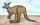

English - Kannada Dictionary
ಇಂಗ್ಲಿಷ್ - ಕನ್ನಡ ನಿಘಂಟು
- ಇಂಗ್ಲಿಷ್ ವರ್ಣಮಾಲೆಯ 11ನೆಯ ಅಕ್ಷರ.
- K ಆಕಾರದ ಯಾವುದೇ ವಸ್ತು.
- K ಅಕ್ಷರದ ಅಚ್ಚು ಮೊಳೆ.
- (ಬೈಬ್ಲ್) King(s).
- Kochel (ಮೋಸಾರ್ಟನ ಸಂಗೀತ ಕೃತಿಗಳ ಕ್ಯಾಟಲಾಗು).
- Kelvin(s).
- (k ಸಹ) (ಅಂಕಿಯ ತರುವಾಯ)
- (ಕಂಪ್ಯೂಟರ್) 1024 (ಅಂದರೆ $2^{ 10}$) ಬೈಟುಗಳು ಅಥವಾ ಸಡಿಲವಾಗಿ 1000 ಬೈಟುಗಳು.
- 1000.
ಕಾಬಾ; ಮೆಕ್ಕಾದ ಮಸೀದಿಯಲ್ಲಿ ಮುಸ್ಲಿಮರಿಗೆ ಪವಿತ್ರವಾದ ಕಪ್ಪು ಶಿಲೆಯಿರುವ ಪ್ರಾರ್ಥನಾ ಮಂದಿರ.
ಕಾಮ; ದಕ್ಷಿಣ ಆಹ್ರಿಕದ ಒಂದು ಜಿಂಕೆ.
ಕಬಾಕ:
- ದಕ್ಷಿಣ ಆಹ್ರಿಕದ ಬ್ಯೂಗಾಂಡಾ ದೇಶದ ದೊರೆ.
- ಬ್ಯೂಗಾಂಡಾ ದೊರೆಯ ಬಿರುದು.
ಕಬೂಕಿ (ನಾಟಕ); ವೇಷಭೂಷಣಗಳು ವಿಪುಲವಾಗಿರುವ, ಸಂಗೀತಸಂವಾದ ಪ್ರಧಾನವಾದ, ಗಂಡಸರು ಮಾತ್ರ ಪಾತ್ರವಹಿಸುವ, ಜಪಾನಿನ ಜನಪ್ರಿಯ ಸಾಂಪ್ರದಾಯಿಕ ನಾಟಕ ರೂಪ.
ಕಬೈಲ್:
- ಆಲ್ಜೀರಿಯಾ ಮೊರಾಕೊ ಯಾ ಟ್ಯೂನಿಸ್ ದೇಶದ ಬರ್ಬರ್ ತಂಡದವನು.
- (ಆ ತಂಡದ) ಬರ್ಬರ್ (ಪ್ರಾಂತೀಯ) ಭಾಷೆ.
ಕಚೀನ:
- ಅಮೆರಿಕದ ಇಂಡಿಯನರ ಪಿತೃಪ್ರೇತ, ಪೂರ್ವಜಪ್ರೇತ.
- ವ್ರತಾಂಗ ನೃತ್ಯಗಳಲ್ಲಿ ಆ ಪ್ರೇತವನ್ನು ಪ್ರತಿನಿಧಿಸುವ ಪಾತ್ರಧಾರಿ, ನರ್ತಕ.
ಕಚೀನ ಬೊಂಬೆ; ಕಚೀನ ಪ್ರೇತವನ್ನು ಸಂಕೇತಿಸುವ ಮರದ ಬೊಂಬೆ.
- (ಮೃತರ ಆತ್ಮಕ್ಕಾಗಿ ಯೆಹೂದ್ಯರು ತಮ್ಮ ದೇವಸ್ಥಾನದಲ್ಲಿ ದೇವರಿಗೆ ಅರ್ಪಿಸುವ) ಪ್ರಾರ್ಥನಾ ಗೀತೆ.
- ಯೆಹೂದ್ಯ ದೇವಾಲಯದ ಪೂಜಾ ಸೇವೆಯ ಪ್ರಾರ್ಥನಾ ಗೀತೆ.
(ಅಮೆರಿಕನ್ ಪ್ರಯೋಗ) ಕಾಫಿಕೂಟ; ಕಾಫಿ ಸಭೆ; ಲೋಕಾಭಿರಾಮ ಮಾತು ಮತ್ತು ಕಾಫಿಸೇವನೆಗಾಗಿ ಸೇರುವ ಕೂಟ.
- ಕಾಹರ್:
- ಬಂಟು ಕುಲಕ್ಕೆ ಸೇರಿದ ದಕ್ಷಿಣ ಆಹ್ರಿಕದ ಒಂದು ಜನಾಂಗದವನು.
- ಬಂಟು ಕುಲದವರ ಭಾಷೆ.
- (ಬಹುವಚನದಲ್ಲಿ) ದಕ್ಷಿಣ ಆಹ್ರಿಕದ ಗಣಿಗಳ ಷೇರುಗಳು.
- ಕ್ಯಾಹರ್ ನವಣೆ; ಪೂರ್ವಆಹ್ರಿಕ ಮತ್ತು ಇತರ ಒಣ ಪ್ರದೇಶಗಳಲ್ಲಿ ಬೆಳೆಯುವ ಒಂದು ನವಣೆ ಜಾತಿ.
ಕ್ಯಾಹರ್ ಲಿಲಿ ದಕ್ಷಿಣ ಆಹ್ರಿಕದ, ಕ್ಲಿವಿಯ ಮಿನಿಯೇಟ ಕುಲದ, ಬಣ್ಣಬಣ್ಣದ ಹೂ ಬಿಡುವ ಲಿಲಿ ಗಿಡ.

ಕಾಹರ:
- (ಇಸ್ಲಾಮ್) ಪಾಷಂಡ; ವಿಧರ್ಮಿ; ಇಸ್ಲಾಂ ಧರ್ಮದಲ್ಲಿ ನಂಬಿಕೆ ಇಲ್ಲದವನು.
- ಏಷ್ಯಾ ಖಂಡದ ಕಾಹಿರಸ್ತಾನದವನು.

ಕ್ಯಾಹ್ಕ ಸದೃಶ; ಮುಖ್ಯವಾಗಿ ದುಃಸ್ವಪ್ನ ಸದೃಶವಾದ ಗುಣದಲ್ಲಿ ಕ್ಯಾಹ್ಕ (ಮರಣ 1924) ಎಂಬ ಜರ್ಮನ್ ಲೇಖಕನ ಬರಹಗಳನ್ನು ಹೋಲುವ.
ಕಾಗೋ; ಬುಟ್ಟಿಪಲ್ಲಕ್ಕಿ; ಬುಟ್ಟಿಯಂತೆ ಹೆಣೆದು, ಅಡ್ಡೆ ಮರದ ಮೇಲೆ ತೂಗುಬಿಟ್ಟ, ಜಪಾನಿನ ಪಲ್ಲಕ್ಕಿ.
(ಮಲಯಾ ಭಾಷೆಯಲ್ಲಿ) ಸರಾಂಗ್; ಮಲಯಾ ದೇಶದ ರಾಷ್ಟ್ರೀಯ ಉಡುಪು.
ಕೈನಿಟ್; ಪೊಟಾಸಿಯಮ್ ಮತ್ತು ಮೆಗ್ನೀಸಿಯಂ ಲವಣಗಳ ತಯಾರಿಕೆಗಾಗಿಯೂ ಫಲವತ್ಕಾರಕವಾಗಿಯೂ ಬಳಸುವ ${\rm MgSO}_4$ ${\rm KCL} {\rm 3H}_2$ O ಸಂಯೋಜನೆಯ ಒಂದು ನೈಸರ್ಗಿಕ ಪದಾರ್ಥ.
(ಚರಿತ್ರೆ) ಕೈಸರ್; ಚಕ್ರವರ್ತಿ; ಸಮ್ರಾಟ;ಸಾರ್ವಭೌಮ (ಮುಖ್ಯವಾಗಿ ಜರ್ಮನಿಯ ಚಕ್ರವರ್ತಿ, ಆಸ್ಟ್ರಿಯದ ಚಕ್ರವರ್ತಿ ಯಾ ಪವಿತ್ರ ರೋಮನ್ ಸಾಮ್ರಾಜ್ಯದ ಚಕ್ರವರ್ತಿ).
(ಮುಖ್ಯವಾಗಿ ಜರ್ಮನಿ, ಆಸ್ಟ್ರಿಯಾ ಯಾ ಪವಿತ್ರ ರೋಮನ್ ಚಕ್ರಾಧಿಪತ್ಯದ) ಕೈಸರಗಿರಿ; ಚಕ್ರವರ್ತಿಯ, ಸಮ್ರಾಟನ ಪದವಿ; ಸಾರ್ವಭೌಮತ್ವ.
ಕಜಾವ; ಒಂಟೆ – ಡೋಲಿ, ತೊಟ್ಟಿಲು; (ಸ್ತ್ರೀಯರಿಗೆ ವಾಹನವಾಗಿ ಬಳಸುವ, ಒಂಟೆಯ ಎರಡು ಬಗಲಿಗೂ ತೂಗಕಟ್ಟಿದ) ಡೋಲಿ, ತೊಟ್ಟಿಲು.
ಕಾಕಾ; ನ್ಯೂಸಿಲೆಂಡಿನ ಆಲಿವ್ ಕಂದುಬಣ್ಣದ ಗಿಣಿ ಜಾತಿ.
ಗೂಬೆಗಿಣಿ; ನ್ಯೂಸಿಲೆಂಡಿನ ಗೂಬೆಯಾಕಾರದ ನಿಶಾಚರ ಗಿಣಿ.
ತೂಗು(ಚಿತ್ರ)ಪಟ; ಸಾಮಾನ್ಯವಾಗಿ ರೇಷ್ಮೆ ಬಟ್ಟೆಯ ಮೇಲೆ ಬರೆದು, ಬೇಕಾದಾಗ ಬಿಚ್ಚಿ, ಗೋಡೆಯ ಮೇಲೆ ತೂಗಹಾಕಬಹುದಾದ, ಬರಹ ಯಾ ಚಿತ್ರವನ್ನೊಳಗೊಂಡ, ಜಪಾನಿನ ಸುರುಳಿ ಪಟ; ಭಿತ್ತಿಪಟ.
ದುಷ್ಟಪ್ರಭುತ್ವ; ಆಸುರೀಪ್ರಭುತ್ವ; ರಾಷ್ಟ್ರದ ಅತ್ಯಂತ ದುಷ್ಟರ ಸರ್ಕಾರ.
ಕಾಳಬೇನೆ; ಕಾಳಜ್ವರ; ಭಾರತ ಮೊದಲಾದ ಪೂರ್ವದೇಶಗಳಲ್ಲಿ ಕಂಡುಬರುವ ಮಲೇರಿಯಾ ತರಹದ, ಉಗ್ರವಾದ ಸೋಂಕು ಜ್ವರ.
- ಕೇಲ್ (ಸಸ್ಯ); ಸುರುಳಿ ಸುರುಳಿಯಾದ ಎಲೆಗಳಿರುವ, ಕೋಸುಗೆಡ್ಡೆ ಜಾತಿಯ ಸಸ್ಯ.
- ಕೇಲ್ ಸಾಂಬಾರು; ಕೇಲ್ ಗೆಡ್ಡೆಯಿಂದ ಮಾಡಿದ ಸಾಂಬಾರು.
- (ಅಮೆರಿಕನ್ ಪ್ರಯೋಗ) (ಅಶಿಷ್ಟ) ಹಣ; ರೊಕ್ಕ.
Scotch kale ಧೂಮ್ರವರ್ಣದ ಎಲೆಗಳುಳ್ಳ ಕೋಸುಗೆಡ್ಡೆ.
- ಕಲೈಡೋಸ್ಕೋಪು; ವಿವಿಧ ಚಿತ್ರದರ್ಶಕ; ವಿವಿಧ ಚಿತ್ರದರ್ಶಿ; ಕೊಳವೆಯ ಒಳಗಡೆಗೆ ತಗುಲಿದಂತೆ ಪರಸ್ಪರ $50^\circ$ ಕೋನಗಳಿರುವಂತೆ ಮೂರು ಉದ್ದದ ಕನ್ನಡಿಗಳನ್ನು ಜೋಡಿಸಿ, ಕೊಳವಿಯನ್ನು ತಿರುಗಿಸಿದಾಗ ತಳದಲ್ಲಿ ಹಾಕಿರುವ ಬಣ್ಣಬಣ್ಣದ ಗಾಜಿನ ಚೂರುಗಳು, ಮಣಿಗಳು, ಮೊದಲಾದವನ್ನು ವಿವಿಧ ವಿಚಿತ್ರ ಹಾಗೂ ಸುಂದರ ಆಕಾರಗಳಲ್ಲಿ ತೋರಿಸುವ ಸಲಕರಣೆ.
- (ರೂಪಕವಾಗಿ) ಚಿತ್ರ ವಿಚಿತ್ರ ಘಟನಾವಲಿ; ನಿರಂತರವಾಗಿ ಬದಲಾಯಿಸುತ್ತಿರುವ ಚಿತ್ರವಿಚಿತ್ರ ವಸ್ತುಗಳು ಯಾ ಘಟನಾವಳಿ; ಕ್ಷಣಕ್ಷಣಕ್ಕೂ ಬದಲಾಗುತ್ತಿರುವ ಘಟನೆಗಳ ಪರಂಪರೆ.
- ಕಲೈಡೋಸ್ಕೋಪಿನ ಯಾ ಕಲೈಡೋಸ್ಕೋಪಿಗೆ ಸಂಬಂಧಿಸಿದ.
- ರೂಪ, ಆಕೃತಿ, ವರ್ಣ, ಮೊದಲಾದವನ್ನು ಕಲೈಡೋಸ್ಕೋಪಿನಂತೆ ಬದಲಾಯಿಸುತ್ತಿರುವ.
- ನಿತ್ಯ ಪರಿಣಾಮಿ; ನಿರಂತರವಾಗಿ ಬದಲಾಯಿಸುತ್ತಿರುವ: kaleidoscopic events ನಿರಂತರವಾಗಿ ಬದಲಾಯಿಸುತ್ತಿರುವ ಘಟನೆಗಳು.
- ಅತ್ಯಂತ ಜಟಿಲವೂ ವೈವಿಧ್ಯಮಯವೂ ಆದ: kaleidoscopic view of history ಜಟಿಲವೂ ವೈವಿಧ್ಯಮಯವೂ ಆದ ಐತಿಹಾಸಿಕ ದೃಷ್ಟಿ.
- ಕಲೈಡೋಸ್ಕೋಪಿನಂತೆ.
- ಕಲೈಡೋಸ್ಕೋಪಿನಂತೆ ಬದಲಾಯಿಸುತ್ತಾ.
- ನಿರಂತರವಾಗಿ ಬದಲಾವಣೆಗೊಳ್ಳುತ್ತಾ.
- ಜಟಿಲವೂ ವೈವಿಧ್ಯಮಯವೂ ಆದ ರೀತಿಯಲ್ಲಿ.

(ಕುಟುಂಬದ ಬಳಕೆಗಾಗಿ ಕಾಯಿಪಲ್ಯ ಬೆಳೆಸುವ) ಹಿತ್ತಲ ತೋಟ; ಕೈತೋಟ.
ಹಿತ್ತಲ ಬಳಗ; ಹಿತ್ತಲ ಪಂಥ; ಜನಸಾಮಾನ್ಯರ ನುಡಿಯನ್ನು ವಿಶೇಷವಾಗಿ ಬಳಸಿ, ಜನಸಾಮಾನ್ಯರ ದಿನನಿತ್ಯದ ಜೀವನವನ್ನು ಕುರಿತು ಬರೆಯುವ ಸ್ಕಾಟ್ಲೆಂಡಿನ ಕಾದಂಬರಿಕಾರರ ಒಂದು ಪಂಥ, ಬಳಗ.
ಕಾಲಿ; ಸೋಡಾ ಭಸ್ಮವನ್ನು ತಯಾರಿಸಲು ಬಳಸುತ್ತಿದ್ದ, ಗ್ಲಾಸ್ವರ್ಟ್ ಎಂಬ ಮುಳ್ಳುಗಿಡ.

ಕಾಲ್ಮಿಯ; ಉತ್ತರ ಅಮೆರಿಕದ, ಚಿತ್ರವರ್ಣದ ಬೆಡಗು ಹೂ ಬಿಡುವ ಒಂದು ನಿತ್ಯ ಹಸುರು ಪೊದೆ.

- ಕಾಲ್ಮಕ್; ಕ್ಯಾಸ್ಪಿಯನ್ ಸಮುದ್ರದ ತೀರದಲ್ಲಿ ವಾಸಿಸುವ ಬೌದ್ಧ ಮಂಗೋಲಿಯನ್ ಜನಾಂಗದ ಒಂದು ತಂಡ ಯಾ ತಂಡದವನು.
- ಕಾಲ್ಮಕ್ ಭಾಷೆ.
(ಹಣ್ಣುತಿಂದು ಬದುಕುವ, ಇದುವರೆಗೂ ತಿಳಿದಿರುವಂತೆ ಬಾವಲಿಗಳಲ್ಲೆಲ್ಲ ಅತ್ಯಂತ ದೊಡ್ಡಗಾತ್ರದ, ಇಂಡೋನೇಷ್ಯಾ, ಮಲಯ ದೇಶಗಳ) ಕಾಲಾಂಗ್ (ಬಾವಲಿ); ನರಿಬಾವಲಿ.
(ಹಿಂದೂಮತ) ಕಲ್ಪ; ಬ್ರಹ್ಮನ ಒಂದು ದಿನ; 432 ಕೋಟಿ ವರ್ಷಗಳ ಕಾಲಾವಧಿ.
ಕಾಮ; ಮನ್ಮಥ; ಹಿಂದೂ ಧರ್ಮದಲ್ಲಿನ ಪ್ರೇಮದ ಅಧಿದೈವ.
ಕಾಮಸೂತ್ರ; ಕಾಮ – ಕಲೆಯನ್ನು, ಕೇಳಿಯನ್ನು ಯಾ ಅನಂಗ ವಿದ್ಯೆಯನ್ನು ಯಾ ರತಿಕೇಳಿಯನ್ನು ಕುರಿತ, ಪುರಾತನ ಸಂಸ್ಕೃತ ಶಾಸ್ತ್ರಗ್ರಂಥ.
ಕೇಮ್; ಕರಗಿದ ಹಿಮನದಿಯು ರಾಶಿ ಹಾಕಿದ ಮರಳು ಮತ್ತು ಬೆಣಚುಗಲ್ಲುಗಳ ಸಣ್ಣ ದಿಬ್ಬ.
- ಕಾಮಿ; (ಗವರ್ನರುಗಳು ಮೊದಲಾದವರಿಗೆ ಬಳಸುವ) ಜಪಾನೀ ಬಿರುದು.
- ಜಪಾನಿನ ಧರ್ಮದ ದೇವ (ಪುರುಷ).

(ಚರಿತ್ರೆ) ಕಾಮಿಕಾಸಿ:
- ಸಿಡಿಮದ್ದುಗಳಿಂದ ತುಂಬಿ ಗುರಿಯ ಮೇಲೆ ಉದ್ದೇಶಪೂರ್ವಕವಾಗಿ ಚಾಲಕನು ಸಿಡಿಸುತ್ತಿದ್ದ, ಜಪಾನಿನ ವಿಮಾನ.
- ಅಂಥ ವಿಮಾನದ ಚಾಲಕ.
- (ಚರಿತ್ರೆ) ಕಾಮಿಕಾಸಿಯ: ಸಿಡಿಮದ್ದುಗಳಿಂದ ತುಂಬಿ ಗುರಿಯ ಮೇಲೆ ಉದ್ದೇಶಪೂರ್ವಕ ಚಾಲಕನು ಸಿಡಿಸುತ್ತಿದ್ದ ಜಪಾನಿನ ವಿಮಾನದ, ಯಾ ಅಂಥ ವಿಮಾನ ಚಾಲಕನ.
- (ಅಪಾಯ ಮೊದಲಾದವುಗಳ ಬಗ್ಗೆ) ಲಕ್ಷ್ಯಮಾಡದ; ನಿರ್ಲಕ್ಷ್ಯವಾದ.
- ಅಪಾಯಕಾರಿ.
- ಸ್ವವಿಘಾತಕ; ಸ್ವವಿನಾಶಕ ಶಕ್ತಿಯುಳ್ಳ.

ಕ್ಯಾಂಪಾಂಗ್; ಮಲಯ ದೇಶದ ಹಳ್ಳಿ ಯಾ ಸುತ್ತಲೂ ಆವರಣವಿರುವ ಪ್ರದೇಶ.

Kansas.
ಕಾನ; ಜಪಾನೀ ಭಾಷೆಯ ಅನೇಕ ವರ್ಣಮಾಲೆಗಳಲ್ಲಿ ಒಂದು.
ಕನಾಕ:
- (ಮುಖ್ಯವಾಗಿ ಹಿಂದೆ ಆಸ್ಟ್ರೇಲಿಯದ ಕ್ವೀನ್ಸ್ಲೆಂಡಿನಲ್ಲಿ ಕಬ್ಬಿನ ಗದ್ದೆಗಳಲ್ಲಿ ಬಲಾತ್ಕಾರವಾಗಿ ಕೆಲಸ ಮಾಡಿಸುತ್ತಿದ್ದ) ಸೌತ್ಸೀ ಐಲೆಂಡಿನ ನಿವಾಸಿ.
- ಹವಾಯ್ ದ್ವೀಪವಾಸಿ.
(ಬಹುವಚನ ಅದೇ)
- ಕನ್ನಡವನ್ನಾಡುವವನು; ಕನ್ನಡಿಗ.
- ಕನ್ನಡ (ಭಾಷೆ).
ಕಾಂಗರೂ:
- ಆಸ್ಟ್ರೇಲಿಯ, ಟ್ಯಾಸ್ಮೇನಿಯ ಮೊದಲಾದ ದೇಶಗಳಲ್ಲಿ ವಾಸಿಸುವ, ಹೊಟ್ಟೆಯ ಮೇಲುಪದರದಲ್ಲಿ ಚೀಲವನ್ನು ಹೊಂದಿದ್ದು ಅದರಲ್ಲಿ ಮರಿಗಳನ್ನು ಇಟ್ಟುಕೊಳ್ಳುವ, ಕುಪ್ಪಳಿಸುವ ಒಂದು ಪ್ರಾಣಿ. 
- (ಬಹುವಚನದಲ್ಲಿ) (ಅಶಿಷ್ಟ) ಪಶ್ಚಿಮ ಆಸ್ಟ್ರೇಲಿಯಾದ ಗಣಿ ಕಂಪೆನಿ ಷೇರುಗಳು ಯಾ ಷೇರು ವ್ಯಾಪಾರಿಗಳು.
- (ಹಿಂದೆ ಬೀಳದಂತೆ ತಡೆಯಲು, ಇಳಿಜಾರಾಗಿ ಮಾಡಿದ ಪೀಠವಿರುತ್ತಿದ್ದ) ಬೈಸಿಕಲ್ಲು.
- ಆಸ್ಟ್ರೇಲಿಯದವನು.
ಕಾಂಗರೂ – ಮುಕ್ತಾಯ; ಸಮಾಪ್ತಿ; ಕಾಂಗರೂ ಮುಗಿತ; ಕೆಲವು ತಿದ್ದುಪಡಿಗಳನ್ನು ಮಂಡಿಸಿದಾಗ ಪಾರ್ಲಿಮೆಂಟಿನ ಅಧ್ಯಕ್ಷನು ಕೆಲವನ್ನು ಮಾತ್ರ ಚರ್ಚೆಗಾಗಿ ಆರಿಸಿಕೊಂಡು ಉಳಿದವನ್ನು ತಳ್ಳಿಬಿಡುವ ಮುಕ್ತಾಯ.
ಕಾಂಗರೂ ನ್ಯಾಯಾಲಯ; ಸಂಪುಗಾರರು ಮೊದಲಾದವರು ನ್ಯಾಯಬಾಹಿರವಾಗಿ ರಚಿಸಿದ ಕೋರ್ಟು, ನ್ಯಾಯಲಯ.
ಕಾಂಗರೂ ನಾಯಿ; ಕಾಂಗರೂಗಳನ್ನು ಬೇಟೆಯಾಡಲು ಬಳಸುವ ನಾಯಿ.
ಕಾಂಗರೂ ಮೊಲ; ಹೊಟ್ಟೆಚೀಲವುಳ್ಳ ಸಣ್ಣ ಮೊಲ.
ಕಾಂಗರೂ ಇಲಿ; ಹೊಟ್ಟೆಚೀಲವುಳ್ಳ ಸಣ್ಣ ಇಲಿ.
ಕಾಂಗರೂ ಪಂಜ; ಹಸುರು ಮತ್ತು ಕೆಂಪು ಹೂಗಳನ್ನು ಬಿಡುವ, ಆಸ್ಟ್ರೇಲಿಯಾದ ಒಂದು ಸಸ್ಯ.
ಕಾಂಗರೂ ಬಳ್ಳಿ; ಸಿಸಸ್ ಅಂಟಾರ್ಕ್ಟಿಕ ಕುಲದ, ಹಲ್ಲಿನಂಥ ಏಣುಳ್ಳ ಎಲೆಗಳುಳ್ಳ, ನಿತ್ಯಹರಿದ್ವರ್ಣದ ಬಳ್ಳಿ.
ಕಾನ್ಜೀ; ಚೀನೀ ಲಿಪಿಗಳನ್ನು ಬಳಸಿಕೊಂಡು ಬರೆದ ಜಪಾನೀ ಬರಹ.
ಕನ್ನಡ (ಭಾಷೆ).
(ಪರ್ಷಿಯಾ ಯಾ ಅರಾಬಿಕ್) ಕನೂನ್; 50ರಿಂದ 60 ತಂತಿಗಳುಳ್ಳ ಸೆದರ್ನಂಥ ಒಂದು ತಂತಿವಾದ್ಯ.
(ಉತ್ತರ ಅಮೆರಿಕದ) Kansas (ರಾಜ್ಯ).

ಕಾಂಟ್ನ ಸಿದ್ಧಾಂತ; ಬ್ರಿಟಿಷ್ ಅನುಭವವಾದ ಹಾಗೂ ಇತರ ಯೂರೋಪಿಯನ್ ದೇಶಗಳ ವಿಚಾರವಾದ – ಈ ಎರಡರ ಸಮನ್ವಯಕ್ಕೆ ಯತ್ನಿಸಿದ ಹದಿನೆಂಟನೆಯ ಶತಮಾನದ ಜರ್ಮನ್ ತತ್ವಶಾಸ್ತ್ರಜ್ಞ ಇಮ್ಯಾನ್ಯುಅಲ್ ಕ್ಯಾಂಟ್ (1724–1804)ನ ಸಿದ್ಧಾಂತ.
Kenya African National Union.
ಕೆಯೊಲಿನ್; ಬಿಳಿಜೇಡಿ(ಮಣ್ಣು); ಪಿಂಗಾಣಿ ಮಣ್ಣು; ಪಿಂಗಾಣಿಯನ್ನು ತಯಾರಿಸಲು ಬಳಸುವ ಒಂದು ಬಗೆಯ ನುಣುಪಾದ ಬಿಳಿಯ ಜೇಡಿಮಣ್ಣು.

ಕೆಯೊಲಿನೈಟ್; ಕೆಯೊಲಿನ್ನ ಮುಖ್ಯ ಘಟಕವಾಗಿರುವ ಜಲಯುಕ್ತ ಅಲ್ಯೂಮಿನಿಯಂ ಸಿಲಿಕೇಟ್, ${\rm Al}_2{\rm Si}_2{\rm O}_5{\rm (OH)}_4$.
(ಗಾಳಿ, ಬಿಸಿಲು, ಮೊದಲಾದ ಹವಾ ಬದಲಾವಣೆಗಳಿಗೆ ಒಡ್ಡುವುದರ ಮೂಲಕ ಹೆಲ್ಡ್ಸ್ಟಾರ್ ಮೊದಲಾದ ಖನಿಜವನ್ನು) ಕೆಯೊಲಿನೀಕರಿಸು; ಕೆಯೊಲಿನ್ಗೊಳಿಸು; ಬಿಳಿ ಜೇಡಿಯನ್ನಾಗಿಸು.
(ಭೌತವಿಜ್ಞಾನ) ಕೇಯಾನ್; ಅಧಿಕ ಶಕ್ತಿಕಣಗಳ ಸಂಘರ್ಷಣೆಯಲ್ಲಿ ಉತ್ಪತ್ತಿಯಾಗುವ, ಅಸ್ಥಿರವಾದ, ಇಲೆಕ್ಟ್ರಾನಿನ 966.3ರಷ್ಟು ತೂಕವಿರುವ ವಿದ್ಯುದಾವಿಷ್ಟ ಮೀಸಾನ್ ಯಾ 974.6ರಷ್ಟು ತೂಕವಿರುವ ವಿದ್ಯುತ್ತಟಸ್ಥ ಮೀಸಾನ್.
ವಾದ್ಯಮೇಳ, ಗೀತನಾಟಕ, ಮೇಳಗಾಯನ ಮೊದಲಾದವುಗಳ ಡೈರೆಕ್ಟರು, ನಿರ್ದೇಶಕ.
ಮಾಮೂಲಿ ಸಂಗೀತ; ಸ್ಫೂರ್ತಿಜಾತವಲ್ಲದ, ನೀರಸವಾದ ಸಾಮಾನ್ಯ ಸಂಗೀತ.
ಕೇಪಾಕ್:
- ದೂರಪ್ರಾಚ್ಯದಲ್ಲಿ ಬೆಳೆಯುವ ದೊಡ್ಡದಾದ ಬೂರುಗದ ಹತ್ತಿ ಮರ.
- ಇದರ ಹತ್ತಿ; ಜಾವಾಹತ್ತಿ; ಮೆತ್ತೆ ಮೊದಲಾದವುಗಳಿಗೆ ತುಂಬುವ, ಎಕ್ಕಿದ ಹತ್ತಿಯಂತಹ, ನಯವಾದ ಹತ್ತಿ ಯಾ ಅರಳೆ.
ಗ್ರೀಕ್ ವರ್ಣಮಾಲೆಯಲ್ಲಿ ‘ಕ್’, k ಎಂಬ ಹತ್ತನೆಯ ಅಕ್ಷರ.
(ಅಶಿಷ್ಟ) ( ಆಖ್ಯಾತಕ ಪ್ರಯೋಗದಲ್ಲಿ ಮಾತ್ರ)
- ಧ್ವಂಸವಾಗಿ ಹೋದ; ಹಾಳಾದ; ಭಸ್ಮವಾಗಿ ಹೋದ; ನಾಶವಾದ; ನಿಶ್ಶೇಷವಾದ; ಧೂಳೀಪಟವಾದ: after the bombardment the city was kaput ಬಾಂಬುದಾಳಿಯ ಬಳಿಕ ನಗರವೆಲ್ಲ ಧ್ವಂಸವಾಗಿ ಹೋಗಿತ್ತು.
- ಕೆಲಸಕ್ಕೆ ಬಾರದಂತಾದ; ಕೆಟ್ಟುಹೋದ; ನಿರುಪಯುಕ್ತವಾದ; ಅಸಮರ್ಥವಾಗಿ ಹೋದ: with their cameras rendered kaput ಕೆಲಸಕ್ಕೆ ಬಾರದಂತಾಗಿದ್ದ ತಮ್ಮ ಕ್ಯಾಮರಾಗಳೊಡನೆ.
- ಬಳಕೆ ತಪ್ಪಿದ; ಹಿಂದೆ ಬಿದ್ದುಹೋದ; ಗತ: their fashions completely kaput ತೀರ ಹಿಂದೆ ಬಿದ್ದುಹೋದ ಅವರ ಹ್ಯಾಷನ್ನುಗಳು.
ಕಾರಬ್ಯುರಾನ್; ಕಪ್ಪು ಬಿರುಗಾಳಿ; ನೀಲ ಚಂಡಮಾರುತ; ಮಧ್ಯ ಏಷ್ಯಾದಲ್ಲಿ ಬೇಸಿಗೆಯಲ್ಲಿ ಬೀಸುವ ಅತಿ ಬಿರುಸಾದ, ಧೂಳುತುಂಬಿದ ಪ್ರಚಂಡ ಮಾರುತ.
ಕೇರೈಟ್; ಯೆಹೂದಿ ಧರ್ಮಶಾಸ್ತ್ರ ಪಂಡಿತರಿಂದ ಪ್ರತಿಪಾದಿತವಾದ ಸಾಂಪ್ರದಾಯಿಕ ವ್ಯಾಖ್ಯಾನವನ್ನು ನಿರಾಕರಿಸಿ ಬೈಬಲ್ಲಿನ ಹಳೆಯ ಒಡಂಬಡಿಕೆಯ ವಾಚ್ಯಾರ್ಥವನ್ನೇ ಅಂಗೀಕರಿಸುವ, ಮುಖ್ಯವಾಗಿ ಕ್ರಿಮಿಯಾದಲ್ಲಿ ವಾಸಿಸುವ, ಯೆಹೂದ್ಯ ಪಂಥಿ.
ಕಾರಕುಲ್:
- ಮರಿಯಾಗಿದ್ದಾಗ ಕಪ್ಪುತುಪ್ಪಟ ಹೊಂದಿದ್ದು, ವಯಸ್ಸಾದ ಮೇಲೆ ಅದು ಕಂದುಬಣ್ಣಕ್ಕೆ ತಿರುಗುವ, ಏಷ್ಯಾ ಖಂಡದ ಕುರಿ ಜಾತಿ.
- ಇದರಿಂದ ತಯಾರಿಸಿದ ಯಾ ಇದರಂತೆಯೇ ಇರುವ ತುಪ್ಪಟ, ತುಪ್ಪಳು.
ಕರಾಟೆ; ಕೈಕಾಲುಗಳನ್ನು ಮಾತ್ರ ಬಳಸಿ, ಪ್ರತಿಸ್ಪರ್ಧಿಯನ್ನು ಶಸ್ತ್ರರಹಿತನನ್ನಾಗಿ ಮಾಡುವ ಜಪಾನೀ ಕಾಳಗ, ಹೋರಾಟ.
(ಹಿಂದೂ, ಜೈನ ಹಾಗೂ ಬೌದ್ಧಧರ್ಮ) ಕರ್ಮ:
- ಕರ್ಮಸಿದ್ಧಾಂತ; ಈ ಜನ್ಮದಲ್ಲೋ ಜನ್ಮಾಂತರದಲ್ಲೋ ತಾನು ಮಾಡಿದ ಕರ್ಮಫಲವನ್ನು ತಾನೇ ಅನುಭವಿಸಿ ತೀರಬೇಕೆಂಬ ಸಿದ್ಧಾಂತ.
- ಕರ್ಮಯೋಗ; ಹಿಂದೂಧರ್ಮದ ಪ್ರಕಾರ ಬ್ರಹ್ಮನನ್ನು ಸಾಕ್ಷಾತ್ಕರಿಸಿಕೊಳ್ಳುವ ಕರ್ಮ, ಜ್ಞಾನ, ಭಕ್ತಿ ಎಂಬ ಸಾಧನತ್ರಯಗಳಲ್ಲೊಂದು.
- ವ್ಯಕ್ತಿಯು ಹಿಂದಿನ ಜನ್ಮಗಳೊಂದರಲ್ಲಿ ಮಾಡಿರುವ, ಅವನ ಮುಂದಿನ ಜನ್ಮವನ್ನು ನಿರ್ಧರಿಸುವುದೆಂದು ಭಾವಿಸಲಾದ ಕರ್ಮಗಳ ಮೊತ್ತ. ಸಂಚಯ.
- ವಿಧಿ; ಹಣೆಬರಹ; ನಸೀಬು.
- ಕರ್ಮದ; ಕರ್ಮಕ್ಕೆ ಸಂಬಂಧಿಸಿದ; ಕರ್ಮದಿಂದಾದ.
- ವಿಧಿಯ; ಹಣೆಯ ಬರಹದ.
ಕರೂ; ಬೇಸಿಗೆಯಲ್ಲಿ ಬತ್ತಿ – ಹೋಗುವ, ಜೇಡಿಮಣ್ಣಿನ ನೆಲವುಳ್ಳ, ದಕ್ಷಿಣ ಆಹ್ರಿಕಾದ ಎತ್ತರವಾದ ಪ್ರಸ್ಥಭೂಮಿ.
ಕರಾಸ್; ತುಪ್ಪುಳು ಚರ್ಮದ ಹೊದಿಕೆ; ಹೊರ ಮೈಮೇಲೆ ಕೂದಲಿರುವಂತೆಯೇ ಹದ ಮಾಡಿದ, (ಪ್ರಾಣಿಗಳ) ತೊಗಲಿನಿಂದ ತಯಾರಿಸಿದ, ದಕ್ಷಿಣ ಆಹ್ರಿಕದ ಬುಡಕಟ್ಟುಗಳವರು ಹೊದ್ದುಕೊಳ್ಳುವ ಹೊದಿಕೆ.
ಕಾರಿ:
- ಪಶ್ಚಿಮ ಆಸ್ಟ್ರೇಲಿಯಾದ ಕಡುಗೆಂಪು ಬಣ್ಣದ, ಗಟ್ಟಿದಾರು ಇರುವ ಒಂದು ಎತ್ತರದ ಮರ.
- ಆ ಮರದ ದಾರು.
ನೆಲದಡಿ ಕಲ್ಲು ಕರಗಿ – ಹೋಗುವುದರಿಂದ ಆದ ಕಾಲುವೆ, ಪೊಟರೆ, ಮೊದಲಾದವುಗಳುಳ್ಳ ಪ್ರದೇಶ.
ಜೀವಕೋಶದ ನ್ಯೂಕ್ಲಿಯಸ್ ಎಂಬರ್ಥದ ಸಮಾಸ ಪೂರ್ವಪದ: karyogamy ನ್ಯೂಕ್ಲಿಯಸ್ಗಳ ಮಿಲನ.
(ಜೀವವಿಜ್ಞಾನ) ಕಾರಿಯೋಕಿನೀಸಿಸ್; ‘ಮೈಟೋಸಿಸ್’ನಲ್ಲಿ ಕೋಶದ ನ್ಯೂಕ್ಲಿಯಸ್ ಒಳಗೆ ಆಗುವ ಪ್ರಕ್ರಿಯೆ.
(ಜೀವವಿಜ್ಞಾನ) ಕಾರಿಯೊಟೈಪ್; ಕೋಶದ ನ್ಯೂಕ್ಲಿಯಸ್ನಲ್ಲಿರುವ ಕ್ರೊಮೊಸೋಮ್ ಸಂಖ್ಯೆ ಮತ್ತು ಅವುಗಳ ರಚನೆ.
(ಪವನಶಾಸ್ತ್ರ) ಅಧಶ್ಚಲ ವಾಯುಜನ್ಯ; (ಗಾಳಿಗಳ ವಿಷಯದಲ್ಲಿ) ಕೆಳದಿಕ್ಕಿಗೆ ಬೀಸುವ ಗಾಳಿಯಿಂದ ಉಂಟಾದ.
(ಜಪಾನೀ ಭಾಷೆಯ) ಕೋನಾಕ್ಷರ ಮಾಲೆ; ಕೋನವರ್ಣಮಾಲೆ; ಕೋನಾಕೃತಿಯಲ್ಲಿರುವ ವರ್ಣಮಾಲೆ.
ಕೌರಿ(ಮರ): ತೇರುಮರ; ಬೆಲೆಬಾಳುವ ದಾರುವನ್ನೂ ಒಂದು ಬಗೆಯ ರಾಳವನ್ನೂ ಕೊಡುವ, ನ್ಯೂಸಿಲೆಂಡಿನ, ಶಂಕುವಿನಂತಿರುವ, ಒಂದು ಮರ.
ಕೌರಿ(ಮರದ) ಗೋಂದು, ಅಂಟು.
- ಪಾಲಿನೀಷಯದ ಒಂದು ಪೊದೆಗಿಡ.
- ಇದರ ಬೇರುಗಳಿಂದ ತೆಗೆದ ಒಂದು ಮಾದಕವೂ ಮೂತ್ರವರ್ಧಕವೂ ಆದ ಕಷಾಯ.
ಕವಾಸ್; ತುರ್ಕಿದೇಶದ ಶಸ್ತ್ರಸಜ್ಜಿತ ಪೊಲೀಸ್ ಪ್ಯಾದೆ, ಆಳು ಯಾ ದೂತ.
ಕಾವಕಾವ; ನ್ಯೂಸಿಲೆಂಡಿನ, ಪರಿಮಳ ಬೀರುವ ಎಲೆಗಳುಳ್ಳ ಒಂದು ಅಂದವಾದ ಪೊದೆಗಿಡ.
ಕೈಯಾಕ್:
- ತೊಗಲ ದೋಣಿ; ಚಕ್ಕಳದ ದೋಣಿ; ಹಗುರವಾದ ಮರದ ಚೌಕಟ್ಟಿನ, ಸೀಲ್ ಪ್ರಾಣಿಯ ತೊಗಲಿನಿಂದ ಮುಚ್ಚಿದ, ಒಬ್ಬನೇ ಯಾನ ಮಾಡುವ ಎಸ್ಕಿಮೋ ದೋಣಿ.
- ಇದನ್ನು ಹೋಲುವ ಮುಸುಕು ಹಾಕಿದ ದೋಣಿ.
(ಆಡುಮಾತು) (ಮುಷ್ಟಿಕಾಳಗದಲ್ಲಿ) ಕೆಡವು – ಹೊಡೆತ, ಪೆಟ್ಟು, ಏಟು; ಕೆಡಹು ಗುದ್ದು; ಪಾತನ ಪ್ರಹಾರ.
ಕಸೂ; ವಾದಕನು ಅದರೊಳಕ್ಕೆ ಹಾಡುವ ಯಾ ಗುಂಯ್ಗುಡುವ ಕಿರುವಾದ್ಯ.
(United Kingdom) King’s Bench.
(ಬ್ರಿಟಿಷ್ ಪ್ರಯೋಗ) Knight Commander of (the Order of) the British Empire.
- King’s College.
- King’s Counsel.
kilocycle(s).
(ಬ್ರಿಟಿಷ್ ಪ್ರಯೋಗ) Knight Commander of (the Order of) the Bath.
(ಬ್ರಿಟಿಷ್ ಪ್ರಯೋಗ) Knight Commander of (the Order of) the Indian Empire.
(ಬ್ರಿಟಿಷ್ ಪ್ರಯೋಗ) Kinght Commander of (the Order of) St. Michael & St. George.
kilocycles per second.
(ಬ್ರಿಟಿಷ್ ಪ್ರಯೋಗ) Knight Commander of (the Order of) the Star of India.
(ಬ್ರಿಟಿಷ್ ಪ್ರಯೋಗ) Knight Commander of the Royal Victorian Order.
knocked down.
kinetic energy.
ಕೇಅ(ಗಿಣಿ); ಮೂತ್ರಪಿಂಡದ ಕೊಬ್ಬಿಗಾಗಿ ಕುರಿಗಳನ್ನು ಕೊಲ್ಲುವ, ಹಸುರು ಬಣ್ಣದ, ನ್ಯೂಸಿಲೆಂಡಿನ ಆಲ್ಪೈನ್ ಗಿಣಿ.
(ಸಾಮಾನ್ಯವಾಗಿ ಬಹುವಚನದಲ್ಲಿ ಪ್ರಯೋಗ) ಕಬಾಬ್; ಸಣ್ಣ ಸಣ್ಣ ಚೂರುಗಳಾಗಿ ಕತ್ತರಿಸಿ ತರಕಾರಿಗಳು, ಶುಂಠಿ, ಬೆಳ್ಳುಳ್ಳಿ, ಮೊದಲಾದವುಗಳೊಡನೆ ಬೇಯಿಸಿದ ಮಾಂಸ.
ಓಕರಿಸು; ವಾಕರಿಸು; ವಾಂತಿ ಯಾ ವಮನ ಮಾಡುವಂತೆ ವರ್ತಿಸು; ಓಕರಿಕೆ ಆಗುವಂತೆ ಯಾ ಬರುವಂತೆ ವರ್ತಿಸು.
keck at (ಆಹಾರ ಮೊದಲಾದವನ್ನು ಹೇವರಿಕೆಯಿಂದ, ಅಸಹ್ಯದಿಂದ) ಒಲ್ಲೆನೆನ್ನು; ನಿರಾಕರಿಸು; ತಿರಸ್ಕರಿಸು.
- (ಸಣ್ಣ ಲಂಗರಿಗೆ ಕಟ್ಟಿದ ಸರಪಣಿಯಿಂದ) ಹಡಗನ್ನು – ತುಯ್ಯು, ಎಳೆದುಕೊಂಡು ಹೋಗು.
- (ಸಣ್ಣ ಲಂಗರಿಗೆ ಕಟ್ಟಿದ ಸರಪಣಿಯಿಂದ) ಹಡಗನ್ನು ತುಯ್ದು ಯಾ ಎಳೆದು ಚಲಿಸುವಂತೆ, ಹೋಗುವಂತೆ ಮಾಡು.
(ಹಡಗಿನ ವಿಷಯದಲ್ಲಿ, ಲಂಗರಿನ ತುಯ್ತದಿಂದ) ಸಾಗು; ಹೋಗು; ಚಲಿಸು.
ಕಿಚಡಿ; ಖಿಚಡಿ:
- ಅಕ್ಕಿ, ಬೇಳೆ, ಈರುಳ್ಳಿ, ಮೊಟ್ಟೆ ಮೊದಲಾದವನ್ನು ಸೇರಿಸಿ ಮಾಡಿದ ಭಾರತದ ಒಂದು ಅಡಿಗೆ ಪದಾರ್ಥ.
- ಮೀನು, ಅಕ್ಕಿ, ಮೊಟ್ಟೆ ಮೊದಲಾದವನ್ನು ಹಾಕಿ ಮಾಡಿದ ಯೂರೋಪಿನವರ ಒಂದು ಅಡಿಗೆ ಪದಾರ್ಥ.
- (ಹಡಗಿನ) ಅಡಿಮರ; ಪಾಟಣ; ಬೆನ್ನು ತೊಲೆ; ತಳ ತೊಲೆ; ಹಡಗಿನ ಯಾ ದೋಣಿಯ ಮೈಗೆಲ್ಲ ಆಧಾರವಾಗಿ ತಳದಲ್ಲಿ ಉದ್ದಕ್ಕೂ ಹಾಕಿರುವ ಮರದ ಅಡಿಗಟ್ಟು,ದಿಮ್ಮಿ.
- (ಹಡಗುಗಳ ಲೋಹದ) ಅಡಿಗಟ್ಟು; ಅಡಿ ಹಲಗೆಗಳು.
- (ಕರ್ಮಣಿಪ್ರಯೋಗ) ಹಡಗು.
- (ಪ್ರಾಣಿವಿಜ್ಞಾನ) ಎದೆಯೇಣು; ಹಲವು ಪಕ್ಷಿಜಾತಿಗಳ ಎದೆ ಮೂಳೆಗಳ ಉದ್ದಕ್ಕೂ ಇರುವ ಉಬ್ಬು, ಏಣು.
- (ಸಸ್ಯವಿಜ್ಞಾನ) ಏಣುದಳ(ಗಳು); ಹೂವಿನ ದಳವಲಯ ಮೊದಲಾದವುಗಳಲ್ಲಿರುವ, ಹಡಗಿನ ಅಡಿ ತೊಲೆಯನ್ನು ಹೋಲುವ, ಜೋಡಿ ದಳ.
false keel (ನಿಜವಾದ ಅಡಿಗಟ್ಟಿಗೆ ಅಪಾಯ ತಪ್ಪಿಸಲು ಅದರ ನೆರವಿಗಾಗಿ ಅದರಡಿಯಲ್ಲಿ ಜೋಡಿಸಿದ) ಹುಸಿ – ಅಡಿಮರ, ತಳದಿಮ್ಮಿ ಯಾ ಅಡಿ ಹಲಗೆ.
- ಅಡಿಮರ ಮೇಲಾಗುವಂತೆ (ಹಡಗನ್ನು) ತಲೆ ಕೆಳಗು ಮಾಡು.
- ಉರುಳಿಸು; ತೆಲೆಕೆಳಗು ಮಾಡು; ತೆಲೆಕೆಳಗಾಗುವಂತೆ ಮಾಡು; ತೆಲೆಕೆಳಗಾಗಿಸು.
- ಅಡಿಮರ ಮೇಲಾಗುವಂತೆ (ಹಡಗು) ತಲೆಕೆಳಗಾಗು.
- ಉರುಳು; ಉರುಳಿ ಬೀಳು; ತೆಲೆಕೆಳಗಾಗು.
keel over = $^2$keel ಸಕರ್ಮಕ ಕ್ರಿಯಾಪದ, $^2$keel (ಅಕರ್ಮಕ ಕ್ರಿಯಾಪದ).
(ಬ್ರಿಟಿಷ್ ಪ್ರಯೋಗ) (ಚರಿತ್ರೆ)
- ಕಲ್ಲಿದ್ದಲ ಹಡಗು; (ಇಂಗ್ಲೆಂಡಿನಲ್ಲಿ) ಟೈನ್ ನದಿ ಮೊದಲಾದವುಗಳ ಮೇಲೆ ಕಲ್ಲಿದ್ದಲ ಹಡಗುಗಳಿಗೆ ಕಲ್ಲಿದ್ದಲನ್ನು ಸಾಗಿಸುವ ಚಪ್ಪಟೆ ತಳದ ಹಡಗು.
- (ಇಂತಹ ಹಡಗಿನಲ್ಲಿ ಹೇರುವ) ಕಲ್ಲಿದ್ದಲ ಹೇರು.
ಅಡಿಮರದ ಆಸರೆ, ಆಧಾರ, (ಹಡಗನ್ನು ಕಟ್ಟುವುದೇ ಮೊದಲಾದ ಸಂದರ್ಭದಲ್ಲಿ) ಅಡಿಮರಕ್ಕೆ ಆಧಾರವಾಗಿ ಇಡುವ ಮರದ ತೊಲೆ ಯಾ ದಿಮ್ಮಿ.
- (ಅಪರಾಧಿಯನ್ನು ದಂಡಿಸಲು ಅವನನ್ನು ಹಗ್ಗಕ್ಕೆ ಕಟ್ಟಿ ಇಳಿಯಬಿಟ್ಟು) ಅಡಿಗಟ್ಟಿನ ಕೆಳಗಿನಿಂದ (ಎಳೆದು) ಇನ್ನೊಂದು ಕಡೆಗೆ ಎಳೆದುಕೊ.
- (ರೂಪಕವಾಗಿ) ಕಟುವಾಗಿ – ಛೀಮಾರಿ ಹಾಕು, ವಾಗ್ದಂಡನೆ ಮಾಡು.
(ಹಡಗಿನ ಯಾ ದೋಣಿಯ ವಿಷಯದಲ್ಲಿ) ಅಡಿಮರವಿಲ್ಲದ; ಅಡಿಗಟ್ಟಿಲ್ಲದ (ರೂಪಕವಾಗಿ ಸಹ).
ಅಡಿತೊಲೆ ಸೇರುವೆಪಟ್ಟಿ; ಹಡಗಿನ ಹಾಸು ತೊಲೆಗಳನ್ನು ಅಡಿತೊಲೆಗೆ ಬಂಧಿಸುವ ಮರದ ಪಟ್ಟಿ.
(ಗೋಳಾಟದೊಡನೆ ಕೂಡಿದ ಐರ್ಲೆಂಡಿನ) ಮಸಣದ ಹಾಡು; ಸ್ಮಶಾನಗೀತೆ; ಚರಮಗೀತೆ.
- ಸ್ಮಶಾನಗೀತೆಯ ಮೂಲಕ ಸತ್ತವನಿಗಾಗಿ ಗೋಳಾಡು.
- ಗೋಳಿಡು; ಗೋಳಾಟದ ಧ್ವನಿಯಲ್ಲಿ ಹಾಡು; ಗೋಳಿಡುತ್ತ ಹಾಡು ಯಾ ಹೇಳು; ಹಾಡಿ ಹಲುಬು.
ಸ್ಮಶಾನಗೀತೆಯನ್ನು ಹಾಡು; ಮಸಣದ ಹಾಡು ಹಾಡು.
- ಮೊನಚಾದ; ಹರಿತವಾದ ಅಲಗು ಯಾ ಮೊನೆ ಉಳ್ಳ: keen razor ಹರಿತವಾದ (ಅಲಗಿನ) ಕ್ಷೌರದ ಕತ್ತಿ.
- (ಅಲಗು ಮೊದಲಾದವುಗಳ ವಿಷಯದಲ್ಲಿ) ಹರಿತವಾದ; ಮೊನಚಾದ; ಚೂಪಾದ; ಕೂರಾದ; ತೀಕ್ಷ್ಣವಾದ.
- (ಗಾಳಿ, ಹಿಮ, ಮೊದಲಾದವುಗಳ ವಿಷಯದಲ್ಲಿ) ಕೊರೆತದ; ತೀವ್ರ ಚಳಿಯ; ಕೊರೆಯುವ (ಚಳಿಯ).
- (ನೋವು, ಯಾತನೆ, ಮೊದಲಾದವುಗಳ ವಿಷಯದಲ್ಲಿ) ಕಟುವಾದ; ತೀವ್ರವಾದ; ತಾಳಲಾಗದ; ಅಸಹನೀಯ; ಸಹಿಸಲಾಗದ.
- (ವ್ಯಕ್ತಿ, ಬಯಕೆ, ಆಸಕ್ತಿ, ಮೊದಲಾದವುಗಳ ವಿಷಯದಲ್ಲಿ) ಉತ್ಸುಕ; ತವಕಪಡುವ; ತೀವ್ರಾಸಕ್ತಿಯ; ಉತ್ಸಾಹಶಾಲಿ; ಉತ್ಸಾಹಭರಿತ: keen sportsman ಉತ್ಸಾಹಶಾಲಿಯಾದ ಕ್ರೀಡಾಪಟು.
- (ಕಣ್ಣು, ದೃಷ್ಟಿ, ವಾಸನಾಶಕ್ತಿ, ಮೊದಲಾದವುಗಳ ವಿಷಯದಲ್ಲಿ) ಚುರುಕಾದ; ತೀಕ್ಷ್ಣವಾದ; ಸೂಕ್ಷ್ಮವಾದ.
- ಚುರುಕುಬುದ್ಧಿಯ; ಕುಶಾಗ್ರಬುದ್ಧಿಯ; ಸೂಕ್ಷ್ಮಬುದ್ಧಿಯುಳ್ಳ; ತೀಕ್ಷ್ಣಮತಿಯಾದ.
- (ಬ್ರಿಟಿಷ್ ಪ್ರಯೋಗ) (ಬೆಲೆಯ ವಿಷಯದಲ್ಲಿ) ಪೈಪೋಟಿಯ; (ಪೈಪೋಟಿಯ ಕಾರಣದಿಂದಾಗಿ) ಬಹಳ ಅಗ್ಗವಾದ.
- (ಆಡುಮಾತು) ಉತ್ಕೃಷ್ಟ; ಶ್ರೇಷ್ಠ; ಅತ್ತುತ್ತಮ.
- keen as mustard ಉತ್ಸಾಹಭರಿತ; ಚುರುಕಾದ; ತೀವ್ರೋತ್ಸಾಹದ.
- keen on (ಆಡುಮಾತು) (ವ್ಯಕ್ತಿ, ವಸ್ತು, ಕಾರ್ಯದಿಂದ) ಬಹಳ ಆಕರ್ಷಿತನಾಗಿ.
- keen set ಹಸಿದ; ಹಾತೊರೆಯುತ್ತಿರುವ; ತವಕಪಡುತ್ತಿರುವ; ಆತುರಪಡುತ್ತಿರುವ.
ಹಲುಬಿಗ; ಗೋಳಾಟಗಾರ; (ಮುಖ್ಯವಾಗಿ ಐರ್ಲೆಂಡಿನ ಅಂತ್ಯಕ್ರಿಯೆಯಲ್ಲಿ ಪಾತ್ರವಹಿಸುವ) ಗೋಳಾಳು; ರೋದಕ; ಗೋಳಾಡುವ ವೃತ್ತಿಯವನು(ಳು).
- ಹರಿತವಾಗಿ; ಹರಿತವಾದ ಸಾಧನದಿಂದ ಮಾಡುವಂತೆ.
- (ಅಭಿಪ್ರಾಯ, ಮಾತು, ಮೊದಲಾದವುಗಳ ವಿಷಯದಲ್ಲಿ) ಮೊನಚಾಗಿ; ಕಟುವಾಗಿ; ತೀವ್ರವಾಗಿ; ಚುಚ್ಚುವಂತೆ.
- ಉತ್ಸುಕತೆಯಿಂದ; ತವಕದಿಂದ; ತಿವ್ರೋತ್ಸಾಹದಿಂದ.
- (ಇಂದ್ರಿಯ, ಗಮನ, ಮೊದಲಾದವುಗಳ ವಿಷಯದಲ್ಲಿ) ಚುರುಕಾಗಿ; ತೀಕ್ಷ್ಣವಾಗಿ; ಸೂಕ್ಷ್ಮವಾಗಿ.
- ಚುರುಕುಬುದ್ಧಿಯಿಂದ; ಸೂಕ್ಷ್ಮಬುದ್ಧಿಯಿಂದ; ತೀಕ್ಷ್ಣಮತಿಯಿಂದ.
- (ಭಾವದ ವಿಷಯದಲ್ಲಿ) ತೀವ್ರವಾಗಿ; ಬಲವಾಗಿ.
- ಮೊನಚು; ಹರಿತವಾಗಿರುವಿಕೆ; ಚೂಪಾಗಿರುವಿಕೆ.
- (ಮಾತು, ಅಭಿಪ್ರಾಯ, ಮೊದಲಾದವುಗಳ ವಿಷಯದಲ್ಲಿ) ಕಟುತ್ವ.
- (ಶಾಖ, ಚಳಿ, ಮೊದಲಾದವುಗಳ ವಿಷಯದಲ್ಲಿ) ತೀವ್ರತೆ.
- ಉತ್ಸುಕತೆ; ತವಕಪಡುವ ಲಕ್ಷಣ; ಉತ್ಸಾಹಭರಿತತೆ.
- (ಇಂದ್ರಿಯಗಳ ವಿಷಯದಲ್ಲಿ) ಚುರುಕು(ತನ); ತೀಕ್ಷ್ಣತೆ; ಸೂಕ್ಷ್ಮತೆ.
- ಬುದ್ಧಿಯ ಚುರುಕು; ತೀಕ್ಷ್ಣಮತಿತ್ವ; ಬುದ್ಧಿಸೂಕ್ಷ್ಮತೆ.
- (ಕಾಯಿದೆ, ವಾಗ್ದಾನ, ತನ್ನಲ್ಲಿಟ್ಟ ನಂಬಿಕೆ, ಕೌಲು, ಕರಾರು, ನಿಶ್ಚಿತ ಭೇಟಿ, ಮೊದಲಾದವನ್ನು) ಪಾಲಿಸು; ಅನುಸರಿಸು; ನಡೆಸು; ಗೌರವಿಸು: keep one’s word ಮಾತಿನ ಪ್ರಕಾರ ನಡೆ.
- (ಹಬ್ಬ, ವ್ರತ, ಮೊದಲಾದವನ್ನು) ಮಾಡು; ನಡೆಸು; ನೆರವೇರಿಸು; ಆಚರಿಸು.
- (ವ್ಯಕ್ತಿ, ದುರ್ಗ, ಪಟ್ಟಣ, ಹುಟ್ಬಾಲಿನ ಗೋಲು, ಮೊದಲಾದವನ್ನು) ಕಾಯು; ಕಾಪಾಡು; ರಕ್ಷಿಸು; God keep you ದೇವರು ನಿನ್ನನ್ನು ರಕ್ಷಿಸಲಿ.
- ನೋಡಿಕೊ; (ಒಂದರ) ಜವಾಬ್ದಾರಿವಹಿಸು: keep children ಮಕ್ಕಳನ್ನು ನೋಡಿಕೊ.
- (ವಶದಲ್ಲಿರುವ ವಸ್ತುವನ್ನು) ಇರಿಸಿಕೊ; ಇಟ್ಟುಕೊ: you may keep the change ಚಿಲ್ಲರೆಯನ್ನು (ವಾಪಾಸು ಮಾಡಬೇಕಾಗಿಲ್ಲದೆ) ನೀನೇ ಇಟ್ಟುಕೊ.
- (ಮನೆ ಮೊದಲಾದವನ್ನು) ಚೆನ್ನಾಗಿ, ಚೊಕ್ಕಟವಾಗಿ, ಸರಿಯಾದ ಸ್ಥಿತಿಯಲ್ಲಿ – ಇಟ್ಟುಕೊ.
- (ಅಂಗಡಿ ಮೊದಲಾದವನ್ನು) ಸರಿಯಾಗಿ ನಿರ್ವಹಿಸು, ಇಟ್ಟುಕೊ; ನಡೆಸಿಕೊಂಡು ಹೋಗು.
- (ದಿನಚರಿ, ಲೆಕ್ಕಾಚಾರದ ಪುಸ್ತಕ, ಮೊದಲಾದವನ್ನು ವಿವರಗಳನ್ನೆಲ್ಲ ದಾಖಲು ಮಾಡಿ) ಕ್ರಮವಾಗಿ ಇರಿಸು, ಇಡು, ಇಟ್ಟಿರು.
- (ಕುಟುಂಬ, ತಾನು, ಮೊದಲಾದವನ್ನು) ಸಲಹು; ಹೊರೆ; ನೋಡಿಕೊ; ಪೋಷಿಸು; ಜೀವನೋಪಾಯ ಒದಗಿಸಿ ಇಟ್ಟುಕೊ, ಇಟ್ಟುಕೊಂಡಿರು.
- (ಹಸುಗಳು, ಜೇನುಹುಳು, ಮೊದಲಾದವನ್ನು) ಸಾಕು; ಸಾಕಿ ಇಟ್ಟುಕೊ: keep bees ಜೇನು ಸಾಕು.
- (ಒಬ್ಬಾಕೆಯನ್ನು ಉಪಭೋಗಕ್ಕಾಗಿ. ಉಪಪತ್ನಿಯನ್ನಾಗಿ, ರಖಾವ್ ಆಗಿ) ಇಟ್ಟುಕೊಂಡಿರು; ಮಡಗಿಕೊಂಡಿರು.
- (ಸರಕನ್ನು, ಮಾಲನ್ನು) ಮಾರಾಟಕ್ಕೆ ಸದಾ – ಹೊಂದಿರು. ಇಟ್ಟಿರು: do you keep buttons ನೀವು ಗುಂಡಿಗಳನ್ನು (ಮಾರಾಟಕ್ಕೆ) ಇಟ್ಟಿದ್ದೀರಾ?
- ಉಳಿಸಿಟ್ಟುಕೊಂಡಿರು; ಕಾಪಾಡಿಟ್ಟುಕೊಂಡಿರು; ಅಸ್ತಿತ್ವದಲ್ಲಿಟ್ಟುಕೊಂಡಿರು.
- (ವ್ಯಕ್ತಿಯನ್ನು ಸೆರೆಯಲ್ಲಿ, ಬಂಧನದಲ್ಲಿ) ಇಟ್ಟಿರು; ಹಿಡಿದಿಟ್ಟಿರು.
- ತಕ್ಕ ಯಾ ಸೂಚಿತ ಸ್ಥಿತಿಯಲ್ಲಿ ಇಟ್ಟುಕೊಂಡಿರು: keep them happy ಅವರನ್ನು ಸಂತೋಷವಾಗಿಟ್ಟುಕೊಂಡಿರು.
- (ವ್ಯಕ್ತಿಯನ್ನು, ತನ್ನನ್ನೇ, ಯಾವುದೇ ಕೆಲಸವನ್ನು ಮಾಡದಂತೆ) ತಡೆ; ನಿರೋಧಿಸು; ತಡೆಹಿಡಿ: will keep you from going too fast ಅತಿಯಾದ ವೇಗದಲ್ಲಿ ಹೋಗದಂತೆ ನಿನ್ನನ್ನು ತಡೆಯುತ್ತಾನೆ.
- (ವ್ಯಕ್ತಿಯನ್ನು ಸೆರೆಮನೆಯಲ್ಲಿ ಮೊದಲಾದ ಕಡೆ) ಹಿಡಿದಿಡು; ತಡೆದು ನಿಲ್ಲಿಸು: what kept you so long? ನಿನ್ನನ್ನು ಇಷ್ಟು ಹೊತ್ತು ಯಾವುದು ತಡೆದಿತ್ತು, ಹಿಡಿದಿಟ್ಟಿತ್ತು?
- (ಯಾವುದೇ ವಸ್ತುವನ್ನು, ಮುಂದಿನ ಉಪಯೋಗಕ್ಕಾಗಿ) ಉಳಿಸಿಟ್ಟಿರು; ಬಳಸದೆ ಇಟ್ಟಿರು; ಕಾದಿರಿಸು; ಕಾದಿಡು: keep it for tomorrow ನಾಳೆಗೆ ಉಳಿಸಿಟ್ಟಿರು.
- ಮುಚ್ಚಿಟ್ಟಿರು; ಬಚ್ಚಿಟ್ಟಿರು; ಗೋಪ್ಯವಾಗಿ, ಗುಟ್ಟಾಗಿ, ರಹಸ್ಯವಾಗಿ – ಇಟ್ಟಿರು: keep one’s $^1$counsel. ತನ್ನ ಇಂಗಿತವನ್ನು ಗೋಪ್ಯವಾಗಿಡು; ಅಭಿಪ್ರಾಯವನ್ನು ಬಿಟ್ಟು ಕೊಡದಿರು; ಬಾಯಿ ಬಿಡದಿರು; ಮೌನವಾಗಿರು.
- (ದಾರಿ, ಮಾಡುತ್ತಿರುವ ಕೆಲಸ, ಮೊದಲಾದವನ್ನು) ಅನುಸರಿಸುತ್ತಾ ಹೋಗು; ಬಿಡದೆ ಮಾಡುತ್ತಾ ಹೋಗು; ಹಿಡಿದಿರು; ಬಿಡದಿರು: he keeps his own course ಅವನು ತನ್ನ ದಾರಿಯನ್ನೇ ಹಿಡಿಯುತ್ತಾನೆ.
- (ಹಾಸಿಗೆ, ಕೊಠಡಿ, ಮನೆ, ಮೊದಲಾದವನ್ನು) ಬಿಟ್ಟು ಬರದಿರು; (ಹಾಸಿಗೆ ಮೊದಲಾದವುಗಳಲ್ಲೇ) ಇರು.
- (ಪ್ರತಿಭಟನೆಯನ್ನು ಲೆಕ್ಕಿಸದೆ, ಕುದುರೆಯ ಮೇಲೆ, ಕ್ಷೇತ್ರ, ರಂಗಸ್ಥಳ, ನಿಂತ ನೆಲೆ, ಇತ್ಯಾದಿಯಲ್ಲಿ) ಕದಲದಿರು; ಭದ್ರವಾಗಿರು; ತನ್ನ ಸ್ಥಾನ ಬಿಡದಿರು, ಬದಲಾಯಿಸದಿರು.
- (ಒಂದು ನಿಯತವಾದ ಸ್ಥಳದಲ್ಲಿ, ಜಾಗದಲ್ಲಿ) ಇಡು; ಇರಿಸು: knives are kept in this drawer ಈ ಸೆಳೆಖಾನೆಯಲ್ಲಿ ಚಾಕುಗಳನ್ನು ಇಟ್ಟಿದೆ.
- (ಮನೆಯೊಳಗೇ) ಇರು: keep indoors ಮನೆಯೊಳಗೇ ಇರು.
- (ಆಡುಮಾತು, ಮುಖ್ಯವಾಗಿ ಕೇಂಬ್ರಿಜ್ ವಿಶ್ವವಿದ್ಯಾನಿಲಯ) ಇರು; ವಾಸಿಸು: where do you keep? ನೀನು ಎಲ್ಲಿ ಇದ್ದೀಯೆ? ಎಲ್ಲಿ ವಾಸವಾಗಿದ್ದೀಯೆ?
- (ಯಾವುದೇ ಹೆಸರಿಸಿದ ಸ್ಥಿತಿಯಲ್ಲಿ) ಇರು: keep in good health ಆರೋಗ್ಯವಂತನಾಗಿರು. keep cool ಶಾಂತನಾಗಿರು.
- (ನಿರ್ದೇಶಿಸಿದ, ಹೆಸರಿಸಿದ, ದಿಕ್ಕು, ದಾರಿ, ಕಾರ್ಯ, ಮೊದಲಾದವುಗಳಲ್ಲಿ) ಸಾಗಿರು; ಮುಂದುವರಿಯುತ್ತಿರು: keep straight on for two miles ಇನ್ನೂ ಎರಡು ಮೈಲಿ ನೇರವಾಗಿ ಮುಂದುವರಿಯುತ್ತಿರು. she keeps giggling ಆಕೆ ಕಿಸಕಿಸನೆ ನಗುತ್ತಲೇ ಇರುತ್ತಾಳೆ.
- (ಆಹಾರ ಪದಾರ್ಥ, ಮೊದಲಾದವುಗಳ ವಿಷಯದಲ್ಲಿ) ಹದಗೆಡದಿರು; ಹಳಸದಿರು; ಕೆಡದಿರು.
- (ರೂಪಕವಾಗಿ ಸುದ್ದಿ, ಮೊದಲಾದವುಗಳ ವಿಷಯದಲ್ಲಿ) ಹಳಸಿ ಹೋಗದಿರು; ಮುಂದಿನ ಸಂದರ್ಭದಲ್ಲಿ ಬಳಸುವಂತಿರು.
- (ಕ್ರಿಕೆಟ್ನಲ್ಲಿ) ವಿಕೆಟ್ಟುಗಳನ್ನು – ಕಾಯು, ರಕ್ಷಿಸು.
- how are you keeping? (ಆಡುಮಾತು) ಕ್ಷೇಮವೇ? ನೀನು ಹೇಗಿದ್ದೀಯೆ? ನಿನ್ನ ಆರೋಗ್ಯ ಹೇಗಿದೆ?
- keep a lookout ನಿಗವಿಟ್ಟಿರು, ಕಣ್ಣಿಟ್ಟು ನೋಡುತ್ತಿರು.
- keep at (ಕೆಲಸವನ್ನು) ಎಡೆಬಿಡದೆ, ನಿರಂತರ, ಸತತವಾಗಿ – ಮಾಡುತ್ತಿರು ಯಾ ಮಾಡಿಸುತ್ತಿರು.
- keep away
- ದೂರವಿರು; (ಹತ್ತಿರ) ಬಾರದಿರು.
- ದೂರವಿಡು; ಹತ್ತಿರ ಬರಗೊಡದಿರು; ಹತ್ತಿರ ಬಾರದಂತಿಡು.
- keep back
- ಮುಂದುವರೆಯದಂತೆ ತಡೆ; ಪ್ರಗತಿಯನ್ನು ನಿರೋಧಿಸು, ತಡೆದಿಡು.
- (ಗುಟ್ಟನ್ನು, ಸಂಗತಿಯನ್ನು, ವಸ್ತುವನ್ನು) ಬಚ್ಚಿಡು; ಅವಿತಿಡು; ಮುಚ್ಚಿಡು; ಮರೆಮಾಚಿಡು.
- ದೂರ ಇರು; ಹತ್ತಿರ ಬರದಿರು.
- ಹಿಡಿದುಕೊ; ಹಿಡಿದಿಡು; ತಡೆಹಿಡಿ; ಕೊಡದಿರು: keep back Rs.50 ಐವತ್ತು ರೂಪಾಯಿಗಳನ್ನು ಹಿಡಿದುಕೊ, ಕೊಡಬೇಡ.
- keep down
- (ಯಾರನ್ನೇ ಆಗಲಿ) ಅಧೀನದಲ್ಲಿಟ್ಟುಕೊ; ವಶದಲ್ಲಿಟ್ಟುಕೊ; ಅದುಮಿಟ್ಟುಕೊ.
- (ವೆಚ್ಚ, ಬೆಲೆ, ಮೊದಲಾದವನ್ನು) ಹದ್ದುಬಸ್ತಿನಲ್ಲಿಡು; ಮಿತಿಯಲ್ಲಿಡು; ಅಂಕೆಯಲ್ಲಿಡು; ಹಿಡಿತದಲ್ಲಿಡು.
- (ಸೈನ್ಯ) (ಸಣ್ಣಪುಟ್ಟ ಕಾಳಗಗಳಲ್ಲಿ) ಅಡಗಿಕೊಂಡಿರು; ಅವಿತುಕೊಂಡಿರು.
- (ತಿಂದದ್ದನ್ನು) ವಾಂತಿ ಮಾಡದಿರು.
- keep friends ಸ್ನೇಹದಿಂದಿರು.
- keep from (ಯಾವುದನ್ನೇ) ಮಾಡದಿರು; (ಯಾವುದಕ್ಕೇ) ಕೈಹಾಕದಿರು; (ಯಾವುದರಲ್ಲೇ) ತೊಡಗದಿರು.
- keep in
- (ಭಾವಗಳು ಮೊದಲಾದವನ್ನು) ಅದುಮಿಟ್ಟುಕೊ; ನಿಗ್ರಹಿಸು; ಅಡಗಿಸಿಟ್ಟುಕೊ; ಹದ್ದುಬಸ್ತಿನಲ್ಲಿಟ್ಟುಕೊ; ತಡೆದಿಟ್ಟುಕೊ.
- (ಶಾಲಾ ಬಾಲಕರನ್ನು ಶಾಲೆಯ ವೇಳೆಯ ಬಳಿಕವೂ ಶಿಕ್ಷಾರೂಪದಲ್ಲಿ) ತಡೆದಿಡು; ಹೋಗಗೊಡದಿರು; ಕೂಡಿಡು.
- (ಬೆಂಕಿಯನ್ನು ಆರದಂತೆ) ಕಾಪಿಡು; ರಕ್ಷಿಸಿಡು.
- ಮನೆಯೊಳಗೇ – ಇರು. ಇದ್ದುಕೊಂಡಿರು.
- keep in $^2$touch with
- ಅರಿತಿರು; ಅರಿವು ಹೊಂದಿರು: keep in touch (with) the latest developments ಇತ್ತೀಚಿನ ಬೆಳೆವಣಿಗೆಗಳ ಅರಿವು ಹೊಂದಿರು.
- ಸಂಪರ್ಕ, ಸಂಬಂಧ ಇಟ್ಟುಕೊಂಡಿರು; ಪತ್ರವ್ಯವಹಾರ, ಸ್ನೇಹ, ಮೊದಲಾದವನ್ನು ಮುಂದುವರಿಸಿರು.
- keep in with (ಒಬ್ಬರೊಡನೆ) ಸೌಹಾರ್ದದಿಂದಿರು.
- keep it up (ಪ್ರಯತ್ನ, ಉತ್ಸಾಹ, ಪಡೆದ ಯಶಸ್ಸು, ಮೊದಲಾದವನ್ನು) ಮೇಲ್ಮಟ್ಟದಲ್ಲೇ ಉಳಿಸಿಕೊ; ಕುಗ್ಗಿಸದಿರು; ಇಳಿಯಗೊಡದಿರು.
- keep off
- (ವಿಷಯ ಮೊದಲಾದವನ್ನು) ಪ್ರಸ್ತಾಪಿಸದಿರು; ಚರ್ಚಿಸದಿರು.
- (ಹುಲ್ಲು ಮೊದಲಾದವುಗಳ ಮೇಲೆ) ನಡೆಯದಿರು; ತುಳಿಯದಿರು.
- ದೂರವಿಡು; ಹತ್ತಿರಕ್ಕೆ ಸೇರಿಸದಿರು ಯಾ ಬರಗೊಡದಿರು.
- (ಅಪಾಯ ಮೊದಲಾದವನ್ನು) ದೂರ ಇರಿಸು; ತೊಲಗಿಸು; ಹತ್ತಿರ ಸುಳಿಯದಂತೆ ಮಾಡು; ಹೋಗಲಾಡಿಸು.
- (ಅಪಾಯ ಮೊದಲಾದವುಗಳಿಂದ) ದೂರವಿರು.
- (ವಸ್ತು, ವ್ಯಕ್ತಿ, ಮೊದಲಾದವನ್ನು) ಮುಟ್ಟದಿರು.
- keep on
- (ಬಿಡದೆ) ವಶದಲ್ಲೇ ಇರಿಸಿಕೊ, ಇಟ್ಟುಕೊಂಡಿರು.
- ಬಳಸುತ್ತಲೇ ಇರು.
- ತೋರಿಸುತ್ತಲೇ ಇರು; ಪ್ರದರ್ಶಿಸುತ್ತಲೇ ಹೋಗು.
- (ಯಾವುದೇ ಕೆಲಸವನ್ನು) ಮಾಡುತ್ತಲೇ ಹೋಗು; ಮುಂದುವರೆಸುತ್ತಿರು.
- keep one’s $^1$balance.
- ಬೀಳದಿರು; ಸ್ಥಿರವಾಗಿರು.
- (ರೂಪಕವಾಗಿ) ಸ್ಥೈರ್ಯದಿಂದಿರು; ಉದ್ವಿಗ್ನನಾಗದಿರು; ಶಾಂತವಾಗಿರು.
- keep one’s $^1$counsel.
- keep one’s $^1$end up
- (ವ್ಯಾಪಾರ ಮೊದಲಾದವುಗಳಲ್ಲಿ) ದಕ್ಷತೆಯಿಂದ ತನ್ನ ಪಾಲಿನ ಕೆಲಸ ನಿರ್ವಹಿಸು.
- (ಸಂಭಾಷಣೆ, ಆಟ, ಮೊದಲಾದವುಗಳಲ್ಲಿ) ತನ್ನ ಪಾತ್ರವನ್ನು ಯಶಸ್ವಿಯಾಗಿ ವಹಿಸು.
- keep one’s feet ಅಡಿ ಭದ್ರವಾಗಿರು; ಸ್ಥಿರವಾಗಿರು; ಬೀಳದಂತೆ ನಿಂತಿರು.
- keep one’s hair on (ಅಶಿಷ್ಟ) ಸಮಾಧಾನದಿಂದಿರು; ಶಾಂತನಾಗಿರು; ಕೋಪಗೊಳ್ಳದಿರು.
- keep one’s hand in (ಯಾವುದಾದರೂ ವಿಷಯದಲ್ಲಿ) ಅಭ್ಯಾಸವಿಟ್ಟುಕೊಂಡಿರು; ಆಸಕ್ತಿ, ಆಸ್ಥೆ ಉಳಿಸಿಕೊಂಡಿರು.
- keep one’s $^1$head. ಶಾಂತತೆಯಿಂದಿರು; ತಲೆ ಕೆಡಿಸಿಕೊಳ್ಳದಿರು; ದುಡುಕದಿರು.
- keep open $^1$house. ಎಲ್ಲರಿಗೂ ಬಾಗಿಲು ತೆರೆದಿರು; ಬಂದವರಿಗೆಲ್ಲಾ ಅತಿಥಿ ಸತ್ಕಾರ ಮಾಡು; ಅವರಿವರೆನ್ನದೆ ಎಲ್ಲರಿಗೂ ಆತಿಥ್ಯ ನಡೆಸು, ನೀಡು.
- keep out (ಬ್ರಿಟಿಷ್ ಪ್ರಯೋಗ)
- ಹೊರಗಿಡು; ಒಳಕ್ಕೆ ಬಿಡದಿರು.
- ಹೊರಗಿರು; ಪ್ರವೇಶಿಸದಿರು; ಒಳಕ್ಕೆ ಬಾರದಿರು.
- keep pace ಸಮವೇಗದಲ್ಲಿ ಹೆಜ್ಜೆಯಿಡು; ಸಮಗತಿಯಲ್ಲಿ ಕಾಲು ಹಾಕು; ಒಡನೊಡನೆ ಹೋಗು; ಜೊತೆಜೊತೆಯಾಗಿ ಸಾಗು.
- keep (person) in (ವ್ಯಕ್ತಿಗೆ, ಯಾವುದೇ ವಸ್ತುವನ್ನು) ಒದಗಿಸಿರು; ಒದಗಿಸುತ್ತಿರು.
- keep person up (ಮುಖ್ಯವಾಗಿ ರಾತ್ರಿ) ವ್ಯಕ್ತಿ ಮಲಗದಂತೆ, ನಿದ್ದೆ ಹೋಗದಂತೆ ಮಾಡು.
- keep state
- ಘನತೆ ಗೌರವಗಳನ್ನು ಕಾಪಾಡಿಕೊ.
- ಭೇಟಿ ಮಾಡಲು, ಸಮೀಪಿಸಲು ಕಷ್ಟವಾಗಿರು.
- keep step = ನುಡಿಗಟ್ಟು \((24)\).
- keep the $^1$ball rolling (ಸಂಭಾಷಣೆ ಮೊದಲಾದವುಗಳನ್ನು) ನಿಲ್ಲದಂತೆ ನೋಡಿಕೊ; ಮುಂದುವರಿಸು.
- keep the $^1$pot boiling
- ಹೇಗೆ ಹೇಗೋ ಜೀವನೋಪಾಯ ನಡಸು.
- ಯಾವುದೇ ಕೆಲಸವನ್ನು ರಭಸದಿಂದ, ಭರಾಟೆಯಿಂದ ನಡೆಸಿತ್ತಿರು.
- keep (things etc.) to
- (ವಸ್ತು ಮೊದಲಾದವನ್ನು) ತನ್ನಲ್ಲಿಯೇ ಇಟ್ಟುಕೊ; (ಇತರರಿಗೆ) ಕೊಡದಿರು; (ಇತರರೊಂದಿಗೆ) ಹಂಚಿಕೊಳ್ಳದಿರು.
- (ವಸ್ತು ಮೊದಲಾದವನ್ನು) (ಇತರರಿಗೆ) ಅರಿಯದಂತಿಡು; ಗೊತ್ತಾಗದಂತಿಡು; ರಹಸ್ಯವಾಗಿಡು; ಬಚ್ಚಿಡು.
- keep $^1$time. ತಾಳಕ್ಕೆ ಸರಿಯಾಗಿ ಹಾಡು ಯಾ ತಾಳಕ್ಕನುಗುಣವಾಗಿ ಹೆಜ್ಜೆಹಕು, ನೃತ್ಯ ಮಾಡು.
- keep to
- (ಮಾರ್ಗ, ಪ್ರತಿಜ್ಞೆ, ಮೊದಲಾದವುಗಳಿಗೆ) ತಪ್ಪದಿರು; ಅಂಟಿಕೊಂಡಿರು; ಬದ್ಧವಾಗಿರು; (ಅವುಗಳನ್ನು) ಪಾಲಿಸು.
- (ಯಾವುದಕ್ಕೇ) ಒಳಪಟ್ಟಿರು, ಸೀಮಿತ ಮಾಡಿಕೊಂಡಿರು; (ಯಾವುದೇ ಪರಿಮಿತಿಗೆ) ಒಳಪಡಿಸಿಕೊ, ಒಳಪಡು.
- keep together
- ಒಟ್ಟಿಗಿರು; ಒಂದುಗೂಡಿರು.
- ಒಟ್ಟಿಗಿಡು; ಒಂದುಗೂಡಿಸಿರು.
- keep to oneself ತನ್ನಷ್ಟಕ್ಕೆ ತಾನಿರು; ಏಕಾಂತದಲ್ಲಿರು; ಏಕಾಂಗಿಯಾಗಿರು; ಇತರರೊಡನೆ – ಬೆರೆಯದಿರು, ಸೇರದಿರು.
- keep track of (ಘಟನಾವಳಿಯ) ಗತಿಯನ್ನು, ಬೆಳವಣಿಗೆಯನ್ನು – ಗಮನಿಸುತ್ತಿರು.
- keep under ಅಧೀನದಲ್ಲಿಟ್ಟುಕೊಂಡಿರು; ಕೈಕೆಳಗಿಟ್ಟುಕೊಂಡಿರು; ವಶದಲ್ಲಿರಿಸಿಕೊ.
- keep up
- (ಬೆಲೆಗಳು, ಉತ್ಸಾಹ, ಮೊದಲಾದವನ್ನು) ಮೇಲ್ಮಟ್ಟದಲ್ಲೇ ಇಟ್ಟುಕೊಂಡಿರು; ತಗ್ಗದಂತೆ ನೋಡಿಕೊ; ಇಳಿಯಗೊಡದಿರು.
- ಸೋಲದಿರು; ಸಗ್ಗದಿರು; ಬಿಟ್ಟುಕೊಡದಿರು.
- (ಪ್ರಗತಿ ಮೊದಲಾದವನ್ನು) ಹಾಗೆಯೇ ಉಳಿಸಿಕೊಂಡಿರು, ಮುಂದುವರಿಸಿಕೊಂಡು ಹೋಗು.
- ಸುಸ್ಥಿತಿಯಲ್ಲಿ, ಸಮರ್ಥವಾಗಿ, ಸೂಕ್ತಸ್ಥಿತಿಯಲ್ಲಿ ಇಟ್ಟುಕೊಂಡಿರು.
- (ಪತ್ರವ್ಯವಹಾರ ಮೊದಲಾದವನ್ನು) ಮುಂದುವರೆಸಿಕೊಂಡು ಹೋಗು: keep your correspondence ನಿನ್ನ ಪತ್ರವ್ಯವಹಾರ ಮುಂದುವರೆಸಿಕೊಂಡು ಹೋಗು.
- keep up appearances (ಐಶ್ವರ್ಯ, ಸ್ನೇಹ, ಮೊದಲಾದವನ್ನು) ನಟಿಸು; ಇರುವಂತೆ ತೋರಿಸಿಕೊ.
- keep up one’s courage, spirit ಧೈರ್ಯಗೆಡದಿರು; ಧೃತಿಗೆಡದಿರು; ಎದೆಗುಂದದಿರು; ಎದೆಗೆಡದಿರು.
- keep up with ಸರಿಸಮನಾಗಿರು; ಸಮವಾಗಿ ಹೆಜ್ಜೆ ಹಾಕು; ಅದೇ ವೇಗ ಹೊಂದಿರು.
- keep up with Joneses ನೆರೆಯವರಿಗೆ (ಸಾಮಾಜಿಕವಾಗಿ) ಸರಿಸಮನಾಗಿ ಬಾಳು; ಸರೀಕರೊಂದಿಗೆ ಪ್ರತಿಷ್ಠೆ ಉಳಿಸಿಕೊ.
- keep up your Greek ಕಲಿತ ಗ್ರೀಕ್ ಭಾಷೆಯನ್ನು ಮರೆಯದಂತೆ ನೋಡಿಕೊ.
- you can keep it (ಆಡುಮಾತು) ನೀನೇ ಇಟ್ಟುಕೊಳ್ಳಬಹುದು; (ಕೊಡುತ್ತಿರುವ ಆ ವಸ್ತು) ನನಗೆ – ಬೇಡ, ಬೇಕಿಲ್ಲ.
- (ಚರಿತ್ರೆ) ಕೋಟೆ; ದುರ್ಗ; ಕೋಟೆಯೊಳಗಣ ಗೋಪುರ, ಸೌಧ, ಮೊದಲಾದ ಸುಭದ್ರ ನೆಲೆ.
- ಜೀವನೋಪಾಯ; ಬದುಕಲು ಬೇಕಾದ ಆಹಾರ, ಹುಲ್ಲು, ಮೊದಲಾದ ವಸ್ತು; ಅನ್ನ: you don’t earn your keep ನಿನ್ನ ಅನ್ನವನ್ನು ನೀನು ಸಂಪಾದಿಸುತ್ತಿಲ್ಲ.
- ವಶ; ಒಡೆತನ; ನಿಯಂತ್ರಣ; ಹತೋಟಿ: is in your keep ನಿನ್ನ ಹತೋಟಿಯಲ್ಲಿದೆ.
for keeps (ಆಡುಮಾತು) ಸ್ಥಿರವಾಗಿ; ಶಾಶ್ವತವಾಗಿ; ಖಾಯಂ ಆಗಿ; ಸದಾಕಾಲಕ್ಕೂ.
- ಇಟ್ಟುಕೊಳ್ಳಬಹುದಾದ.
- ರಕ್ಷಿಸಬಹುದಾದ.
- ಪಾಲಕ; ಪೋಷಕ; ರಕ್ಷಕ: am I my brother’s keep? ನಾನೇನು ನನ್ನ ಸೋದರನ ಪಾಲಕನೇ?
- (ವ್ರತ, ಕಾಯಿದೆ, ನಿಯಮ, ಪದ್ಧತಿ, ಸಂಪ್ರದಾಯ, ಹಬ್ಬ, ಮೊದಲಾದವನ್ನು) ಪಾಲಿಸುವವನು; ಪಾಲಕ; ಆಚರಿಸುವವನು.
- (ಸೆರೆಮನೆ, ಸೆರೆಯಾಳು, ಸಂಸ್ಥೆ, ಕಟ್ಟಡ, ಭೂಮಿ, ಕಾಡು, ಮೊದಲಾದವುಗಳ) ಪಾಲಕ; ಕಾವಲುಗಾರ; ರಕ್ಷಕ; ಉಸ್ತುವಾರಿ ವಹಿಸುವವನು; ನೋಡಿಕೊಳ್ಳುವವನು.
- = gamekeeper.
- (ಭೋಜನಶಾಲೆ, ಉಗ್ರಾಣ, ಅಂಗಡಿ, ಮೊದಲಾದವನ್ನು) ಇಟ್ಟಿರುವವನು; ನಡೆಸುವವನು; ಮಾಲೀಕ ಯಾ ವ್ಯವಸ್ಥಾಪಕ.
- ಜೇನು ಸಾಕಣೆಕಾರ; ಜೇನುಹುಳುಗಳನ್ನು ಸಾಕುವವನು.
- = wicket-keeper.
- = goalkeeper.
- (ಗ್ರಂಥಾಲಯ, ವಾಚನಾಲಯ, ವಸ್ತು ಸಂಗ್ರಹಾಲಯ, ಚಿತ್ರಶಾಲೆ, ಮೊದಲಾದವುಗಳ) ಪಾಲಕ; ವ್ಯವಸ್ಥಾಪಕ; ನಿರ್ವಾಹಕ.
- ಒತ್ತುಂಗುರ; ತಡೆಯುಂಗುರ; ಕಾಪುಂಗುರ; ಒಂದು ಉಂಗುರವನ್ನು ಭದ್ರಪಡಿಸಲು ತೊಡುವ ಯಾ ತೊಡಿಸುವ ಮತ್ತೊಂದು ಉಂಗುರ, ಮುಖ್ಯವಾಗಿ ಮದುವೆ ಉಂಗುರ.
- (ಪ್ರಾಚೀನ ಪ್ರಯೋಗ) ಹುಚ್ಚನನ್ನು ನೋಡಿಕೊಳ್ಳುವವನು.
- (ಕಿವಿ ಚುಚ್ಚಿದ ರಂಧ್ರವು ಮುಚ್ಚಿಕೊಳ್ಳದಂತೆ ಇಡುವ) ಕಿವಿಯುಂಗುರ.
- ಕೆಟ್ಟುಹೋಗದ, ಕೊಳೆತು ಹೋಗದ ಹಣ್ಣು ಮೊದಲಾದವು.
- (ಭೌತವಿಜ್ಞಾನ) ಆಯಸ್ಕಾಂತ ರಕ್ಷಕ; ಶಾಶ್ವತ ಆಯಸ್ಕಾಂತದ ಮೇಲೆ ಇಟ್ಟಿರುವ ಮೆದುಕಬ್ಬಿಣದ ಯಾ ಉಕ್ಕಿನ ತುಂಡು.
(ವ್ಯಾಯಾಮ ಮೊದಲಾದವುಗಳ ವಿಷಯದಲ್ಲಿ) ಜನರನ್ನು ಸುಸ್ಥಿತಿಯಲ್ಲಿ ಮತ್ತು ಆರೋಗ್ಯಕರವಾಗಿ ಇಡುವಂತೆ ರೂಪಿಸಿದ.

ದೇಹದ ಸುಸ್ಥಿತಿ ಮತ್ತು ಆರೋಗ್ಯವನ್ನು ಕಾಪಾಡುವ ದೈನಂದಿನ ವ್ಯಾಯಾಮಗಳು.
- ವಶ; ಪೋಷಣೆ; ರಕ್ಷಣೆ; ಉಸ್ತುವಾರಿ; ಸುಫರ್ದು: left the baby in her keeping ಕೂಸನ್ನು ಆಕೆಯ ವಶದಲ್ಲಿ ಬಿಟ್ಟೆ.
- (ವ್ರತ, ಹಬ್ಬ, ಕಾಯಿದೆ, ಮೊದಲಾದವುಗಳ) ಆಚರಣೆ; ಪಾಲನೆ; ಅನುಷ್ಠಾನ.
- ಇಡುವಿಕೆ; ಕಾಪಿಡುವಿಕೆ; ಕೂಡಿಡುವಿಕೆ; ಕಟ್ಟಿಡುವಿಕೆ; ಮುಂದಿನ ಬಳಕೆಗಾಗಿ ಯಾವುದನ್ನೇ ರಕ್ಷಿಸಿ, ಉಳಿಸಿ, ಇಡುವುದು.
- ಜೀವನೋಪಾಯ; ಜೀವನಾಧಾರ: provided good keeping for the destitutes ನಿರ್ಗತಿಕರಿಗಾಗಿ ಜೀವನೋಪಾಯವನ್ನು ಒದಗಿಸಿಕೊಟ್ಟೆ, ಕಲ್ಪಿಸಿಕೊಟ್ಟೆ.
- ಅಚ್ಚುಕಟ್ಟಾದ, ಒಪ್ಪವಾದ, ಭದ್ರವಾದ, ಜೋಪಾನವಾದ, ಚೊಕ್ಕಟವಾದ – ಸ್ಥಿತಿ: the house is in good keeping ಮನೆಯು ಒಪ್ಪವಾದ ಸ್ಥಿತಿಯಲ್ಲಿದೆ.
- (ಹಿಂದೆ, ಮುಖ್ಯವಾಗಿ ಚಿತ್ರಕಲೆಯ ವಿಷಯದಲ್ಲಿ) ಹೊಂದಿಕೆ; ಸಾಮರಸ್ಯ; ಅನುರೂಪತೆ; ಯಾವುದಕ್ಕೇ ಅನುಗುಣವಾಗಿರುವುದು.
- be in keeping (with) ತಕ್ಕುದಾಗಿರು; ಅನುರೂಪವಾಗಿರು; ಅನುಗುಣವಾಗಿರು; ಹೊಂದುವಂತಿರು: his behaviour was not in keeping with the solemnity of the occasion ಅವನ ನಡವಳಿಕೆ ಆ ಸಂದರ್ಭದ ಗಾಂಭೀರ್ಯಕ್ಕೆ ಅನುಗುಣವಾಗಿರಲಿಲ್ಲ.
- in safe keeping ಸುರಕ್ಷಿತವಾಗಿ; ಸುರಕ್ಷಿತವಾದ ಕಾಪಿನಲ್ಲಿ; ರಕ್ಷಣೆಯಲ್ಲಿ.
- out of keeping (with) ತಕ್ಕುದಾಗದಿರು; ಅನುಗುಣವಾಗಿಲ್ಲದಿರು; ಹೊಂದುವಂತಿಲ್ಲದಿರು: his hilarity was out of keeping with such an environment ಅವನ ಲಲ್ಲೆ ಅಂತಹ ಪರಿಸರಕ್ಕೆ ಅನುರೂಪವಾಗಿರಲಿಲ್ಲ.
ನೆನಪಿನ ವಸ್ತು; ಅಭಿಜ್ಞಾನ; ಒಲವಿನ ಕುರುಹು; ಕೊಟ್ಟವರ ಕುರುಹಾಗಿ, ನೆನಪಿಗಾಗಿ ಇಟ್ಟುಕೊಳ್ಳುವ ವಸ್ತು.
- (ಭಂಗಿ ಮೊದಲಾದವುಗಳಿಂದ ಉಂಟಾದ) ಮತ್ತು; ಮಂಪರ.
- ಆಲಸ್ಯಸುಖ; ಆಲಸ್ಯಾನಂದ; ಸೋಮಾರಿತನದ ಸುಖ, ಸುಖಾನುಭವ.
- (ಮತ್ತು ತಂದುಕೊಳ್ಳಲು ಸೇವಿಸುವ ಭಂಗಿ ಮೊದಲಾದ) ಮಾದಕ ವಸ್ತು.
(ಬೆಡುಇನ್ ತಂಡದ) ಅರಬರ ಕುಲಾವಿ, ತಲೆಮುಸುಕು.
ಕೆಹರ್; ಸಾಮಾನ್ಯವಾಗಿ ರೋಗಿಗಳಿಗೆ ಅನುಪಾನವಾಗಿ ಕೊಡುವ, ದಕ್ಷಿಣ ರಷ್ಯಾದಲ್ಲಿ ಬಳಕೆಯಿರುವ, ತೀರ ಕಡಿಮೆ ಆಲ್ಕೋಹಾಲ್ ಉಳ್ಳ ಮದ್ಯ.
ಕೆಗ್; (ಸಾಮಾನ್ಯವಾಗಿ) (ಬ್ರಿಟಿಷ್ ಪ್ರಯೋಗ) (10 ಗ್ಯಾಲನ್ಗಿಂತ ಕಡಿಮೆ ಹಿಡಿಸುವ, ಯಾ ಅಮೆರಿಕದಲ್ಲಿ 30 ಗ್ಯಾಲನ್ಗಿಂತ ಕಡಿಮೆ ಹಿಡಿಸುವ) ಸಣ್ಣ ಪೀಪಾಯಿ; ಕಿರುಪೀಪಾಯಿ.
ಕೆಗ್ ಬಿಯರು; ಮೊಹರು ಮಾಡಿದ ಲೋಹದ ಪಾತ್ರೆಯಿಂದ ಒದಗಿಸಿದ ಬಿಯರು.
(ಅಮೆರಿಕನ್ ಪ್ರಯೋಗ) ಕೆಗ್ಲರ್; ಸ್ಕಿಟಲ್ಸ್ ಯಾ ಅದರಂಥ ಯಾವುದೇ ಆಟವಾಡುವವನು.
(ಅಮೆರಿಕನ್ ಪ್ರಯೋಗ) (ಅಶಿಷ್ಟ)
- ತಿಕ; ಪಿರ್ರೆ; ಅಂಡು.
- ಸೂಟ್ಕೇಸು, ಕೈಚೀಲ, ಮೊದಲಾದವು.
ನಾರೂತಕ; ಗಾಯ ಆಗಿರುವಲ್ಲಿ ಆದ ನಾರುನಾರಾದ ಊತಕ.
ಕೆಲ್ಪ್:
- ಕಡಲುಚೇಣಿ; ದೊಡ್ಡದಾಗಿ ಬೆಳೆಯುವ ಕಡಲ ಕಳೆಗಳು.
- (ರಸಾಯನವಿಜ್ಞಾನ) (ಹಿಂದೆ ಸೋಡಿಯಮ್ ಕಾರ್ಬೊನೇಟು, ಸಾಬೂನು, ಗಾಜು ಮೊದಲಾದವುಗಳ ತಯಾರಿಕೆಗೆ ಬಳಸುತ್ತಿದ್ದ, ಈಗ ಅಯೋಡಿನ್ ತಯಾರಿಕೆಗೆ ಮಾತ್ರ ಬಳಸುವ) ಕಡಲ ಕಳೆ(ಸುಟ್ಟ) ಬೂದಿ.
(ಸ್ಕಾಟ್ಲೆಂಡ್) ಕೆಲ್ಪಿ:
- (ಸಾಮಾನ್ಯವಾಗಿ ಕುದುರೆಯಂತೆ ಕಾಣಿಸಿಕೊಳ್ಳುವುದೆಂದೂ ಪ್ರಯಾಣಿಕರನ್ನು ಮುಳುಗಿಸುವುದರಲ್ಲಿ ವಿನೋದಪಡುವುದೆಂದೂ ಭಾವಿಸಲಾಗಿದ್ದ) ಜಲದೊಳಗಣ ಭೂತ; ಜಲಪಿಶಾಚಿ; ಕುದುರೆ ದೆವ್ವ.
- ಹಿಂದೆ ಸ್ಕಾಟ್ಲೆಂಡಿನ ಕಾಲಿ (collie) ನಾಯಿಯಿಂದ ತಳಿ ಬೆಳೆಸುತ್ತಿದ್ದ ಆಸ್ಟ್ರೇಲಿಯದ ಕುರಿಕಾಯುವ ನಾಯಿ.
(ಸೆಲ್ಸಿಯಸ್ ಡಿಗ್ರಿಗೆ ಸರಿಸಮನಾದ) ಕೆಲ್ವಿನ್ ಡಿಗ್ರಿ (ಸಂಕ್ಷಿಪ್ತ K).
(ಭೌತವಿಜ್ಞಾನ) ಕೆಲ್ವಿನ್ ಮಾನ; ಕೆಲ್ವಿನ್ ತಾಪಮಾನ; ನಿರಪೇಕ್ಷ ಶೂನ್ಯ, ಅಂದರೆ $-273.15$ ಡಿಗ್ರಿ ಸೆಲ್ಸಿಯಸ್ ಅನ್ನು ಶೂನ್ಯ ಎಂದು ಪರಿಗಣಿಸುವ ತಾಪಮಾನ ಪದ್ಧತಿ.
ತುಪ್ಪಟದ – ಒರಟುಗೂದಲು, ಬಿರುಗೂದಲು.
ಬಾಚಿದ; ಅಂದವಾಗಿಟ್ಟುಕೊಂಡಿರುವ.
ಒರಟುಗೂದಲಿನ.
(ಸ್ಕಾಟ್ಲೆಂಡ್ ಮತ್ತು ಉತ್ತರ ಇಂಗ್ಲೆಂಡ್)
- ನೋಟದಿಂದಲೇ ಗುರುತಿಸು.
- (ವ್ಯಕ್ತಿಯನ್ನು, ವಿಷಯವನ್ನು ಯಾ ವಸ್ತುವನ್ನು) ತಿಳಿ; ಅರಿ.
- ಕಣ್ಣಳವು; ಕಣ್ಣುನಿಟ್ಟು; ದೃಷ್ಟಿ(ಯ) ವ್ಯಾಪ್ತಿ.
- ತಿಳಿವಳಿಕೆಯ, ಅರಿವಿನ – ವ್ಯಾಪ್ತಿ, ಪರಿಧಿ.
- beyond one’s ken ಒಬ್ಬನ ಅರಿವಿಗೆ ಮೀರಿ; ಅರಿವಿನಾಚೆ.
- out of ken ಒಬ್ಬನ ಅರಿವಿಗೆ ಮೀರಿ; ಅರಿವಿನಾಚೆ.
- within one’s ken ಒಬ್ಬನ ತಿಳುವಳಿಕೆಗೆ ಒಳಪಟ್ಟು.
ಕನಾಹ್; (ಹೊಲದ) ಪುಂಡ್ರಿಕೆ ಯಾ ಪುಂಡಿ; ಗೋಗು; ಸೆಣಬಿನಂತೆ ಬಳಸುವ ಒಂದು ಬಗೆಯ ದಕ್ಷಿಣ ಭಾರತದ ಸೆಣಬು.
ಕೆಂಡೋ; ಇಕ್ಕೈ ಕತ್ತಿವರಸೆ; ಎರಡೂ ಕೈಗಳಿಂದ ಹಿಡಿದು ಆಡುವ ಜಪಾನಿನ ಒಂದು ಕತ್ತಿವರಸೆ.
[ಭೂತರೂಪ ಮತ್ತು ಭೂತಕೃದಂತ (ಬ್ರಿಟಿಷ್ ಪ್ರಯೋಗ) kennelled, (ಅಮೆರಿಕನ್ ಪ್ರಯೋಗ) kenneled, ವರ್ತಮಾನ ಕೃದಂತ (ಬ್ರಿಟಿಷ್ ಪ್ರಯೋಗ) kennelling, (ಅಮೆರಿಕನ್ ಪ್ರಯೋಗ) kenneling].
- ನಾಯಿಗೂಡಿನಲ್ಲಿಡು; ನಾಯಿಗೂಡಿಗೆ ಹಾಕು.
- ನಾಯಿಮನೆಗೆ, ಶ್ವಾನಗೃಹಕ್ಕೆ ಕಳುಹಿಸು. ಅದರಲ್ಲಿರಿಸು.
- ನಾಯಿಗೂಡಿನಲ್ಲಿ – ಇರು, ವಾಸಿಸು.
- ನಾಯಿಗೂಡಿಗೆ ಹೋಗು.
- ನಾಯಿಮನೆಗೆ, ಶ್ವಾನಗೃಹಕ್ಕೆ – ಹೋಗು.
(ಅಮೆರಿಕನ್ ಪ್ರಯೋಗ) ಕೀನೋ (ಆಟ); ಬಿಂಗೋ ಆಟವನ್ನು ಹೋಲುವ ಒಂದು ಬಗೆಯ ಇಸ್ಪೀಟಾಟ.
(ದೇವತಾಶಾಸ್ತ್ರ) (ಕ್ರಿಸ್ತನ) ದೇವತ್ವ ತ್ಯಾಗ; ಮನುಷ್ಯನಾಗಿ ಅವತರಿಸಿದಾಗ ಕ್ರಿಸ್ತನು ತನ್ನ ದೇವಸ್ವರೂಪವನ್ನು ಭಾಗಶಃ ತ್ಯಜಿಸಿದುದು.
(ಕ್ರೈಸ್ತಧರ್ಮ) ದೇವತ್ವ ತ್ಯಾಗದ.
(ಕ್ರೈಸ್ತಧರ್ಮ) ದೇವತ್ವ ತ್ಯಾಗ ಸಿದ್ಧಾಂತ.
(ಸ್ಕಾಟ್ಲೆಂಡ್) ಸುಸ್ಪಷ್ಟ; ವಿಸ್ಪಷ್ಟ; ಎದ್ದು ಕಾಣುವ.
ken ಧಾತುವಿನ ಭೂತರೂಪ ಮತ್ತು ಭೂತಕೃದಂತ.
(ಇಂಗ್ಲೆಂಡಿನ) ಕೆಂಟ್ ಪ್ರದೇಶದ.
(ಬ್ರಿಟಿಷ್ ಪ್ರಯೋಗ) ದೀರ್ಘೋದ್ಗಾರ:
- ಬಹುಕಾಲ ನಿಲ್ಲಿಸದೆ ಮಾಡುವ ಜಯಕಾರ, ಹರ್ಷೋದ್ಗಾರ.
- ಬಹುಕಾಲ ನಿಲ್ಲಿಸದೆ ನಡೆಸುವ ಅಸಮ್ಮತಿ ಪ್ರದರ್ಶನ.
(ಇಂಗ್ಲೆಂಡಿನ ಮೆಡ್ವೇ ನದಿಯ) ಪಶ್ಚಿಮದವನು; ಪಶ್ಚಿಮ ಕೆಂಟಿನವನು.
ಕೆಂಟ್ನ(ಲ್ಲಿ ದೊರೆಯುವ ಗಟ್ಟಿ) ಸುಣ್ಣಕಲ್ಲು.
(ನೌಕಾಯಾನ) ಹಡಗಿನ ಕಾಯಂಭರ್ತಿ; ಸ್ಥಿರಭಾರವಾಗಿ ಬಳಸುವ ಪೆಡಸುಗಬ್ಬಿಣ, ಬೀಡುಕಬ್ಬಿಣ, ಎರೆಗಬ್ಬಿಣ, ಮೊದಲಾದವು.
ಕೆಂಟಕಿ ಡಾರ್ಬಿ; ಅಮೆರಿಕ ಸಂಯುಕ್ತ ಸಂಸ್ಥಾನದ ಕೆಂಟಕಿಯ ಲೂಯಿಸ್ವಿಲ್ನಲ್ಲಿ ನಡೆಯುವ, ಮೂರು ವರ್ಷ ವಯಸ್ಸಿನ ಕುದುರೆಗಳ ವಾರ್ಷಿಕ ಪಂದ್ಯ, ರೇಸು.
(ದಕ್ಷಿಣ ಆಹ್ರಿಕದ) ಕೆನ್ಯದ ಯಾ ಕೀನ್ಯದ ನಿವಾಸಿ; ಕೆನ್ಯದವನು; ಕೀನ್ಯದವನು.
ಕೆಪ್ಲರನ ಯಾ ಅವನ ಆವಿಷ್ಕಾರಕ್ಕೆ ಸಂಬಂಧಿಸಿದ.
ಕೆಪ್ಲರನ ನಿಯಮಗಳು; ಜರ್ಮನ್ ವಿಜ್ಞಾನಿ ಕೆಪ್ಲರ್ (1571–1630) ಪ್ರತಿಪಾದಿಸಿದ, ಸೂರ್ಯನನ್ನು ಸುತ್ತು ಹಾಕುವಾಗ ಗ್ರಹಗಳು ಪಾಲಿಸುವ ಮೂರು ನಿಯಮಗಳು.
keep ಧಾತುವಿನ ಭೂತರೂಪ ಮತ್ತು ಭೂತಕೃದಂತ.

ಕೆರಟಿನ್; ಕೊಂಬಿನ ದ್ರವ್ಯ; ಶೃಂಗದ್ರವ್ಯ; ಕೊಂಬು, ಉಗುರು, ಕೂದಲು, ಹಕ್ಕಿಗಳ ಗರಿ, ಮೊದಲಾದವುಗಳ ಮೂಲದ್ರವ್ಯವಾದ ಒಂದು ಬಗೆಯ ಪ್ರೋಟೀನು.
ಕೆರಟಿನೀಕರಣ ಯಾ ಕೆರಟಿನೀಭವನ; ‘ಕೆರಟಿನ್’ನಿಂದ ಆವರಿಸುವುದು ಯಾ ಆವರಿಸಲ್ಪಡುವುದು.
ಕೆರಟಿನೀಕರಿಸು; ಕೆರಟಿನ್ನಿಂದ ಆವರಿಸುವಂತೆ ಮಾಡು.
ಕೆರಟಿನ್ನಿಂದ ಆವೃತವಾಗು, ತುಂಬು.
(ಸ್ಪಂಜಿನ ವಿಷಯದಲ್ಲಿ) ಕೆರಟಿನ್ನಿನ; ಕೊಂಬಿನ ದ್ರವ್ಯದಿಂದಾದ.
ಕೆರಟೋಸ್; ಕೆಲವು ಸ್ಪಂಜುಗಳ ಅಂಶವಾದ, ಕೊಂಬಿನ ದ್ರವ್ಯದಂತಹ ವಸ್ತು.
(ಬ್ರಿಟಿಷ್ ಪ್ರಯೋಗ) (ರಸ್ತೆಯ ಮಗ್ಗುಲಿನ ಯಾ ಮನೆಯ ಮುಂದಣ, ನೆಲಗಟ್ಟಿಗೆ ಯಾ ಎತ್ತರಿಸಿದ ಕಾಲುಹಾದಿಗೆ ಇಕ್ಕೆಲದಲ್ಲೂ ರಕ್ಷಣೆಗಾಗಿ ಕಟ್ಟಿದ) ಕಲ್ಲಿನ – ಪಾಗಾರ, ದಂಡೆ, ಅಂಚುಗಟ್ಟು, ದಿಂಡು.
ರಸ್ತೆದಂಡೆ ಮಂದಗಾಮಿ; ರಸ್ತೆಯ ಪಕ್ಕದ ಕಾಲುದಾರಿಯ ಮೇಲೆ ನಿಂತಿರುವವರನ್ನು ವಾಹನ ಹತ್ತಲು ಮನವೊಲಿಸುವುದಕ್ಕಾಗಿ ರಸ್ತೆಯ ಅಂಚಿನಲ್ಲಿ ನಿಧಾನವಾಗಿ ವಾಹನ ನಡೆಸುವವ.
ರಸ್ತೆ ದಂಡೆ ಮಂದಗಮನ; ಅಂಚು, ಪಾಗಾರ, ದಂಡೆ – ತೆವಳು, ತೆವಳುವಿಕೆ; ರಸ್ತೆ ಪಕ್ಕದ ಕಾಲುದಾರಿಯ ಮೇಲೆ ನಿಂತಿರುವವರನ್ನು ವಾಹನ ಹತ್ತಲು ಮನವೊಲಿಸುವುದಕ್ಕಾಗಿ ರಸ್ತೆಯ ಅಂಚುಗಟ್ಟಿನ ಉದ್ದಕ್ಕೂ ವಾಹನವನ್ನು ನಿಧಾನವಾಗಿ ನಡೆಸುವುದು.
ದಂಡೆ ಅಭ್ಯಾಸ; ಅಂಚು(ಗಟ್ಟು) ಅಭ್ಯಾಸ; ಸುರಕ್ಷಿತವಾಗಿ ರಸ್ತೆಯನ್ನು ಹಾಯಲು ಎಡಗಡೆ ಬಲಗಡೆ ನೋಡಿ ವಾಹನ ಸಂಚಾರ ಇಲ್ಲದ ಅವಕಾಶದಲ್ಲಿ ಹಾಯುವ ಸುಲಭ ಕ್ರಮ.
- ಕರ್ಬ್ ವ್ಯಾಪಾರ; ದಂಡೆ ವ್ಯಾಪಾರ; ಅಂಚುಗಟ್ಟು ವ್ಯಾಪಾರ; ಸ್ಟಾಕ್ ಎಕ್ಸ್ಚೇಂಜಿನ ವೇಳಾವಧಿ ಮೀರಿದ ಬಳಿಕ ನಡೆಯುವ ವ್ಯಾಪಾರ ಯಾ ಸ್ಟಾಕ್ ಎಕ್ಸ್ಚೇಂಜ್ ವ್ಯವಹಾರಕ್ಕೊಳಪಡದ ಷೇರುಗಳ ವ್ಯಾಪಾರ.
- ಕರ್ಬ್ ಮಾರುಕಟ್ಟೆ; ಅಂಚುಗಟ್ಟು ಮಾರುಕಟ್ಟೆ; ದಂಡೆ ಮಾರ್ಕೆಟ್ಟು; ಬೀದಿ ವ್ಯಾಪಾರ; ಸ್ಟಾಕ್ ಎಕ್ಸ್ಚೇಂಜಿನ ವೇಳಾವಧಿ ಮೀರಿದ ಬಳಿಕ ಸ್ಟಾಕ್ ವ್ಯವಹಾರ ನಡೆಯುವ ಯಾ ಸ್ಟಾಕ್ ಎಕ್ಸ್ಚೇಂಜಿನ ವ್ಯವಹಾರಕ್ಕೊಳಪಡದ ಷೇರುಗಳ ವ್ಯಾಪಾರ ನಡೆಯುವ ಸ್ಥಳ.
(ರಸ್ತೆಯ) ದಂಡೆಕಲ್ಲು; ಅಂಚು(ಗಟ್ಟು)ಕಲ್ಲು; ರಸ್ತೆಯ ಅಂಚುಗಟ್ಟಾಗಿ ಜೋಡಿಸಿರುವ ಕಲ್ಲುಗಳಲ್ಲೊಂದು.
ಖಾಲಿ ಕಾರು ತೂಕ; ಒಳಗೆ ಕೂರುವವರು ಹಾಗೂ ಚಾಲಕ ಇಲ್ಲದೆ, ಯಾವ ಹೊರೆಯೂ ಇಲ್ಲದೆ, ಪೆಟ್ರೋಲ್, ನೀರು, ಮೊದಲಾದವು ಮಾತ್ರ ಇರುವ ಕಾರಿನ ತೂಕ.
- ಶಿರೋವಸ್ತ್ರ ಧರಿಸಿದ; ತಲೆಚೌಕ ಕಟ್ಟಿಕೊಂಡ.
- (ಕಾವ್ಯಪ್ರಯೋಗ) ಕರ್ಚೀಪುಳ್ಳ; ಕರವಸ್ತ್ರ ಹೊಂದಿರುವ.
- (ಮುಖ್ಯವಾಗಿ ಗರಗಸದಿಂದ) ಕೊಯ್ದು ಮಾಡಿದ ಸೀಳುರಂಧ್ರ.
- ಕಡಿದುರುಳಿಸಿದ ಮರದ, ಕಡಿದ ಕಡೆಯ ತುದಿ.
(ಆಡುಮಾತು) ಗದ್ದಲ; ರಾದ್ದಾಂತ; ಗಲಭೆ; ಅವಾಂತರ; ಕೋಲಾಹಲ.
- (ಕರ್ಮಿಸ್ ಓಕ್ ಮರದ ಸಾರ ಹೀರಿ ಬದುಕುವ) ಹೆಣ್ಣು ಕಿರುಮಂಜಿ ಕೀಟ; ಕರ್ಮಿಸ್ ಕೀಟ.
- = kermes oak.
- (ರಸಾಯನವಿಜ್ಞಾನ) ಕರ್ಮಿಸ್; ಕಿರುಮಂಜಿ ಕೀಟಗಳನ್ನು ಒಣಗಿಸಿ ತಯಾರಿಸಿದ ಕೆಂಪು ರಂಗು, ವರ್ಣದ್ರವ್ಯ.
- = kermes mineral.
ಕರ್ಮಿಸ್ ಖನಿಜ; ಅಸ್ಫಟಿಕ ರೂಪದ ಕೆಂಪು ಆಂಟಿಮನಿ ಟ್ರೈಸಲೆಡ್.
ಕಿರುಮಂಜಿ ಓಕ್(ಮರ); ಕಿರುಮಂಜಿ ಕೀಟಕ್ಕೆ ಆಹಾರವಾದ, ದಕ್ಷಿಣ ಯೂರೋಪು ಮತ್ತು ಉತ್ತರ ಆಹ್ರಿಕಗಳಲ್ಲಿ ಬೆಳೆಯುವ, ನಿತ್ಯ ಹರಿದ್ವರ್ಣದ ಒಂದು ಓಕ್ ಮರ.
ಕರ್ಮಿಸ್:
- ಹಾಲೆಂಡ್ ಮೊದಲಾದ ದೇಶಗಳಲ್ಲಿ ನಡೆಯುವ, ಹರ್ಷೋತ್ಸಾಹಗಳಿಂದ ಕೂಡಿದ ವಾರ್ಷಿಕ ಸಂತೆ.
- (ಅಮೆರಿಕನ್ ಪ್ರಯೋಗ) ಧರ್ಮಸಂತೆ; ದಾನಜಾತ್ರೆ; ದಾನಧರ್ಮಗಳಿಗಾಗಿ ನಿಧಿ ಕೂಡಿಸಲು ನಡೆಸುವ ಕರ್ಮಿಸ್ ತರಹದ ಸಂತೆ, ಜಾತ್ರೆ.
(ಮುದ್ರಣ) ಅಚ್ಚುಚಾಚು; ಒಡಲಿಗಿಂತ ಯಾ ಕಾವಿಗಿಂತ ಆಚೆಗೆ ಚಾಚಿಕೊಂಡಿರುವ, ಲೋಹದ ಅಚ್ಚುಮೊಳೆಯ ಭಾಗ.
- (ಚರಿತ್ರೆ) ಲಘು(ವಾಗಿ) ಶಸ್ತ್ರಸಜ್ಜಿತವಾದ ಐರ್ಲೆಂಡ್ ಯಾ ಸ್ಕಾಟ್ಲೆಂಡಿನ ಸೈನಿಕ.
- ಹಳ್ಳಿಯ – ಗಮಾರ, ಮುಕ್ಕ; ಅಸಂಸ್ಕೃತ ವ್ಯಕ್ತಿ; ಗಾವಿಲ.
(ಮುದ್ರಣ) (ಅಚ್ಚುಮೊಳೆಯ ವಿಷಯದಲ್ಲಿ) ಚಾಚಿನ; ಒಡಲಿಗಿಂತ ಯಾ ಕಾವಿಗಿಂತ ಆಚೆಗೆ ಚಾಚಿಕೊಂಡಿರುವ.
- (ಕರಟವುಳ್ಳ ಕಾಯಿಯ ಚಿಪ್ಪಿನ ಒಳಗೆ ಯಾ ಓಟೆಯುಳ್ಳ ಕಾಯಿಯ, ಹಣ್ಣಿನ, ಓಟೆಯ ಸುತ್ತ ಇರುವ) ತಿರುಳು.
- (ಹೊಟ್ಟು, ಸಿಪ್ಪೆ, ಮೊದಲಾದವುಗಳ ಒಳಗಿನ) ಕಾಳು; ಬೀಜ; ಧಾನ್ಯ; ಉದಾಹರಣೆಗೆ ಅಕ್ಕಿ, ಗೋಧಿ ಮೊದಲಾದವುಗಳ ಕಾಳು.
- (ರೂಪಕವಾಗಿ) (ಯಾವುದೇ ವಸ್ತುವಿನ) ಕೇಂದ್ರ; ಸತ್ವಭಾಗ; ತಿರುಳು; ಹುರುಳು; ಗರ್ಭ; ಹೃದಯ: that is the kernel of the argument ಅದೇ ಈ ವಾದದ ತಿರುಳು.
(ಮುಖ್ಯವಾಗಿ ಅಮೆರಿಕನ್ ಪ್ರಯೋಗ) (ಪೆಟ್ರೋಲಿಯಮ್ಮನ್ನು ಬಟ್ಟಿ ಇಳಿಸಿ ತೆಗೆದ, ಸಾಮಾನ್ಯವಾಗಿ ಕುದಿಬಿಂದು 150 ಡಿಗ್ರಿಯಿಂದ 250 ಡಿಗ್ರಿಗಳವರೆಗಿರುವ, ದೀಪ ಉರಿಸಲು ಬಳಸುವ) ಕೆರೋಸಿನ್ ಎಣ್ಣೆ; ಕಲ್ಲೆಣ್ಣೆ; ಸೀಮೆಎಣ್ಣೆ; ಚಿಮಣಿ ಎಣ್ಣೆ.
(ಐರ್ಲೆಂಡಿನ) ಕೆರಿ ದನ; ಕೆರಿ ರಾಸು; ಕೆರಿ ಎಂಬ ನದೀತೀರದ, ಹಾಲಿಗಾಗಿ ಸಾಕುವ, ಗಿಡ್ಡ ಗಾತ್ರದ, ಕಪ್ಪು ಬಣ್ಣದ ದನ ಯಾ ಆ ದನದ ಜಾತಿ.
ಕರ್ಸಿ(ಬಟ್ಟೆ); ಉದ್ದವಾದ ತುಪ್ಪಟದೆಳೆಯಿಂದ ಮಾಡಿದ, ಟ್ವಿಲ್ ನೆಯ್ಗೆಯ, ಅಗಲ ಕಡಿಮೆಯಾದ ಒರಟು ಉಣ್ಣೆಯ ಬಟ್ಟೆ.
- ಕರ್ಸಿಮಿಯರ್ (ಬಟ್ಟೆ); ನಯವಾದ ಟ್ವಿಲ್ ನೆಯ್ಗೆಯ ಉಣ್ಣೆಯ ಬಟ್ಟೆ.
- (ಬಹುವಚನದಲ್ಲಿ) ಕರ್ಸಿಮಿಯರ್ (ಬಟ್ಟೆಯಿಂದ ಮಾಡಿದ) ಷರಾಯಿ.
ಧಾರ್ಮಿಕ ತತ್ತ್ವದ (ಮುಖ್ಯವಾಗಿ ಕ್ರೈಸ್ತ ಸುವಾರ್ತೆಯ) ಘೋಷಣೆ, ಉದ್ಘೋಷಣೆ.
ಧಾರ್ಮಿಕ ಉದ್ಘೋಷಣೆಯ, ತತ್ತ್ವೋಪದೇಶದ ಯಾ ಅದರ ಸ್ವರೂಪದ.
ಸಣ್ಣ ಡೇಗೆ (ಜಾತಿ); ಕಿರು ಡೇಗೆ.
(ಅಣಬೆ, ಟೊಮ್ಯಾಟೋ, ಮೊದಲಾದವುಗಳಿಂದ ಮಾಡಿದ) ಗೊಜ್ಜು; ಕೆಚಪ್.
(ರಸಾಯನವಿಜ್ಞಾನ) (ಕಾರ್ಬನಿಕ ಸಂಯುಕ್ತಗಳ ವಿಷಯದಲ್ಲಿ) ಕೀಟೋನಿಕ್ (ಪರಮಾಣು) ಪುಂಜದ.
(ರಸಾಯನವಿಜ್ಞಾನ) ಕೀಟೋನ್; ಕೀಟೋನಿಕ್ ಎಂಬ ದ್ವಿವೇಲಿನ್ಸೀಯ ಪರಮಾಣು ಪುಂಜವುಳ್ಳ ಕಾರ್ಬನಿಕ ಸಂಯುಕ್ತ.
(ಜೀವರಸಾಯನ ವಿಜ್ಞಾನ) ಕೀಟೋನ್ ಕಾಯ; ಆಹಾರದಲ್ಲಿ ಮೇದಸ್ಸು ಜೀರ್ಣಿಸಿ ರಕ್ತಗತವಾಗುವ ಹಾದಿಯಲ್ಲಿ ಉತ್ಪತ್ತಿಯಾಗುವ ಅಸಿಟೋನ್, ಅಸಿಟೊಅಸೆಟಿಕ್ ಆಮ್ಲ ಮತ್ತು ಬೀಟ ಹೈಡ್ರಾಕ್ಸಿ ಬ್ಯುಟೈರಿಕ್ ಆಮ್ಲ – ಈ ಮೂರು ಕೀಟೋನ್ ಸಂಯುಕ್ತಗಳಲ್ಲಿ ಒಂದು.
(ರಸಾಯನವಿಜ್ಞಾನ) ಕೀಟೋನ್ ಸ್ವರೂಪದ ಯಾ ಕೀಟೋನ್ಗೆ ಸಂಬಂಧಿಸಿದ.
ಕೀಟೋನ್ಯುರಿಯ; ಮೂತ್ರದಲ್ಲಿ ಮಾಮೂಲಿಗಿಂತ ತುಂಬ ಹೆಚ್ಚು ಕೀಟೋನ್ ಕಾಯಗಳು ಕಂಡುಬರುವ ದೇಹಸ್ಥಿತಿ.
(ವೈದ್ಯಶಾಸ್ತ್ರ) ಕೀಟೋಸಿಸ್; ಕೀಟೋನ್ ಹೆಚ್ಚಳ; ಕೀಟೋನಾಧಿಕ್ಯ; ಅನಿಯಂತ್ರಿತ ಸಿಹಿಮೂತ್ರ ವ್ಯಾಧಿಯಲ್ಲಾಗುವಂತೆ ಕಾರ್ಬೋಹೈಡ್ರೇಟುಗಳ ಚಯಾಪಚಯ ಕ್ರಿಯೆಯ ಅವ್ಯವಸ್ಥೆಯಿಂದ ದೇಹದಲ್ಲಿ ಕೀಟೋನ್ಗಳ ಪ್ರಮಾಣ ಅಧಿಕಗೊಳ್ಳುವುದು.
(ವೈದ್ಯಶಾಸ್ತ್ರ) ಕೀಟೋಸಿಸ್ ರೋಗದಿಂದ ನರಳುತ್ತಿರುವ ಇಲ್ಲವೆ ಕೀಟೋಸಿಸ್ ರೋಗಕ್ಕೆ ಸಂಬಂಧಿಸಿದ.
ಕೆಟಲು; ಸಾಮಾನ್ಯವಾಗಿ ಲೋಹದಿಂದ ಮಾಡಿದ, ಹಿಡಿಯೂ ಗಿಂಡಿಯೂ ಉಳ್ಳ, ನೀರು ಕುದಿಸುವ ಪಾತ್ರ.
a pretty kettle of fish (ವ್ಯಂಗ್ಯವಾಗಿ) (ವಿದ್ಯಮಾನಗಳ ಸ್ಥಿತಿಯ ವಿಷಯದಲ್ಲಿ) ವಿಚಿತ್ರ ಸ್ಥಿತಿಗತಿ, ಪರಿಸ್ಥಿತಿ; ಒಳ್ಳೇ – ಫಜೀತಿ, ಪೇಚು.
ನಗಾರಿ ಬಡಿಯುವವನು; ಭೇರಿ ತಾಡಕ, ಬಾಜಕ.

ಕೆಟಲ್ಭರ್ತಿ; ಕೆಟಲ್ತುಂಬ; ಕೆಟಲ್ ತುಂಬುವಷ್ಟು, ಹಿಡಿಸುವಷ್ಟು ಪ್ರಮಾಣ.
ಕೆಟಲಿನ ಹಿಡಿಕೆಯ ಕಾವು ಕೈಗೆ ತಟ್ಟದಂತೆ ಅದನ್ನು ಹಿಡಿದುಕೊಳ್ಳಲು ಬಳಸುವ ಬಟ್ಟೆ ಮೊದಲಾದವು.
kilo-electronvolt.
(ನೌಕಾಯಾನ) ಜೋಡಿಗೂಟ; ಜೋಡಿಬೆಣೆ; ಹಗ್ಗಗಳನ್ನು ಬಿಗಿಯಲು, ಸಾಮಾನ್ಯವಾಗಿ ಜೋಡಿ ಜೋಡಿಯಾಗಿ ಬಡಿದಿರುವ, ಗೂಟ ಯಾ ಬೆಣೆ.
ಕೆವ್ಲರ್; ಹೆಚ್ಚು ಕರ್ಷಕ ಶಕ್ತಿಯುಳ್ಳ (tensile strength) (ಮುಖ್ಯವಾಗಿ ರಬ್ಬರ್ ಉತ್ಪನ್ನಗಳ ತಯಾರಿಕೆಯಲ್ಲಿ – ಉದಾಹರಣೆಗೆ ಟೈರುಗಳ ತಯಾರಿಕೆಯಲ್ಲಿ, ಪ್ರಬಲಕಾರಕವಾಗಿ ಬಳಸುವ) ಸಂಶ್ಲೇಷಿತ ನಾರು.
ಕ್ಯೂ ಗಾರ್ಡನ್ಸ್; ಕ್ಯೂ – ಉದ್ಯಾನ, ತೋಟ; ಲಂಡನ್ನಿನ ಕ್ಯೂ ಎಂಬಲ್ಲಿರುವ, ಸುಪ್ರಸಿದ್ಧವಾದ ಸಸ್ಯ ವೈಜ್ಞಾನಿಕ ಉದ್ಯಾನ.
ರೆಕ್ಕೆಗಳು ಮತ್ತು ಗುಂಗುರು ಕೂದಲು ಯಾ ಮೇಲ್ಗಂಟು ಉಳ್ಳ, ದುಂಡು ದುಂಡು ಮೈಯ ಪುಟ್ಟ ಬೊಂಬೆ.
- ಕೀ; ಕೀಲಿಕೈ; ಬೀಗದ – ಕೈ, ಎಸಳು.
- ಕೀಲಿಕೈ; ಬೀಗದ ಕೈ; ಬಯಸಿದ್ದನ್ನು ಪಡೆಯಲು, ಉದ್ದಿಷ್ಟ ಕಾರ್ಯವನ್ನು ಸಾಧಿಸಲು ನೆರವಾಗುವ ಯಾ ಅಡ್ಡಿಪಡಿಸುವ ವಸ್ತು, ಸಾಧನ, ಮೊದಲಾದವು.
- (ಬಹುವಚನದಲ್ಲಿ) ಸಂತ ಪೀಟರನ ಉತ್ತರಾಧಿಕಾರಿಯಾಗಿ ಪೋಪನಿಗೆ ವಹಿಸಿಕೊಡುವ ಚರ್ಚಿನ ಅಧಿಕಾರ.
- ಕೀಲಿ ಕೈ; ಬೀಗದ ಕೈ; ತನ್ನ ಸನ್ನಿವೇಶದ ಬಲದಿಂದ ಸಮುದ್ರ, ಭೂಭಾಗ, ಮೊದಲಾದವುಗಳ ಮೇಲೆ ಹತೋಟಿ ಕೊಡುವ ಆಯಕಟ್ಟಿನ ನೆಲೆ, ಸ್ಥಾನ: Gibraltor is the key of the Mediterranean ಜಿಬ್ರಾಲ್ಟರ್ ಕೋಟೆಯು ಮೆಡಿಟರೇನಿಯನ್ ಸಮುದ್ರಕ್ಕೆ ಕೀಲಿಕೈ ಯಾ ಪ್ರವೇಶದ್ವಾರ ಆಗಿದೆ.
- (ಅಜ್ಞಾತ, ರಹಸ್ಯ ಯಾ ಅಸ್ಪಷ್ಟ ಆಗಿರುವುದನ್ನು ಪ್ರಕಟಗೊಳಿಸುವ, ತಿಳಿಸುವ ಯಾ ವಿವರಿಸುವ) ಕೀಲಿಕೈ; ವಿವರಣೆ ಯಾ ಉತ್ತರ.
- (ಅನ್ಯಭಾಷೀಯ ಪುಸ್ತಕದ) ಅಕ್ಷರಾನುವಾದ; ಶಾಬ್ದಿಕ ಭಾಷಾಂತರ; ಪದಕ್ಕೆ ಪದವಿಟ್ಟ ಅನುವಾದ.
- (ಚದುರಂಗದಾಟದ ಸಮಸ್ಯೆಯನ್ನು ಬಿಡಿಸುವಲ್ಲಿನ) ಮೊದಲ ನಡೆ; ಪ್ರಥಮ ಚಲನೆ.
- ಕೀಲಿಕೈ (ಪುಸ್ತಕ); ಗಣಿತ ಸಮಸ್ಯೆಗಳು ಮೊದಲಾದವುಗಳನ್ನು ಬಿಡಿಸುವ ವಿಧಾನಗಳನ್ನು ತಿಳಿಸಿ, ಮಾದರಿ ನಿದರ್ಶನಗಳನ್ನು ಕೊಡುವ ಪುಸ್ತಕ.
- ಕೀಲಿಕೈ; ಭೇದನ ಸಂಕೇತ; ಗೂಢಲಿಪಿ ಯಾ ರಹಸ್ಯ ಬರಹಗಳನ್ನು ಓದಲು ಸಹಾಯಕವಾದ ಪದ ಯಾ ವ್ಯವಸ್ಥೆ.
- (ಸಂಗೀತ) ಪ್ರಧಾನ ಸ್ವರಪ್ರಸ್ತಾರ; ಒಂದು ನಿರ್ದಿಷ್ಟ ಸ್ವರವನ್ನು ಅವಲಂಬಿಸಿ, ಪರಸ್ಪರ ಸ್ಪಷ್ಟವಾಗಿ ಸಂಬಂಧ ಹೊಂದಿದ್ದು, ಕೃತಿಯಲ್ಲಿ ಪ್ರಧಾನವಾಗಿರುವ, ಸ್ವರ – ಸಮುಚ್ಚಯ, ವ್ಯವಸ್ಥೆ, ಪ್ರಸ್ತಾರ, ಪದ್ಧತಿ, ತಂಡ.
- (ರೂಪಕವಾಗಿ) (ಅಭಿಪ್ರಾಯದ ಯಾ ಅಭಿವ್ಯಕ್ತಿಯ, ವಿಚಾರದ ಯಾ ಮಾತಿನ) ರೀತಿ; ಶೈಲಿ; ಧೋರಣೆ.
- ಕೂಡುಕೀಲು; ಕೂಡುಬೆಣೆ; ಬೇರೆ ಬೇರೆ ತುಂಡುಗಳನ್ನು ಕೂಡಿಸಿ ಬಿಗಿಗೊಳಿಸಲು ಸಂದುಗಳಲ್ಲಿ ನಾಟುವ, ಮರದ ಯಾ ಲೋಹದ ಬೆಣೆ, ಗೂಟ.
- (ದಬ್ಬೆಗಳ ನಡುವೆ ಮೆತ್ತಿ, ಅವುಗಳನ್ನು ಕೂಡಿಸಿ, ಭದ್ರಗೊಳಿಸಲು ತಡಿಕೆ ಗೋಡೆಗೆ ಮೆತ್ತುವ) ಗಾರೆಯ – ಮೊದಲ ಬಳಿತ, ಮೊದಲ ಲೇಪ, ಮೊದಲ ಮೆತ್ತುವೆ.
- (ಗಾರೆ ಮೊದಲಾದವು ಮೆತ್ತಿಕೊಳ್ಳಲು ಸಹಾಯಕವಾದ) ಒರಟು ಮೇಲ್ಮೈ.
- (ಆರ್ಗನ್, ಪಿಯಾನೋ, ಮೊದಲಾದ ವಾದ್ಯಗಳಲ್ಲಿ ನಾದ ಹೊರಡಿಸಲು, ಬೆರಳಚ್ಚು ಯಂತ್ರದಲ್ಲಿ ಬೆರಳಚ್ಚು ಮಾಡಲು, ತೂತು ಮಾಡಲು, ಮೊದಲಾದವುಗಳಿಗಾಗಿ ಬೆರಳಿನಿಂದ ಒತ್ತುವ) ಗುಂಡಿ; ಕೀಲು; ಬಿರಡೆ.
- ವಿದ್ಯುತ್ ಗುಂಡಿ, ಕೀಲು, ಉದಾಹರಣೆಗೆ ಟೆಲಿಗ್ರಾಹ್ ಯಾ ಬೆಂಕಿ ಹೊತ್ತಿಸುವ ಯಂತ್ರಗಳಲ್ಲಿ ವಿದ್ಯುನ್ಮಂಡಲವನ್ನು ಪೂರ್ಣಗೊಳಿಸಲು ಯಾ ಕಡಿದು ಹಾಕಲು ಬಳಸುವ ಯಾಂತ್ರಿಕ ಸಾನ.
- ತಿರುಪು ಕೈ; ಕೀಲಿಕೈ; ಮುಖ್ಯವಾಗಿ ಗಡಿಯಾರ ಮೊದಲಾದವುಗಳ ತಿರುಪುಮೊಳೆ, ತಿರುಪು ಬಿಲ್ಲೆ, ಮೊದಲಾದವುಗಳನ್ನು ಹಿಡಿದು ತಿರುಗಿಸುವ ಸಾಧನ.
- (ಸಿಕಮೋರ್, ಆಷ್, ಮೊದಲಾದ ಮರಗಳ) ರೆಕ್ಕೆಕಾಯಿ; ರೆಕ್ಕೆಬೀಜ; ಪಕ್ಕಗಳಲ್ಲಿ ರೆಕ್ಕೆಗಳಂಥ ಎರಡು ತೆಳು ಎಲೆಗಳು ಅಂಟಿಕೊಂಡಿರುವ ಕಾಯಿ ಯಾ ಬೀಜ.
- (ಅನೇಕ ವೇಳೆ ಬಹುವಚನದಲ್ಲಿ) ಒತ್ತುಗುಂಡಿ; ಬೆರಳಚ್ಚು ಯಂತ್ರ, ಕಂಪ್ಯೂಟರ್, ಮೊದಲಾದವುಗಳನ್ನು ಚಾಲನೆಗೊಳಿಸಲು ಬಳಸುವ ಒತ್ತುಗುಂಡಿಗಳಲ್ಲಿ ಒಂದು.
- Greek key = Greek Greek.
- high key (ಸಂಗೀತ) ಮೇಲ್ದನಿ; ಉನ್ನತ ಸ್ವರ; ಉಚ್ಚ ಸ್ವರ; ತಾರ ಸ್ವರ (ರೂಪಕವಾಗಿ ಸಹ).
- $^1$house of keys ಹೌಸ್ ಆಹ್ ಕೀಸ್; ಮಾನ್ ದ್ವೀಪದ ಪಾರ್ಲಿಮೆಂಟಿನ ಚುನಾಯಿತ ಸಭೆ, ಕೆಳ ಸಭೆ.
- low key (ಸಂಗೀತ) ಕೆಳದನಿ; ನಿಮ್ನ ಸ್ವರ; ಮಂದ್ರ ಸ್ವರ (ರೂಪಕವಾಗಿ ಸಹ).
- power of the keys = $^1$key(3).
- St. Peter’s keys ಸಂತ ಪೀಟರನ ಕೀಲಿಗಳು; ಪೋಪ್ ಗುರುವಿನ ಲಾಂಛನವಾಗಿ (ಫಲಕ, ಕವಚ, ಮೊದಲಾದವುಗಳಲ್ಲಿ) ಚಿತ್ರಿಸುವ ಕತ್ತರಿಯಾಕಾರದ ಬೀಗದ ಕೈಗಳು.
- get (or have) the key of the street (ರಾತ್ರಿ ಮನೆಗೆ ಸೇರಿಸದೆ) ಬೀದಿಪಾಲಾಗು; ರಸ್ತೆ ಪಾಲಾಗು; ಬೀದಿವಾಸ ಮಾಡು.
- golden (or silver) key ಲಂಚ; ರುಷುವತ್ತು.
ಅತಿ ಮುಖ್ಯವಾದ; ಅತ್ಯಂತ ಮಹತ್ವದ; ಅತ್ಯಾವಶ್ಯಕವಾದ: the key element in the problem ಈ ಸಮಸ್ಯೆಯ ಅತಿ ಮುಖ್ಯ ಅಂಶ.
- (ಮೊಳೆ, ಬೆಣೆ, ಅಗಳಿ, ಮೊದಲಾದವುಗಳನ್ನು ಹಾಕಿ) ಬಿಗಿಸು; ಬಿಗಿಗೊಳಿಸು; ಬಿಗಿಮಾಡು; ಭದ್ರಪಡಿಸು.
- ಪಿಯಾನೋ ಮೊದಲಾದ ವಾದ್ಯಗಳ ತಂತಿಯನ್ನು ಅಪೇಕ್ಷಿತ ಮಟ್ಟದಲ್ಲಿ ಶ್ರುತಿ ಮಾಡು; ಶ್ರುತಿಗೊಳಿಸು.
- (ಕೀಬೋರ್ಡಿನ ಮೂಲಕ ದತ್ತಾಂಶವನ್ನು) ಅನುಗೊಳಿಸು; ಸರಿಹೊಂದಿಸು; ಸರಿಯಾಗಿ ಜೋಡಿಸು; ಜೊತೆಗೂಡಿಸು; ಒಟ್ಟುಗೂಡಿಸು.
- (ಜಾಹೀರಾತಿಗೆ ಪ್ರತಿಯಾಗಿ ಬರುವ ಉತ್ತರಗಳನ್ನು ಗುರುತಿಸಲು ಸಹಾಯವಾಗುವಂತೆ, ನಿಯತಕಾಲಿಕದ ಜಾಹೀರಾತಿಗೆ) ಒಕ್ಕಣೆ – ಬರೆ, ರಚಿಸು; ಪದಗಳನ್ನು ಒದಗಿಸು.
- (ಗಾರೆ ಮೊದಲಾದವು ಅಂಟುವಂತೆ ಮಾಡಲು ಗೋಡೆ ಮೊದಲಾದವುಗಳ) ಮೇಲ್ಮೈಯನ್ನು – ಒರಟುಗೊಳಿಸು, ಒರಟು ಮಾಡು.
- (ಕೀಲಿ ಪದದಿಂದ ಗೂಢಲಿಪಿ ಬರಹ ಮೊದಲಾದವನ್ನು) ಭೇದಿಸು; ಅರ್ಥವಾಗುವಂತೆ ಮಾಡು; ಅರ್ಥೈಸು; ವಿವರಿಸು.
key up (ರೂಪಕವಾಗಿ)
- (ವ್ಯಕ್ತಿಯನ್ನು ಒಂದು ಸ್ಥಿತಿಗೆ ತರಲು, ಒಂದು ಕೆಲಸ ಮಾಡಲು ಮೊದಲಾದವುಗಳಿಗೆ) ಉತ್ತೇಜಿಸು; ಹುರುಪುಗೊಳಿಸು.
- (ಭಾವ, ಭಾವನೆಗಳಿಗೆ) ಒಂದು ನಿರ್ದಿಷ್ಟ ಗುಣ ಯಾ ತೀವ್ರತೆ ನೀಡು; (ಅವನ್ನು ಬೇಕಾದ ಮಟ್ಟಕ್ಕೆ) ಏರಿಸು.
- ಹುರಿದುಂಬು; ಉತ್ಸಾಹ ತುಂಬು.
- (ಬೆಲೆ, ಬೇಡಿಕೆ, ಪ್ರಯತ್ನ, ಮೊದಲಾದವನ್ನು) ಹೆಚ್ಚಿಸು; ಏರಿಸು.
- (ವ್ಯಕ್ತಿಯನ್ನು) ಉದ್ವೇಗಗೊಳಿಸು.
(ಮುಖ್ಯವಾಗಿ ವೆಸ್ಟ್ ಇಂಡೀಸ್ಗಳಲ್ಲಿನ) ತಗ್ಗುದ್ವೀಪ ಯಾ ನೀರಡಿ ಬಂಡೆಸಾಲು.
(ಬೆರಳಚ್ಚು ಯಂತ್ರದಲ್ಲಿ ಅಕ್ಷರಗಳ ಅಚ್ಚುಗಳನ್ನು ಹೊತ್ತು, ಅವುಗಳಿಗೆ ಸಂವಾದಿಯಾದ ಕೀಲಿ ಕೈಗಳನ್ನು ಒತ್ತುವುದರಿಂದ ಸರಿಸುವ) ಕೀಲಿ ಕೈ – ಪಟ್ಟಿ, ಪಟ್ಟಿಕೆ, ಬಾರು.
(ಬೆರಳಚ್ಚು ಯಂತ್ರ, ಕಂಪ್ಯೂಟರ್, ಪಿಯಾನೋ, ಮೊದಲಾದವುಗಳ) ಕೀಬೋರ್ಡು; ಕೀ ಮಣೆ; ಕೀಲಿಕೈ ಮಣೆ; ಕೀಲಿಕೈ ಫಲಕ; ಕೀಲಿಕೈಗಳ ತಂಡವಿರುವ ಹಲಗೆ.
(ಕಂಪ್ಯೂಟರ್ ಮೊದಲಾದವುಗಳ) ಕೀಲಿಕೈ ಮಣೆ ಒತ್ತಿ ದತ್ತಾಂಶವನ್ನು ದಾಖಲಿಸು.
ಕೀಬೋರ್ಡರು; (ಕಂಪ್ಯೂಟರ್ ಮೊದಲಾದವುಗಳ) ಕೀಲಿಕೈ ಮಣೆ ಒತ್ತಿ ದತ್ತಾಂಶ ದಾಖಲಿಸುವ ವ್ಯಕ್ತಿ.
(ಚರಿತ್ರೆ) ಬಿರಡೆ ತುತ್ತೂರಿ; ವಿವಿಧ ಧ್ವನಿಗಳ ಸಂಖ್ಯೆಯನ್ನು ಹೆಚ್ಚಿಸಲು ಬಿರಡೆಗಳನ್ನು ಅಳವಡಿಸಿರುವ ತುತ್ತೂರಿ.
ಕೀಲಿ(ಕೈ) ಕಂಡಿ; ಬೀಗದಲ್ಲಿ ಬೀಗದ ಕೈ ಹಾಕುವ ತೂತು.
ಮೂಲೋದ್ಯಮ; ಮೂಲ ಕೈಗಾರಿಕೆ; ಇತರ ಉದ್ಯಮಗಳನ್ನು (ಉದಾಹರಣೆಗೆ ಕಲ್ಲಿದ್ದಲ ಗಣಿಗಾರಿಕೆ, ರಂಗು ತಯಾರಿಕೆ, ಮೊದಲಾದವನ್ನು) ನಡೆಸಲು ಮುಖ್ಯ ಆಧಾರವಾದ ಕೈಗಾರಿಕೆ.
- ಬೀಗದ ಕೈ ಇಲ್ಲದ ಯಾ ಅದರ ಅಗತ್ಯವಿಲ್ಲದ.
- (ಸಂಗೀತ) (ವಾದ್ಯದ ವಿಷಯದಲ್ಲಿ) ಬಿರಡೆ, ಕೀಲಿಕೈ – ಇಲ್ಲದ.
- (ಗಡಿಯಾರ ಮೊದಲಾದ ಯಂತ್ರಗಳ ವಿಷಯದಲ್ಲಿ) ತಿರುಪು ಕೈ, ಕೀಲಿಕೈ – ಬೇಕಿಲ್ಲದ, ಅಗತ್ಯವಿಲ್ಲದ.
- (ಗಣಿತ ಸಮಸ್ಯೆ, ಗೂಢಲಿಪಿ, ಮೊದಲಾದವುಗಳ ವಿಷಯದಲ್ಲಿ) ಭೇದಕ ರಹಿತ; ವಿವರಣೆ, ಬಿಡಿಸುವ ವಿಧಾನ ಯಾ ಭೇದನ ಸಂಕೇತ ಇಲ್ಲದ.
ಪ್ರಮುಖ ವ್ಯಕ್ತಿ; ಕೇಂದ್ರ ವ್ಯಕ್ತಿ; ಯಾವುದೇ ಸಂಸ್ಥೆಯಲ್ಲಿ ಆಯಕಟ್ಟಿನ ಅಧಿಕಾರದಲ್ಲಿರುವ ವ್ಯಕ್ತಿ.
ಸ್ಥೂಲ ಭೂಪಟ; ವಿವರಪೂರ್ಣವಾದ ಭೂಪಟದ ಬಳಕೆಯನ್ನು ಸುಲಭಗೊಳಿಸಲು ರಚಿಸಿದ ಸರಳ ರೇಖಾನಕ್ಷೆ.
(ಬ್ರಿಟಿಷ್ ಪ್ರಯೋಗ) ಬೀಗದ ಕೈ ರುಸುಮ; ಕೀಲಿ(ಕೈ) ಹಣ; ಮನೆಯ ಬೀಗದ ಕೈ ಕೊಡಲು ಹೊಸ ಬಾಡಿಗೆದಾರನಿಂದ ಕೋರುವ ಹಣ.
ಕೇನ್ಸನ; ಕೇನ್ಸೀಯ; ಮುಖ್ಯವಾಗಿ ಹಣ ಮತ್ತು ತೆರಿಗೆಗಳ ಮೂಲಕ ರಾಜ್ಯದ ಅರ್ಥವ್ಯವಸ್ಥೆಯನ್ನು ನಿಯಂತ್ರಿಸುವುದಕ್ಕೆ ಸಂಬಂಧಪಟ್ಟಂತೆ, ಇಂಗ್ಲೆಂಡಿನ ಪ್ರಸಿದ್ಧ ಅರ್ಥಶಾಸ್ತ್ರಜ್ಞ ಜಾನ್ ಮೇನಾರ್ಡ್ ಕೇನ್ಸನ (1883–1946) ಆರ್ಥಿಕ ಸಿದ್ಧಾಂತಗಳ ಯಾ ಅದಕ್ಕೆ ಸಂಬಂಧಿಸಿದ.
(ಇಂಗ್ಲೆಂಡಿನ ಅರ್ಥಶಾಸ್ತ್ರಜ್ಞ) ಕೇನ್ಸ್ನ ಅನುಯಾಯಿ; ಕೇನ್ಸ್ ಪಂಥೀಯ.
- (ಸಂಗೀತ) ಜೀವಸ್ವರ; ರಾಗಕ್ಕೆ ಆಧಾರವಾದ, ರಾಗದ ಸ್ವರೂಪವನ್ನು ನಿರ್ಧರಿಸುವ ಸ್ವರ.
- (ರೂಪಕವಾಗಿ) (ಭಾಷಣ, ಲೇಖನ, ಯೋಜನೆ, ಕಾರ್ಯಕ್ರಮ, ಮೊದಲಾದವುಗಳ) ಮುಖ್ಯ ಭಾವ ಯಾ ಭಾವನೆ; ಪ್ರಧಾನ ವಿಷಯ; ಮುಖ್ಯ ಅಭಿಪ್ರಾಯ ಯಾ ಧೋರಣೆ: the keynote of the whole occasion ಇಡಿ ಸಂದರ್ಭದ ಮುಖ್ಯ ಭಾವ. unemployment was the keynote of the conference ನಿರುದ್ಯೋಗವು ಸಮ್ಮೇಳನದ ಪ್ರಧಾನ ವಿಷಯವಾಗಿತ್ತು.
(ಸಭೆ, ಸಮ್ಮೇಳನ, ಚರ್ಚೆ, ಮೊದಲಾದವುಗಳಲ್ಲಿ ಮಾಡುವ ಭಾಷಣದ ವಿಷಯದಲ್ಲಿ) ಪ್ರಧಾನ ಧೋರಣೆಯನ್ನು ನಿರ್ಮಿಸುವ ಯಾ ಮುಖ್ಯ ವಿಷಯವನ್ನು ಮಂಡಿಸುವ ಉದ್ದೇಶದಿಂದ ಮಾಡಿದ ಯಾ ಉದ್ದೇಶ ಹೂಡಿರುವ: keynote speech (or address) ಪ್ರಧಾನ ಭಾಷಣ; ವಿಷಯಮಂಡನಾತ್ಮಕ ಭಾಷಣ; ಧೋರಣೆ ಸೂಚಕ ಯಾ ನಿರ್ಮಾಪಕ ಭಾಷಣ.
(ದೂರವಾಣಿಯಲ್ಲಿ ಚಕ್ರಫಲಕಕ್ಕೆ ಬದಲು ಬಳಸುವ) ಸಂಖ್ಯಾಫಲಕ; ಅಂಕಿಹಲಗೆ; ಅಂಕಿಗುಂಡಿ ಫಲಕ; ಸಂಖ್ಯೆಗಳನ್ನು ಹಾಕಿರುವ ಒತ್ತುಗುಂಡಿಗಳ ತಂಡ.
ಕೀಪಂಚು; ಕಾರ್ಡುಗಳಲ್ಲಿ ಅಥವಾ ಪೇಪರ್ ಟೇಪಿನಲ್ಲಿ ರಂಧ್ರಗಳನ್ನಾಗಲಿ V ಆಕಾರದ ಕಚ್ಚುಗಳನ್ನಾಗಲಿ ಉಂಟುಮಾಡಲು, ದತ್ತಾಂಶವನ್ನು ವರ್ಗಾಯಿಸುವ ಸಾಧನ.
ಕೀಪಂಚ್ ಮಾಡು; ಕಾರ್ಡುಗಳಲ್ಲಿ ಅಥವಾ ಪೇಪರ್ಟೇಪಿನಲ್ಲಿ ರಂಧ್ರಗಳನ್ನಾಗಲಿ V ಆಕಾರದ ಕಚ್ಚುಗಳನ್ನಾಗಲಿ ಮಾಡಿ ದತ್ತಾಂಶವನ್ನು ವರ್ಗಾಯಿಸು.
ಕೀಲಿಕೈ – ಉಂಗುರ, ಬಳೆ; ಬೀಗದ ಕೈ – ಉಂಗುರ, ಬಳೆ; ಬೀಗದ ಕೈಗಳನ್ನು ಗೊಂಚಲಾಗಿಡಲು ಬಳಸುವ ಉಂಗುರ, ಬಳೆ.
(ಸಂಗೀತ) ಶ್ರುತಿಚಿಹ್ನೆ; ಸ್ಥಾಯಿ ರೇಖಾವಳಿಯ ಮೊದಲಲ್ಲಿ, ಶ್ರುತಿಯನ್ನೂ ಲಯವನ್ನೂ ತೋರಿಸಲು ಹಾಕುವ ಚಿಹ್ನೆಗಳು.
(ಅಮೆರಿಕನ್ ಪ್ರಯೋಗ) ಪೆನ್ಸಿಲ್ವೇನಿಯ ರಾಜ್ಯ.
ಕೀಲಿಕೈ – ಬಡಿತ, ಒತ್ತು; ಕೀಲಿಕೈ ಮಣೆಯ ಒಂದು ಗುಂಡಿಯನ್ನು ಒಂದು ಸಲ ಒತ್ತುವುದು.
ಕೀಲಿದಾರಿ; ಬೀಗದ ಕೈ ಹೋಗುವ ಕಿಂಡಿ, ತೂತು.
- ಗೂಢಲಿಪಿಭೇದಕ; ಗುಪ್ತಲಿಪಿ ಕೈ; ಗೂಢಲಿಪಿ ಬರಹವನ್ನು ಓದಲು ಸಹಾಯಕವಾದ ಭೇದಕ ಸಂಕೇತ.
- ಮುಖ್ಯ ಸೂಚಿಪದ; ಪ್ರಮುಖ ಸೂಚಿಕೆ ಪದ; ಅನುಕ್ರಮಣಿಕೆಯನ್ನು ತಯಾರಿಸುವಲ್ಲಿ ವಿಷಯ ಮೊದಲಾದವನ್ನು ಸೂಚಿಸಲು ಬಳಸುವ ಪ್ರಮುಖ ಪದ: keyword in context ಮೂಲ ದಾಖಲೆಯಲ್ಲಿ ಅದಕ್ಕೆ ತರುವಾಯದ ಪದಗಳ ಜೊತೆ ದಾಖಲಿಸಿದ ಪ್ರಮುಖ ಸೂಚಿಪದ; ಪ್ರಮುಖ ಪ್ರಾಕರಣಿಕ ಸೂಚಿಪದ.
- ಮಹತ್ವದ ಪದ; ಅತಿ ಮುಖ್ಯ ಪದ; ಬಹಳ ಮಹತ್ವದ ಯಾ ಅರ್ಥವತ್ತಾದ ಶಬ್ದ.
(ಬ್ರಿಟಿಷ್ ಪ್ರಯೋಗ) Knight (of the Order) of the Garter.
kilogram(s).
(1953ರಿಂದ) ರಷ್ಯಾದ ಗುಪ್ತ ಪೊಲೀಸ್ ದಳ(ದ ಹೆಸರು); ಕೇಜೀಬೀ.
Kings (ಬೈಬಲಿನ ಹಳೆಯ ಒಡಂಬಡಿಕೆಯ Kings ಪ್ರಕರಣ).
ಖದ್ದರು; ಚರಕದಲ್ಲಿ ಕೈಯಿಂದ ನೂತ ನೂಲಿನಿಂದ ನೇಯ್ದ ಭಾರತದ ಬಟ್ಟೆ.
(ಮುಖ್ಯವಾಗಿ ಸೈನ್ಯದಲ್ಲಿ ಬಳಸುವ, ಹತ್ತಿಯ ಯಾ ಉಣ್ಣೆಯ) ಖಾಕಿ ಬಟ್ಟೆ.
ಕಲಾಸಿ; (ಹಡಗಿನಲ್ಲಿ ಕೆಲಸ ಮಾಡಲು ನೇಮಿಸಿದ) ಭಾರತೀಯ ಕೂಲಿ ಯಾ ಕೆಲಸಗಾರ.
ಖಂಸೂನ್ – ಮಾರುತ, ಗಾಳಿ; ಈಜಿಪ್ಟಿನಲ್ಲಿ ಮಾರ್ಚಿ, ಏಪ್ರಿಲ್, ಮೇ ತಿಂಗಳುಗಳಲ್ಲಿ ಸುಮಾರು 50 ದಿನಗಳ ಕಾಲ ಬೀಸುವ ದಕ್ಷಿಣ ಯಾ ಆಗ್ನೇಯ ಉಷ್ಣಮಾರುತ ಯಾ ಬಿಸಿಗಾಳಿ.

ಖಾನ್:
- ಮಧ್ಯ ಏಷ್ಯ, ಆಫ್ಘಾನಿಸ್ತಾನ, ಮೊದಲಾದ ಪ್ರದೇಶಗಳಲ್ಲಿ ದೊರೆ ಯಾ ವರಿಷ್ಠ ವರ್ಗದ ಅಧಿಕಾರಿಗಳ ಬಿರುದು.
- (ಚರಿತ್ರೆ) ಮಧ್ಯಯುಗದಲ್ಲಿ ತುರ್ಕಿ, ತಾರ್ತರ್ ಮತ್ತು ಮಂಗೋಲ್ ಬುಡಕಟ್ಟುಗಳ ಸಾರ್ವಭೌಮ.
- ಮಧ್ಯಯುಗದ ಚೀನಾದೇಶದ ಚಕ್ರವರ್ತಿ.
- ಖಾನ್ ರಾಜ್ಯ; ಖಾನನ ಆಡಳಿತಕ್ಕೊಳಪಟ್ಟ ಪ್ರದೇಶ.
- ಖಾನ್ ಪದವಿ; ಖಾನ್ಗಿರಿ; ಖಾನನ ಅಧಿಕಾರ, ಸ್ಥಾನ.
ಖೇಡಿವ್ಗೆ ಸೇರಿದ; ಖೇಡಿವ್ನ.
(ಚರಿತ್ರೆ) ಖೇಡಿವ್; 1867ರಲ್ಲಿ ತುರ್ಕಿ ಸರ್ಕಾರವು ಈಜಿಪ್ಟಿನಲ್ಲಿ ವೈಸ್ರಾಯ್ ಆಗಿದ್ದ ಇಸ್ಮಾಯಿಲ್ ಪಾಷಾ ಎಂಬಾತನಿಗೆ ಕೊಟ್ಟಿದ್ದ ಬಿರುದು.
- ಆಗ್ನೇಯ ಏಷ್ಯಾದ ಪ್ರಾಚೀನ ಖ್ಮೇರ್ ರಾಜ್ಯದ ಯಾ ಆಧುನಿಕ ಕಾಂಬೋಡಿಯದ.
- ಖ್ಮೇರ್ ಜನರ ಯಾ ಅವರ ಭಾಷೆಯ.
- ಆಗ್ನೇಯ ಏಷ್ಯಾದ ಪ್ರಾಚೀನ ಖ್ಮೇರ್ ರಾಜ್ಯ ಯಾ ಆಧುನಿಕ ಕಾಂಬೋಡಿಯ.
- ಖ್ಮೇರ್; ಖ್ಮೇರ್ ರಾಜ್ಯದಲ್ಲಿ ಹುಟ್ಟಿದವನು.
- ಖ್ಮೇರ್ (ರಾಜ್ಯದ) ಜನರ ಭಾಷೆ.
kilohertz.
ಕಿಯಾಂಗ್; ತುಪ್ಪುಳುಗೂದಲ ಮೈಯುಳ್ಳ ಟಿಬೆಟ್ ದೇಶದ ಕತ್ತೆ.
(ಬ್ರಿಟಿಷ್ ಪ್ರಯೋಗ) ಗಣಿ ಬಕೆಟ್ಟು; ಗಣಿಗಳಲ್ಲಿ ಕಬ್ಬಿಣದ ಅದುರನ್ನು ಮೇಲಕ್ಕೆತ್ತಲು ಬಳಸುವ ಬಕೆಟ್ಟು, ತೊಟ್ಟಿ.
ಕಿಬ್ಬುಟ್ಸ್; ಇಸ್ರೇಲಿನ ಸಾಮುದಾಯಿಕ ವ್ಯವಸಾಯ ಕೇಂದ್ರ.
ಕಿಬ್ಬುಟ್ಸ್ನ (ಇಸ್ರೇಲ್ನ ಸಾಮುದಾಯಿಕ ವ್ಯವಸಾಯ ಕೇಂದ್ರದ) ಸದಸ್ಯ.
(ಮುಖ್ಯವಾಗಿ ಹಿಮ್ಮಡಿಯ ಮೇಲೆ ಆಗುವ) ಕೀತುಕೊಂಡ ಶೀತದ ಹುಣ್ಣು.
to tread on one’s kibes ಒಬ್ಬನ ಮನಸ್ಸನ್ನು ತೀವ್ರವಾಗಿ ನೋಯಿಸು.
- (ಹೆಲ್ಟ್ನಿಂದ ಸುತ್ತುವರೆದ, ಟಾರ್ಟರ್ ಬುಡಕಟ್ಟಿನವರ) ದುಂಡು ಶಿಬಿರ; ದುಂಡು ಡೇರಾ.
- ಟಾರ್ಟರ್ ಕುಟುಂಬ.
- ರಷ್ಯಾ ದೇಶದ ಚಾವಣಿ(ಯುಳ್ಳ) ಸ್ಲೆಡ್ಜು, ಜಾರುಗಾಡಿ.
(ಆಡುಮಾತು)%
- (ಯಾವುದೇ ವಿಷಯದಲ್ಲಿ) ನಡುವೆ ಕೈ ಯಾ ಬಾಯಿ ಹಾಕು; ಮಧ್ಯೆ ತಲೆ ಹಾಕು.
- ಕೇಳದಿದ್ದರೂ ಸಲಹೆ ನೀಡು; ಅಧಿಕಪ್ರಸಂಗಿಯಾಗು.
- (ಇಸ್ಪೀಟಾಟದಲ್ಲಿ) ಆಟಗಾರರ ಹಿಂದೆ ಕುಳಿತು ಅವರ ಆಟ ನೋಡು; ಪಕ್ಕ ನೋಡುಗನಾಗಿರು.
- ಮಧ್ಯೆ ತಲೆ ಹಾಕುವ ಪ್ರೇಕ್ಷಕನಾಗಿರು.
(ಅಮೆರಿಕನ್ ಪ್ರಯೋಗ) (ಆಡುಮಾತು)%
- ಅಧಿಕಪ್ರಸಂಗಿ:
- ತನಗೆ ಸಂಬಂಧಪಡದ ವ್ಯವಹಾರದಲ್ಲಿ ಕೈ ಹಚ್ಚುವವನು; ಇತರರ ವ್ಯವಹಾರದಲ್ಲಿ ತಲೆ ಹಾಕುವವನು.
- ನಡುವೆ ಬಾಯಿ ಹಾಕುವವನು; ಯಾರೂ ಕೇಳದ, ಯಾರಿಗೂ ಬೇಡದ, ಸಲಹೆ ಯಾ ಬುದ್ಧಿವಾದ ಕೊಡಬಯಸುವವನು.
- ಪಕ್ಕ ಪ್ರೇಕ್ಷಕ; ಇಸ್ಪೀಟಾಡುವವರ ಹಿಂದೆ ಕುಳಿತು ಅವರ ಆಟ ನೋಡುವವನು.
ಕಿಬ್ಲ:
- ಮುಸಲ್ಮಾನರು ನಮಾಜ್ ಮಾಡುವಾಗ ತಿರುಗಿಕೊಳ್ಳುವ ಮೆಕ್ಕಾದ ಮಸೀದಿ ಇರುವ ದಿಕ್ಕು.
- ಮೆಕ್ಕಾ ಇರುವ ದಿಕ್ಕನ್ನು ಸೂಚಿಸಲು, ಮಸೀದಿಯ ಗೋಡೆಯಲ್ಲಿ ಮಾಡಿರುವ ಗೂಡು ಯಾ ಹುದುಗಿಸಿರುವ ಕಲ್ಲು.
(ಅಶಿಷ್ಟ) ಅರ್ಥಶೂನ್ಯವಾದದ್ದು; ಅರ್ಥವಿಲ್ಲದ್ದು; ಅಬದ್ಧ (ಪೊಳ್ಳು ಮಾತು).
put the kibosh on ಕೊನೆಗೊಳಿಸು; ಮುಗಿಸು; ಆತ್ಯಂತಿಕವಾಗಿ ಕೊನೆ ಮುಟ್ಟಿಸು.
- ಒದೆ; ಒದೆತ; ಲತ್ತೆ; ಒದೆಯುವುದು ಯ ಒದೆಯುವ ಪ್ರವೃತ್ತಿ.
- (ಆಡುಮಾತು)
- ಚೇತರಿಕೆ ಶಕ್ತಿ; ಪುನಶ್ಚೈತನ್ಯಬಲ; ದುಃಖ, ಆಘಾತ, ನಷ್ಟ, ಮೊದಲಾದವುಗಳಿಂದ ಚೇತರಿಸಿಕೊಂಡು ಮತ್ತೆ ಮೊದಲಿನಂತಾಗುವ ಶಕ್ತಿ: no kick left ಚೇತರಿಸಿಕೊಳ್ಳುವ ಶಕ್ತಿ ಉಳಿದಿಲ್ಲ.
- ಶಕ್ತಿ; ಜೋರು; ಸತ್ತ್ವ.
- ಚುರುಕು; ತೀವ್ರತೆ; ತೀವ್ರವಾಗಿ ಉತ್ತೇಜಿಸುವ ಗುಣ, ಶಕ್ತಿ: this whisky has quite a kick ಈ ವಿಸ್ಕಿಗೆ ಒಳ್ಳೆಯ ಚುರುಕು(ಗೊಳಿಸುವ ಶಕ್ತಿ) ಇದೆ.
- ಆಕ್ಷೇಪ ಯಾ ಆಕ್ಷೇಪಣೆ.
- ರೋಮಾಂಚಕ ಆನಂದ ಯಾ ಆಹ್ಲಾದ: did it for its kicks ಅದರ ರೋಮಾಂಚಕ ಆಹ್ಲಾದಕ್ಕಾಗಿ ಮಾಡಿದ.
- ತಾತ್ಕಾಲಿಕ ಆಸಕ್ತಿ ಯಾ ಉತ್ಸಾಹ; ಗಳಿಗೆಯ ಹುರುಪು, ಉಮೇದು: on a health-food kick ಆರೋಗ್ಯಕರ ಆಹಾರದ ಗಳಿಗೆಯ ಹುರುಪಿನಲ್ಲಿ.
- ಬಂದೂಕದ – ಹಿಂಬಡಿತ, ಹಿನ್ನೆಗೆತ, ಹಿಂದೊದೆತ; ಬಂದೂಕು ಹಾರುವಾಗ ಅದು ಹಿಂದಕ್ಕೆ ಒದೆಯುವುದು.
- (ಬ್ರಿಟಿಷ್ ಪ್ರಯೋಗ) (ಹುಟ್ಬಾಲ್ ಆಟ)
- ಒದೆಗಾರ; (ಚೆಂಡನ್ನು) ಒದೆಯುವವನು: good kick ಒಳ್ಳೆಯ ಒದೆಗಾರ. bad kick ಕೆಟ್ಟ ಯಾ ಅಸಮರ್ಥ ಒದೆಗಾರ.
- ಒದೆತ; ಚೆಂಡನ್ನು ಒದೆಯುವುದು ಯಾ ಒದೆಯುವ ಒಂದು ಅವಕಾಶ.
- ಒದ್ದ ಚೆಂಡು.
- ಒದ್ದ ದೂರ; ಒದ್ದ ಚೆಂಡು ಕ್ರಮಿಸಿದ ದೂರ.
- ಒದೆತ; ಒದೆಯುವ – ರೀತಿ, ವಿಧಾನ: place kick ಚೆಂಡನ್ನು ನೆಲದ ಮೇಲಿಟ್ಟು ಒದೆಯುವುದು.
- kick in the pants (or teeth) (ಆಡುಮಾತು) ಅವಮಾನಕರ – ಹಿನ್ನಡೆ, ವೈಫಲ್ಯ.
- more kicks than halfpence ಕಾಸಿಗಿಂತ ಹೆಚ್ಚಿನ ಕಿರುಕುಳ; ಕಾಸಿಗಿಂತ ಹೆಚ್ಚಿನ ಕಾಟ; ದಯೆಗಿಂತ ಹೆಚ್ಚಿನ ದೊಣ್ಣೆಯೇಟು; ಕರುಣೆಗಿಂತ ಹೆಚ್ಚಿನ ಕಾಠಿನ್ಯ ಯಾ ಕ್ರೌರ್ಯ; ದಯೆಗಿಂತ ಹೆಚ್ಚಿನ ನಿಷ್ಠುರತೆ.
- (ಕಾಲಿನಿಂದ) ಯಾವುದನ್ನೇ ಒದೆ; ಲತ್ತೆಕೊಡು: kicked him ಅವನನ್ನು ಒದೆದ.
- ಒದೆದೊದೆದು ಮುಂದೂಡು; ಒದೆಯುತ್ತಾ ತಳ್ಳು.
- (ಹುಟ್ಬಾಲ್) ಒದೆತದಿಂದ ಗೋಲ್ ಹೊಡೆ.
- (ಜೋರಾಗಿ ಮತ್ತು ತಿರಸ್ಕಾರದಿಂದ) ಒದ್ದು ದೂಡು: kick him out ಅವನನ್ನು ಒದ್ದೋಡಿಸು. kicked him downstairs ಅವನನ್ನು ಒದ್ದು ಮಹಡಿಯಿಂದ ಕೆಳಕ್ಕೆ ತಳ್ಳಿದೆ.
- (ಅಶಿಷ್ಟ) (ಅಭ್ಯಾಸ ಯಾ ಚಾಳಿಯನ್ನು) ತೊರೆ; ಬಿಡು; ತ್ಯಜಿಸು.
- ಒದೆ; ಲತ್ತೆಕೊಡು.
- (ಸೂಚನೆ, ಸಲಹೆ, ತನಗೆ ದೊರೆತ ಅನಾದರ, ಮೊದಲಾದವುಗಳ ವಿಷಯದಲ್ಲಿ) ಕಿರಿಕಿರಿ, ಅಸಮಾಧಾನ, ಅಸಂತೋಷ – ತೋರು: kick at the proposal ಸಲಹೆಯ ವಿಷಯದಲ್ಲಿ ಅಸಮಾಧಾನ ತೋರು. kick against the treatment ತನ್ನನ್ನು ನಡೆಸಿಕೊಂಡ, ತನ್ನೊಡನೆ ನಡೆದುಕೊಂಡ, ರೀತಿಯ ವಿಷಯದಲ್ಲಿ ಕಿರಿಕಿರಿ ಪಡು, ಅಸಂತೋಷ ಪಡು.
- (ಬೌಲ್ ಮಾಡಿದ ಕ್ರಿಕೆಟ್ ಚೆಂಡಿನ ವಿಷಯದಲ್ಲಿ) ನೆಲಕ್ಕೆ ತಗುಲಿ ಪುಟವೇಳು; ನೆಲದಿಂದ ನೆಗೆ.
- $^2$alive and kicking ಚಟುವಟಿಕೆಯಿಂದ ಕೂಡಿ.
- kick off
- (ಜೋಡು ಮೊದಲಾದವನ್ನು) ಕಾಲೊದರಿ ಬಿಸಾಡು.
- (ಚೆಂಡನ್ನು ಒದೆದು) ಹುಟ್ಬಾಲ್ ಆಟ ಪ್ರಾರಂಭಿಸು.
- (ಆಡುಮಾತು) (ಯಾವುದನ್ನೇ) ಆರಂಭಿಸು; ಶುರು ಮಾಡು.
- kick about (or around)
- (ಒಬ್ಬನನ್ನು) ಒರಟೊರಟಾಗಿ ಯಾ ತಿರಸ್ಕಾರದಿಂದ ಕಾಣು.
- (ವಿಷಯವನ್ನು) ಅಡ್ಡಾದಿಡ್ಡಿಯಾಗಿ ಚರ್ಚಿಸು; ಕ್ರಮವಿಲ್ಲದೆ, ವ್ಯವಸ್ಥೆಯಿಲ್ಲದೆ ಚರ್ಚಿಸು.
- (ಕೆಲಸವಿಲ್ಲದೆ) ಅಲ್ಲಿ ಇಲ್ಲಿ ಅಲೆದಾಡುತ್ತಿರು; ಇಲ್ಲಿಂದಲ್ಲಿಗೆ ಸುತ್ತುತ್ತಿರು.
- ಬಳಕೆಯಿಲ್ಲದಿರು; ಬಳಸದೆ ಬಿದ್ದಿರು.
- ಬೇಡದ್ದಾಗಿರು; ಅನಪೇಕ್ಷಿತವಾಗಿರು.
- kick against the pricks (ತನ್ನ ವರ್ತನೆಯಿಂದ ತನಗೇ ಕೆಡಕು ಉಂಟಾಗುತ್ತಿದ್ದರೂ ಅದನ್ನು ಲೆಕ್ಕಿಸದೆ ನಿರರ್ಥಕವಾದ ಮೊಂಡುತನದಿಂದ) ಮೇಲಿನವರಿಗೆ ಎದುರುಬಿದ್ದು ತೊಂದರೆ ಹೆಚ್ಚಿಸಿಕೊ.
- kick a person upstairs (ಬಿರುದು, ಮೇಲಿನ ಪದವಿ, ಮೊದಲಾದವನ್ನು ಕೊಟ್ಟು) ಒಬ್ಬನನ್ನು ಏರಿಸಿ ಮೂಲೆಗೆ ಕೂರಿಸು; ಬಡ್ತಿ ಕೊಟ್ಟು ನಿರ್ವೀರ್ಯಗೊಳಿಸು.
- kick one’s $^1$heels ಕಾಯುವಂತಾಗು; ಕಾಯುತ್ತ ನಿಂತಿರು: do not keep me hear kicking my heels ನಾನು ಇಲ್ಲಿ ಸುಮ್ಮನೆ ಕಾಯುತ್ತಾ ನಿಂತಿರುವಂತೆ ಮಾಡಬೇಡ.
- kick over the $^3$traces ತುಂಟಾಟ ಮಾಡು; ಅವಿಧೇಯತೆ ತೋರಿಸು.
- kick the $^1$bucket (ಅಶಿಷ್ಟ) ಕಂತೆ ಒಗೆ; ಸಾಯು.
- kick up.
- kick up a fuss. = ನುಡಿಗಟ್ಟು \((9)\).
- kick up dust
- ಧೂಳೆಬ್ಬಿಸು.
- ರಂಪ ಮಾಡು; ಗಲಾಟೆ, ಗೊಂದಲ ಎಬ್ಬಿಸು.
- kick up its heels (ಕುದುರೆಯ ವಿಷಯದಲ್ಲಿ) ಕ್ರೀಡೆಯಲ್ಲಿ ಯಾ ಚೇಷ್ಟೆಯಲ್ಲಿ ಹಿಂಗಾಲೆತ್ತಿ ಒಗೆ.
(ಗಾಜಿನ ಸೀಸೆ, ಲೋಟ, ಮೊದಲಾದವುಗಳಲ್ಲಿ ಅಳತೆಯನ್ನು ಕಡಿಮೆ ಮಾಡುವ) ಒಳತಳದ ಉಬ್ಬು; ಅಡಿಯುಬ್ಬು; ಅಡಿಗುಮ್ಮಟ.
- ಹಿಂಬಡಿತ; ಹಿಂದೊದೆತ.
- ಲಂಚ; ಲಾಭ ಗಳಿಸಲು, ಸಹಾಯ ಮಾಡಲು ಯಾ ಅನುಕೂಲ ಮಾಡಿಕೊಡಲು ನೀಡುವ ಹಣ.
ಕಿಕ್ಡೌನ್; ಆಕ್ಸಿಲರೇಟರನ್ನು ಪೂರ್ತಿ ಕಡಿಮೆ ಮಾಡಿ ಗೇರು ಬದಲಾಯಿಸುವ ಒಂದು ಸಾಧನ.
- ಒದೆಗ; ಒದೆಯುವವನು ಯಾ ಒದೆಯುವ ಪ್ರಾಣಿ ಯಾ ವಸ್ತು.
- ಒದೆಯುವ ಕುದುರೆ.
- (ಆಡುಮಾತು) (ಕೌಲು, ಕರಾರು, ಮೊದಲಾದವುಗಳಲ್ಲಿಯ) ಅನ್ಯಾಯವೋ ಪ್ರತಿಕೂಲವೋ ಆದ ಷರತ್ತು ಯಾ ಅಂಶ.
- (ಕಾಂಕ್ರೀಟ್ ಕಟ್ಟಡದಲ್ಲಿ) ಕಂಬದ ಬುಡದಲ್ಲಿರುವ ಗದ್ದಿಗೆ ಕಲ್ಲು, ಪೀಠಶಿಲೆ.
- (ನೌಕಾಯಾನ)
- ಕಡಿಮೆ ಬಲದ ಸಣ್ಣ ಮೋಟಾರು ಯಂತ್ರ.
- ಪ್ರಯಾಣಿಕ ಹಡಗಿನ ಸಹಾಯಕ ಎಂಜಿನ್ನು.
- (ಅಶಿಷ್ಟ) (ಮಿಶ್ರಿತ ಪಾನೀಯದಲ್ಲಿ) ಆಲ್ಕೋಹಾಲ್ ಇರುವ ಮದ್ಯ.
- (ಪತ್ರಿಕೆ ಮೊದಲಾದವುಗಳಲ್ಲಿ) ಅಗ್ರಪಂಕ್ತಿಯ ಮೇಲೆ ವಿಶೇಷ ಗಮನ ಸೆಳೆಯುವ ಸಲುವಾಗಿ ಮುದ್ರಿಸುವ ಕಿರುಪಂಕ್ತಿ.
- (ಕ್ರಿಕೆಟ್) ಪುಟವೇಳುವ ಚೆಂಡು; ನೆಗೆ ಚೆಂಡು; ಬೌಲ್ ಮಾಡಿದಾಗ ಎಗುರೇಳುವ ಚೆಂಡು.
- (ಹುಟ್ಬಾಲ್ ಚೆಂಡನ್ನು ಒದೆಯುವ ಮೂಲಕ ಮಾಡುವ) ಆಟದ ಪ್ರಾರಂಭ.
- (ರೂಪಕವಾಗಿ) ಪ್ರಾರಂಭ; ಶುರು: kick-off stage ಪ್ರಾರಂಭದ ಹಂತ.
(ಬಿಗಿಲಂಗದಲ್ಲಿ, ಸರಾಗವಾಗಿ ಓಡಾಡಲು ಅನುಕೂಲವಾಗುವಂತೆ ಅಳವಡಿಸಿರುವ) ಸಡಿಲ ನಿರಿ; ಅಳ್ಳಕ ನಿರಿಗೆ.
(ಪ್ರಾಚೀನ ಪ್ರಯೋಗ)
- (ಸಾಮಾನ್ಯವಾಗಿ ತಿರಸ್ಕಾರದಲ್ಲಿ) (ಮುಖ್ಯವಾಗಿ ಹಸಿವು ಯಾ ರುಚಿಯನ್ನು ಹೆಚ್ಚಿಸಲು ಬಡಿಸುವ) ರುಚಿಕರ ಭಕ್ಷ್ಯ.
- ಥಳಕು ಪಳಕಿನ ಅಗ್ಗದ ಸಾಮಾನು.
ಕಿಕ್ಸಾರ್ಟರು; ವಿದ್ಯುನ್ನಾಡಿಗಳನ್ನು ಅವುಗಳ ವೈಶಾಲ್ಯಗಳ ಆಧಾರದ ಮೇಲೆ ವಿಶ್ಲೇಷಿಸುವ ಸಾಧನ.
ಕಿಕ್ಸ್ಟಂಡು; ಒದೆಕಂಬಿ; ಬೈಸಿಕಲ್ಲು ಯಾ ಮೋಟಾರು ಸೈಕಲ್ಲು ಚಲಿಸದೆ ಇರುವಾಗ, ಕಾಲಿನಿಂದ ತಳ್ಳಿ ನಿಲ್ಲಿಸಲು ಬಳಸುವ, ಸೈಕಲ್ಲು ಯಾ ಮೋಟಾರು ಸೈಕಲ್ಲಿಗೆ ಜೋಡಿಸಿದ ಸಲಾಕಿ.
(ಮೋಟಾರು ಸೈಕಲ್ಲಿನ) ಒದೆಸನ್ನೆ; ಮೋಟಾರು ಸೈಕಲ್ಲಿನ ಎಂಜಿನನ್ನು ಚಾಲನೆಗೊಳಿಸಲು, ಒದೆಯುವ ಸಲಕರಣೆ.
(ಮೋಟಾರ್ ಸೈಕಲ್ಲನ್ನು) ಒದೆಸನ್ನೆಯನ್ನು ಒದ್ದು ಚಾಲನೆಗೊಳಿಸು.
ಒದೆ – ಸುತ್ತು, ತಿರುಗು; ಸ್ಕೀಯಿಂಗ್ ಕ್ರೀಡೆಯಲ್ಲಿ ನಿಂತುಕೊಂಡೇ ಸುತ್ತಲೂ ತಿರುಗುವ ಒಂದು ವರಸೆ.
- ಆಡಿನ ಮರಿ.
- (ಕೈಚೀಲ, ಬೂಟ್ಸು, ಮೊದಲಾದವುಗಳನ್ನು ಮಾಡಲು ಬಳಸುವ) ಆಡಿನ ಮರಿಯ ತೊಗಲು.
- (ಅಶಿಷ್ಟ) ಮರಿ; ಕೂಸು.
- (ಅಮೆರಿಕನ್ ಪ್ರಯೋಗ) ಹುಡುಗ ಯಾ ಹುಡುಗಿ; ಹೈದ; ಯುವ ವ್ಯಕ್ತಿ.
the Kid (also, the Kids) ಬ್ರಹ್ಮ ಹೃದಯ ಎಂಬ ತಾರಾಪುಂಜ; ಆರೈಗ ತಾರಾಪುಂಜದ ಮೂರು ಸಣ್ಣ ತಾರೆಗಳು.
(ಆಡಿನ ವಿಷಯದಲ್ಲಿ) ಈಯು; ಮರಿಹಾಕು ( ಅಕರ್ಮಕ ಕ್ರಿಯಾಪದ ಸಹ).
(ಅಶಿಷ್ಟ)
- ತಮಾಷೆ, ಗೇಲಿ, ಲೇವಡಿ, ಕೀಟಲೆ – ಮಾಡು ( ಅಕರ್ಮಕ ಕ್ರಿಯಾಪದ ಸಹ).
- ಮೋಸ ಮಾಡು; ವಂಚಿಸು: don’t kid yourself ವಂಚಿಸಿಕೊಳ್ಳಬೇಡ.
- no kidding ತಮಾಷೆಯಲ್ಲ; ಸುಳ್ಳಲ್ಲ; ನಿಜವಾದದ್ದು; ಸತ್ಯ.
- only kidding ಬರಿ ತಮಾಷೆ, ಕೀಟಲೆ.
ಸಣ್ಣ ಮರದ ಟಬ್ಬು; ಮುಖ್ಯವಾಗಿ ನಾವಿಕರಿಗೆ ಊಟ ಬಡಿಸುವ ಟಬ್ಬು.
(ಅಶಿಷ್ಟ) ತಮ್ಮ; ಅನುಜ.
ಲೇವಡಿ, ತಮಾಷೆ, ಗೇಲಿ – ಮಾಡುವವನು.
ಕಿಡರ್ಮಿನ್ಸ್ಟರ್ ಜಮಖಾನೆ; (ಇಂಗ್ಲೆಂಡಿನ ವೂಸ್ಟರ್ ಷೈರ್ ಪ್ರದೇಶದ) ಕಿಡರ್ಮಿನ್ಸ್ಟರ್ ನಗರದಲ್ಲಿ ತಯಾರಾದ ಜಮಖಾನೆ.
ತಮಾಷೆ ಮಾಡುವಂತೆ; ಗೇಲಿ ಮಾಡುವ ರೀತಿಯಲ್ಲಿ; ಲೇವಡಿ ಎಬ್ಬಿಸುವಂತೆ.
- (ನದಿಯಲ್ಲಿ ಮೀನು ಹಿಡಿಯಲು ಬಲೆ ಕಟ್ಟುವುದಕ್ಕೆ ಬೇಕಾಗುವ ಎಡೆ ಬಿಟ್ಟು ಹಾಕಿದ) ಅಡ್ಡಗಟ್ಟು.
- (ಕಡಲ ಕರೆಯಲ್ಲಿ ಬೀಸಿದ) ದಸಿಬಲೆ; ಕಡಲ ಕರೆಯಲ್ಲಿ ಕವೆಗಳನ್ನು ಕಟ್ಟಿ ಅವುಗಳಿಗೆ ಬಿಗಿದು ಬೀಸಿದ ಬಲೆ.
kiddie ಎಂಬುದರ ರೂಪಾಂತರ.
- ಆಡಿನ ಮರಿಯ ತೊಗಲಿನಿಂದ ಮಾಡಿದ ಕೈಗವುಸುಳ್ಳ.
- ಅತಿ ನಾಜೂಕಿನ; ಕೈಮಸಿ ಮಾಡಿಕೊಳ್ಳದ; ದಿನನಿತ್ಯದ ಕೆಲಸಗಳು, ಮನೆಗೆಲಸ, ಮೊದಲಾದವುಗಳಿಂದ ದೂರವಿರುವ ಯಾ ಅವನ್ನು ಮಾಡದಿರುವ.
- ಅತಿ ನಾಜೂಕಿನ; ಅತಿನಯದ; ಸುಕುಮಾರ; ಅನಗತ್ಯವಾದ ಬಲಪ್ರಯೋಗ ಮಾಡದೆ ಸೂಕ್ಷ್ಮ ಕೌಶಲವನ್ನು ಬಳಸುವ; ಬಹಳ ನಯವಾಗಿ ನಿರ್ವಹಿಸುವ.
handle (or treat) with kid-glove (ಯಾವುದನ್ನೇ, ಯಾರನ್ನೇ) ಅತಿ ನಾಜೂಕಾಗಿ, ಬಹಳ ನಯವಾಗಿ – ನಿರ್ವಹಿಸು, ನೋಡಿಕೊ.
- (ಮಗುವನ್ನು) ಕದಿ; ಅಪಹರಿಸು.
- (ಹಣ ಸುಲಿಯಲು ಬಲವಂತವಾಗಿ, ಕಾನೂನಿಗೆ ವಿರುದ್ಧ ವ್ಯಕ್ತಿ ಮೊದಲಾದವರನ್ನು) ಅಪಹರಿಸಿ ಒಯ್ಯು; ಕದ್ದೊಯ್ಯು.
ಅಪಹರಣಕಾರ:
- ಮಗುವನ್ನು ಕದಿಯುವವನು ಯಾ ಅಪಹರಿಸುವವನು.
- ಮುಖ್ಯವಾಗಿ ಹಣ ವಸೂಲಿ ಮಾಡಲು ಬಲವಂತವಾಗಿ ಮಗುವನ್ನು ಯಾ ದೊಡ್ಡವರನ್ನು ಅಪಹರಿಸುವವನು.
- ಮೂತ್ರಪಿಂಡ; ಕಲಿಜ; ಕಶೇರುಕಗಳ ಹೊಟ್ಟೆಯೊಳಗೆ ಬೆನ್ನೆಲುಬಿನ ಬಳಿ ಇರುವ, ನೈಟ್ರೋಜನ್ಯುತ ನಿರುಪಯುಕ್ತ ಪದಾರ್ಥಗಳನ್ನು ದೇಹದಿಂದ ವಿಸರ್ಜಿಸುವುದಕ್ಕಾಗಿ ಮೂತ್ರವನ್ನು ಉತ್ಪತ್ತಿ ಮಾಡುವ ಗ್ರಂಥಿಜೋಡಿ.
- (ಆಹಾರವಾಗಿ ಬಳಸುವ ಕುರಿ, ದನ, ಹಂದಿ, ಮೊದಲಾದವುಗಳ) ಮೂತ್ರಪಿಂಡ.
- ಪ್ರಕೃತಿ; ಸ್ವಭಾವ: a man of that kidney ಅಂಥ ಪ್ರಕೃತಿಯ ಮನುಷ್ಯ. a man of the right kidney ಒಳ್ಳೆಯ ಸ್ವಭಾವದವನು.
- ಅಂಡಾಕಾರದ ಆಲೂಗೆಡ್ಡೆ.
- artificial kidney ಕೃತಕ ಮೂತ್ರಪಿಂಡ; ಹಾನಿಗೊಳಗಾದ ಮೂತ್ರಪಿಂಡಗಳ ಕಾರ್ಯವನ್ನು ನಿರ್ವಹಿಸುವ ಕೃತಕ ಸಾಧನ.
- kidney dish, table, etc. (ಮೂತ್ರಪಿಂಡದಂತೆ) ಅಂಡಾಕಾರದ ತಟ್ಟೆ, ಮೇಜು, ಮೊದಲಾದವು.
- ಮನೆ ಹುರುಳಿ; ಹ್ರೆಂಚ್ ತಳಿಯ ಗಿಡ್ಡ ಹುರುಳಿ ಗಿಡ ಯಾ ಅದರ ಕಾಯಿ.
- ಬಳ್ಳಿ ಹುರುಳಿ; ಕೆಂಪು ಹೂ ಬಿಡುವ, ಒಂದು ಬಗೆಯ ಹುರುಳಿ ಬಳ್ಳಿ.
ಕಲಿಜಾಕಾರದ; ಮೂತ್ರಪಿಂಡಾಕಾರದ; ಒಂದು ಪಕ್ಕ ಹಳ್ಳವಾಗಿ, ಇನ್ನೊಂದು ಪಕ್ಕ ಉಬ್ಬಿರುವ ಅಂಡಾಕಾರದ.
ಕಲಿಜ ಸಸ್ಯ; ಕೆಂಪು ಅಥವಾ ಹಳದಿ ಹೂವುಗಳನ್ನು ಬಿಡುವ, ಹಿಂದೆ ಮೂತ್ರಪಿಂಡದ ಕಾಯಿಲೆಗಳಿಗೆ ಮದ್ದಾಗಿ ಬಳಸುತ್ತಿದ್ದ, ಒಂದು ಗಿಡಮೂಲಿಕೆ (anthyllis vulneraria).
(ಅಶಿಷ್ಟ) ತಂಗಿ; ಅನುಜೆ.
(ಅಶಿಷ್ಟ) ಬಹಳ ಸರಳವಾದದ್ದು ಯಾ ಅತಿ ಸುಲಭವಾದದ್ದು; ಮಕ್ಕಳಾಟ(ಕ್ಕೆ ಸಮನಾದದ್ದು).
ಕೀಕೀ; ಬುಟ್ಟಿ ಮೊದಲಾದವುಗಳನ್ನು ಹೆಣೆಯಲು ಬಳಸುವ, ಗರಿಗಳು ಮತ್ತು ತಿನ್ನಬಹುದಾದ ತೊಟ್ಟೆಲೆಗಳು ಉಳ್ಳ, ನ್ಯೂಸಿಲೆಂಡಿನ ಒಂದು ಬಗೆಯ ಬಳ್ಳಿ.
ಉಬ್ಬೆಪೀಪಾಯಿ; ಬಟ್ಟೆಯನ್ನು ಉಬ್ಬೆ ಕಾಯಿಸಲು ಬಳಸುವ ಪೀಪಾಯಿ.
ಕೀಸಲ್ಗೂರ್; ಮಣ್ಣಿನ ರೂಪದಲ್ಲಿ ದೊರೆಯುವ, ಡೈನಮೈಟ್ ತಯಾರಿಕೆ ಮೊದಲಾದವಕ್ಕೆ ಬಳಸುವ, ಡಯಾಟಮ್ಗಳ ಅವಶೇಷ.
(ಅಮೆರಿಕನ್ ಪ್ರಯೋಗ) (ಅಶಿಷ್ಟ) ಯೆಹೂದ್ಯ.
- ಕಿಕೂಯೂ:
- ಬಂಟೂ ಭಾಷೆಯನ್ನು ಆಡುವ, ಪೂರ್ವ ಆಹ್ರಿಕದ ಕಿಕೂಯೂ ಬುಡಕಟ್ಟಿನ ನೀಗ್ರೋ.
- ಕಿಕೂಯೂ ಭಾಷೆ.
- ಬೇರೆ ಪಂಥಗಳ ಕ್ರೈಸ್ತ ಚರ್ಚುಗಳಿಗೆ ಸೇರಿದವರಿಗೆ ಆಂಗ್ಲಿಕನ್ ಚರ್ಚಿನಲ್ಲಿ ನಡೆಯುವ ಪವಿತ್ರಭೋಜನಕ್ಕೆ ಪ್ರವೇಶ ಉಂಟೆ ಇಲ್ಲವೆ ಎಂಬ ಬಗೆಗೆ ಆಂಗ್ಲಿಕನ್ ಚರ್ಚಿನಲ್ಲಿ ಹುಟ್ಟಿಕೊಂಡ ಮತಭೇದ, ಭಿನ್ನಾಭಿಪ್ರಾಯ.
- ಕಿಕೂಯೂ ಬುಡಕಟ್ಟಿಗೆ ಸೇರಿದ ನೀಗ್ರೋವಿನ ಯಾ ಅವನಿಗೆ ಸಂಬಂಧಿಸಿದ.
- ಕಿಕೂಯೂ ಭಾಷೆಯ ಯಾ ಭಾಷೆಗೆ ಸಂಬಂಧಿಸಿದ.
ಕಿಲ್ಡರ್ಕಿನ್:
- 16 ಯಾ 18 ಗ್ಯಾಲನ್ ಹಿಡಿಸುವ ಪೀಪಾಯಿ.
- ಒಂದು ಕಿಲ್ಡರ್ಕಿನ್ ಹಿಡಿಸುವಷ್ಟು ಅಳತೆ, ಪ್ರಮಾಣ.
- (ಹೋರಾಡಿ ಹೋರಾಡಿ ಕೊನೆಯಲ್ಲಿ ಬಾಲಗಳು ಮಾತ್ರ ಉಳಿದುಕೊಂಡವೆಂದು ಹೇಳಲಾದ, ಐರ್ಲೆಂಡಿನ) ಕಿಲ್ಕೆನಿ (ನಗರದ ಎರಡು)–ಬೆಕ್ಕುಗಳು, ಮಾರ್ಜಾಲದ್ವಯ.
- (ರೂಪಕವಾಗಿ) ಪರಸ್ಪರ ನಿರ್ನಾಮ ಮಾಡುವ ಹೋರಾಟಗಾರರ ಜೋಡಿ; ಪರಸ್ಪರ ವಿನಾಶಕದ್ವಯ.
- ಕೊಲ್ಲು; ಕೊಂದು ಹಾಕು; ಸಾಯಿಸು; ಪ್ರಾಣ ತೆಗೆ; ಸಾವಿಗೆ, ಮರಣಕ್ಕೆ ಗುರಿ ಮಾಡು.
- (ರೋಗ, ದುಃಖ, ಆಘಾತ, ಮದ್ಯಪಾನ, ವಿಷಪಾನ, ಮೊದಲಾದವುಗಳ ವಿಷಯದಲ್ಲಿ) ಸಾಯಿಸು; ಸಾವನ್ನುಂಟುಮಾಡು; ಸಾವನ್ನು ತರು; ಸಾವಿಗೆ ಕಾರಣವಾಗು.
- (ಕಥೆ ಮೊದಲಾದವುಗಳಲ್ಲಿ, ಪಾತ್ರವನ್ನು) ಕೊಲ್ಲು; ಸಾಯಿಸು; ಸತ್ತಂತೆ ನಿರೂಪಿಸು: kill your villain in the last chapter ನಿನ್ನ ಖಳನಾಯಕನನ್ನು ಕೊನೆಯ ಅಧ್ಯಾಯದಲ್ಲಿ ಕೊಲ್ಲು.
- (ಗಿಡ, ರೋಗ, ಮೊದಲಾದವುಗಳ) ಸತ್ತ್ವನಾಶ ಮಾಡು; ಜೀವ ತೆಗೆ.
- (ಭಾವಗಳು ಮೊದಲಾದವನ್ನು) ಕೊನೆಗಾಣಿಸಿಬಿಡು; ಅಡಗಿಸಿ ಬಿಡು; ಅಳಿಯಿಸು; ಧ್ವಂಸ ಮಾಡು.
- (ಬಣ್ಣ ಮೊದಲಾದವನ್ನು, ವ್ಯತಿರಿಕ್ತವಾದ ಬಣ್ಣ ಮೊದಲಾದವುಗಳಿಂದ) ಕಳೆಗುಂದಿಸು; ನಿಸ್ತೇಜಗೊಳಿಸು; ವಿವರ್ಣಗೊಳಿಸು; ನಿಷ್ಪ್ರಭಾವಗೊಳಿಸು.
- (ಭವಿಷ್ಯತ್ತನ್ನು ಎದುರುನೋಡುತ್ತಾ, ಭಾವೀ ಘಟನೆಯನ್ನು ನಿರೀಕ್ಷಿಸುತ್ತಾ) ಹೊತ್ತು ಕಳೆ; ಕಾಲ ತಳ್ಳು; (ವ್ಯರ್ಥವಾಗಿ) ಸಮಯ ಪೋಲು ಮಾಡು.
- (ಭಾರಿ ಮೆಚ್ಚಿಗೆ, ಖುಷಿ, ವಿನೋದ, ಮೊದಲಾದವುಗಳಲ್ಲಿ ಒಬ್ಬನನ್ನು) ಮುಳುಗಿಸಿ ಬಿಡು; ಪರವಶಗೊಳಿಸು: dressed to kill ಪರವಶಗೊಳಿಸುವಂತೆ ಬೆಡಗಿನಿಂದ ಯಾ ಆಕರ್ಷಕವಾಗಿ ಸಿಂಗರಿಸಿಕೊಂಡ, ಅಲಂಕರಿಸಿಕೊಂಡ.
- (ಲಾನ್ ಟೆನಿಸ್) (ಹಿಂದಕ್ಕೆ ಕಳುಹಲಾಗದಂತೆ, ಚೆಂಡನ್ನು) ಬಾರಿಸು; ಹೊಡೆ.
- (ಹುಟ್ಬಾಲ್) (ಮುಂದಕ್ಕೆ ಚಲಿಸದಂತೆ ಚೆಂಡನ್ನು) ತಡೆದು ಬಿಡು; ನಿಲ್ಲಿಸಿಬಿಡು; ನಿಶ್ಚಲಗೊಳಿಸು.
- (ಪಾರ್ಲಿಮೆಂಟಿನಲ್ಲಿ, ಮಸೂದೆಯನ್ನು) ಹತ ಮಾಡಿಬಿಡು; ಕೊಂದು ಹಾಕು; ನಿಪಾತ ಮಾಡಿಬಿಡು; ಪೂರ್ತಿಯಾಗಿ ಸೋಲಿಸಿಬಿಡು; ತಲೆ ಎತ್ತದಂತೆ ಮಾಡಿಬಿಡು; ಹುಟ್ಟಡಗಿಸಿಬಿಡು.
- (ಹುಸಿ ದಯೆಯಿಂದ, ದಯಾ ಭ್ರಾಂತಿಯಿಂದ) ಕೆಡಕುಂಟುಮಾಡು; ಹಾನಿಯುಂಟುಮಾಡು.
- ಪ್ರಾಣಿಗಳನ್ನು ಕೊಂದು ಮಾಂಸ ಪಡೆ.
- (ಆಡುಮಾತು) ತೀವ್ರ ಯಾತನೆ ಕೊಡು; ಬಹಳ ನೋವುಂಟುಮಾಡು: my feet are killing me ನನ್ನ ಕಾಲಡಿಗಳು ನನ್ನನ್ನು ಕೊಲ್ಲುತ್ತಿವೆ, ನನಗೆ ಸಹಿಸಲಾರದ ನೋವು ಕೊಡುತ್ತಿವೆ.
- (ಆಡುಮಾತು) (ತಿಂಡಿ ತೀರ್ಥಗಳ ವಿಷಯದಲ್ಲಿ) ಧ್ವಂಸ ಮಾಡಿಬಿಡು; (ತಿಂದು, ಕುಡಿದು) ಖಾಲಿ ಮಾಡಿಬಿಡು.
- (ಹೊನಲು ಬೆಳಕು, ಯಂತ್ರ, ಮೊದಲಾದವನ್ನು) ಆರಿಸು; ನಿಲ್ಲಿಸು.
- (ಆತ್ಮಾರ್ಥಕ)
- ಜೋರಾಗಿ, ಗಟ್ಟಿಯಾಗಿ – ನಗು.
- ಮಿತಿಮೀರಿ ಶ್ರಮಿಸಿ, ವಿಪರೀತ ಕೆಲಸ ಮಾಡಿ ಬಳಲು: don’t kill yourself lifting them all at once ಒಂದೇ ಬಾರಿಗೆ ಅವೆಲ್ಲವನ್ನೂ ಒಟ್ಟಿಗೆ ಎತ್ತಿ ಸುಸ್ತಾಗಬೇಡ, ಬಳಲಬೇಡ.
- (ಆಡುಮಾತು) ಕಂಪ್ಯೂಟರ್ ಹೈಲ್ನಿಂದ(ಒಂದು ಸಾಲು, ಪ್ಯಾರಾ, ಮೊದಲಾದವನ್ನು) – ತೆಗೆದುಹಾಕು, ಕಿತ್ತುಹಾಕು.
- ಕೊಲ್ಲು; ಸಾಯಿಸು; ವಧಿಸು.
- ಕೊಲ್ಲುವ ಹಂತಕ್ಕೆ, ಹದಕ್ಕೆ ಬಂದಿರು: pigs do not kill well at that age ಆ ವಯಸ್ಸಿನಲ್ಲಿ ಹಂದಿಗಳು ಕೊಲ್ಲುವ ಹದಕ್ಕೆ ಬಂದಿರುವುದಿಲ್ಲ.
- kill off
- (ಬಹಳ ಜನ ಮೊದಲಾದವರನ್ನು) ಕೊಂದುಬಿಡು; ಮುಗಿಸಿಬಿಡು; ಕೊಂದು ಹಾಕು.
- (ಬಹಳ ವಸ್ತುಗಳು ಮೊದಲಾದವನ್ನು) ಪೂರ್ತಿ ನಾಶಮಾಡು, ಧ್ವಂಸಮಾಡು.
- (ಗ್ರಂಥಕರ್ತನ ವಿಷಯದಲ್ಲಿ) (ಪಾತ್ರವನ್ನು) ಸಾಯಿಸು; ಸಾಯುವಂತೆ ನಿರೂಪಿಸು.
- kill oneself (ಆಡುಮಾತು) ಅನಗತ್ಯವಾಗಿ ಶ್ರಮಪಡು; ಅನಾವಶ್ಯಕವಾಗಿ ಶ್ರಮಿಸು; ಮಿತಿಮೀರಿ ದುಡಿ.
- kill or cure (ಔಷಧಗಳ ವಿಷಯದಲ್ಲಿ ಯಾ ರೂಪ) ಉಳಿಸು ಯಾ ಅಳಿಸು; ಬದುಕಿಸು ಯಾ ಸಾಯಿಸು; (ರೋಗಿಯನ್ನು) ಗುಣಪಡಿಸು ಯಾ ಕೊಲ್ಲು.
- kill with kindness ಅತಿ ಪ್ರೀತಿಯಿಂದ ಯಾ ಮುದ್ದಿನಿಂದ (ಒಬ್ಬನಿಗೆ)–ಹಾನಿ ಮಾಡು, ಹಾಳು ಮಾಡು, ಕೆಡಕು ತರು.
- shoot to kill (ಕೇವಲ ಎಚ್ಚರಿಕೆ ಕೊಡಲು, ಬೆದರಿಸಲು ಯಾ ಗಾಯಗೊಳಿಸಲು ಆಗಿರದೆ) ಕೊಲ್ಲಲೆಂದೇ, ಸಾಯಿಸುವುದಕ್ಕಾಗಿಯೇ – ಗುಂಡು ಹಾರಿಸು.
kill two birds with one stone ಒಂದೇ ಕಲ್ಲಿಗೆ ಎರಡು ಹಕ್ಕಿ ಕೆಡವು; ಒಂದೇ ಯತ್ನದಿಂದ ಎರಡು ಫಲ ಪಡೆ.
- ಕೊಲ್ಲುವುದು; ಕೊಲೆ; ವಧೆ.
- (ಮುಖ್ಯವಾಗಿ ಬೇಟೆಗಾರ, ವನ್ಯಮೃಗ, ಮೊದಲಾದವುಗಳಿಂದ) ಹತವಾದ ಪ್ರಾಣಿ; ಕೊಂದ ಪ್ರಾಣಿ; ಬೇಟೆ(ಯಾದ ಪ್ರಾಣಿ).
in at the kill (ಉದ್ಯಮವೊಂದರ) ಯಶಸ್ವೀ ಮುಕ್ತಾಯದ ಸಮಯದಲ್ಲಿ ಹಾಜರಿರು; ವಿಜಯದ ಸಮಯದಲ್ಲಿ ಹಾಜರಿರು ಯಾ ಅದರ ಫಲದಲ್ಲಿ ಪಾಲು ಪಡೆ.
ಕೊಲೆ ಪಿಶಾಚಿ; ನೀರಿನಲ್ಲಿ ಸುತ್ತುತ್ತಿರುವಂತೆ ಒಡ್ಡಿದ ಎರೆಹುಳು.
- ಹಂತಕ; ಹತಕ:
- ಕೊಲ್ಲುವ ವ್ಯಕ್ತಿ ಯಾ ಪ್ರಾಣಿ.
- ಕೊಲೆಗಾರ; ಕೊಲೆಪಾತಕಿ; ಕೊಲ್ಲುಗ.
- (ಆಡುಮಾತು)
- ಮನಮೆಚ್ಚುವ, ದುಸ್ಸಾಧ್ಯವಾದ ಯಾ ಸೊಗಸಾದ ವಸ್ತು, ವಿಷಯ: this one is quite difficult, but the next one is a real killer ಇದು ತುಂಬಾ ಕಷ್ಟ, ಆದರೆ ಮುಂದಿನದು ನಿಜವಾಗಿ ಸೊಗಸಾದುದು.
- ಉಲ್ಲಾಸಭರಿತ ಹಾಸ್ಯ, ಜೋಕು.
- ನಿರ್ಣಾಯಕ ಹೊಡೆತ, ಏಟು: his brilliant header proved to be the killer ಅವನು ಭರ್ಜರಿಯಾಗಿ ಹೆಡ್ ಮಾಡಿದ್ದು ನಿರ್ಣಾಯಕ ಹೊಡೆತವಾಯಿತು.
killer instinct
- ಕೊಲ್ಲುವ (ಸಹಜ) ಪ್ರವೃತ್ತಿ; ಕೊಲ್ಲಬೇಕೆಂಬ (ಸಹಜ) ಬುದ್ಧಿ.
- ನಿರ್ದಯ – ಸ್ವಭಾವ, ಗುಣ.
ಹಿಂಸ್ರ ತಿಮಿಂಗಿಲ; ಸಾಮಾನ್ಯವಾಗಿ ಗುಂಪು ಗುಂಪಾಗಿರುವ, ಮೂವತ್ತು ಅಡಿಗಳಷ್ಟು ಉದ್ದವಿರುವ, ಹಳದಿ ಮಚ್ಚೆಗಳಿಂದ ಕೂಡಿದ ಕಪ್ಪು ಬಣ್ಣದ, ಕ್ರೂರವಾದ ಒಂದು ಬಗೆಯ ತಿಮಿಂಗಿಲ.
- (ಸಣ್ಣ ಹಡಗಿಗೆ ಲಂಗರಾಗಿ ಬಳಸುವ) ಭಾರವಾದ ಕಲ್ಲು.
- ಸಣ್ಣ ಲಂಗರು; ಕಿರು ಲಂಗರು.
- (ಬ್ರಿಟಿಷ್ ಪ್ರಯೋಗ) (ನೌಕಾಯಾನ) (ಅಶಿಷ್ಟ) ಮುಂದಾಳಾದ ನಾವಿಕ.
- ಸಿಪ್ರಿನೊಡಾಂಟಿಡೇ ವಂಶದ, ಎರೆಯಾಗಿ ಬಳಸುವ, ಸಣ್ಣ ಸಿಹಿನೀರು ಮೀನು ಯಾ ಉಪ್ಪುನೀರು ಮೀನು.
- ಜಲಚರ ತೊಟ್ಟಿ ಯಾ ಕೊಳದಲ್ಲಿ ಸಾಕುವ, ಉಷ್ಣವಲಯದ, ಉಜ್ವಲ ವರ್ಣದ ಮೀನು.
- ಕೊಲ್ಲುವ; ಸಾಯಿಸುವ; ಮಾರಕ; ಹಂತಕ: a killing disease ಕೊಲ್ಲುವ ರೋಗ; ಮಾರಕ ವ್ಯಾಧಿ.
- ಬಹಳ ದಣಿಸುವ; ಅತಿ ಪ್ರಯಾಸದ; ಬಹಳ ಶ್ರಮದ; ಜೀವ ತೆಗೆಯುವ; ಪ್ರಾಣ ಹಿಂಡುವ: a killing task ಪ್ರಾಣ ಹಿಂಡುವ ಕೆಲಸ. a killing pace ಬಹಳ ದಣಿಸುವ ನಡಿಗೆ(ಯ ವೇಗ). a killing strain ಜೀವ ತೆಗೆಯುವ ಶ್ರಮ.
- ಅತ್ಯಾಕರ್ಷಕ; ಚಿತ್ತಾಪಹಾರಕ; ಹೃದಯಹಾರಿ; ಮನಸ್ಸನ್ನು ಸೂರೆಗೊಳ್ಳುವ: killing looks ಹೃದಯಹಾರಿ ರೂಪ. killing humour ಮನಸ್ಸನ್ನು ಸೂರೆಗೊಳ್ಳುವ ಹಾಸ್ಯ.
- ಕೊಲೆ; ಹತ್ಯೆ; ವಧೆ; ಸಾಯಿಸುವುದು.
- (ರೂಪಕವಾಗಿ) (ಮುಖ್ಯವಾಗಿ ಆರ್ಥಿಕವಾಗಿ) ಭಾರಿ – ಗೆಲುವು, ಸಫಲತೆ, ವಿಜಯ, ಯಶಸ್ಸು: made a killing in stock market ಸ್ಟಾಕ್ ಮಾರ್ಕೆಟ್ಟಿನಲ್ಲಿ ಭಾರಿ ಯಶಸ್ಸು ಸಾಧಿಸಿದ, ಭಾರಿ ಲಾಭ ಗಳಿಸಿದ.
ಕೊಲೆಸೀಸೆ; ಮಾದರಿಗಳಿಗಾಗಿ, ನಮೂನೆಗಳಿಗಾಗಿ ಸಂಗ್ರಹಿಸಿರುವ ಕೀಟಗಳನ್ನು ಸಾಯಿಸಲು ಬಳಸುವ, ವಿಷಾನಿಲ ತುಂಬಿದ ಸೀಸೆ.
- ಕೊಲ್ಲುವಂತೆ; ಸಾಯಿಸುವಂತೆ; ಮಾರಕವಾಗಿ.
- ಅತಿ ಪ್ರಯಾಸದಿಂದ; ಬಹಳ ಶ್ರಮವಾಗುವಂತೆ; ಪ್ರಾಣ ಹಿಂಡುವಂತೆ.
- ಚಿತ್ತಾಪಹಾರಕವಾಗಿ; ಅತ್ಯಾಕರ್ಷಕವಾಗಿ; ಚೇತೋಹಾರಿಯಾಗಿ; ಮನಸ್ಸನ್ನು ಸೂರೆಗೊಳ್ಳುವಂತೆ.
ಹರ್ಷಹಂತಕ; ಸಂತೋಷನಾಶಕ; ಖುಷಿ ಕೊಲ್ಲುಗ; ಜನರ ಉತ್ಸಾಹ, ಸಂತೋಷಗಳನ್ನು ಕುಗ್ಗಿಸುವವನು, ನಾಶ ಮಾಡುವವನು.
ಕಾಲಯಾಪಕ; ಹೊತ್ತು ಕಳೆಯುವ ಉದ್ಯೋಗ ಯಾ ಹವ್ಯಾಸ.
(ಸುಡುವುದು, ಒಣಗಿಸುವುದು, ಮೊದಲಾದವಕ್ಕಾಗಿ ಕಟ್ಟಿದ) ಆವಿಗೆ; ಗೂಡು; ಒಲೆ; lime-kiln ಸುಣ್ಣದ ಗೂಡು. brick-kiln ಇಟ್ಟಿಗೆಗೂಡು.
ಗೂಡಿನಲ್ಲಿಟ್ಟು ಒಣಗಿಸು; ಆವಿಗೆಯಲ್ಲಿ ಒಣಗಿಸು.
1000 ಎಂಬ ಅರ್ಥದ ಸಮಾಸ ಪೂರ್ವಪದ. ಉದಾಹರಣೆಗೆ kilo-cycle.
ಕಿಲೋಬೈಟು; 1024 (ಅಂದರೆ $2^{ 10}$) ಬೈಟುಗಳು (ಕಂಪ್ಯೂಟರಿನ ಸ್ಮರಣ ಶಕ್ತಿಯ ಅಳತೆ).
ಕಿಲೋಸೈಕಲು; (ವಿದ್ಯುತ್ಕಾಂತ ತರಂಗಗಳ ಆವರ್ತಕ್ಕೆ ಸಂಬಂಧಿಸಿದಂತೆ ಸೆಕೆಂಡಿಗೆ) ಸಾವಿರ ಕಂಪನಗಳು.

ಕಿಲೋಗ್ರ್ಯಾಮ್; ತೂಕದ ಒಂದು ಮಾನ (1000 ಗ್ರಾಂಗಳು = ಸುಮಾರು 2.205 ಪೌಂಡು).
ಕಿಲೋಜೂಲ್; ಶಕ್ತಿ ಅಳೆಯಲು ಬಳಸುವ ಒಂದು ಮಾನ(= ಸಾವಿರ ಜೂಲ್ಗಳು).
ಕಿಲೋಲೀಟರು; ಗಾತ್ರದ ಅಳತೆಗೆ ಬಳಸುವ ಒಂದು ಮಾನ; ಸಾವಿರ ಲೀಟರ್ಗಳು.
ಕಿಲೋಮೀಟರು; ಉದ್ದದ ಒಂದು ಮಾನ (= 1000 ಮೀಟರುಗಳು).
ಕಿಲೋಮೀಟರಿನ ಯಾ ಕಿಲೋಮೀಟರಿಗೆ ಸಂಬಂಧಿಸಿದ.
ಕಿಲೋಟನ್ನು; ತೂಕದ ಅಳತೆಗೆ ಬಳಸುವ ಮಾನ (= ಸಾವಿರ ಟನ್ಗಳು).
ಕಿಲೋವೋಲ್ಟು; 1000 ವೋಲ್ಟ್ಗಳು (ಸಂಕ್ಷಿಪ್ತ kV).
ಕಿಲೋವಾಟು; 1000 ವಾಟ್ಗಳು (ಸಂಕ್ಷಿಪ್ತ kW).
ಕಿಲೋವಾಟ್ ಗಂಟೆ; ವಿದ್ಯುಚ್ಛಕ್ತಿ ಬಳಸುವುದನ್ನು ಅಳೆಯುವ ಮಾನ (= ಸಾವಿರ ವಾಟ್ ಸಾಮರ್ಥ್ಯದ ವಿದ್ಯುದ್ದೀಪವನ್ನು ಒಂದು ಗಂಟೆ ಉರಿಸಿದರೆ ಉಪಯೋಗಿಸಲ್ಪಡುವಷ್ಟು ವಿದ್ಯುಚ್ಛಕ್ತಿ).
- (ಸೊಂಟದಿಂದ ಮಂಡಿ ಮುಟ್ಟುವ, ಬಣ್ಣಬಣ್ಣದ, ಪಟ್ಟಿ ಪಟ್ಟಿಯ, ಚೌಕುಳಿ ನಮೂನೆಯ ಬಟ್ಟೆಯಿಂದ ಹೊಲಿದ, ಸ್ಕಾಟ್ಲೆಂಡಿನ ಹೈಲ್ಯಾಂಡ್ ಪ್ರದೇಶದ ಗಂಡಸರು ಉಡುವ) ನಿರಿ(ಗಟ್ಟಿದ) ದಟ್ಟ ಕಿಲ್ಟು.
- (ಹೆಂಗಸರು ಹಾಗೂ ಮಕ್ಕಳು ಉಡುವ) ನಿರಿಗಟ್ಟಿದ ಕಿರುಲಂಗ.


ಉದ್ದುದ್ದವಾಗಿ ನಿರಿ(ಗೂಡಿಸಿ) ಕಟ್ಟಿದ.
(ಅಮೆರಿಕನ್ ಪ್ರಯೋಗ)
- ಕ್ರಮ; ವ್ಯವಸ್ಥೆ: out of kilter ಕ್ರಮಗೆಟ್ಟು; ವ್ಯವಸ್ಥೆಗೆಟ್ಟು. his nerves are out of kilter ಅವನ ನರವ್ಯೂಹವು ವ್ಯವಸ್ಥೆಗೆಟ್ಟಿದೆ.
- ಸುಸ್ಥಿತಿ; ಹದ; ಹವಣು: the budget got out of kilter ಆಯವ್ಯಯ ಪಟ್ಟಿಯು ಹದಗೆಟ್ಟಿತು, ಹವಣುಗೆಟ್ಟು ಹೋಯಿತು.
ಕಿಲ್ಟ್ಧಾರಿ; ಕಿಲ್ಟನ್ನು ಉಡುವವನು (ಮುಖ್ಯವಾಗಿ ಸ್ಕಾಟ್ಲೆಂಡಿನ ಹೈಲ್ಯಾಂಡ್ ಸೈನಿಕ).
(ಖನಿಜಶಾಸ್ತ್ರ) ಕಿಂಬರ್ಲೈಟ್; ಕೆಲವೊಮ್ಮೆ ವಜ್ರದಿಂದ ಕೂಡಿರುವ, ದಕ್ಷಿಣ ಆಹ್ರಿಕಾ ಮತ್ತು ಸೈಬೀರಿಯಾದಲ್ಲಿ ಸಿಗುವ, ನೀಲಿ ಛಾಯೆಯಿರುವ ಅಗ್ನಿಶಿಲೆ.
- ಬುಡಕಟ್ಟು; ಮನೆತನ; ಕುಲ; ವಂಶ: he comes of good kin ಅವನು ಒಳ್ಳೆಯ ಮನೆತನದಲ್ಲಿ ಹುಟ್ಟಿದವನು, ಸತ್ಕುಲಪ್ರಸೂತ.
- ಬಳಗ; ನೆಂಟರು; ಬಂಧುಗಳು; ಬಂಧುವರ್ಗ.
- kith and kin ನಂಟರಿಷ್ಟರು; ಬಂಧು ಬಳಗ; ಬಂಧುಮಿತ್ರರು.
- near of kin ಹತ್ತಿರದ ನಂಟಿನ; ಸಮೀಪಬಾಂಧವ್ಯದ.
- $^4$next of kin (ಬದುಕಿರುವವರಲ್ಲಿ) ಹತ್ತಿರದ ನೆಂಟರು; ಸಮೀಪ ಬಂಧುಗಳು.
- of kin
- ರಕ್ತ ಸಂಬಂಧದ; ನಂಟಿನ; ನಂಟಸ್ತಿಕೆಯುಳ್ಳ; ಬಾಂಧವ್ಯದ; ನಂಟಸ್ತನದ.
- (ರೂಪಕವಾಗಿ) ಸಮಾನ ಸ್ವಭಾವದ; ಒಂದೇ ಬಗೆಯ ಸ್ವಭಾವವುಳ್ಳ.
- ರಕ್ತಸಂಬಂಧ ಉಳ್ಳ; ರಕ್ತಸಂಬಂಧಿ.
- ನಂಟತನದ; ಬಳಗಕ್ಕೆ ಸೇರಿದ; ಬಾಂಧವ್ಯವುಳ್ಳ: he is kin to me ಅವನು ನನಗೆ ರಕ್ತಸಂಬಂಧಿ. we are kin ನಾವು ಬಂಧುಗಳು.
ನಾಮವಾಚಕಗಳನ್ನು ಅಲ್ಪಾರ್ಥಕ ನಾಮವಾಚಿಗಳನ್ನಾಗಿ ಮಾಡಲು ಅವುಗಳ ಕೊನೆಯಲ್ಲಿ ಸೇರಿಸುವ ಪ್ರತ್ಯಯ: lambkin. ಪುಟ್ಟ ಕುರಿಮರಿ. manikin ಮೋಟು ಮನುಷ್ಯ.
ಕೀನ; (ಆಸ್ಟ್ರೇಲಿಯದ ಉತ್ತರ ಭಾಗದಲ್ಲಿರುವ ದ್ವೀಪವಾದ) ಪಾಪ್ಯೂವದ (ಅಥವಾ ನ್ಯೂಗಿನಿಯ) ಒಂದು ನಾಣ್ಯ.

ಸ್ನಾಯು ಸಂವೇದನೆ; ಸ್ನಾಯುಪ್ರಜ್ಞೆ; ದೇಹದ ಚಲನೆಯಲ್ಲಿ ಸ್ನಾಯುಗಳ ಸ್ಥಾನ ಮತ್ತು ಅವುಗಳ ಚಲನವಲನದ ಅರಿವು, ಸಂವೇದನೆ.
ಸ್ನಾಯುಸಂವೇದಿ; ಸ್ನಾಯುಸಂವೇದನೆಯ; ಸ್ನಾಯುಪ್ರಜ್ಞೆಯ.
(ಅಶಿಷ್ಟ) ಮಗು; ಕೂಸು.
ಕಿಂಕಾಪು; ಚಿನ್ನದ ಯಾ ಬೆಳ್ಳಿಯ ಎಳೆಯಿಂದ ಕಸೂತಿ ಹಾಕಿದ, ಅಮೂಲ್ಯವಾದ ಭಾರತದ ಕಲಾಬತ್ತು ಯಾ ಜರತಾರಿ ಬಟ್ಟೆ.
- (ಸಸ್ಯ, ಪ್ರಾಣಿ, ಮೊದಲಾದವುಗಳ) ಬುಡಕಟ್ಟು; ಕುಲ: human kind ಮಾನವ ಕುಲ.
- ಜಾತಿ; ಸ್ವಾಭಾವಿಕ ವರ್ಗ; rabbit kind ಮೊಲದ ಜಾತಿ.
- (ಕ್ರೈಸ್ತಧರ್ಮ) ಪ್ರಭುಭೋಜನ ಸಂಸ್ಕಾರದಲ್ಲಿ ವಿನಿಯೋಗಿಸುವ ಬ್ರೆಡ್ಡು ಯಾ ವೈನು.
- (ಹೇಳುತ್ತಿರುವ ವಿಷಯ ಕಟ್ಟುನಿಟ್ಟಾದದ್ದಲ್ಲ, ನಿಷ್ಕೃಷ್ಟವಾದದ್ದಲ್ಲ, ಯಾ ಉತ್ಪ್ರೇಕ್ಷೆಯ ಮಾತು, ಎಂದು ಮುಂತಾಗಿ ಸೂಚಿಸುವಲ್ಲಿ) ಏನೋ ಒಂದು ಬಗೆಯ; ಒಂದು – ನಮೂನೆಯ, ವಿಧದ, ತೆರನ, ತರಹದ: he is a kind of millionaire ಅವನು ಒಂದು ಬಗೆಯ ಲಕ್ಷಾಧಿಪತಿ. I felt a kind of compunction ನನಗೆ ಏನೋ ಒಂದು ಬಗೆಯ ಅನುತಾಪ ಯಾ ಪಶ್ಚಾತ್ತಾಪ ಉಂಟಾಯಿತು.
- (ಪ್ರಾಚೀನ ಪ್ರಯೋಗ) ನಿಸರ್ಗ, ಪ್ರಕೃತಿ; ನಿಸರ್ಗದ – ಕ್ರಮ ವ್ಯವಸ್ಥೆ.
- (ವ್ಯಕ್ತಿ ಮೊದಲಾದವಕ್ಕೆ) ಸಹಜವಾದ – ಮಾರ್ಗ, ರೀತಿ, ಸ್ವಭಾವ, ವಿಧಾನ: they act after their kind ತಮ್ಮ ತಮ್ಮ ಸಹಜ ರೀತಿಗೆ ತಕ್ಕಂತೆ ಅವರು ವರ್ತಿಸುತ್ತಾರೆ.
- ಸ್ವಭಾವ; ಪ್ರಕೃತಿ; ಗುಣ; ಲಕ್ಷಣ: they differ in kind not merely in degree ಅವುಗಳಿಗಿರುವ ವ್ಯತ್ಯಾಸ ಪ್ರಮಾಣಭೇದವಷ್ಟೇ ಅಲ್ಲ, ಗುಣಭೇದ ಕೂಡ.
- law of kind ನಿಸರ್ಗದ ನಿಯಮ.
- kind of (ಆಡುಮಾತು) ಸ್ವಲ್ಪಮಟ್ಟಿಗೆ: I had kind of expected it ನಾನು ಸ್ವಲ್ಪಮಟ್ಟಿಗೆ ಅದನ್ನು ನಿರೀಕ್ಷಿಸಿದ್ದೆ.
- nothing of the kind
- ಆ ತೆರನದಲ್ಲವೇ ಅಲ್ಲ. ಅಂಥದಲ್ಲವೇ ಅಲ್ಲ; ಹಾಗಲ್ಲವೇ ಅಲ್ಲ.
- (ನಿರಾಕರಣೆ ಸೂಚಿಸುವಲ್ಲಿ) ಖಂಡಿತ ಇಲ್ಲ; ಬಿಲ್ಕುಲ್ ಇಲ್ಲ; ಸುತರಾಂ ಇಲ್ಲ.
- of a kind
- (ತಿರಸ್ಕಾರದಲ್ಲಿ) ಯಾವುದೋ ಒಂದು ಬಗೆಯ: we had coffee of a kind ನಮಗೆ ಯಾವುದೋ ಒಂದು ಬಗೆಯ ಕಾಹಿ ಸಿಕ್ಕಿತು; ಏನೋ ಹೆಸರಿಗೆ ಕಾಹಿ ಎನ್ನುವುದು ಸಿಕ್ಕಿತು.
- ಒಂದು ಮುಖ್ಯವಾದ ಅಂಶದಲ್ಲಿ, ರೀತಿಯಲ್ಲಿ – ಒಂದೇ ರೀತಿಯ, ಒಂದೇ ತೆರನ, ಒಂದೇ ಬಗೆಯ: they’re two of a kind ಅವರಿಬ್ಬರೂ (ಒಂದು ಮುಖ್ಯವಾದ ಅಂಶದಲ್ಲಿ) ಒಂದೇ ಬಗೆಯವರು.
- of its kind ಅದೇ ವರ್ಗದ; ಅದೇ ವರ್ಗಕ್ಕೆ ಸೇರಿದ; ಅದರ ಬಗೆಯ ಪರಿಮಿತಿಯಲ್ಲಿ; ಅದರಂಥ: good of its kind ಅದರಂಥದ್ದರಲ್ಲಿ ಒಳ್ಳೆಯದು.
- one’s own kind ತನ್ನಂಥವರು; ತನ್ನ ಸಮಾನರು; ತನ್ನೊಡನೆ ಅನೇಕ ಸಮಾನಾಂಶಗಳನ್ನು ಹೊಂದಿರುವವರು; ತನ್ನ ಸದೃಶರು.
- something of the kind ಪ್ರಸಕ್ತ ವಸ್ತುವಿನ ಯಾ ವಿಷಯದ ಬಗೆಯದು ಯಾವುದೋ ಒಂದು; ಅಂಥದ್ದೇ ಒಂದು; ಅದೇ ತರಹದ ಒಂದು.
- the kind of ಬಗೆಯ; ತೆರನ; ತರಹೆಯ; ವಿಧದ: this is the kind of thing I meant ನನ್ನ ಮನಸ್ಸಿನಲ್ಲಿದ್ದುದು ಈ ಬಗೆಯ ವಿಷಯ; ನಾನು ಹೇಳಬಯಸಿದ್ದು ಈ ವಿಧದ ವಿಷಯ.
- this (or these) kind of (ಆಡುಮಾತು) ಈ ಬಗೆಯ: this kind of men annoy me ಈ ಬಗೆಯ ಜನ ನನಗೆ ಕಿರಿಕಿರಿ ಉಂಟು ಮಾಡುತ್ತಾರೆ, ಸಿಟ್ಟು ಬರಿಸುತ್ತಾರೆ.
- what kind of ಎಂತಹ; ಎಂಥ; ಯಾವ ಬಗೆಯ, ರೀತಿಯ, ಜಾತಿಯ: what kind of tree is this? ಇದು ಯಾವ ಜಾತಿಯ ಮರ?
- a kind of (ಬಳಸಿರುವ ಪದದಲ್ಲಿ ಒಂದು ರೀತಿಯ, ಬಗೆಯ ಅಸ್ಪಷ್ಟತೆ, ಉತ್ಪ್ರೇಕ್ಷೆ, ಮೊದಲಾದವುಗಳನ್ನು ಸೂಚಿಸುವಲ್ಲಿ): a kind of Kumaravyasa of our times ನಮ್ಮ ಕಾಲದ ಒಂದು ರೀತಿಯ ಕುಮಾರವ್ಯಾಸನಂತೆ.
- in kind
- (ಹಣದ ರೂಪದಲ್ಲಿರದೆ) ವಸ್ತುರೂಪದಲ್ಲಿ; ಪದಾರ್ಥ ರೂಪದಲ್ಲಿ: he repaid the loan in kind ಸಾಲವನ್ನು ವಸ್ತು ರೂಪದಲ್ಲಿ ವಾಪಸು ಮಾಡಿದ.
- (ರೂಪಕವಾಗಿ) ಅಂತೆಯೇ; ಅದೇ ರೀತಿಯಲ್ಲಿ; ಅದೇ ರೂಪದಲ್ಲಿ: repay his insolence in kind ಅವನ ಸೊಕ್ಕಿಗೆ ಬದಲು ಸೊಕ್ಕನ್ನೇ ತೋರು.
- ಗುಣದಲ್ಲಿ; ಸ್ವರೂಪದಲ್ಲಿ: differ in degree but not in kind ಗುಣಮಟ್ಟದಲ್ಲಿ ವ್ಯತ್ಯಾಸವೇ ಹೊರತು ಸ್ವರೂಪದಲ್ಲಲ್ಲ.
- ದಯಾಮಯ; ಕರುಣಾಳು; ಕರುಣಾಮಯ: of a kind nature ದಯಾಳು ಸ್ವಭಾವದ; ದಯಾಗುಣದ.
- ಮೃದುಸ್ವಭಾವದ; ಸೌಮ್ಯ; ಉಪಕಾರಶೀಲ.
- (ಒಬ್ಬರ ವಿಷಯದಲ್ಲಿ) ಸ್ನೇಹಮಯ; ಸ್ನೇಹ ಸೌಹಾರ್ದದಿಂದ ಕೂಡಿದ: he is kind to people ಅವನು ಜನರ ವಿಷಯದಲ್ಲಿ ಸ್ನೇಹ ಸೌಹಾರ್ದದಿಂದ ವರ್ತಿಸುತ್ತಾನೆ.
- ಒಲವಿನಿಂದ ಕೂಡಿದ; ಒಲವಿನ; ಪ್ರೀತಿ ವಿಶ್ವಾಸದಿಂದ ಕೂಡಿದ.
ಕಿಂಡರ್ಗಾರ್ಟನ್; (ವಸ್ತುಪಾಠಗಳ ಮೂಲಕ ಹಾಗೂ ಬಗೆಬಗೆಯ ಆಟದ ಸಾಮಾನುಗಳನ್ನೊದಗಿಸುವುದು, ಆಟಗಳನ್ನು ಆಡಿಸುವುದು, ಶಿಶುಗೀತೆಗಳನ್ನು ಹಾಡಿಸುವುದು, ಅಭಿನಯ ಮಾಡಿಸುವುದು, ಮೊದಲಾದವುಗಳ ಮೂಲಕ ಮಕ್ಕಳ ವ್ಯಕ್ತಿತ್ವವನ್ನು ವಿಕಾಸಗೊಳಿಸುವ) ಶಿಶುವಿಹಾರ; ಬಾಲವನ.
ಕರುಣಾರ್ದ್ರ ಹೃದಯದ; ಕರುಣೆಯಿಂದ ತುಂಬಿದ ಹೃದಯವುಳ್ಳ.
ಕರುಣಾರ್ದ್ರಹೃದಯದಿಂದ.
ಕರಣಾರ್ದ್ರಹೃದಯತೆ; ಕೃಪಾಲುತೆ.
- (ದೀಪ, ಜ್ಯೋತಿ, ಬೆಂಕಿ, ಉರಿ, ಮೊದಲಾದವನ್ನು) ಹಚ್ಚು; ಬೆಳಗಿಸು; ಹೊತ್ತಿಸು; ಉರಿಸು; ಉರಿ ಹೊತ್ತಿಸು.
- (ಕೋಪ ತಾಪಗಳನ್ನು) ಕೆರಳಿಸು; ರೇಗಿಸು; ಉದ್ರೇಕಿಸು.
- (ವ್ಯಕ್ತಿಯಲ್ಲಿ ಯಾವುದೇ ಭಾವವನ್ನು) ಉಂಟುಮಾಡು; ಕೆರಳಿಸು; ಪ್ರಚೋದಿಸು; ಉತ್ತೇಜಿಸು.
- (ವ್ಯಕ್ತಿಯನ್ನು ಯಾವುದೇ ಕೆಲಸ ಮಾಡಲು) ಪ್ರಚೋದಿಸು; ಪ್ರೇರಿಸು; ಸ್ಫೂರ್ತಿಗೊಳಿಸು; ಆವೇಶಗೊಳಿಸು; ಉತ್ತೇಜಿಸು; ಹುರಿದುಂಬಿಸು; ಹುರುಪುಗೊಳಿಸು: kindle enthusiasm for the project ಯೋಜನೆಗೆ ಹುರಿದುಂಬಿಸು. kindle jealousy in a rival ಪ್ರತಿಸ್ಪರ್ಧಿಯಲ್ಲಿ ಅಸೂಯೆ ಪ್ರಚೋದಿಸು.
- ಪ್ರಜ್ವಲಗೊಳಿಸು; ಬೆಳಗುವಂತೆ ಮಾಡು; ಉಜ್ವಲವಾಗಿಸು; ಪ್ರಕಾಶಮಾನವಾಗಿಸು; ಜ್ವಲಿಸುವಂತೆ ಮಾಡು; ಹೊಳೆಯುವಂತೆ ಮಾಡು: kindle the embers to a glow ಕೆಂಡಗಳನ್ನು ಜ್ವಲಿಸುವಂತೆ ಮಾಡು.
- (ರೂಪಕವಾಗಿ) (ಭಾವ ಮೊದಲಾದವುಗಳಿಂದ) ಜೀವಂತವಾಗು; ಹುರಿದುಂಬು; ಹುರುಪುಗೊಳ್ಳು; ಉದ್ದೀಪ್ತನಾಗು; ಆವೇಶಗೊಳ್ಳು; ಸ್ಫೂರ್ತಿಗೊಳ್ಳು: his imagination kindled ಅವನ ಪ್ರತಿಭೆ ಉದ್ದೀಪ್ತವಾಯಿತು.
- ಹೊತ್ತಿಕೊ; ಭುಗ್ಗನೆ ಉರಿಏಳು.
- ಪ್ರಕಾಶಮಾನವಾಗು; ಪ್ರಜ್ವಲಿಸು.
- (ವ್ಯಕ್ತಿಗೆ, ಕ್ರಿಯೆಗೆ, ಮೊದಲಾದವುಗಳಿಗೆ) ಪ್ರತಿಕ್ರಿಯೆ ತೋರು. ತೋರಿಸು: kindle to his courage ಅವನ ಧೈರ್ಯಕ್ಕೆ ಪ್ರತಿಕ್ರಿಯೆ ತೋರಿಸು.
kindle up
- ಹೊತ್ತಿಕೊ ಯಾ ಹೊತ್ತಿಸು.
- ಕೆರಳು ಯಾ ಕೆರಳಿಸು.
- ಬೆಳಗು ಯಾ ಬೆಳಗಿಸು; ಪ್ರಕಾಶಿಸು ಯಾ ಪ್ರಕಾಶಮಾನವಾಗಿಸು.
- ಉದ್ದೀಪ್ತವಾಗು ಯಾ ಉದ್ದೀಪನಗೊಳಿಸು.
- ಬೆಂಕಿ – ಹಚ್ಚುವವ, ಹೊತ್ತಿಸುವವ.
- ಪ್ರಚೋದಿಸುವ, ಉತ್ತೇಜಿಸುವ, ಕೆರಳಿಸುವ – ವ್ಯಕ್ತಿ ಯಾ ವಸ್ತು.
- ಬೆಂಕಿಯನ್ನು ಹಚ್ಚುವ ಸಾಧನ; ಜ್ವಾಲಕ.
ಕರುಣೆಯಿಂದ; ದಯಾಳುವಾಗಿ.
- ಕರುಣಾಮಯತೆ; ದಯಾಳುತೆ; ದಯಾಳುವಾಗಿರುವಿಕೆ.
- ಕರುಣಾಪೂರ್ಣ ಕಾರ್ಯ; ದಯಾಮಯ ವರ್ತನೆ.
- (ದೀಪ, ಜ್ಯೋತಿ, ಉರಿ, ಮೊದಲಾದವನ್ನು) ಹಚ್ಚುವುದು; ಜ್ವಾಲನ; ಹೊತ್ತಿಸುವುದು; ಉರಿಸುವುದು.
- (ಯಾವುದೇ ಭಾವ ಮೊದಲಾದವನ್ನು, ಯಾವುದೇ ಕೆಲಸಕ್ಕಾಗಿ ವ್ಯಕ್ತಿಯನ್ನು) ಪ್ರಚೋದಿಸುವುದು; ಪ್ರೇರಿಸುವುದು; ಪ್ರೇರಣೆ; ಪ್ರಚೋದನೆ; ಹುರುಪುಗೊಳಿಸುವಿಕೆ; ಉದ್ದೀಪನ; ಉತ್ತೇಜನ.
- ಬೆಳಗಿಸುವುದು; ಹೊಳೆಯುವಂತೆ ಮಾಡುವುದು.
- (ಬಹುವಚನದಲ್ಲಿ ಸಹ) ಬೆಂಕಿ ಹೊತ್ತಿಸುವ ಸಣ್ಣ ಪುಳ್ಳೆ, ಚಕ್ಕೆ ಚೂರು, ಮೊದಲಾದವು.
- ಮೃದುವಾಗಿ; ಸೌಮ್ಯವಾಗಿ; ಹಿತಕರವಾಗಿ.
- ಸ್ನೇಹಪೂರ್ಣವಾಗಿ; ವಿಶ್ವಾಸದಿಂದ; ಪ್ರೀತಿಯುತವಾಗಿ: speak kindly to the poor ಬಡವರನ್ನು ಪ್ರೀತಿಯಿಂದ ಮಾತನಾಡಿಸು.
- ದಯೆಯಿಂದ; ಕರುಣೆಯಿಂದ.
- (ಕೋರಿಕೆ, ಬೇಡಿಕೆಗಳಲ್ಲಿ ಮರ್ಯಾದಾರ್ಥದಲ್ಲಿ ಯಾ ವ್ಯಂಗ್ಯಪೂರ್ವಕ ಆಜ್ಞೆಗಳಲ್ಲಿ) ದಯಮಾಡಿ; ದಯೆಯಿಟ್ಟು: kindly grant my request ನನ್ನ ಬೇಡಿಕೆಯನ್ನು ದಯಮಾಡಿ ನಡೆಸಿಕೊಡಿ. will you kindly do as commanded ಹುಕುಮಿನಂತೆ ದಯವಿಟ್ಟು ಮಾಡುತ್ತೀಯಾ? kindly leave me alone ದಯೆಯಿಟ್ಟು ನನ್ನ ಪಾಡಿಗೆ ನನ್ನನ್ನು ಬಿಡಿ.
- look kindly upon ಸಹಾನುಭೂತಿಯಿಂದ ಪರಿಗಣಿಸು.
- take (a thing) kindly ಸಂತೋಷದಿಂದ (ಪದಾರ್ಥವನ್ನು, ವಿಷಯವನ್ನು) ಸ್ವೀಕರಿಸು.
- take kindly to (ವಸ್ತು ಯಾ ವ್ಯಕ್ತಿಯಿಂದ) ಸಂತುಷ್ಟನಾಗು; ಸುಪ್ರೀತನಾಗು; ಸಂತೃಪ್ತನಾಗು.
- thank kindly ಭಾರಿ ಕೃತಜ್ಞತೆ ತೋರು; ಪೂರ್ಣ ಹಾರ್ದಿಕತೆಯಿಂದ ಕೃತಜ್ಞತೆ ಸಲ್ಲಿಸು.
- ದಯಾಳು; ದಯಾಶಾಲಿ; ಕರುಣಾಶೀಲನಾದ.
- ಸ್ನೇಹಪೂರ್ಣ; ವಿಶ್ವಾಸದಿಂದ ಕೂಡಿದ; ಸಹಾನುಭೂತಿಯ; ಪ್ರೀತಿಯಿಂದ ಕೂಡಿದ.
- (ವಾಯುಗುಣ ಮೊದಲಾದವುಗಳ ವಿಷಯದಲ್ಲಿ) ಹಿತಕರ; ಆಹ್ಲಾದಕರ; ಹಾಯಾದ; ಸುಖಾವಹ; ಅಪ್ಯಾಯಮಾನ.
- (ಪ್ರಾಚೀನ ಪ್ರಯೋಗ) (ಬ್ರಿಟಿಷ್ ಪ್ರಯೋಗ) ದೇಶೀಯ; ನಾಡವ; ನಾಡಿಗ; ತನ್ನ ನಾಡಿನಲ್ಲೇ ಹುಟ್ಟಿದವನು: a kindly Scot ಸ್ಕಾಟ್ಲೆಂಡಿನ ದೇಶೀಯ.
- ದಯೆ; ಕರುಣೆ; ಕೃಪೆ.
- ಉಪಕಾರ.
- ಸ್ನೇಹ.
- ಒಲವು; ಪ್ರೀತಿ.
- ರಕ್ತಸಂಬಂಧ; ನಂಟು; ಬಾಂಧವ್ಯ; ದೇಹಸಂಬಂಧ.
- (ರೂಪಕವಾಗಿ) ಸಮಾನಶೀಲತೆ; ಗುಣಸಾಮ್ಯತೆ.
- ಬಳಗ; ನಂಟರು; ಬಾಂಧವರು; ಬಂಧುಗಳು; ಜ್ಞಾತಿಗಳು; ಬಂಧುವರ್ಗ.
- ರಕ್ತಸಂಬಂಧಿ(ಯಾದ); ರಕ್ತಸಂಬಂಧವುಳ್ಳ; ನಂಟಸ್ತನದ; ಬಾಂಧವ್ಯದ.
- (ರೂಪಕವಾಗಿ) ಸಂಬಂಧಪಟ್ಟ; ಸಂಬಂಧವುಳ್ಳ; ಸಂಬಂಧಿಸಿದ: frost and kindred phenomena ಮಂಜು ಬೀಳುವುದು ಮತ್ತು ತತ್ಸಂಬಂಧಿಯಾದ (ನೈಸರ್ಗಿಕ) ಘಟನಾವಳಿ.
- (ರೂಪಕವಾಗಿ) ಸಾದೃಶ್ಯವುಳ್ಳ; ಸದೃಶ; ಸಮಾನ.
(ಪ್ರಾಚೀನ ಪ್ರಯೋಗ) cow ಎಂಬುದರ ಬಹುವಚನ
(ಪ್ರಾಚೀನ ಪ್ರಯೋಗ) cinema ಶಬ್ದದ ಹಿಂದಿನ ರೂಪ.
- (ಮೊತ್ತ, ಬಲ, ಮೊದಲಾದವನ್ನು ಗಣನೆಗೆ ತೆಗೆದುಕೊಳ್ಳದ, ಕೇವಲ) ಚಲನೆಯ ಯಾ ಗತಿಯ ಯಾ ಅದಕ್ಕೆ ಸಂಬಂಧಿಸಿದ.
- ಗತಿವಿಜ್ಞಾನಕ್ಕೆ, ಚಲನಶಾಸ್ತ್ರಕ್ಕೆ ಸಂಬಂಧಿಸಿದ.
- (ಮೊತ್ತ, ಬಲ, ಮೊದಲಾದವನ್ನು ಗಣನೆಗೆ ತೆಗೆದುಕೊಳ್ಳದೆ, ಕೇವಲ) ಚಲನೆಗೆ ಯಾ ಗತಿಗೆ ಸಂಬಂಧಿಸಿದಂತೆ.
- ಗತಿವಿಜ್ಞಾನಕ್ಕೆ ಸಂಬಂಧಿಸಿದಂತೆ; ಚಲನಶಾಸ್ತ್ರೀಯವಾಗಿ.
ಗತಿವಿಜ್ಞಾನ; ಚಲನಶಾಸ್ತ್ರ; ಚಲನೆಯ ಜ್ಯಾಮಿತಿ; ಕಾಯದ ಮೊತ್ತ, ಅದರ ಮೇಲೆ ಪ್ರಯೋಗವಾಗುವ ಬಲಗಳು, ಮುಂತಾದವನ್ನು ಲೆಕ್ಕಕ್ಕೆ ತೆಗೆದುಕೊಳ್ಳದೆ ಕೇವಲ ಚಲನೆಯನ್ನು ಮಾತ್ರ ಅಧ್ಯಯನ ಮಾಡುವ ಭೌತವಿಜ್ಞಾನ ಶಾಖೆ.

- ಸಂವಹನಕ್ಕೆ ಸಹಾಯಕವಾದ, ದೇಹದ ಚಲನೆಗಳ ಮತ್ತು ಸಂಜ್ಞೆಗಳ ಅಧ್ಯಯನ.
- ದೈಹಿಕ ಸಂಜ್ಞೆಗಳು; ದೇಹಭಾಷೆ; ಸಂವಹನಾತ್ಮಕ ದೈಹಿಕ ಚಲನೆಗಳು, ಉದಾಹರಣೆಗೆ ಅಮುಖ್ಯ ವಿಷಯಗಳನ್ನು ನಿರಾಕರಿಸಲು ಭುಜ ಹಾರಿಸುವುದು, ತೋಳು ಕೊಡಹುವುದು, ಮೊದಲಾದವು.
ದೇಹಚಲನಶಾಸ್ತ್ರ; ದೈಹಿಕ ಚಲನೆಗೆ ಸಂಬಂಧಿಸಿದ ಯಾಂತ್ರಿಕ ಮತ್ತು ಅಂಗರಚನಾ ತತ್ತ್ವಗಳ ಅಧ್ಯಯನ.

- ಚಲನೆಯ ಯಾ ಚಲನೆಗೆ ಸಂಬಂಧಿಸಿದ: kinetic theory of heat ಶಾಖದ ಚಲನ ಸಿದ್ಧಾಂತ; ಅಣು ಪರಮಾಣುಗಳ ಚಲನೆಯ ಕಾರಣ ಅವು ಪಡೆದಿರುವ ಶಕ್ತಿಯೇ ಒಟ್ಟು ಕಾಯದಲ್ಲಿ ಶಾಖದ ರೂಪದಲ್ಲಿ ಕಾಣಿಸಿಕೊಳ್ಳುವುದೆಂಬ ವಾದ. kinetic theory of gases ಅನಿಲದ ಚಲನ ಸಿದ್ಧಾಂತ; ಅನಿಲಸ್ಥಿತಿಯ ಅಣು ಪರಮಾಣುಗಳ ಚಲನದ ಪರಿಣಾಮ ಎಂಬ ಸಿದ್ಧಾಂತ.
- ಚಲನಶಾಸ್ತ್ರದ ಯಾ ಅದಕ್ಕೆ ಸಂಬಂಧಿಸಿದ.
ಚಲನೆಗೆ ಸಂಬಂಧಿಸಿದಂತೆ.
ಚಲನಾತ್ಮಕ ಕಲೆ; ತನ್ನ ಪರಿಣಾಮಕ್ಕಾಗಿ ಚಲನೆಯನ್ನು ಅವಲಂಬಿಸಿರುವ ಚಲಶಿಲ್ಪ ಮೊದಲಾದ ಕಲಾಪ್ರಕಾರ.
(ಭೌತವಿಜ್ಞಾನ) ಚಲನಶಕ್ತಿ; ಒಂದು ಕಾಯದ ಚಲನೆಯ ಪರಿಣಾಮವಾಗಿ ಅದು ಪಡೆದಿರುವ ಶಕ್ತಿ.
(ಬಹುವಚನ)
- ಚಲನಶಾಸ್ತ್ರ; ಕಾಯಗಳ ಚಲನೆಗೂ ಅವುಗಳ ರಾಶಿ ಮತ್ತು ಅವುಗಳ ಮೇಲೆ ಪ್ರಯೋಗವಾಗುವ ಬಲಗಳಿಗೂ ಇರುವ ಸಂಬಂಧವನ್ನು ಕುರಿತ ಭೌತವಿಜ್ಞಾನ ವಿಭಾಗ.
- = dynamics(1).
ಚಲನಸಿದ್ಧಾಂತ; ವಸ್ತುಗಳಲ್ಲಿನ ಅಣುಗಳು ಘನ, ದ್ರವ, ಅನಿಲ ಸ್ಥಿತಿಗಳಲ್ಲಿ ವಿವಿಧ ಬಗೆಯ ಅವಿರತ ಚಲನೆಯಲ್ಲಿರುವುವೆಂದೂ, ವಸ್ತುಗಳ ತಾಪ ಆ ಚಲನಶಕ್ತಿಯ ಸೂಚಿ ಎಂದೂ ಪ್ರತಿಪಾದಿಸುವ ಸಿದ್ಧಾಂತ.
- (ಸಾಮಾನ್ಯವಾಗಿ ಬಿರುದು King). (ವಂಶಪರಂಪರೆಯಾಗಿ ರಾಜ್ಯವಾಳುವ, ಸ್ವತಂತ್ರ – ರಾಷ್ಟ್ರದ, ರಾಜ್ಯದ) ದೊರೆ; ಅರಸ; ರಾಜ.
- (ವಾಣಿಜ್ಯ, ಕ್ರೀಡೆ, ಮೊದಲಾದ ಕ್ಷೇತ್ರದ) ಶ್ರೇಷ್ಠ ವ್ಯಕ್ತಿ ಯಾ ಭಾರಿ ವ್ಯಕ್ತಿ: fur king ಭಾರಿ ಹರ್ ವ್ಯಾಪಾರಿ. king of cricket ಕ್ರಿಕೆಟ್ಟಿನ ರಾಜ.
- ರಾಜ; ಸಸ್ಯ, ಪ್ರಾಣಿ, ಮೊದಲಾದವುಗಳಲ್ಲಿ ದೊಡ್ಡದು, ಎಲ್ಲಕ್ಕಿಂತ ದೊಡ್ಡದು: king penguin ದೊಡ್ಡ ಪೆಂಗ್ವಿನ್.
- ರಾಜ:
- (ಚದುರಂಗ) ‘ಶಹಾ’ ಆಗದಂತೆ ರಕ್ಷಿಸಬೇಕಾದ ಕಾಯಿ.
- (ಡ್ರಾಹ್ಟ್ಸ್ ಆಟದಲ್ಲಿ) ಹಾಸುಗಳನ್ನೆಲ್ಲ ದಾಟಿದ ಬಳಿಕ ಎದುರಾಳಿಯ ಆರಂಭರೇಖೆಯನ್ನು ಮುಟ್ಟಿ ರಾಜಪದವಿ ಗಳಿಸುವ ಕಾಯಿ.
- (ಇಸ್ಪೀಟಾಟ) (ಯಾವುದೇ ರಂಗಿನಲ್ಲಿ ಹಾಸಿಗಿಂತಲೂ ಕಡಿಮೆ ಬೆಲೆಯ) ರಾಜನ ಚಿತ್ರವಿರುವ ಎಲೆ: Spades king ಇಸ್ಪೀಟು ರಾಜ. Hearts king ಆಠೀನ್ ರಾಜ.
- (Kings) ಮುಖ್ಯವಾಗಿ ಜೂಡಾ ರಾಜ್ಯದ ಚರಿತ್ರೆಯನ್ನು ಕುರಿತ, ಹಳೆಯ ಒಡಂಬಡಿಕೆಯಲ್ಲಿನ ಎರಡು ಪುಸ್ತಕಗಳು.
- Books of Kings = $^1$king(5).
- King Charles head
- (ಶಿರಚ್ಛೇದಕ್ಕೆ ಗುರಿಯಾದ ಬ್ರಿಟನ್ನಿನ ದೊರೆ) ಮೊದಲನೇ ಚಾರ್ಲ್ಸ್ನ ತಲೆ.
- (ರೂಪಕವಾಗಿ) ಮನಸ್ಸನ್ನೆಲ್ಲ ಆಕ್ರಮಿಸಿಕೊಂಡು ಕಾಡುವ ಒಂದೇ ಭಾವನೆ; ಏಕಮಾತ್ರ ಚಿಂತೆ, ಗೀಳು.
- King Charles Spaniel
- ಕಪ್ಪು ಮತ್ತು ಕಂದು ಬಣ್ಣದ, ಸಣ್ಣ ಗಾತ್ರದ ಸ್ಪನಿಯಲ್ ನಾಯಿ.
- (ರೂಪಕವಾಗಿ) ಬೇಡುವ ದೀನ ವ್ಯಕ್ತಿ; ಗೋಳು ಕರೆದು, ಹಲ್ಲು ಕಿರಿದು ಬೇಡಿಕೊಳ್ಳುವ ವ್ಯಕ್ತಿ.
- King Emperor (ಚರಿತ್ರೆ)
- ಗ್ರೇಟ್ ಬ್ರಿಟನ್ನಿನ ದೊರೆ ಮತ್ತು ಇಂಡಿಯದ ಚಕ್ರವರ್ತಿ ಯಾ ಸಾರ್ವಭೌಮ.
- ಆಸ್ಟ್ರಿಯ – ಹಂಗರಿಗಳ ಚಕ್ರವರ್ತಿ.
- King of Arms ನಾಮವಾಚಕ (ವಂಶಲಾಂಛನ ವಿದ್ಯೆ) (ಬ್ರಿಟನ್ನಿನ ಐದು ಮಂದಿ ವಂದಿಗಳ ಪೈಕಿ) ಪ್ರಧಾನ ವಂದಿ; ರಾಜ ಯಾ ರಾಣಿಯ ಆಗಮನವನ್ನು ಅವರ ಬಿರುದಾವಳಿಗಳೊಡನೆ ಘೋಷಿಸುವ ಅಧಿಕಾರಿ.
- king of beasts ಸಿಂಹ.
- king of birds ಹದ್ದು; ಗಿಡುಗ.
- King of Kings
- ರಾಜಾಧಿರಾಜ; ಜಗದೀಶ್ವರ; ಪರಮೇಶ್ವರ; ಭಗವಂತ.
- ರಾಜಾಧಿರಾಜ; ಚಕ್ರವರ್ತಿ; ಸಾರ್ವಭೌಮ; ಸಮ್ರಾಟ.
- king of terrors ಯಮ; ಮೃತ್ಯು(ದೇವತೆ); ಭಯಗಳ ರಾಜ.
- King of the Castle (ಮಕ್ಕಳ ಆಟ); “ಅರಮನೆ ಅರಸ”; ಆಟವಾಡುವ ಮಕ್ಕಳ ಪೈಕಿ ಒಂದು ದಿಬ್ಬದ ಮೇಲೆ ನಿಂತು “ನಾನೇ ಅರಮನೆಯ ಅರಸ” ಎಂದು ಘೋಷಿಸಿಕೊಳ್ಳುವ, ಉಳಿದೆಲ್ಲ ಮಕ್ಕಳೂ ಸೇರಿ ಅದನ್ನು ಕೆಳಕ್ಕಿಳಿಸಲು ಪ್ರಯತ್ನಿಸುವ ಆಟ.
- Kings $^1$bench(5) (United Kingdom ನಲ್ಲಿ) ಹೈಕೋರ್ಟ್ ಆಹ್ ಜಸ್ಟಿಸ್ನ ಒಂದು ವಿಭಾಗ, ಪೀಠ.
- king’s bishop, knight, pawn, rook (ಚದುರಂಗ) ಆಟದ ಆರಂಭದಲ್ಲಿ ಹಾಸಿನಲ್ಲಿ ರಾಜನಿಗೆ ಅತ್ಯಂತ ಹತ್ತಿರ ಇರಿಸುವ ಕಾಯಿಗಳು.
- King’s bounty (ಚರಿತ್ರೆ) ರಾಜಧನ; ಇಂಗ್ಲೆಂಡಿನಲ್ಲಿ ಒಟ್ಟಿಗೆ ಮೂರು ಮಕ್ಕಳನ್ನು ಹೆತ್ತವಳಿಗೆ ಕೊಡುವ ಪುರಸ್ಕಾರ.
- King’s $^1$colour(13). ಸೈನ್ಯದ ‘ರೆಜಿಮೆಂಟು’ ಹೊತ್ತುಕೊಂಡು ಹೋಗುವ ಧ್ವಜ.
- King’s $^1$counsel. (ಇತರ ಬಾರಿಸ್ಟರುಗಳಿಗಿಂತ ಹೆಚ್ಚಿನ ಅಧಿಕಾರವುಳ್ಳ ಇಂಗ್ಲೆಂಡಿನ) ಸರ್ಕಾರಿ ವಕೀಲ.
- King’s $^1$guide ರಾಜನ ಯಾ ರಾಣಿಯ ಮಾರ್ಗದರ್ಶಿ; ರಾಜನ ಯಾ ರಾಣಿಯ ಆಸ್ಥಾನದಲ್ಲಿ ಅತ್ಯಂತ ಹೆಚ್ಚಿನ ಪರಿಣತಿ, ದಕ್ಷತೆ ಉಳ್ಳ ಅಧಿಕಾರಿಗೆ ಕೊಡುವ ಮಾರ್ಗದರ್ಶಿ ಪದವಿ.
- King’s highway ಹೆದ್ದಾರಿ; ರಾಜಮಾರ್ಗ.
- King’s messenger ರಾಣಿದೂತ; ರಾಜತಾಂತ್ರಿಕ ಸೇವೆಯಲ್ಲಿ ನಿಯುಕ್ತನಾದ ದೂತ, ಚಾರ.
- King’s proctor (ಬ್ರಿಟಿಷ್ ಪ್ರಯೋಗ) ಸರ್ಕಾರಿ ಪ್ರಾಕ್ಟರ್; ಉಯಿಲುಗಳನ್ನು ರುಜುವಾತು ಪಡಿಸುವುದು, ವಿವಾಹ ವಿಚ್ಛೇದನ, ಮೊದಲಾದವುಗಳ ವಿಷಯದಲ್ಲಿ ಒಳಸಂಚಿನ ಇಲ್ಲವೇ ನಿಜವನ್ನು ಮುಚ್ಚಿರುವ ದೂರು ಬಂದಿದ್ದರೆ ಅಂತಹ ಮೊಕದ್ದಮೆಯಲ್ಲಿ ಪ್ರವೇಶಮಾಡುವ ಅಧಿಕಾರವುಳ್ಳ ಕೋರ್ಟಿನ ಅಧಿಕಾರಿ.
- king’s ransom ಭಾರಿ ಹಣ; ದೊಡ್ಡ ಮೊತ್ತದ ಹಣ.
- King’s Scholar (ಬ್ರಿಟಿಷ್ ಪ್ರಯೋಗ) ರಾಜ ವಿದ್ಯಾರ್ಥಿ; ರಾಜನ ದತ್ತಿಯಿಂದ ವಿದ್ಯಾರ್ಥಿ ವೇತನ ಪಡೆಯುವ ವಿದ್ಯಾರ್ಥಿ.
- King’s $^1$scout ರಾಜನ ಬಾಲಚಮೂ; ಅತ್ಯಂತ ದಕ್ಷನಾದ ಬಾಲಚಮೂ.
- King’s speech ರಾಜ ಭಾಷಣ; ಪಾರ್ಲಿಮೆಂಟಿನ ಅಧಿವೇಶನದ ಆರಂಭದಲ್ಲಿ ಆ ಸಭೆಯ ಪರ್ಯಾಲೋಚನೆಗಾಗಿ ಸರ್ಕಾರವು ಸಿದ್ಧಪಡಿಸುವ, ರಾಜ, ರಾಣಿ ಯಾ ಅವರ ಪ್ರತಿನಿಧಿಯ ಸಭೆಯ ಮುಂದೆ ಓದುವ, ವಿದೇಶಾಂಗ ಮತ್ತು ಒಳ ಆಡಳಿತಗಳ ಬಗ್ಗೆ ಸರ್ಕಾರದ ನೀತಿಯೇನೆಂಬುದನ್ನೂ ಅದನ್ನು ಕಾರ್ಯಗತ ಮಾಡಲು ಸರ್ಕಾರವು ಕೈಗೊಳ್ಳಲಿರುವ ಕ್ರಮಗಳನ್ನೂ ವಿವರಿಸುವ ಭಾಷಣ.
- King’s weather ರಾಜಹವಾ; ಹಬ್ಬದ ಹವಾ; ಉತ್ಸವದ ಸಂದರ್ಭದಲ್ಲಿ ಹಿತವಾದ, ಆಪ್ಯಾಯಮಾನವಾದ ಹವಾ.
- the King (ಇಂಗ್ಲೆಂಡಿನಲ್ಲಿ) (ಮುಖ್ಯವಾಗಿ ರಾಜನಿರುವಾಗ) ರಾಷ್ಟ್ರಗೀತೆ.
- the King’s $^2$english. ರಾಜ ಇಂಗ್ಲಿಷ್; ಶಿಷ್ಟ ಇಂಗ್ಲಿಷ್; ಸರಿಯಾಗಿ ಬರೆದ ಯಾ ಆಡಿದ ಇಂಗ್ಲಿಷ್ ಭಾಷೆ; ಇಂಗ್ಲಿಷ್ಭಾಷೆಯ ಸಾಧು ರೂಪ, ಶುದ್ಧ ರೂಪ.
(ವ್ಯಕ್ತಿಯನ್ನು) ದೊರೆಯನ್ನಾಗಿಸು; ರಾಜನನ್ನಾಗಿಸು, ಅರಸನನ್ನಾಗಿ ಮಾಡು.
ದೊರೆತನ ಮಾಡು; ಅರಸನಂತೆ ಆಳು; ಪ್ರಭುತ್ವ ನಡೆಸು.
king it
- ಅರಸಾಗಿ ಆಳು; ದೊರೆತನ ಮಾಡು.
- (ಸಾಮಾನ್ಯವಾಗಿ over ಜೊತೆಗೆ) ಒಂದನ್ನು ಆಳು; ಒಂದರ ಮೇಲೆ ಆಡಳಿತ, ಆಳ್ವಿಕೆ ನಡೆಸು.
ರಾಜಪಕ್ಷಿ; ದೊರೆ ಹಕ್ಕಿ:
- ಬರ್ಡ್ ಆಹ್ ಪಾರಡೈಸ್ ಕುಲದ ಪಕ್ಷಿಜಾತಿ.
- ಅಮೆರಿಕದ ನೊಣ ಹಿಡಿಯುವ ಒಂದು ಭಾರಿ ಪಕ್ಷಿ.
ಕಾಳಿಂಗಸರ್ಪ; ಸರ್ಪರಾಜ; ಕರಿ ನಾಗರ(ಹಾವು); ಭಾರತದ, ಹೆಡೆಯುಳ್ಳ, ಕಪ್ಪು ಬಣ್ಣದ, ಭಾರಿ ನಾಗರ ಹಾವು.
ಭೂತನಳ್ಳಿ; ರಾಜನಳ್ಳಿ; ಅರಸೇಡಿ:
- ಕುದುರೆಯ ಲಾಳದ ಆಕಾರವುಳ್ಳ ಭಾರಿ ಚಿಪ್ಪಿನ ಕಡಲ – ನಳ್ಳಿ, ಏಡಿ.
- (ಅಮೆರಿಕನ್ ಪ್ರಯೋಗ) ಭಾರಿ ಗಾತ್ರದ, ತಿನ್ನಬಹುದಾದ, ಪೇರ್ ಹಣ್ಣಿನ ಆಕಾರವುಳ್ಳ, ಉದ್ದವೂ ತೆಳುವೂ ಆದ ಕಾಲುಗಳುಳ್ಳ ನಳ್ಳಿ, ಏಡಿ.
ರಾಜತಂತ್ರ; ರಾಜ್ಯಭಾರ ನಡೆಸುವ ಕಲೆ.
- = buttercup.
- (ಬ್ರಿಟಿಷ್ ಪ್ರಯೋಗ) (ಕೆಸರಿನಲ್ಲಿ ಬೆಳೆಯುವ) ಸೀಮೆ ಸೇವಂತಿಗೆ, ಚೆಂಡುಮಲ್ಲಿಗೆ.
- ರಾಜ್ಯ:
- ರಾಜನನ್ನು ಮುಖಂಡನನ್ನಾಗಿ ಉಳ್ಳ ವ್ಯವಸ್ಥಿತ ಸಮಾಜ, ಜನಸಮುದಾಯ.
- ರಾಜನ ಆಳ್ವಿಕೆಗೆ ಒಳಪಟ್ಟ, ರಾಜನಿಗೆ ಅಧೀನವಾಗಿರುವ ಪ್ರದೇಶ.
- ಭಗವಂತನ–(ಆಧ್ಯಾತ್ಮಿಕ) ಪ್ರಭುತ್ವ, ಆಳ್ವಿಕೆ, ದೊರೆತನ: thy kingdom come ನಿನ್ನ ಪ್ರಭುತ್ವ ಸ್ಥಾಪಿತವಾಗಲಿ; ನಿನ್ನ ಆಳ್ವಿಕೆ ಬರಲಿ.
- ಭಗವದ್ರಾಜ್ಯ; ದೇವರ ರಾಜ್ಯ; ಭಗವಂತನ ಆಳ್ವಿಕೆಗೆ ಒಳಪಟ್ಟ ಪ್ರದೇಶ: the kingdom of heaven ಸ್ವರ್ಗಲೋಕ.
- ಆಧಿಪತ್ಯ; ವ್ಯಕ್ತಿ, ಪ್ರಾಣಿ, ಮೊದಲಾದವುಗಳ ಆಧಿಪತ್ಯಕ್ಕೆ, ಅಧಿಕಾರ ವ್ಯಾಪ್ತಿಗೆ ಒಳಪಟ್ಟ ಯಾ ಸೇರಿದ – ಪ್ರದೇಶ, ಕ್ಷೇತ್ರ.
- (ನಿಸರ್ಗದ ಒಂದು) ವಿಭಾಗ; ಭಾಗ; ವರ್ಗ; vegetable kingdom ಸಸ್ಯಲೋಕ; ಸಸ್ಯಸಾಮ್ರಾಜ್ಯ. animal kingdom ಪ್ರಾಣಿ ಜಗತ್ತು. mineral kingdom ಖನಿಜಲೋಕ.
- come into (or to) one’s kingdom ಹೆಸರು ಯಾ ಔನ್ನತ್ಯ – ಗಳಿಸು, ಪಡೆದುಕೊ.
- kingdom-come (ಅಶಿಷ್ಟ) ಪರಲೋಕ.
- till kingdom come (ಅಶಿಷ್ಟ) ಎಂದೆಂದಿಗೂ; ಅನಿಶ್ಚಿತ, ದೀರ್ಘ – ಕಾಲದವರೆಗೆ.
- ರಾಜಸದೃಶ; ದೊರೆಯಂಥ: kingdomed Achilles ರಾಜಸದೃಶ ಅಖಿಲೀಸ್.
- ಹಲವು ರಾಜ್ಯಗಳನ್ನೊಳಗೊಂಡ; ಬಹುರಾಜ್ಯವಿಶಿಷ್ಟ; ಅನೇಕ ರಾಜ್ಯಯುಕ್ತ.
ರಾಜಮೀನು; ಭಾರಿ ಗಾತ್ರದ, ಮುಖ್ಯವಾಗಿ ಓಪಾ ಯಾ ಮಲವೇ (mulloway) ಮೀನು.
ದೊರೆತನ; ಅರಸುತನ; ರಾಜತ್ವ; ರಾಜನ ಪದವಿ.
ಅರಸನಿಲ್ಲದ; ರಾಜರಹಿತ; ರಾಜನಿಲ್ಲದ; ಅರಾಜಕ.
- = kingling.
- (ಅಮೆರಿಕನ್ ಪ್ರಯೋಗ) ಕಿಂಗ್ಲೆಟ್; ರೆಗ್ಯುಲಿಡೀ ಕುಲದ ಸಣ್ಣಹಕ್ಕಿ, ಉದಾಹರಣೆಗೆ ಅಗ್ನಿಶಿಖೆ ಸ್ವರ್ಣಶಿಖೆ ಪಕ್ಷಿಗಳು.
- ರಾಜನಂಥ; ರಾಜಸದೃಶ; ಅರಸನಂಥ; ದೊರೆಯಂಥ.
- ರಾಜನಿಗೆ ತಕ್ಕ; ರಾಜಯೋಗ್ಯ; ರಾಜೋಚಿತ.
- ರಾಜನಂತೆ; ರಾಜಸದೃಶವಾಗಿ.
- ರಾಜನಿಗೆ ತಕ್ಕಂತೆ; ರಾಜಯೋಗ್ಯವಾಗಿ; ರಾಜೋಚಿತವಾಗಿ.
ರಾಜನಂತೆ; ರಾಜಪ್ರಕೃತಿ; ಅರಸುಗುಣ; ರಾಜೋಚಿತ – ಗುಣ, ಸ್ವಭಾವ.
ಚಿಕ್ಕ ದೊರೆ; ಪುಟ್ಟರಸ; ಚಿಕ್ಕ ರಾಜ್ಯದ – ದೊರೆ, ಅರಸ, ರಾಜ.
ಅತ್ಯುದಾರಿ ದೊರೆ; ಅತಿಸಲಿಗೆ ರಾಜ; ಕೊಂಡರಸ; ಪ್ರಜೆಗಳಿಗೆ ವಿಪರೀತ ಸ್ವಾತಂತ್ರ್ಯ ಕೊಟ್ಟಿರುವ ರಾಜ.
ರಾಜಪ್ರತಿಷ್ಠಾಪಕ; ರಾಜಕೀಯ ಪ್ರಭಾವ ಬಳಸಿ ರಾಜರು, ನಾಯಕರು, ಮೊದಲಾದವರನ್ನು ಮಾಡುವವ, ಅಧಿಕಾರಕ್ಕೆ ತರುವವ (ಮುಖ್ಯವಾಗಿ ಇಂಗ್ಲೆಂಡಿನ ಆರನೆಯ ಹೆನ್ರಿ ಕಾಲದಲ್ಲಿ ರಾಜ ಸಭಾಸದನಾಗಿದ್ದ ಅರ್ಲ್ ಆಹ್ ವಾರ್ವಿಕ್).
- ದೊಡ್ಡ ಅಗುಳಿ ಯಾ ಮುಖ್ಯ ಅಗುಳಿ.
- ತಿರುಗುಗೂಟವಾಗಿ ಬಳಸುವ ಲಂಬವಾದ ಬೋಲ್ಟು; ತಿರುಗುಬೆಣೆ.
- (ರೂಪಕವಾಗಿ) ಪ್ರಮುಖ (ವ್ಯಕ್ತಿ); ಯಾವುದೇ ಸಂಸ್ಥೆಯಲ್ಲಿ ಪ್ರಧಾನ ಪಾತ್ರ ವಹಿಸುವವನು(ಳು).
(ರಾಜನ ಯಾ ರಾಣಿಯ ಸ್ಪರ್ಶದಿಂದ ಗುಣವಾಗುವುದೆಂದು ನಂಬಲಾಗಿದ್ದ) ಗಂಡಮಾಲೆ ರೋಗ.
(ಸಾಮಾನ್ಯ ಗಾತ್ರಕ್ಕಿಂತ ಮೀರಿದ) ಭಾರಿ, ದೊಡ್ಡ, ಬೃಹತ್ – ಗಾತ್ರ, ಪ್ರಮಾಣ.
ಭಾರಿ, ಬೃಹತ್ – ಗಾತ್ರದ, ಪ್ರಮಾಣದ.
ಪೀಡಕರಾಜ; ದಬ್ಬಾಳಿಕೆ ದೊರೆ; ಪ್ರಜೆಗಳಿಗೆ ಸ್ವಾತಂತ್ರ್ಯವನ್ನೇ ಕೊಡದಿರುವ ದೊರೆ.
ಕೈನಿನ್:
- ಗಾಯವಾದಾಗ ಸ್ಥಳೀಯವಾಗಿ ಉತ್ಪತ್ತಿಯಾಗುವ ಮತ್ತು ನೋವಿನ ಸಂವೇದನೆಯನ್ನುಂಟುಮಾಡುವ ಪಾಲಿಪೆಪ್ಟೈಡ್.
- ಸಸ್ಯಗಳಲ್ಲಿ ಕೋಶವಿದಳನವನ್ನು ಉತ್ತೇಜಿಸುವ ರಾಸಾಯನಿಕ ವಸ್ತು.
(ತಂತಿ, ಹಗ್ಗ, ಕೂದಲು, ಮೊದಲಾದವನ್ನು) ಹಿಂತಿರಿಚು.
(ತಂತಿ, ಹಗ್ಗ, ಕೂದಲು, ಮೊದಲಾದವುಗಳ ವಿಷಯದಲ್ಲಿ) ಹಿಂತಿರುಚಿಕೊ.
- (ಲೈಂಗಿಕ ವ್ಯವಹಾರಗಳಲ್ಲಿ) ವಿಲಕ್ಷಣವಾಗಿ; ವಕ್ರವಾಗಿ; ವಿಚಿತ್ರವಾಗಿ.
- (ಬಟ್ಟೆ ಮೊದಲಾದವುಗಳ ವಿಷಯದಲ್ಲಿ) ಲೈಂಗಿಕ ಪ್ರಚೋದನೆ ಉಂಟುಮಾಡುವಂತೆ.
- (ರೂಪಕವಾಗಿ) ವಿಚಿತ್ರವಾಗಿ; ತಿಕ್ಕಲು ತಿಕ್ಕಲಾಗಿ; ವಕ್ರವಾಗಿ.
- (ಹಗ್ಗ ಮೊದಲಾದವುಗಳ ವಿಷಯದಲ್ಲಿ) ತಿರಿಚಿಕೊಂಡಿರುವಿಕೆ.
- (ರೂಪಕವಾಗಿ, ಆಡುಮಾತು) (ಮುಖ್ಯವಾಗಿ ಲೈಂಗಿಕ ಪ್ರವೃತ್ತಿಯಲ್ಲಿ) ವಕ್ರತೆ; ವಿಲಕ್ಷಣತೆ.
- (ಬಟ್ಟೆ ಮೊದಲಾದವುಗಳ ವಿಷಯದಲ್ಲಿ) ಲೈಂಗಿಕ ಪ್ರಚೋದನೆ ಉಂಟು ಮಾಡುವಂತೆ ವಿಚಿತ್ರವಾಗಿರುವಿಕೆ.
- ವಕ್ರತೆ; ತಿಕ್ಕಲುತನ.
- (ಹಗ್ಗ ಮೊದಲಾದವುಗಳ ವಿಷಯದಲ್ಲಿ) ಹಲವು ತಿರಿಚುಗಳುಳ್ಳ; ಹುರಿಯಾದ; ಒತ್ತಾಗಿ ತಿರಿಚಿದ, ಹೊಸೆದ: a kinky rope ಒತ್ತಾಗಿ ತಿರಿಚಿ ಹೊಸೆದ ಹಗ್ಗ.
- (ಕೂದಲಿನ ವಿಷಯದಲ್ಲಿ) ದಟ್ಟವಾಗಿ ಗುಂಗುರಾದ; ಗುಂಗುರುಗುಂಗುರುಳ್ಳ.
- (ಆಡುಮಾತು) (ಮುಖ್ಯವಾಗಿ ಲೈಂಗಿಕ ವ್ಯವಹಾರದಲ್ಲಿ) ವಕ್ರವಾದ; ವಿಚಿತ್ರವಾದ; ವಿಲಕ್ಷಣ ಪ್ರವೃತ್ತಿಯ.
- (ಬಟ್ಟೆ ಮೊದಲಾದವುಗಳ ವಿಷಯದಲ್ಲಿ) ಲೈಂಗಿಕ ಪ್ರಚೋದನೆ ಉಂಟುಮಾಡುವಂತೆ ವಿಚಿತ್ರವಾದ.
- (ರೂಪಕವಾಗಿ) ವಕ್ರವಾದ; ತಿಕ್ಕಲಿನ.
ಕಿನಿಕಿನಿಕೆ:
- ತಂಬಾಕಿಗೆ ಬದಲು ಬಳಸುವ, ಸಬಲೆ ಯಾ ವಿಷಮೂಲಿಕೆ ಯಾ ಕರ್ಕಾಟ ಶೃಂಗಿಯ ಸೊಪ್ಪು, ವಿಲ್ಲೋ ಗಿಡದ ತೊಗಟೆ, ತಂಬಾಕು, ಮೊದಲಾದವುಗಳ ಮಿಶ್ರಣ.
- ಹುಸಿ ತಂಬಾಕು; ತಂಬಾಕಿನ ಬದಲು ಬಳಸುವ ಮಿಶ್ರಣದಲ್ಲಿ ಸೇರಿಸುವ ಯಾವುದೇ ಸಸ್ಯ.
ಕೀನೋ; ಔಷಧಗಳನ್ನು ತಯಾರಿಸುವುದರಲ್ಲೂ ತೊಗಲು ಹದ ಮಾಡುವುದರಲ್ಲೂ ಬಳಸುವ, ಹಲವು ಮರಗಳಿಂದ ಉತ್ಪನ್ನವಾಗುವ ಗೋಂದು, ರಾಳ.
= -kin (ಮುಖ್ಯವಾಗಿ ಮುದ್ದು ಯಾ ಪ್ರೀತಿ ಸೂಚಿಸುವ ಉತ್ತರಪ್ರತ್ಯಯ): babykins ಮುದ್ದು ಮರಿಗಳು; ಪ್ರೀತಿಯ ಕೂಸುಗಳು.
(ಬಹುವಚನ) ರಕ್ತಸಂಬಂಧಿಗಳು; ಬಂಧುಗಳು; ಬಾಂಧವರು.
- ರಕ್ತಸಂಬಂಧ; ಬಾಂಧವ್ಯ.
- (ರೂಪಕವಾಗಿ) ಸ್ವಭಾವ ಸಾದೃಶ್ಯ; ಗುಣಸಾಮ್ಯ.
- ರಕ್ತಸಂಬಂಧಿ (ಗಂಡಸು); ಬಂಧು.
- ಸಗೋತ್ರೀಯ; ತನ್ನ ಬುಡಕಟ್ಟಿನವನು ಯಾ ಜನಾಂಗದವನು.
- ರಕ್ತಸಂಬಂಧಿ (ಹೆಂಗಸು).
- ಸಗೋತ್ರೆ; ತನ್ನ ಬುಡಕಟ್ಟಿನವಳು ಯಾ ಜನಾಂಗದವಳು.
ಕಿಯಾಸ್ಕ್:
- ಬೇಸಗೆ ಚಪ್ಪರ; ಬಿಸಿಲು ಚಪ್ಪರ; ತುರ್ಕಿ ಮತ್ತು ಇರಾನ್ ದೇಶಗಳಲ್ಲಿ ಸಾಮಾನ್ಯವಾಗಿ ಬಳಸುವ, ಸುತ್ತಲೂ ತೆರೆದಿರುವ, ಹಗುರವಾದ ಚಪ್ಪರ.

- (ವೃತ್ತಪತ್ರಿಕೆಗಳನ್ನು, ಆಹಾರವನ್ನು ಮಾರುವುದು, ಬ್ಯಾಂಡ್ ಮೇಳ ನಡೆಸುವುದು, ಮೊದಲಾದವುಗಳಿಗಾಗಿ ಹೊರಾಂಗಣದಲ್ಲಿ ಯಾ ಒಳಾಂಗಣದಲ್ಲಿ ನಿರ್ಮಿಸಿದ, ಮುಂಭಾಗ ತೆರೆದಿರುವ) ಕೊಠಡಿ; ಮಂಟಪ; ಚಪ್ಪರ.
- (ಸಾರ್ವಜನಿಕರ ಬಳಕೆಗಾಗಿ ಇಟ್ಟ) ಟೆಲಿಹೋನಿನ – ಚಪ್ಪರ, ಮಂಟಪ, ಪೆಟ್ಟಿಗೆಗೂಡು.
- (ಆಸ್ಟ್ರೇಲಿಯ) ಉಪಾಹಾರ ಗೃಹ; ಉದ್ಯಾನ, ಮೃಗಾಲಯ, ಮೊದಲಾದವುಗಳಲ್ಲಿ ತಿಂಡಿ ತೀರ್ಥಗಳನ್ನು ಒದಗಿಸುವ ಕಟ್ಟಡ.

(ತೊಗಲಿಗಾಗಿ ಬಳಸುವ) ಕರು ಮೊದಲಾದ ಮರಿಗಳ ಯಾ ಯಾವುದೇ ಸಣ್ಣ ಪ್ರಾಣಿಯ ಚಕ್ಕಳ.
(ಬ್ರಿಟಿಷ್ ಪ್ರಯೋಗ) (ಅಶಿಷ್ಟ)
- ಸಾಮಾನ್ಯ ಯಾ ಅಗ್ಗದ – ವಸತಿ ಗೃಹ.
- ಹಾಸಿಗೆ.
- ನಿದ್ದೆ.
- = kip-house.
ಮಲಗು; ನಿದ್ರೆ ಮಾಡು; ನಿದ್ರಿಸು.
(ಬ್ರಿಟಿಷ್ ಪ್ರಯೋಗ) (ಅಶಿಷ್ಟ) ಮಲಗುವ – ಜಾಗ, ಮನೆ, ತಾಣ, ಬಿಡದಿ.
ಕಿಪ್; (ಆಗ್ನೇಯ ಏಷ್ಯಾದ) ಲೇಓಸ್ (ದೇಶದ) ಹಣದ ಒಂದು ಘಟಕ, ಕಾಗದದ ಹಣ.
(ಆಸ್ಟ್ರೇಲಿಯ) (ಅಶಿಷ್ಟ) ‘ಟೂ ಅಪ್’ (two up) ಎಂಬ ಜೂಜಾಟದಲ್ಲಿ ಬಳಸುವ ಸಣ್ಣ ಮರದ ಚೂರು.
(ಬ್ರಿಟಿಷ್ ಪ್ರಯೋಗ) (ಅಶಿಷ್ಟ) ಸೂಳೆ ಮನೆ; ವೇಶ್ಯಾಗೃಹ.
- ಜನನಕಾಲದ ಗಂಡು ಸಾಮನ್ ಯಾ ಕಡಲ ಟ್ರಾಟ್ ಮೀನು.
- ಉಪ್ಪೂರಿಸಿದ (ಮುಖ್ಯವಾಗಿ ಹೆರಿಂಗ್) ಮೀನು.
(ಸಾಮನ್, ಹೆರಿಂಗ್. ಮೊದಲಾದ) ಮೀನನ್ನು ಉಪ್ಪೂರಿಸಿಡು; (ಸಾಮನ್, ಹೆರಿಂಗ್, ಮೊದಲಾದ) ಮೀನನ್ನು ಸೀಳಿ ತೊಳೆದು ಉಪ್ಪು, ಮೆಣಸಿನಪುಡಿ, ಮೊದಲಾದವನ್ನು ತೀಡಿ, ಬಯಲಲ್ಲೋ ಹೊಗೆಯಲ್ಲೋ ಒಣಗಿಸಿಡು.
(ಆಸ್ಟ್ರೇಲಿಯ) (ಅಶಿಷ್ಟ) ಮನೆ; ಗೂಡು; ಆಶ್ರಯಸ್ಥಾನ ಯಾ ಒಪ್ಪಾರು ಮನೆ.
ಕರ್; ಸಿಹಿ ಹಾಕದ ಬಿಳಿಯ ವೈನು ಮತ್ತು ಕಪ್ಪು ಒಣದ್ರಾಕ್ಷಿಯ ಮದ್ಯಗಳನ್ನು ಬೆರೆಸಿ ತಯಾರಿಸಿದ ಮದ್ಯ.
ಕೇಶಬಂಧನಿ; ಸ್ಪ್ರಿಂಗುಳ್ಳ (ಒಂದು ಬಗೆಯ) ತಲೆಗೂದಲ ಹಿಡಿಕೆ.
(ಬಹುವಚನ ಅದೇ).
- (ಮಧ್ಯ ಏಷ್ಯಾದ ಕಾಸ್ಪಿಯನ್ ಪ್ರದೇಶದಲ್ಲಿ ವೋಲ್ಗಾ ಮತ್ತು ಇರ್ಟಿಷ್ ನದಿಗಳ ನಡುವಣ ಪ್ರದೇಶದಲ್ಲಿರುವ ಮುಂಗೋಲಿಯನ್ ಬುಡಕಟ್ಟಿಗೆ ಸೇರಿದ) ಕಿರ್ಗಿಸ್ ಬುಡಕಟ್ಟಿನವನು.
- ಕಿರ್ಗಿಸ್ ಭಾಷೆ.
(ಬ್ರಿಟಿಷ್ ಪ್ರಯೋಗ) (ಸ್ಕಾಟ್ಲೆಂಡ್ ಮತ್ತು ಉತ್ತರ ಇಂಗ್ಲೆಂಡ್) ಚರ್ಚು; ಇಗರ್ಜಿ.
Kirk of Scotland (also, the Kirk) (ಚರ್ಚ್ ಆಹ್ ಇಂಗ್ಲೆಂಡ್ ಹಾಗೂ ಸ್ಕಾಟ್ಲೆಂಡಿನ ಎಪಿಸ್ಕೋಪಲ್ ಚರ್ಚ್ಗಳಿಗೆ ಭಿನ್ನವಾದ) ಸ್ಕಾಟ್ಲೆಂಡಿನ ಚರ್ಚು.
ಸ್ಕಾಟ್ಲೆಂಡ್ ಚರ್ಚಿನ ಸದಸ್ಯ; ಸ್ಕಾಟ್ಲೆಂಡ್ ಚರ್ಚಿನವ.
- ಚರ್ಚ್ ಆಹ್ ಸ್ಕಾಟ್ಲೆಂಡಿನ ಕನಿಷ್ಠ ದರ್ಜೆಯ ನ್ಯಾಯಸ್ಥಾನ.
- (ಚರಿತ್ರೆ) ಸ್ಕಾಟ್ಲೆಂಡಿನ ಯಾ ಇತರ ಪ್ರೆಸ್ಪಿಟೀರಿಯನ್ ಚರ್ಚುಗಳ ಪಾದ್ರಿಗಳನ್ನೂ ಹಿರಿಯರನ್ನೂ ಒಳಗೊಂಡ, ಕನಿಷ್ಠ ದರ್ಜೆಯ ನ್ಯಾಯಸ್ಥಾನ.
ಕಿಅರ್ಷ್; ಕಾಡು ಚೆರಿ ಹಣ್ಣುಗಳನ್ನು ಹುಳಿ ಹಿಡಿಸಿ, ಭಟ್ಟಿಯಿಳಿಸಿದ ಒಂದು ಮದ್ಯ.
(ಬ್ರಿಟಿಷ್ ಪ್ರಯೋಗ) (ಪ್ರಾಚೀನ ಪ್ರಯೋಗ)
- ಹೆಂಗಸಿನ ನಿಲುವಂಗಿ ಯಾ ಹೊರ ಪಾವುಡೆ.
- ಗಂಡಸಿನ ನಿಲುವಂಗಿ ಯಾ ಕೋಟು.
(ರಸಾಯನವಿಜ್ಞಾನ) ಕೀಷ್; ಕಾರ್ಬನ್ ಹೆಚ್ಚಾಗಿರುವ ಬೀಡುಕಬ್ಬಿಣವನ್ನು ಕರಗಿಸಿ ನಿಧಾನವಾಗಿ ತಣಿಸಿದಾಗ ಮೇಲೆ ತೇಲುವ ಗ್ರಾಹೈಟು.
ಪಿಟಂಗಸ್ ಸಲುರೇಟಸ್ ಕುಲದ, ಮಧ್ಯ ಮತ್ತು ದಕ್ಷಿಣ ಅಮೆರಿಕಗಳಲ್ಲಿ ಇರುವ, ಕಂದು ಮತ್ತು ಹಳದಿ ಗರಿಗಳುಳ್ಳ, ನೊಣ ಹಿಡುಕ ಹಕ್ಕಿ.
ಕಿಸ್ಮತ್ತು; ನಸೀಬು; ಅದೃಷ್ಟ; ವಿಧಿ.
- (ರಕ್ತ ಬಂಧುಗಳ ಪ್ರೀತಿ, ಮಮತೆ, ಆಪ್ತರನ್ನು ಕಂಡಾಗ ಉಂಟಾಗುವ ಸಂತೋಷ, ಪೂಜ್ಯರಲ್ಲಿ ಭಕ್ತಿ, ಇವುಗಳ ಕುರುಹಾಗಿ ಕೊಡುವ) ಮುತ್ತು; ಚುಂಬನ.
- (ಬಿಲಿಯರ್ಡ್ಸ್) ಚಲಿಸುತ್ತಿರುವ ಚೆಂಡುಗಳ ಪರಸ್ಪರ ತಾಗು, ಸ್ಪರ್ಶ, ಸೋಕು(ವಿಕೆ).
- ಒಂದು ಬಗೆಯ ಸಕ್ಕರೆ ಮಿಠಾಯಿ.
- kiss of death ಹಿತಶತ್ರುತ್ವ; ತೋರಿಕೆಗೆ ಮೈತ್ರಿಯ ಕುರುಹಾಗಿ, ನಿಜಕ್ಕೂ ವಿನಾಶಕಾರಕವಾದ ಕಾರ್ಯ: lukewarm reviews that are the kiss of death for a new work ಹೊಸ ಕೃತಿಯೊಂದಕ್ಕೆ ಹಿತಶತ್ರುವಾಗಿರುವ ಉಗುರು ಬೆಚ್ಚನೆಯ ಯಾ ತುಸು ಮೆಚ್ಚಿಕೆಯ ಗ್ರಂಥ ವಿಮರ್ಶೆಗಳು.
- kiss of life ಪ್ರಾಣದಾಯಕ ಮುತ್ತು; ಜೀವದಾನಿ ಚುಂಬನ; ಮತ್ತೆ ಬದುಕಿಸುವ ಮುತ್ತು; ಪುನರುಜ್ಜೀವಕ ಚುಂಬನ; ಪೆಟ್ಟು ತಿಂದ ಯಾ ನೀರಿನಲ್ಲಿ ಮುಳುಗಿದ್ದ ವ್ಯಕ್ತಿಗೆ ಮತ್ತೆ ಸರಾಗವಾಗಿ ಉಸಿರಾಡುವಂತಾಗಲು ಅವನ ಬಾಯಿಗೆ ತನ್ನ ಬಾಯಿಟ್ಟು ಗಾಳಿ ಊದುವ ಕಾರ್ಯವಿಧಾನ.
- kiss of peace (ಪ್ರಭುಭೋಜನ ಸಂಸ್ಕಾರದಲ್ಲಿ ಐಕ್ಯದ ಕುರುಹಾಗಿ ಕೊಡುವ) ಧಾರ್ಮಿಕ ಮುತ್ತು; ಶಾಂತಿ ಚುಂಬನ (ಸಂಸ್ಕಾರ).
blow a kiss ಮುತ್ತು ಕಳುಹು; (ಪ್ರೀತಿಯ ಕುರುಹಾಗಿ) ಕೈಯನ್ನು ಮುತ್ತಿಟ್ಟು, ಅದನ್ನು ಎತ್ತಿ ದೂರದಲ್ಲಿರುವ ಯಾ ದೂರ ಹೋಗುತ್ತಿರುವ ವ್ಯಕ್ತಿಯತ್ತ ಅಲ್ಲಾಡಿಸು, ಬೀಸು.
- (ಮುಖ್ಯವಾಗಿ ಪ್ರೀತಿ, ಸ್ನೇಹ, ಅಭಿವಂದನೆ ಯಾ ಭಕ್ತಿಗೌರವಗಳ ಕುರುಹಾಗಿ) ಮುತ್ತಿಡು; ಮುತ್ತಿಕ್ಕು; ಚುಂಬಿಸು; ಮುತ್ತು ಕೊಡು; ತುಟಿ – ಸೋಕಿಸು, ಮುಟ್ಟಿಸು.
- ಮುತ್ತಿಟ್ಟು (ಪ್ರೀತಿ ಮೊದಲಾದವುಗಳನ್ನು) ತೋರಿಸು, ಪ್ರಕಟಿಸು, ಅಭಿವ್ಯಕ್ತಿಗೊಳಿಸು: kiss me good night ಚೆನ್ನಾಗಿ ನಿದ್ದೆ ಮಾಡೆಂದು ಮುತ್ತಿಡು, ಮುತ್ತಿಟ್ಟು ಹರಸು.
- (ಬಿಲಿಯರ್ಡ್ಸ್ ಆಟದ ಚೆಂಡಿನ ವಿಷಯದಲ್ಲಿ) (ಬೇರೊಂದು ಚೆಂಡನ್ನು) ಮುತ್ತಿಡು; ಮೆಲ್ಲಗೆ – ತಾಕು, ಸೋಕು; ಮೃದುವಾಗಿ – ಸ್ಪರ್ಶಿಸು, ತಗಲು.
- (ಇಬ್ಬರು ವ್ಯಕ್ತಿಗಳ ವಿಷಯದಲ್ಲಿ) ಪರಸ್ಪರ ಮುತ್ತಿಡು, ಚುಂಬಿಸು.
- (ಬಿಲಿಯರ್ಡ್ಸ್ ಆಟ) ಚೆಂಡಿಗೆ ಚೆಂಡು – ತಾಕು, ತಗಲು.
- kiss and be friends ಮುತ್ತಿಟ್ಟು ರಾಜಿ ಮಾಡಿಕೊಳ್ಳಿ, ಸ್ನೇಹಿತರಾಗಿ.
- kiss and tell ತನ್ನ ಲೈಂಗಿಕ ಸಾಹಸಗಳನ್ನು ವಿವರವಾಗಿ ಹೇಳು, ನಿರೂಪಿಸು.
- kiss a person’s arse (ಅಶಿಷ್ಟ) ತಿಕ ನೆಕ್ಕು; ತಿಕ ಮುತ್ತಿಕ್ಕು; ಒಬ್ಬ ವ್ಯಕ್ತಿಯ ಬಗ್ಗೆ ಗುಲಾಮನಂತೆ ವರ್ತಿಸು, ನಡೆದುಕೊ.
- kiss away (ಕಂಬನಿ ಮೊದಲಾದವನ್ನು) ಮುತ್ತಿಟ್ಟು ತೊಡೆ, ಒರೆಸು, ದುಃಖವನ್ನು ಹೋಗಲಾಡಿಸು, ತೊಲಗಿಸು.
- kiss goodbye to (ಆಡುಮಾತು) ನಷ್ಟ ಒಪ್ಪಿಕೊ.
- kiss hands (of sovereign etc.) (ವಿಧಿವತ್ತಾದ ವಂದನೆಯ ರೂಪದಲ್ಲಿ, ಯಾ ಯಾವುದೇ ಅಧಿಕಾರಕ್ಕೆ ನೇಮಕ ಮಾಡಿದ್ದಕ್ಕಾಗಿ ಕೃತಜ್ಞತೆಯ ರೂಪದಲ್ಲಿ, ದೊರೆ ಮೊದಲಾದವರ) ಕೈಗೆ ಮುತ್ತಿಡು; ಹಸ್ತಚುಂಬನ ಮಾಡು.
- kiss in-the-ring ಚಕ್ರಚುಂಬನದಾಟ; ತರುಣ ತರುಣಿಯರು ಚಕ್ರಾಕಾರವಾಗಿ ಓಡುತ್ತಾ, ಯಾವನೇ ತರುಣನು ಬೀಳಿಸಿದ ಕರವಸ್ತ್ರವನ್ನು ಎತ್ತಿಕೊಂಡ ತರುಣಿಯು ಯಾ ಯಾವಳೇ ತರುಣಿಯು ಬೀಳಿಸಿದ ಕರವಸ್ತ್ರವನ್ನು ಎತ್ತಿಕೊಂಡ ತರುಣನು, ಬೆನ್ನಟ್ಟಿ ಹೋಗಿ ಕರವಸ್ತ್ರ ಬೀಳಿಸಿದ ವ್ಯಕ್ತಿಯನ್ನು ಮುತ್ತಿಡುವ ಆಟ.
- kiss-me-quick
- ತಲೆಯ ಮೇಲೆ ತೀರ ಹಿಂದಕ್ಕಿರುವ ಕಿರುಟೋಪಿ.
- = kiss-curl.
- kiss off (ಅಶಿಷ್ಟ)
- ತೊಲಗಿಸು; ತೆಗೆದುಹಾಕು.
- ಸಾಯು; ಮಡಿ.
- kiss one’s hand to = $^1$kiss ನುಡಿಗಟ್ಟುನೋಡಿ.
- kiss the book (ಪ್ರಮಾಣ ಮಾಡುವಲ್ಲಿ) ಬೈಬಲ್ಲನ್ನು ಮುತ್ತಿಡು, ಬೈಬಲ್ಲನ್ನು ಮುತ್ತಿಟ್ಟು ಪ್ರಮಾಣ ಮಾಡು.
- kiss the dust
- (ಮಾನ ಮರ್ಯಾದೆ ತೊರೆದು) ಶರಣಾಗು; ಶರಣಾಗತನಾಗು; ಪಾದಾಕ್ರಾಂತನಾಗು; ಪಾದಧೂಳಿಯಲ್ಲಿ ಹೊರಳು.
- ಮೈಯ್ಯಿಕ್ಕು; ಮಣ್ಣುಮುಕ್ಕು; ನೆಲ ಕಚ್ಚು; ಸೋತುಹೋಗು; ಪರಾಜಿತನಾಗು.
- ಹತನಾಗು; ಕೊಲ್ಲಲ್ಪಡು.
- kiss the ground
- (ರಾಜಭಕ್ತಿ ಮೊದಲಾದವುಗಳ ಕುರುಹಾಗಿ) ನೆಲದ ಮೇಲೆ ಅಡ್ಡಬೀಳು; ಪಾದತಲಕ್ಕೆರಗು; ಸಾಷ್ಟಾಂಗ ಪ್ರಣಾಮ ಮಾಡು.
- (ರೂಪಕವಾಗಿ) ಮಣ್ಣು ಮುಕ್ಕು; ಸೋತು ಹೋಗು; ಕೆಳಕ್ಕೆ ಬೀಳು; ಅಧಃಪತನ ಹೊಂದು.
- kiss the rod (ವಿಧಿಸಿದ ದಂಡನೆಯನ್ನು ಶಿರಸಾ ವಹಿಸುವ ಕುರುಹಾಗಿ) ದಂಡವನ್ನು ಮುತ್ತಿಡು; ಶಿಕ್ಷೆಯನ್ನು ಯಾ ದಂಡನೆಯನ್ನು ಮರು ಮಾತಾಡದೆ ಒಪ್ಪಿಕೊ.
ಚುಂಬನಾರ್ಹ; ಚುಂಬನೀಯ; ಮುತ್ತಿಡಲು ಅರ್ಹವಾದ, ಯೋಗ್ಯವಾದ.
ಚುಂಬನೀಯವಾಗಿ; ಮುತ್ತಿಡಲುಅ ರ್ಹವಾಗಿ, ಯೋಗ್ಯವಾಗಿ.
ಚುಂಬನಗುಂಗುರು; ಹಣೆಯ ಮೇಲೆ, ಕಿವಿಯ ಮುಂದೆ ಯಾ ಹಿಂಗತ್ತಿನಲ್ಲಿರುವ ಗುಂಗುರು(ಕೂದಲು).
- ಚುಂಬಕ; ಮುತ್ತಿಡುವ ಯಾ ಮುತ್ತುಕೊಡುವ ವ್ಯಕ್ತಿ.
- (ಬಿಲಿಯರ್ಡ್ಸ್) ತಾಕುಚೆಂಡು; ಸ್ಪರ್ಶಕ ಚೆಂಡು; ಇನ್ನೊಂದು ಚೆಂಡನ್ನು ಮೃದುವಾಗಿ ತಗಲುವ ಚೆಂಡು.
- (ಅಶಿಷ್ಟ) ಬಾಯಿ; ಮುಖ.
- ಮುತ್ತಿಡುವ; ಚುಂಬಕ; ಮುತ್ತುಕೊಡುವ; ಚುಂಬಿಸುವ.
- (ಬಿಲಿಯರ್ಡ್ಸ್) ಚೆಂಡನ್ನು – ತಾಕುವ, ಸೋಕುವ, ತಗುಲುವ.
ಚುಂಬಕ ಬಂಧು; ಮುತ್ತಿಡುವ ನೆಂಟ; ದೂರದ ನೆಂಟ, ಬಂಧು; ಸಾಂದರ್ಭಿಕವಾಗಿ ಸಂಧಿಸಿದಾಗ ಮುತ್ತಿಡುವ, ಗೌರವ ತೋರುವ ದೂರದ ನೆಂಟ.
(ಬ್ರೆಡ್ಡನ್ನು ಬೇಯಿಸುವಾಗ ಬೇರೊಂದು ಬ್ರೆಡ್ಡಿಗೆ) ಅಂಟಿಕೊಂಡಿರುವ (ಮೃದು) ಪದರ; ಕೂಡಿಕೊಂಡಿರುವ ಮೃದು ಮೇಲ್ಪದರ.
(ಬ್ರಿಟಿಷ್ ಪ್ರಯೋಗ) ಮುತ್ತಿಡುವ ಬಾಗಿಲು; ಚುಂಬನ ದ್ವಾರ; U ಯಾ V ಆಕಾರದ ಬೇಲಿ, ಕಾಂಪೌಂಡು, ಪೌಳಿ ಮೊದಲಾದವುಗಳಲ್ಲಿ ತೂಗಹಾಕಿರುವ, ಒಬ್ಬ ವ್ಯಕ್ತಿ ಮಾತ್ರ ನುಗ್ಗಿಬರಬಹುದಾದ ಚಿಕ್ಕಗೇಟು, ಕಿರುಬಾಗಿಲು.
ಮುತ್ತುತಂತಿ; ಚುಂಬನ ತಂತಿ ಸಮಾಚಾರ; ಮುತ್ತಿಟ್ಟು ಬಟವಾಡೆ ಮಾಡುವ ವಿನೂತನ ಯಾ ನವೀನ ಬಗೆಯ ಟೆಲಿಗ್ರಾಮು ಯಾ ಶುಭಾಶಯ ಸಂದೇಶ.
(ಆಡುಮಾತು) ಚುಂಬಿಸುವ, ಮುತ್ತು ಕೊಡುವ – ಸ್ವಭಾವದ: not the kissy type ಮುತ್ತುಕೊಡುವ ಸ್ವಭಾವದವನ(ಳ)ಲ್ಲ.
ಕಿಸ್ವಾಹೀಲಿ; ಆಹ್ರಿಕದಲ್ಲಿ “Organization for African Unity” ಸಂಸ್ಥೆಯು ಬಳಸಲು ಒಪ್ಪಿದ ಆರು ಭಾಷೆಗಳಲ್ಲಿ ಒಂದು.
- (ಬ್ರಿಟಿಷ್ ಪ್ರಯೋಗ) (ಮೀನುಗಳನ್ನು ತುಂಬಿಡುವುದು ಮೊದಲಾದ ಹಲವೊಂದು ಉದ್ದೇಶಕ್ಕಾಗಿ ಬಳಸುವ) ಮರದ – ತೊಟ್ಟಿ, ಬಾನಿ.
- ಕಿಟ್; ಕಿಟ್ಟು:
- (ಸೈನಿಕ ಮೊದಲಾದವರ) ಸಾಮಾನಿನ ಗಂಟು.
- ಗಂಟಿನಲ್ಲಿ ಕಟ್ಟಿಟ್ಟ ಸಾಮಾನುಗಳು.
- (ಮುಖ್ಯವಾಗಿ ಪ್ರಯಾಣಕ್ಕಾಗಿ ಅಣಿಗೊಳಿಸಿದ ಸ್ವಂತ) ಗಂಟು ಮೂಟೆ.
- (ಯಾವುದೇ ಕಸುಬಿನವನ) ಉಪಕರಣಗಳ ಗಂಟು; ಹತ್ಯಾರ ಪೆಟ್ಟಿಗೆ; ಕಿಟ್ಪೆಟ್ಟಿಗೆ.
- (ಯಾವುದೇ ವಸ್ತುವನ್ನು ತಯಾರಿಸಬಹುದಾದ) ಅದರ ಭಾಗಗಳ (ಒಟ್ಟಿಗೆ ಮಾರಿದ) ಒಟ್ಟಿಲು, ತಂಡ.
- (ಯಾವುದೇ ಕಾರ್ಯಕ್ಕಾಗಿ ಯಾ ಸಂದರ್ಭಕ್ಕಾಗಿ ಬಳಸುವ) ಉಡಿಗೆತೊಡಿಗೆ; ದಿರಿಸು; ಪೋಷಾಕು: riding kit ಸವಾರಿ ಪೋಷಾಕು. tropical kit ಉಷ್ಣವಲಯದ ದಿರಿಸು.
(ಒಬ್ಬನಿಗೆ) ಗಂಟುಮೂಟೆ – ಕಟ್ಟಿಕೊಂಡು, ಸಿದ್ಧಮಾಡು, ಅಣಿಗೊಳಿಸು.
ಗಂಟುಮೂಟೆ – ಕಟ್ಟಿಕೊ, ಸಿದ್ಧಮಾಡಿಕೊ, ಸಿದ್ಧಪಡಿಸಿಕೊ, ಅಣಿಗೊಳಿಸಿಕೊ.
(ಚರಿತ್ರೆ) (ಮುಖ್ಯವಾಗಿ ನೃತ್ಯ ಶಿಕ್ಷಕನ) ಸಣ್ಣ ಪಿಟೀಲು.
(ಸೈನಿಕನ ಯಾ ಪ್ರಯಾಣಿಕನ) ಸಾಮಾನುಚೀಲ; ಕಿಟ್ಬಾಗು; ಕಿಟ್ಚೀಲ.
ಕಿಟ್ಕಾಟ್ ಕ್ಲಬ್ಬು; ಇಂಗ್ಲೆಂಡಿನ ಎರಡನೆಯ ಜೇಮ್ಸ್ನ ಆಳ್ವಿಕೆಯಲ್ಲಿ ಸ್ಥಾಪಿತವಾದ ವಿಗ್ ರಾಜಕಾರಣಿಗಳ ಕ್ಲಬ್ಬು.
ಕಿಟ್ಕಾಟ್ ಚಿತ್ರ; ಊನಾರ್ಧ ಚಿತ್ರ; ದೇಹದ ಅರ್ಧಭಾಗಕ್ಕಿಂತಲೂ ಕಡಿಮೆ ಪ್ರಮಾಣದ, ಆದರೆ ಕೈಗಳನ್ನು ಒಳಗೊಂಡ ಭಾವಚಿತ್ರ.
- ಬಾಣಸ; ಅಡಿಗೆಮನೆ; ಪಾಕಶಾಲೆ.
- (ಅಶಿಷ್ಟ) ‘ಆರ್ಕೆಸ್ಟ್ರಾ’ದ ಡ್ರಮ್ ಮೊದಲಾದ ತಟ್ಟಿ ಬಾಜಿಸುವ ವಾದ್ಯಗಳ ವಿಭಾಗ.
ಅಡಿಗೆಮನೆಯ; ಅಡಿಗೆಮನೆಗೆ ಸೇರಿದ: kitchen knife ಅಡಿಗೆಮನೆ ಚಾಕು.
ಬಾಣಸ ಸಂಪುಟ; ಅನುಚಿತ ಪ್ರಭಾವ ಬೀರುವರೆಂದು ಭಾವಿಸಲಾದ, ಅನಧಿಕೃತ ಸಲಹೆಗಾರರ ತಂಡ; ಪಾಕಶಾಲೆ ಕೂಟ.
(ಬ್ರಿಟಿಷ್ ಪ್ರಯೋಗ)
- ಸಾಲೊಲೆ; ಒಲೆಸಾಲು; ಅಡಿಗೆ ಒಲೆಗಳ ಸಾಲು.
- (ಪಾದ್ರಿಗಳ ಮಠದ) ಅಡಿಗೆಮನೆಯ ಪಾರುಪತ್ಯೆಗಾರ.
(ಆಸ್ಟ್ರೇಲಿಯ) (ಅಶಿಷ್ಟ) ಕೆನೆ ಬನ್ನು; ಕ್ರೀಂ ಬನ್ನು; ಕೆನೆತುಂಬಿ, ದಾಲ್ಚಿನ್ನಿ ಮತ್ತು ಸಕ್ಕರೆ ಸವರಿದ, ಒಂದು ಬಗೆಯ ಬನ್ನು, ರೊಟ್ಟಿ.
- ಕಿರು, ಚಿಕ್ಕ, ಸಣ್ಣ – ಅಡಿಗೆಮನೆ.
- ಅಡಿಗೆಗೂಡು; ಅಡಿಗೆಮನೆಯಂತೆ ಅಣಿಗೊಳಿಸಿದ ರೂಮಿನ ಭಾಗ.
(ಕುಟುಂಬಕ್ಕಾಗಿ ಹಣ್ಣುಗಳನ್ನೂ ತರಕಾರಿಗಳನ್ನೂ ಬೆಳೆದುಕೊಳ್ಳುವ) ಮನೆದೋಟ; ಹಿತ್ತಿಲ ತೋಟ; ಕೈತೋಟ.
(ಅಡಿಗೆಯವನ ಸಹಾಯಕಳಾದ) ಅಡಿಗೆ ಮನೆಯ ಪರಿಚಾರಿಕೆ; ಅಡಿಗೆ ಸಹಾಯಕಿ.
ಚರಿತ್ರಪೂರ್ವ ಕಾಲದ (ಮುಖ್ಯವಾಗಿ ಚಿಪ್ಪುಗಳ ಮತ್ತು ಮೂಳೆಗಳ) ತಿಪ್ಪೆ.
ಪಾಕಶಾಲೆ ಪಥ್ಯ; ಅಡಿಗೆಮನೆ ಮದ್ದು; ಅಡಿಗೆ ಮನೆ ಔಷಧ; ಸಮೃದ್ಧಿಯಾದ ರುಚಿಕರ ಆಹಾರ.
(ಸೈನ್ಯ) (ಅಮೆರಿಕನ್ ಪ್ರಯೋಗ) ಅಡಿಗೆ ಸೈನಿಕರು; ಅಡಿಗೆಯವರಿಗೆ ಸಹಾಯಕರಾಗಿ ನೇಮಿಸಲ್ಪಟ್ಟ ಸೈನಿಕ ಪರಿಚಾರಕರು.
- ಅಡಿಗೆಮನೆ ಬಚ್ಚಲು.
- (ರೂಪಕವಾಗಿ) (ವರ್ಣಚಿತ್ರ, ನಾಟಕಕಲೆ, ಮೊದಲಾದವುಗಳಲ್ಲಿ, ಮುಖ್ಯವಾಗಿ ಬದುಕಿನ ನೀರಸ ಯಾ ಹೊಲಸು ಅಂಶಗಳನ್ನು ಚಿತ್ರಿಸುವ) ಅತಿವಾಸ್ತವಿಕತೆ; ಅತಿರೇಕದ ವಾಸ್ತವತೆ: everything but the kitchen-sink (ಅಡಿಗೆ ಮನೆ ಬಚ್ಚಲಿನ ಹೊರತು) ಏನೇನನ್ನು ಕಲ್ಪಿಸಿಕೊಳ್ಳಬಹುದೋ ಅದೆಲ್ಲ.
- ಅಡಿಗೆಯ ಪದಾರ್ಥಗಳು, ಮುಖ್ಯವಾಗಿ ಕಾಯಿಪಲ್ಯಗಳು.
- (ಅಡಿಗೆಮನೆಯ ಬಚ್ಚಲಿನಿಂದ ಹರಿದು ಬರುವ) ಅಡಿಗೆಮನೆಯ ಬಚ್ಚಲ ನೀರು ಮೊದಲಾದವು.
(ಆಸ್ಟ್ರೇಲಿಯ ಮತ್ತು ನ್ಯೂಸಿಲೆಂಡ್) ಅಡಿಗೆಮನೆ ಪಾರ್ಟಿ; ಸ್ತ್ರೀ ಅತಿಥಿಗಳು ಅಡಿಗೆ ಮನೆಯ ಉಪಕರಣಗಳನ್ನು ಉಡುಗೊರೆಯಾಗಿ ತರುವ, ಮದುವೆಗೆ ಮುಂಚೆ ನಡೆಯುವ ಕೂಟ, ಪಾರ್ಟಿ.
ಅಡಿಗೆ(ಮನೆಯ) ಪಾತ್ರೆ ಪರಟೆಗಳು.
- ಗಾಳಿಪಟ; ಪತಂಗ.
- ಗಿಡುಗ, ಹದ್ದು ಯಾ ಗರುಡ.
- ಸುಲಿಗೆಕೋರ; ದುರಾಸೆಯಿಂದ ಸಿಕ್ಕಿದ್ದನ್ನೆಲ್ಲ ದೋಚಿಕೊಳ್ಳುವವನು.
- (ಪ್ರಾಚೀನ ಪ್ರಯೋಗ) ದಗಾಕೋರ; ವಂಚಕ; ಮೋಸಗಾರ.
- (ವಾಣಿಜ್ಯ ಅಶಿಷ್ಟ) = accommodation bill.
- (ಬ್ರಿಟಿಷ್ ಪ್ರಯೋಗ) (ಅಶಿಷ್ಟ) ವಿಮಾನ; ಏರೋಪ್ಲೇನು.
- (ಬಹುವಚನದಲ್ಲಿ) ಕುಡಿಹಾಯಿಗಳು; ತುದಿಪಟಗಳು; ಮೆಲುಗಾಳಿಯಲ್ಲಿ ಮಾತ್ರವೇ ಹರಡುವ ಹಡಗಿನ ಅತ್ಯಂತ ಮೇಲಿನ ಹಾಯಿಪಟಗಳು.
- (ಅಶಿಷ್ಟ) ಖೋಟಾ ಯಾ ಮೋಸದ – ಚೆಕ್ಕು, ರಸೀತಿ, ಯಾ ಬಿಲ್ಲು.
- (ಅಶಿಷ್ಟ) ಅಕ್ರಮವಾದ, ಕಳ್ಳತನದ, ಯಾ ಮುಚ್ಚುಮರೆಯ ಕಾಗದ ಯಾ ಟಿಪ್ಪಣಿ.
- (ಜ್ಯಾಮಿತಿ) ಗಾಳಿಪಟ; ಯಾವ ಬಾಹುವನ್ನು ಪರಿಗಣಿಸಿದರೂ ಅದು ಒಂದು ಪಕ್ಕದ ಬಾಹುವಿಗೆ ಸಮವಾಗಿಯೂ ಇನ್ನೊಂದು ಪಕ್ಕದ ಬಾಹುವಿಗೆ ಅಸಮವಾಗಿಯೂ ಇರುವ, ಅದರಿಂದಾಗಿ ಒಂದು ವಿಕರ್ಣ ಕುರಿತಂತೆ ಸಮ್ಮಿತವಾಗಿರುವ ಚತುರ್ಭುಜ.
- (ಗಾಳಿಯ ಪಟದಂತೆ) ತುಂಬ ಎತ್ತರದಲ್ಲಿ ಹಾರಿಸು.
- (ವಾಣಿಜ್ಯ ಅಶಿಷ್ಟ) (ಹಣವನ್ನು) ನೆರವು ಹುಂಡಿಯಾಗಿ ಪರಿವರ್ತಿಸು.
- (ಅಶಿಷ್ಟ) ಖೋಟಾ ಚೆಕ್ಕುಗಳು, ಬಿಲ್ಲುಗಳು ಯಾ ರಸೀತಿಗಳನ್ನು ಸೃಷ್ಟಿಸು, ಪಾಸು ಮಾಡು.
- ಮೋಸದಿಂದ ಹಣ ಸಂಗ್ರಹಿಸು.
- ಹದ್ದಿನಂತೆ ಯಾ ಗಾಳಿಪಟದಂತೆ ಆಕಾಶದಲ್ಲಿ ಮೇಲೆ ಮೇಲೇರಿ ಹಾರು.
- (ಅಮೆರಿಕನ್ ಪ್ರಯೋಗ) (ಆಡುಮಾತು) ಬೇಗಬೇಗ – ಚಲಿಸು, ಓಡಾಡು, ಸರಿ.
ಪತಂಗ ಬಲೂನು; ಗಾಳಿಪಟ ಬಲೂನು; ಸೈನಿಕ ಪರಿವೀಕ್ಷಣೆಗಾಗಿ, ದಾರಗಳ ಮೂಲಕ ಹಿಡಿದುಕೊಂಡು ಹಾರಿಸುವ ಕೊಳವೆಯಾಕಾರದ ಬಲೂನು, ಗಾಳಿಚೀಲ.
ಮೋಸ; ವಂಚನೆ (ಮಾಡುವುದು); ದಗಾ(ಹಾಕುವುದು).
(ಬ್ರಿಟಿಷ್ ಸ್ಟಂಡರ್ಡ್ ಸಂಸ್ಥೆಯ ಮನ್ನಣೆ ಪಡೆದ, ಸರಕುಗಳ ಮೇಲೆ ಒತ್ತುವ) ಗಾಳಿಪಟ ಮುದ್ರೆ, ಅಚ್ಚು; ಗಾಳಿಪಟ ಛಾಪು.
ನಂಟರು; ಬಂಧುಗಳು.
- (ಕಲೆಯ ವಿಷಯದಲ್ಲಿ) ಬರಿ ಬೆಡಗು; ಖಾಲಿ ಬೆಡಗು; ಕೆಲಸಕ್ಕೆ ಬಾರದ ಡೌಲು; (ಜನಮರುಳಿಗಾಗಿ ಕಲ್ಪಿಸಿದ ಬರಿಯ) ಥಳಕು ಪಳಕು.
- (ಈ ಬಗೆಯ) ಬರಿ ಬೆಡಗಿನ ಕಲೆ; ಖಾಲಿ ಬೆಡಗಿನ ಕಲೆ.
(ಕಲೆಯ ವಿಷಯದಲ್ಲಿ) ಖಾಲಿ ಬೆಡಗು; ಥಳಕುಪಳಕಾಗಿರುವಿಕೆ.
(ಕಲೆಯ ವಿಷಯದಲ್ಲಿ) ಬರಿ ಬೆಡಗಿನ; ಥಳಕು ಪಳಕಿನ.
- ಬೆಕ್ಕಿನ ಮರಿ.
- ಹೆರೆಟ್ ಮೊದಲಾದವುಗಳ ಮರಿ.
- ಚಂಚಲೆ; ಚಪಲೆ; ಚೆಲ್ಲಾಟದ ಹುಡುಗಿ; ಚಪಲ ಬಾಲಕಿ.
have kittens (ಆಡುಮಾತು)
- ದಿಗಿಲು ಬಿದ್ದಿರು; ಗಾಬರಿಗೊಂಡಿರು; ಅಂಜುವ ಸ್ಥಿತಿಯಲ್ಲಿರು.
- ದುಗುಡಗೊಂಡಿರು; ಉದ್ವಿಗ್ನಗೊಂಡಿರು.
( ಅಕರ್ಮಕ ಕ್ರಿಯಾಪದ ಸಹ)
- ಬೆಕ್ಕಿನ ಮರಿ ಹಾಕು.
- (ಯಾವುದೇ) ಮರಿ ಹಾಕು; ಈನು.
- ಬೆಕ್ಕಿನ ಮರಿಯಂಥ.
- ಚೆಲ್ಲಾಟದ; ಚಪಲ; ಚಂಚಲ ಸ್ವಭಾವದ.
- ಬೆಕ್ಕಿನ ಮರಿಯಂತೆ.
- ಚೆಲ್ಲಾಟ ಆಡುವಂತೆ; ಚಪಲತೆಯಿಂದ; ಚಂಚಲ ಸ್ವಭವದಿಂದ.
- ಬೆಕ್ಕಿನ ಮರಿಯಂತಿರುವಿಕೆ.
- ಚೆಲ್ಲಾಟ; ಚಂಚಲ ಸ್ವಭಾವ; ಚಪಲತೆ.
ರಿಸ್ಸ ಟ್ರಿಡಾಕ್ಟಿಲ ಕುಲದ, ಚಿಕ್ಕ ಕಡಲ ಕೊಕ್ಕರೆ.
- ನಾಜೂಕಾದ; ಬಹುಸೂಕ್ಷ್ಮವಾದ; ತಕರಾರಿನ; ನಿರ್ವಹಿಸಲು ಕಷ್ಟವಾದ.
- (ವ್ಯಕ್ತಿಯ ನಡತೆಯ ವಿಷಯದಲ್ಲಿ) ತಿಕ್ಕಲಿನ; ದುಡುಕಿನ.
(ರೂಪಕವಾಗಿ) (ಸಾಮಾನ್ಯವಾಗಿ ವ್ಯಕ್ತಿಗಳ ಯಾ ವ್ಯವಹಾರಗಳ ವಿಷಯದಲ್ಲಿ) ನಾಜೂಕಿನ ವ್ಯಕ್ತಿ ಯಾ ವ್ಯವಹಾರ; ತಕರಾರಿನ ವ್ಯಕ್ತಿ ಯಾ ವ್ಯವಹಾರ.
- ಕಿಟೂಲ್ ಮರ; ಈಸ್ಟ್ ಇಂಡೀಸ್ ದ್ವೀಪಗಳ ಒಂದು ಬಗೆಯ ತಾಳೆ ಮರ.
- ಕಿಟೂಲ್ ನಾರು; ಕಿಟೂಲ್ ತಾಳೆಗರಿಯಿಂದ ತೆಗೆದ, ಬಲವಾದ ಕಪ್ಪುನಾರು.
- (ಕೆಲವು ಇಸ್ಪೀಟಾಟಗಳಲ್ಲಿ ಒಡ್ಡಿದ) ಒಟ್ಟು – ಪಣ, ಬಾಜಿ.
- ಕೂಡುನಿಧಿ; ಸಮಷ್ಟಿನಿಧಿ: how much is there left in the kitty? ಕೂಡು ನಿಧಿಯಲ್ಲಿ ಎಷ್ಟು ಹಣ ಉಳಿದಿದೆ?
- (ಬೌಲ್ಸ್ ಆಟದಲ್ಲಿ) ಗುರಿಚೆಂಡು; ಆಟಗಾರರು ಗುರಿಯಿಡಬೇಕಾದ ಚಿಕ್ಕ ಬಿಳಿ ಚೆಂಡು.
- = apteryx.
- (ಬ್ರಿಟಿಷ್ ಪ್ರಯೋಗ) (ಅಶಿಷ್ಟ) ವಾಯುಸೇನೆಗೆ ಸೇರಿದ, ಆದರೆ ಚಾಲಕನೋ ಸೈನಿಕನೋ ಅಲ್ಲದ, ಅಧಿಕಾರಿ ಯಾ ನೌಕರ.
- (Kiwi) ಕಿವಿ; (ಆಡುಮಾತು) ನ್ಯೂಸಿಲೆಂಡ್ನವನು; (ಮುಖ್ಯವಾಗಿ) ನ್ಯೂಸಿಲೆಂಡ್ನ ಸೈನಿಕ ಯಾ ಕ್ರೀಡಾತಂಡದವನು.
kiwi fruit (or berry) ಕಿವಿ ಹಣ್ಣು; ಆಕ್ಟಿನಿಡಿಯ ಚೆನೆನ್ಸಿಸ್ ಕುಲದ ಬಳ್ಳಿಯ, ತೆಳುವಾದ ಕೂದಲುಳ್ಳ ಸಿಪ್ಪೆಯೂ, ಹಸಿರು ತಿರುಳೂ, ಕಪ್ಪುಬೀಜಗಳೂ ಉಳ್ಳ ಹಣ್ಣು.
kilojoule(s).
(ಅಮೆರಿಕನ್ ಪ್ರಯೋಗ) Ku Klux Klan.
kilolitre(s).
ಕ್ಲಕ್ಸನ್; (ಮೋಟಾರು ವಾಹನಗಳಲ್ಲಿ ಬಳಸುವ, ಗಟ್ಟಿಯಾಗಿ ಕಿರಿಚುವ) ವಿದ್ಯುತ್ ಹಾರನ್ನು, ತುತ್ತೂರಿ.
(ಮುಖ್ಯವಾಗಿ ಕರವಸ್ತ್ರದಂತೆ ಬಳಸುವ, ನೀರು ಮೊದಲಾದವನ್ನು ಹೀರುವ, ಒರೆಸಿ ಎಸೆಯಬಹುದಾದ) ಟಿಸ್ಯೂ ಕಾಗದ.
(ಗಣಿತ) ಕ್ಲೈನ್ ಸೀಸೆ; ಸೀಸೆಯೊಂದರ ಕಂಠವನ್ನು ಉದ್ದವಾಗಿ ಎಳೆದು, ಅದು ಸೀಸೆಯ ಗೋಡೆಯನ್ನು ಕೊರೆದುಕೊಂಡು ಒಡಲನ್ನು ಹೊಕ್ಕು ಸೀಸೆಯ ತಳದಲ್ಲಿರುವ ರಂಧ್ರದಲ್ಲಿ ಕೊನೆಗೊಂಡರೆ ಉಂಟಾಗುವ, ಒಂದೇ ಮೈ ಉಳ್ಳ ಆಕೃತಿ.
- (15ನೆಯ ಶತಮಾನದಲ್ಲಿ ಗ್ರೀಸ್ ದೇಶವನ್ನು ತುರ್ಕಿಯವರು ಜಯಿಸಿದ ಮೇಲೆ ಬೆಟ್ಟಗಳಿಗೆ ಓಡಿ ಸ್ವತಂತ್ರ ಬಾಳನ್ನು ನಡೆಸುತ್ತಿದ್ದ ಗ್ರೀಕರ) ಕ್ಲೆಹ್ಟ್ ತಂಡದವನು ಯಾ ಅವರ ಸಂತತಿಯವ.
- ದರೋಡೆಕೋರ; ಡಕಾಯಿತ.
(ಮನಶ್ಶಾಸ್ತ್ರ) ಚೌರ್ಯೋನ್ಮಾದ; ಕದಿಯುವ – ಕಾಯಿಲೆ, ಚಾಳಿ, ಚಟ, ಗೀಳು; ಅಗತ್ಯವಿಲ್ಲದಿದ್ದರೂ, ಕೊಳ್ಳುವ ಶಕ್ತಿಯಿದ್ದರೂ, ಏನನ್ನಾದರೂ ಕದಿಯುವ ತೀವ್ರ ಪ್ರವೃತ್ತಿ ಉಂಟು ಮಾಡುವ ಮಾನಸಿಕ ವ್ಯಾಧಿ.
(ಮನಶ್ಶಾಸ್ತ್ರ) ಚೌರ್ಯೋನ್ಮಾದಿ; ಕದಿಯುವ – ಗೀಳುಳ್ಳವ(ಳು), ಚಟಗಾರ(ತಿ), ಚಾಳಿಯವನು(ಳು).
ಕ್ಲೀಗ್(ದೀಪ); ಮುಖ್ಯವಾಗಿ ಚಲನಚಿತ್ರ ಸ್ಟೂಡಿಯೋಗಳಲ್ಲಿ ಬಳಸುವ, ತೀಕ್ಷ್ಣ ಬೆಳಕಿನ ಹೊನಲು ದೀಪ.
ದಕ್ಷಿಣ ಆಹ್ರಿಕದ ಬಾಡ್ಜರು ಯಾ ನೆಲಕರಡಿಯಂಥ ಒಂದು ಪ್ರಾಣಿ.
ಬಂಡೆಜಿಂಕೆ; ದಕ್ಷಿಣ ಆಹ್ರಿಕದ, ಒಂದು ಸಣ್ಣ ಜಿಂಕೆ ಜಾತಿ.
ಅಮೂಲ್ಯ ವಸ್ತು ಮೂಲ; ಅಮೂಲ್ಯ ಸಾಮಗ್ರಿ, ಖನಿಜ ದೊರೆಯುವ ಮೂಲ.
(ದಕ್ಷಿಣ ಆಹ್ರಿಕದ) ಕಮರಿ; ಕಂದರ ಯಾ ಕಣಿವೆ.
(ಅಮೆರಿಕನ್ ಪ್ರಯೋಗ, ಅಶಿಷ್ಟ) ಕ್ಲಜ್:
- ಹೊಂದಾವಣೆಯಿಲ್ಲದ ಭಾಗಗಳ ಸಂಗ್ರಹ.
- (ಕಂಪ್ಯೂಟರ್) ಕೆಟ್ಟದಾಗಿ ಜೋಡಿಸಿದ, ಸೇರಿಸಿದ – ಯಂತ್ರ, ವ್ಯವಸ್ಥೆ, ಯಾ ‘ಪ್ರೋಗ್ರಾಂ’.
ಕ್ಲೈಸ್ಟ್ರಾನ್; ವಿದ್ಯುತ್ ಕ್ಷೇತ್ರಗಳ ನೆರವಿನಿಂದ ಇಲೆಕ್ಟ್ರಾನ್ಗಳನ್ನು ಗುಚ್ಛಗೂಡಿಸುವ ಏರ್ಪಾಟಿರುವ, ಮೈಕ್ರೊವೇವ್ಗಳನ್ನು ಉತ್ಪತ್ತಿ ಮಾಡಲು ಯಾ ಹೆಚ್ಚಿಸಲು ಬಳಸುವ ಇಲೆಕ್ಟ್ರಾನ್ ನಳಿಕೆ.
kilometre(s).
(ನೌಕಾಯಾನ) knot(s).
- ಜಾಣ್ಮೆ; ಕೌಶಲ; ಚಾತುರ್ಯ; ಚಾಲಾಕು; ಯಾವುದೇ ಕೆಲಸ ಮಾಡಲು ಪ್ರಯತ್ನಪೂರ್ವಕವಾಗಿ ಗಳಿಸಿದ ಯಾ ಹುಟ್ಟಿನಿಂದ ಪಡೆದ ಶಕ್ತಿ, ಸಾಮರ್ಥ್ಯ: he has a knack for doing the right thing at the right moment ಸರಿಯಾದ ಕಾಲದಲ್ಲಿ ಸರಿಯಾದ ಕೆಲಸವನ್ನು ಮಾಡುವ ಜಾಣ್ಮೆ ಅವನಲ್ಲಿದೆ.
- (ಪ್ರಾಚೀನ ಪ್ರಯೋಗ) ಕುಶಲತೆಯಿಂದ ತಯಾರಿಸಿದ ಯಾವುದೇ ವಸ್ತು, ಸಲಕರಣೆ: knacks and geegaws ಕುಶಲ ವಸ್ತುಗಳು ಹಾಗೂ ಇತರ ಥಳಕುಪಳಕು ವಸ್ತುಗಳು.
- (ಮಾತನಾಡುವ ಯಾ ಕಾರ್ಯ ಮಾಡುವ)
- ರೀತಿ; ವಿಧಾನ; ಬಗೆ.
- ಪ್ರವೃತ್ತಿ; ಸ್ವಭಾವ; ಅಭ್ಯಾಸ; ಚಾಳಿ; ವಿಚಿತ್ರ ನಡವಳಿಕೆ: his knack of borrowing is often irritating ಸಾಲ ಕೇಳುವ ಅವನ ಚಾಳಿ ಹಲವೊಮ್ಮೆ ಸಿಟ್ಟು ಬರಿಸುತ್ತದೆ.
- (ಬ್ರಿಟಿಷ್ ಪ್ರಯೋಗ) ಕುದುರೆ ಕಸಾಯಿ; ಕುದುರೆ ಕಟುಕ; ಯಾವ ಕೆಲಸಕ್ಕೂ ಬಾರದಂತಾಗಿರುವ ಕುದುರೆಗಳನ್ನು (ಅವುಗಳ ತೊಗಲು, ಗೊರಸು, ಮೊದಲಾದವುಗಳಿಗಾಗಿ) ಕೊಂಡು ಕೊಲ್ಲುವವನು.
- ಗುಜರಿ ವ್ಯಾಪಾರಿ; ಹಳೆಯ ಮನೆ, ಹಡಗು, ಮೊದಲಾದವುಗಳನ್ನು ಅವುಗಳಿಂದ ಸಿಗುವ ವಸ್ತುಗಳಿಗಾಗಿ ಕೊಳ್ಳುವವನು.

- (ಬ್ರಿಟಿಷ್ ಪ್ರಯೋಗ) (ಅಶಿಷ್ಟ) ಕೊಲ್ಲು.
- (ರೂಪಕವಾಗಿ) (ಮುಖ್ಯವಾಗಿ ಭೂತಕೃದಂತ ರೂಪದಲ್ಲಿ) ದಣಿಸು; ಸುಸ್ತು ಮಾಡಿ ಬಿಡು; ಶಕ್ತಿಯನ್ನೆಲ್ಲಾ ಹಿಂಡಿಬಿಡು.
- ಕುದುರೆ ಕಸಾಯಿಗಾರಿಕೆ; ಕುದುರೆ ಕಟುಕ ವೃತ್ತಿ.
- ಕುದುರೆ ಕಸಾಯಿಖಾನೆ.
ಕುಶಲ; ಚತುರ; ಯಾವುದೇ ಕೆಲಸದಲ್ಲಿ ವಿಶೇಷ ಜಾಣ್ಮೆಯುಳ್ಳ.

- ಮರದ (ಕಾಂಡದಲ್ಲಿಯ) ಗಂಟು.
- ಕೊಂಬೆಯ ಬುಡ; ಶಾಖಾಮೂಲ.
- ಒಣರೆಂಬೆ; ಒಣಗಿಹೋದ ಚಿಕ್ಕರೆಂಬೆ, ಸಣ್ಣ ಕೊಂಬೆ.
- ಸಾಮಾನುಗಳನ್ನು ನೇತುಹಾಕುವ ಗೂಟ.
ಗಂಟುಗಂಟಾದ; ನಯವಾಗಿಲ್ಲದ; ಒರಟೊರಟಾದ.
(ಮುಖ್ಯವಾಗಿ ಪ್ರಾಂತೀಯ ಪ್ರಯೋಗ)
- ಗುಡ್ಡದ ನೆತ್ತಿ, ಮೊರಡಿ; ಶಿಖರ.
- ಏರುನೆಲ; ದಿಬ್ಬ; ದಿಣ್ಣೆ; ಚಡಾವು.

- (ರಸ್ತೆಗಳಿಗಾಗಿ ಯಾ ಕಟ್ಟಡಗಳಿಗಾಗಿ ಕಲ್ಲುಗಳನ್ನು) ಸುತ್ತಿಗೆಯಿಂದ – ಒಡೆ, ಚೂರು ಮಾಡು.
- (ಪ್ರಾಚೀನ ಪ್ರಯೋಗ)
- ಬಡಿ; ಕುಟ್ಟು; ತಟ್ಟು.
- ಥಟ್ಟನೆ – ಒಡೆ, ಮುರಿ.
ಕಲ್ಲುಕುಟ್ಟಿಗ; ಕಲ್ಲೊಡಕ; ಕಲ್ಲೊಡೆಯುವವ.
ದೊರೆ ಹುಲ್ಲು; ಗಟ್ಟಿಯಾದ ದಿಂಡುಳ್ಳ, ನಸುಗಪ್ಪು ಗೊಂಡೆಯ ಮೇಲೆ ನಸುನೀಲಿಯ ಹೂವುಗಳು ಬಿಡುವ, ಸಾಮಾನ್ಯ ಜೊಂಡು.
ದಾರುವಿನಲ್ಲಿಯ ಗಂಟು; (ಮುಖ್ಯವಾಗಿ ಮರದ ಬೇರಿನಲ್ಲಿ ಯಾ ತಾಳಿನಲ್ಲಿರುವ) ತೊಗಟೆ ಮುಚ್ಚಿದ ಉಬ್ಬು.
ಗಂಟುಗಂಟಾದ.
- ಯಾವುದಕ್ಕೂ ಹೇಸದವನು; ನೀತಿ ನಿಯಮವೇ ಇಲ್ಲದವನು; ನೀಚ; ಠಕ್ಕುಗಾರ; ದಗಾಖೋರ; ವಂಚಕ; ಕಣ್ಣೋಜಿ.
- (ಇಸ್ಪೀಟು) ಗುಲಾಮ; ಜಾಕಿ; ಪ್ರತಿಯೊಂದು ರಂಗಿನ ರಾಜಪರಿವಾರದ ಕಡೆಯ ಎಲೆ, ಕನಿಷ್ಠ ಎಲೆ.
ನೀಚತನ; ಠಕ್ಕುಗಾರಿಕೆ; ದಗಾಕೋರತನ; ವಂಚಕತೆ; ಕಣ್ಣೋಜಿತನ.
ನೀಚತನದ; ಠಕ್ಕುಗಾರಿಕೆಯ; ದಗಾಕೋರತನ; ವಂಚಕ; ಕಣ್ಣೋಜಿತನದ.
= knavery.
- (ಕಲೆಸಿದ) ಹಿಟ್ಟನ್ನು ನಾದು.
- (ಕಲೆಸಿದ) ಮಣ್ಣನ್ನು ಮುದ್ದೆ ಮಾಡು.
- (ಕಲೆಸಿದ) ಹಿಟ್ಟಿನಿಂದ ಬ್ರೆಡ್ ಮಾಡು.
- (ಕಲೆಸಿದ) ಮಣ್ಣಿನಿಂದ ಮಡಕೆ ಮೊದಲಾದವನ್ನು ಮಾಡು.
- (ರೂಪಕವಾಗಿ) ಕಲೆಸು; ಎರಡೋ ಹೆಚ್ಚೋ ವಸ್ತುಗಳನ್ನು ಸೇರಿಸಿ ಒಟ್ಟಾಗಿಸು, ಒಂದುಗೂಡಿಸು.
- (ನಾದುವಂತೆ ಮಾಂಸಖಂಡ ಮೊದಲಾದವನ್ನು) ಹಿಸುಕಿ – ನೀವು, ತೀಡು, ಮರ್ದಿಸು.
- ನಾದಬಹುದಾದ.
- ಮುದ್ದೆ ಮಾಡಬಹುದಾದ.
- ಕಲೆಸಬಹುದಾದ.
- ನಾದುವವನು.
- ಮುದ್ದೆ ಮಾಡುವವನು.
- ನೀವುವವನು; ಮರ್ದಕ.
- ಹಿಟ್ಟನ್ನು ನಾದುವುದು.
- ಮಣ್ಣನ್ನು ಮುದ್ದೆ ಮಾಡುವುದು.
- ನಾದಿ ಬ್ರೆಡ್ ಮಾಡುವುದು.
- ಕುಂಬಾರಿಕೆ; ಕುಂಬಾರಗೆಲಸ.
- ನೀವುವಿಕೆ; ಮರ್ದನ.
(ಹಿಟ್ಟನ್ನು) ನಾದುವ (ಮರದ)–ತೊಟ್ಟಿ, ಡಬರಿ, ಬಾನಿ, ಬೋಗುಣಿ.
- (ಮನುಷ್ಯನ, ಪ್ರಾಣಿಯ) ಮಂಡಿ; ಮೊಣಕಾಲು; ಜಾನು.
- (ಕುಳಿತಿರುವ ವ್ಯಕ್ತಿಯ) ತೊಡೆ; ತೊಡೆಯ ಮೇಲ್ಭಾಗ: hold the child on one’s knee ಮಗುವನ್ನು ತೊಡೆಯ ಮೇಲೆ ಕೂರಿಸಿಕೊ.
- ಮಂಡಿಯ, ಮೊಣಕಾಲ – ಸುತ್ತಿನ ಜಾಗ.
- ಮಂಡಿ; ಉಡುಪಿನಲ್ಲಿ ಮಂಡಿಯನ್ನು ಮುಚ್ಚುವ ಭಾಗ.
- ಮಂಡಿ; ಆಕಾರದಲ್ಲಿ ಯಾ ಸ್ಥಾನದಲ್ಲಿ ಮಂಡಿಯನ್ನು ಹೋಲುವ ಯಾವುದೇ ವಸ್ತು, ಮುಖ್ಯವಾಗಿ ಒಂದು ಕೋನದಲ್ಲಿ ಬಗ್ಗಿಸಿದ ಮರದ ಯಾ ಕಬ್ಬಿಣದ ತುಂಡು, ‘ಗ್ರಾಹ್’ನಲ್ಲಿ ಕಡಿದಾದ ತಿರುವು ಮೊದಲಾದವು.
- bend (or bow) the knee (ಮುಖ್ಯವಾಗಿ ಶರಣಾಗತಿಯಲ್ಲಿ) ಮಂಡಿಯೂರು; ಮಂಡಿ ಬಾಗಿಸು.
- be on the knees of the Gods ದೇವರ ಕೈಯಲ್ಲಿರು; ದೈವಾಯತ್ತವಾಗಿರು; ಫಲ ಅನಿಶ್ಚಿತವಾಗಿರು.
- bring (person) to his or her knees (ವ್ಯಕ್ತಿಯನ್ನು) ಕಾಲಿಗೆರಗಿಸು; ಶರಣಾಗತನನ್ನಾಗಿ ಮಾಡು; ಕಾಲಿಗೆ ಬೀಳಿಸು; ಕಾಲಿಗೆ ಬೀಳುವ ಸ್ಥಿತಿಗೆ ತರು.
- give a knee to
- (ಕುಸ್ತಿಯಲ್ಲಿ ಯಾ ಮುಷ್ಟಿಕಾಳಗದಲ್ಲಿ) ಜಟ್ಟಿಯನ್ನು (ಸೂಳುಗಳ ನಡುವೆ) ತನ್ನ ಮಂಡಿಯ ಮೇಲೆತ್ತಿಕೊಂಡು ಸುಧಾರಿಸಿಕೊಳ್ಳುವಂತೆ ಮಾಡು.
- (ಕುಸ್ತಿ ಮೊದಲಾದವುಗಳಲ್ಲಿ ಒಬ್ಬನ) ಬೆಂಬಲಿಗನಾಗು; ಸಮರ್ಥಕನಾಗು.
- on bended knee(s), on one’s knee(s) (ಬೇಡಿಕೊಳ್ಳುವಲ್ಲಿ ಯಾ ಪ್ರಾರ್ಥನೆಯಲ್ಲಿ, ಯಾ ಶರಣಾಗತನಾದಾಗ) ಮಂಡಿಯೂರಿ(ಕೊಂಡು).
- ಮಂಡಿಯನ್ನು – ಮುಟ್ಟಿಸು, ತಗುಲಿಸು, ತಾಕಿಸು.
- ಮಂಡಿಯಿಂದ ಬಡಿ, ತಿವಿ.
- (ಚೌಕಟ್ಟು ಮೊದಲಾದವನ್ನು) ಮಂಡಿಕೀಲುಗಳಿಂದ ಬಿಗಿ, ಬಂಧಿಸು.
- (ಆಡುಮಾತು) (ಷರಾಯಿಯನ್ನು) ಮಂಡಿಯ ಬಳಿ ಊದಿಸು, ಉಬ್ಬುವಂತೆ ಮಾಡು.
ಮಂಡಿ ಷರಾಯಿ; ಮಂಡಿನ್ನು ಮುಟ್ಟುವ ಯಾ ಮಂಡಿಗಿಂತ ಸ್ವಲ್ಪ ಕೆಳಕ್ಕೆ ಚಾಚಿರುವ ಬಿಗಿ ಷರಾಯಿ.

- ಮಂಡಿಯ ಚಿಪ್ಪು.
- ಮಂಡಿಕಾಪು; ಮಂಡಿರಕ್ಷೆ; ಜಾನುಕವಚ; ಕ್ರಿಕೆಟ್ ಆಟಗಾರರು ಮೊದಲಾದವರು ತೊಡುವ, ಮಂಡಿಯನ್ನು ರಕ್ಷಿಸುವ ಕವಚ.
(ಆಡುಮಾತು) (ಮುಖ್ಯವಾಗಿ ಭಯೋತ್ಪಾದಕ ತಂಡಕ್ಕೆ ವಿಶ್ವಾಸದ್ರೋಹವೆಸಗಿದ್ದಕ್ಕಾಗಿ, ವ್ಯಕ್ತಿಯ) ಮಂಡಿಗೆ ಯಾ ಕಾಲಿಗೆ, ಶಿಕ್ಷೆಯಾಗಿ ಗುಂಡು ಹೊಡೆಯುವುದು.
(ಆಡುಮಾತು) ಶಿಕ್ಷೆಯಾಗಿ ಮಂಡಿಗಳಿಗೆ ಗುಂಡು ಹೊಡೆಯುವುದು.
- ಮಂಡಿಯಾಳದ; ಮೊಣಕಾಲುದ್ದ ಆಳವಾಗಿರುವ.
- ಮಂಡಿಯಷ್ಟು, ಮೊಣಕಾಲುದ್ದದಷ್ಟು – ಮುಳುಗಿರುವ ಯಾ ಮುಳುಗಿಸಿರುವ.
- (ರೂಪಕವಾಗಿ) ಆಳವಾಗಿ ಸಿಕ್ಕಿ ಹಾಕಿಕೊಂಡಿರುವ.
ಮಂಡಿಯೆತ್ತರದ; ಮೊಣಕಾಲೆತ್ತರದ; ಮಂಡಿ ಮುಟ್ಟುವಷ್ಟು ಎತ್ತರದ.
ಮಂಡಿಸಂದು; ಮಡಿಯೆಡೆ; ಮಂಡಿಜಾಗ; ಇಕ್ಕಡೆಯ ಸೆಳೆಖಾನೆಗಳ ನಡುವೆ ಮೊಣಕಾಲುಗಳನ್ನು ಇಟ್ಟುಕೊಳ್ಳಲು ಬಿಟ್ಟಿರುವ ಜಾಗ.
ಮಂಡಿ ಹಾಲಿ(ಗಿಡ); ರಸ್ಕಸ್ ಕುಲದ, ಲಿಲಿಯೇಸಿ ವಂಶದ, ಎಲೆಗಳಿಲ್ಲದ, ಮೊನೆಮೊನೆಯಾದ ರೆಂಬೆಗಳುಳ್ಳ, ಅಲಂಕಾರಕ್ಕಾಗಿ ಬೆಳೆಸುವ, ಯೂರೋಪಿನ ಬುಚರ್ಸ್ ಬ್ರೂಮ್ ಗಿಡ.
- ಮಂಡಿಸೆಳೆತ; ಮೊಣಕಾಲ ಕೆಳಭಾಗದ ಮೃದ್ವಸ್ಥಿಯ ಮೇಲೆ ಹೊಡೆಯುವುದರಿಂದ ಉಂಟಾಗುವ ಥಟ್ಟನೆಯ ಅನೈಚ್ಛಿಕ ಸೆಳೆತ, ಜಗ್ಗು, ಹಿಂಜರಿತ.
- (ರೂಪಕವಾಗಿ) ಅನಾಲೋಚಿತ ಪ್ರತಿಕ್ರಿಯೆ; ಆಲೋಚನೆ ಮಾಡದೆ ಥಟ್ಟನೆ ತೋರಿಸುವ, ಆದರೆ ಪೂರ್ವಭಾವಿಯಾಗಿ ನಿಶ್ಚಯಿಸಿ ಹೇಳಬಹುದಾದ, ಪ್ರತಿಕ್ರಿಯೆ.
- ಮಂಡಿ ಕೀಲು; ಮೊಣಕಾಲ ಸಂಧಿ.
- ಕೀಲು ಸೇರುವೆ; ಎರಡು ಮರದ ಯಾ ಲೋಹದ ತುಂಡುಗಳನ್ನು ಕೂಡಿಸಿರುವ ಕೀಲು, ಸೇರುವೆ.
(ದೇವರ ಪ್ರಾರ್ಥನೆಯಲ್ಲಿ ಯಾ ರಾಜ, ಗುರು, ಮೊದಲಾದವರಿಗೆ ಭಕ್ತಿಸೂಚಕವಾಗಿ) ಮಂಡಿಯೂರು; ಮಂಡಿ ಬಗ್ಗಿಸು; ಮೊಣಕಾಲು ಮಡಿಚು.
ಮಂಡಿಯುದ್ದ; ಮೊಣಕಾಲು ಮುಚ್ಚುವಷ್ಟು ಉದ್ದ.
ಮಂಡಿಯುದ್ದದ; ಮೊಣಕಾಲು ಮುಚ್ಚುವಷ್ಟು ಉದ್ದದ.
- (ಪ್ರಾರ್ಥನೆಯಲ್ಲಿ ಯಾ ಭಕ್ತಿಯಿಂದ) ಮಂಡಿಯೂರುವ ವ್ಯಕ್ತಿ.
- ಮಂಡಿ ಮೆತ್ತೆ; ಮೊಣಕಾಲು ದಿಂಬು; ಪ್ರಾರ್ಥನೆ ಮಾಡುವಾಗ ಮಂಡಿಯೂರಿಕೊಳ್ಳಲು ಬಳಸುವ ಮೆತ್ತೆ, ದಿಂಬು.

(ಆಡುಮಾತು) ಉಲ್ಲಾಸ ನೃತ್ಯಕೂಟ; ನೃತ್ಯದಿಂದ ಕೂಡಿದ ಉಲ್ಲಾಸಕೂಟ.
(ಅಮೆರಿಕನ್ ಪ್ರಯೋಗ) ಮಂಡಿಕೀಲಿ; ಆರ್ಗನ್ ಮೊದಲಾದ ವಾದ್ಯಗಳಲ್ಲಿ ಮಂಡಿಗಳಿಂದ ಮೀಟಿ ತಾರ ಯಾ ಮಂದ್ರ ನಾದಗಳನ್ನು ಹೊರಡಿಸುವ ಕೀಲಿ.
- ಸಾವಿನ ಗಂಟೆ; ಮರಣ ಘಂಟಾನಾದ; ಒಬ್ಬನ ಮರಣಕಾಲದಲ್ಲಿ ಯಾ ಶವಸಂಸ್ಕಾರದಲ್ಲಿ, ನಿಧಾನವಾಗಿಯೂ ಗಂಭೀರವಾಗಿಯೂ ಬಾರಿಸುವ ಘಂಟಾ – ನಾದ, ರವ.
- (ರೂಪಕವಾಗಿ) ಅಪಶಕುನ; ಅಂತ್ಯದ ಘೋಷಣೆ; ಅವಸಾನದ ಪ್ರಕಟನೆ; ಅಪಾಯದ ಸೂಚನೆ; ಮರಣದ ಯಾ ವಿನಾಶದ ಸೂಚನೆ, ಶಕುನ ಎಂದು ಪರಿಗಣಿತವಾದ ಘೋಷಣೆ, ಘಟನೆ, ಮೊದಲಾದವು.
(ಮರಣ ಘಂಟಾನಾದ ಮಾಡುವಂತೆ) ಸಾರು; ಘೋಷಿಸು.
- (ಘಂಟೆಯ ವಿಷಯದಲ್ಲಿ ಮರಣಕಾಲದಲ್ಲಿ ಯಾ ಶವಸಂಸ್ಕಾರದಲ್ಲಿ) ಬಾರಿಸು; ಮರಣ ಘಂಟಾನಾದ ಮಾಡು.
- ಗೋಳುದನಿಗರೆ; ರೋದನ ಧ್ವನಿಮಾಡು.
- (ರೂಪಕವಾಗಿ) ಅಶುಭಸೂಚಕವಾದ, ಅಮಂಗಳಕರವಾದ – ಸ್ವರ ಎತ್ತು, ದನಿತೆಗೆ.
ring the knell of ಮರಣಗಂಟೆ ಬಾರಿಸು; ಯಾವುದೇ ಒಂದರ ಅಂತ್ಯವನ್ನು ಯಾ ವಿನಾಶವನ್ನು ಘೋಷಿಸು, ಸಾರು.
kneel ಧಾತುವಿನ ಭೂತರೂಪ ಮತ್ತು ಭೂತಕೃದಂತ.
ಕ್ನೆಸಿಟ್; ಇಸ್ರೇಲಿನ ಸಂಸತ್ತು, ಪಾರ್ಲಿಮೆಂಟು.
know ಧಾತುವಿನ ಭೂತರೂಪ.
- (Knickerbocker)
- ನ್ಯೂಯಾರ್ಕಿನವನು.
- ನ್ಯೂಯಾರ್ಕಿನಲ್ಲಿ ಮೊಟ್ಟ ಮೊದಲು ಬಂದು ನೆಲೆಸಿದ ಡಚ್ಚರ ಸಂತತಿಯವ.
- (ಬಹುವಚನದಲ್ಲಿ) ನಿಕರ್ಬಾಕರ್ಸ್; ಮಂಡಿಚಲ್ಲಣ; ಮೊಣಕಾಲು ಚಡ್ಡಿ; ಮೊಣಕಾಲಿನ ಬಳಿ ನಿರಿ ಕಟ್ಟಿದ, ಸಡಿಲವಾದ ಚಲ್ಲಣ.


Knickerbocker Glory ನಿಕರ್ಬಾಕರ್ ಗ್ಲೋರಿ; ಉದ್ದವಾದ ಗಾಜಿನ ಲೋಟದಲ್ಲಿ ಇತರ ವಸ್ತುಗಳೊಡನೆ ಹಾಕಿ ಕೊಡುವ ಐಸ್ಕ್ರೀಮು.

(ಬಹುವಚನ)
- (ಅಮೆರಿಕನ್ ಪ್ರಯೋಗ) = knickerbocker(2).
- (ಬ್ರಿಟಿಷ್ ಪ್ರಯೋಗ) ಹೆಂಗಸಿನ ಒಳ ಚಲ್ಲಣ, ಚಡ್ಡಿ.
- (ಅಮೆರಿಕನ್ ಪ್ರಯೋಗ) (ಹುಡುಗರ) ಚಲ್ಲಣ; ಚಡ್ಡಿ.
- (ಬ್ರಿಟಿಷ್ ಪ್ರಯೋಗ) (ಅಶಿಷ್ಟ) ( ಭಾವಸೂಚಕ ಅವ್ಯಯವಾಗಿ) ಚಡ್ಡಿ (ತಿರಸ್ಕಾರಸೂಚಕ ಪದ).
- ಹಗುರವೂ ನಾಜೂಕೂ ಆದ ಪೀಠೋಪಕರಣ ಯಾ ಉಡುಪು ಯಾ ಭಕ್ಷ್ಯ.
- ಥಳಕುಪಳಕಿನ ಯಾ ಡೌಲಿನ ಒಡವೆ, ಆಟದ ಸಾಮಾನು.
- ಹಗುರವೂ ನಾಜೂಕೂ ಆದ ಪೀಠೋಪಕರಣಗಳು ಯಾ ಉಡಿಗೆ ತೊಡಿಗೆಗಳು ಯಾ ಭಕ್ಷ್ಯಭೋಜ್ಯಗಳು.
- ಥಳಕುಪಳಕಿನ ಒಡವೆಗಳು ಯಾ ಆಟದ ಸಾಮಾನುಗಳು.
ಥಳಕು ಪಳಕಿನ; ಬರಿಯ ಡೌಲಿನ; ಸತ್ವವಿಲ್ಲದೆ ಹೊರ ಹೊಳಪು ಮಾತ್ರ ಇರುವ; ಹೊರಸಿಂಗಾರದ; ಬಾಹ್ಯಾಲಂಕಾರದ.

- (ವಸ್ತುಗಳನ್ನು ಕತ್ತರಿಸುವ ಸಾಧನವಾಗಿ ಯಾ ಆಯುಧವಾಗಿ ಬಳಸುವ) ಚೂರಿ; ಚಾಕು; ಕತ್ತಿ: carving knife (ಮಾಂಸ ಮೊದಲಾದವನ್ನು) ಹೆಚ್ಚುವ, ಕತ್ತರಿಸುವ – ಚೂರಿ. clasp knife ಮಡಿಚು ಚಾಕು, ಚೂರಿ; ಅಲಗನ್ನು ಮಡಿಸಿ ಹಿಡಿಕೆಯಲ್ಲಿ ತೂರಿಸಿಡಬಹುದಾದ ಚಾಕು. pocket knife ಜೇಬಿನ ಚಾಕು; ಜೇಬಿನಲ್ಲಿಟ್ಟುಕೊಳ್ಳಬಹುದಾದ ಚಿಕ್ಕ ಚಾಕು.
- (ಯಂತ್ರದ) ಅಲಗು; ಕತ್ತರಿಸುವ ಭಾಗ.
- at knife-point ಚಾಕುಗುರಿಯಾಗಿ; ಚಾಕುಎದುರಿನಲ್ಲಿ; ಚಾಕುವಿನ ತಿವಿತದ ಅಪಾಯಕ್ಕೆ, ಬೆದರಿಕೆಗೆ ಒಳಗಾಗಿ.
- before you can say knife (ಆಡುಮಾತು) ‘ಆ’ ಎನ್ನುವಷ್ಟರಲ್ಲಿ; ‘ಚಾಕು’ ಎನ್ನುವಷ್ಟರಲ್ಲಿ; ಹಠಾತ್ತಾಗಿ; ಕ್ಷಣಕಾಲದಲ್ಲಿ.
- get one’s knife into (a person)
- (ಒಬ್ಬನ ಮೇಲೆ) ಕತ್ತಿ ಮಸೆ; ದ್ವೇಷಕಾರು; ಹಗೆಸಾಧಿಸು; ಬದ್ಧವೈರ ತಾಳು.
- (ಒಬ್ಬನನ್ನು) ದಯದಾಕ್ಷಿಣ್ಯವಿಲ್ಲದೆ ಚಿತ್ರಹಿಂಸೆಮಾಡು; ಮರುಕವಿಲ್ಲದೆ ಕಾಡು; ನಿರ್ದಯವಾಗಿ ಪೀಡಿಸು.
- have a horror of the knife ಶಸ್ತ್ರಚಿಕಿತ್ಸೆಯೆಂದರೆ ದಿಗಿಲು – ಬೀಳು, ವಿಪರೀತ ಬೆದರು.
- play a good knife and fork ಮನದಣಿಯೆ ಊಟ ಮಾಡು; ಕಂಠಪೂರ್ತಿ ತಿನ್ನು; ಹೊಟ್ಟೆ ಬಿರಿಯ ತಿನ್ನು.
- that one could cut with a knife (ಆಡುಮಾತು) (ಉಚ್ಚಾರಣೆ, ವಾತಾವರಣ, ಮೊದಲಾದವುಗಳ ವಿಷಯದಲ್ಲಿ)
- ಸುಸ್ಪಷ್ಟವಾದ; ಸುವಿಶದವಾದ.
- ಉಸಿರುಕಟ್ಟಿಸುವ; ಮುಕ್ತಾವಕಾಶವಿಲ್ಲದ; ಮುಕ್ತವಲ್ಲದ.
- the knife ಶಸ್ತ್ರಚಿಕಿತ್ಸೆ.
- war to the knife
- ನಿರ್ದಯ ಸಮರ; ಕಠೋರ ಕದನ; ಲೇಶಮಾತ್ರವೂ ದಯೆ ದಾಕ್ಷಿಣ್ಯವಿಲ್ಲದೆ ನಡೆಸುವ ಯುದ್ಧ.
- ಬದ್ಧದ್ವೇಷ; ಕಡುಹಗೆ(ತನ).
- ಚೂರಿಯಿಂದ – ತುಂಡರಿಸು, ಕತ್ತರಿಸು ಯಾ ಇರಿ.
- (ಅಮೆರಿಕನ್ ಪ್ರಯೋಗ) ಮೋಸದಿಂದ ಸೋಲಿಸಲು ಪ್ರಯತ್ನಿಸು.
ಚಾಕು ಮಣೆ; ಚಾಕುಚೂರಿಗಳನ್ನು ತೊಳೆಯುವ – ಮಣೆ, ಹಲಗೆ.
ಚಾಕು ಮಾಣಿ; ಊಟದ ಚೂರಿ, ಚಾಕುಗಳನ್ನು ತೊಳೆಯುವ ಹುಡುಗ.
- ಚೂರಿಯ ಏಣು.
- ಬೆಣೆಯಲಗು; ಬೆಣೆಯೇಣು; ವೈಜ್ಞಾನಿಕ ತುಲಾದಂಡ, ಲೋಲಕ, ಮೊದಲಾದವನ್ನು ನಿಲ್ಲಿಸಲು ಊರೆಯಾಗಿಟ್ಟಿರುವ ಉಕ್ಕಿನ ಯಾ ಯಾವುದೇ ಗಟ್ಟಿಯಾದ ಸಾಮಗ್ರಿಯ ಬೆಣೆಯ ಏಣು.
- = arete.
- ಅನಿಶ್ಚಿತ ಯಾ ತೀರ ಅಪಾಯದ ಸ್ಥಿತಿ; ಅಸಿಧಾರೆ.
- ಸಾಣೆ(ಕಲ್ಲು); (ಚಾಕು ಮೊದಲಾದವನ್ನು ಹರಿತ ಮಾಡುವ) ಮಸೆಗಲ್ಲು.
- (ಚಾಕು ಮೊದಲಾದವನ್ನು ತಯಾರಿಸುವಾಗ ಅದನ್ನು ಹರಿತ ಮಾಡುವ ಯಾ ಬೀದಿಗಳಲ್ಲಿ ತಿರುಗಾಡುತ್ತಾ ಚೂರಿ ಮೊದಲಾದವನ್ನು ಮಸೆದುಕೊಡುವ) ಸಾಣೆಗಾರ; ಸಾಣೆ ಹಿಡಿಯುವವನು.
ಚಾಕು ಯಂತ್ರ; ಚಾಕು ಚೂರಿಗಳನ್ನು ಸ್ವಚ್ಛ ಮಾಡುವ ಯಂತ್ರ.
ಚಾಕುಪೀಠ; ಚಾಕು ಮಣೆ; ಊಟದ ಮೇಜಿನ ಮೇಲೆ ಚೂರಿ, ಹೋರ್ಕು, ಮೊದಲಾದವನ್ನು ಇಡಲು ಮಾಡಿದ ಲೋಹದ ಯಾ ಇತರ ಬಗೆಯ ಮಣೆ, ಚಪ್ಪಡಿ, ಹಲಗೆ.
- ನೈಟ್:
- (ಊಳಿಗಮಾನ್ಯ ಯುಗದಲ್ಲಿ ರಾಜನ ಯಾ ಹ್ಯೂಡಲ್ ನಾಯಕನ) ಸೈನಿಕ ಅನುಯಾಯಿ; ಸೇನಾನುಚರ.
- (ಚರಿತ್ರೆ) (ಮಧ್ಯ ಯುಗದ ಷಿವಲ್ರಿ ವ್ಯವಸ್ಥೆಯಲ್ಲಿ ಯುದ್ಧದಲ್ಲೋ ಕ್ಷಾತ್ರಕಲೆಗಳ ಪಂದ್ಯದಲ್ಲೋ ತನ್ನ ಒಲವು ಗೌರವಗಳಿಗೆ ಪಾತ್ರಳಾದ ವರಿಷ್ಠ ಮಹಿಳೆಯ ರಕ್ಷಣ ಧುರೀಣನೂ ಅನುಚರನೂ ಆಗಿ ತನ್ನ ಪೌರುಷ ಪರಾಕ್ರಮಗಳನ್ನು ತೋರಿಸುತ್ತಿದ್ದ) ವೀರಯೋಧ; ಗಂಡುಗಲಿ(ರೂಪಕವಾಗಿ ಸಹ).
- (ಉನ್ನತ ಕುಲಜನಾಗಿ ಪೇಜ್ ಮತ್ತು ಸ್ಕ್ವೇರ್ ದರ್ಜೆಗಳ ಕ್ಷಾತ್ರಕಲೆಗಳ ಪಂದ್ಯಗಳಲ್ಲಿ ಪರಾಕ್ರಮ ಹಾಗೂ ಕ್ಷಾತ್ರಕಲಾ ಪ್ರಾವೀಣ್ಯವನ್ನು ತೋರಿಸಿ ರಾಜನಿಂದಲೋ ಬೇರಾವ ಅರ್ಹ ವ್ಯಕ್ತಿಯಿಂದಲೋ ಸಂಭಾವಿತನಾಗಿ) ನೈಟ್ ಪದವಿಗೆ ಏರಿಸಲ್ಪಟ್ಟವನು.
- (ವೈಯಕ್ತಿಕ ಯೋಗ್ಯತೆಗೆ ಯಾ ರಾಜನಿಗೋ ದೇಶಕ್ಕೋ ಸಲ್ಲಿಸಿದ ಸೇವೆಗೆ ಪುರಸ್ಕಾರವಾಗಿ) ನೈಟ್ ಪದವಿ ಪಡೆದವನು.
- (ಚರಿತ್ರೆ) (ಬ್ರಿಟಿಷ್ ಪಾರ್ಲಿಮೆಂಟಿನಲ್ಲಿ) ಯಾವುದೇ ಷೈರ್ ಯಾ ಜಿಲ್ಲೆಯ ಪ್ರತಿನಿಧಿ.
- (ಪ್ರಾಚೀನ ರೋಮನ್ ಚರಿತ್ರೆ)
- ರಾವುತ; ಅಶ್ವಾರೋಹಿ ಸೈನಿಕ.
- (ಮೊದಲಿಗೆ) ರೋಮನ್ ಸೇನೆಯ ರಾವುತ ಪಡೆ.
- (ಪ್ರಾಚೀನ ಗ್ರೀಕ್ ಚರಿತ್ರೆ) ಅಥೆನ್ಸ್ ರಾಜ್ಯದ ದ್ವಿತೀಯ ಶ್ರೇಣಿಯ ಪ್ರಜೆ.
- (ಚದುರಂಗ) ಕುದುರೆ; ಕುದುರೆ ತಲೆಯ ಕಾಯಿ.
- knight bachelor (ಯಾವುದೇ ಒಂದು ವಿಶೇಷ ವರ್ಗಕ್ಕೆ ಸೇರದ) ಸಾಮಾನ್ಯ ನೈಟ್.
- knight commander (ಉನ್ನತ ದರ್ಜೆಯ ನೈಟ್ಹುಡ್ ವರ್ಗಗಳಲ್ಲಿ ಯಾವುದಕ್ಕೇ ಸದಸ್ಯನಾದ) ನೈಟ್ ಕಮಾಂಡರು.
- Knight hospitaller (ಬಹುವಚನ Knights Hospitaller) ಸುಮಾರು ಕ್ರಿಸ್ತಶಕ $1050$ರಲ್ಲಿ ಸ್ಥಾಪಿತವಾದ ಯೋಧಸಂನ್ಯಾಸಿಗಳ ಒಂದು ಸಂಸ್ಥೆ.
- knight $^1$marshal (ನ್ಯಾಯ ನಿರ್ಣಾಯಕ ಕರ್ತವ್ಯಗಳುಳ್ಳ) ರಾಜ ಪರಿವಾರದ ಅಧಿಕಾರಿ.
- knight of the post ಸುಳ್ಳು ಸಾಕ್ಷ್ಯವೀರ; ಸುಳ್ಳುಸಾಕ್ಷ್ಯ ಪ್ರವೀಣ; ಸುಳ್ಳು ಸಾಕ್ಷ್ಯ ನೀಡಿ ಹೊಟ್ಟೆ ಹೊರೆಯುವವನು.
- knight of the road
- ದಾರಿಗಳ್ಳ; ಹಾದಿಗಳ್ಳ; ಹಾದಿಕಾಯ್ದು ಸುಲಿಗೆ ಮಾಡುವವನು.
- ಪೇರಿ ವ್ಯಾಪಾರಿ; ಸಂಚಾರಿ ವ್ಯಾಪಾರಿ; ತಿರುಗು ವ್ಯಾಪಾರಿ.
- ಅಲೆಮಾರಿ; ಅಡ್ಡಾಳಿ; ಕೆಲಸ ಇಲ್ಲದೆ ಊರಿಂದ ಊರಿಗೆ ಅಲೆಯುವವನು.
- ಲಾರಿ ಯಾ ಟ್ಯಾಕ್ಸಿ ಚಾಲಕ.
- knight of the shire = $^1$knight(1, e).
- Knight templar (ಬಹುವಚನ Knights Templars.)
‘ನೈಟ್’ – ಪದವಿಗೇರಿಸು; ‘ನೈಟ್’ ಬಿರುದು ಕೊಡು.
- ‘ನೈಟ್’ – ಮಂಡಳಿ, ಸಮುದಾಯ, ವರ್ಗ.
- ‘ನೈಟ್’ ಬಿರುದಾಂಕಿತರ ಪಟ್ಟಿ ಮತ್ತು ವೃತ್ತಾಂತ.
ನೈಟ್ ಎರಂಟ್:
- ಸಾಹಸ ವೀರ; ಮಧ್ಯಯುಗದಲ್ಲಿ ವಿರೋಚಿತ ಸಾಹಸಗಳನ್ನು ಹುಡುಕಿಕೊಂಡು ಸಂಚರಿಸುತ್ತಿದ್ದ ಸಾಹಸಾನ್ವೇಷಿ ವೀರ.
- (ರೂಪಕವಾಗಿ) ನಗೆಗಲಿ; ತಿಕ್ಕಲು ವೀರ; ಹಾಸ್ಯಗಲಿ; ದೀನದಲಿತರನ್ನು ರಕ್ಷಿಸುವ ಮಹೋದ್ದೇಶದಿಂದ ಸಾಹಸಕ್ಕೆ ಸಿಕ್ಕಿಕೊಳ್ಳುವ ತಿಕ್ಕಲು ವ್ಯಕ್ತಿ.
- (ರೂಪಕವಾಗಿ) ಸಾಹಸವೀರ; ಸಾಹಸಕಾರ್ಯಗಳಲ್ಲಿ ತೊಡಗುವ ಧೀರ ವ್ಯಕ್ತಿ.
- ನೈಟ್ ಎರಂಟ್ತನ; ಸಾಹಸವೀರತನ.
- ನೈಟ್ ಎರಂಟ್ಗಿರಿಯ ಗೀಳು; ಸಾಹಸವೀರತನದ ಗೀಳು; ನೈಟ್ ಎರಂಟ್ ಆಗಬಯಸಿ ಪೇಚಿಗೆ ಸಿಕ್ಕಿಕೊಳ್ಳುವಿಕೆ; ಗಂಡುಗಲಿಯಾಗಲೆಳಸಿ ನಗೆಗಲಿಯಾಗುವುದು; ಸಾಹಸಕ್ಕೆ ಕೈಹಚ್ಚಿ ಅವಮಾನ, ಅಪಮಾನ, ಅಪಾಯಗಳಿಗೆ ಈಡಾಗುವಿಕೆ.
(ಬಹುವಚನ) ವೀರಗಂಬಗಳು; ಹಡಗಿನ ಮುಂಗೋಟಿನ ಅಡ್ಡದಿಮ್ಮಿಗೆ ಊರೆಯಾಗಿರುವ ಎರಡು ಭಾರಿ ಕಂಬಗಳು.
‘ನೈಟ್’ ಪದವಿ, ಬಿರುದು.
ನೈಟ್ಸದೃಶ; ‘ನೈಟ್’ ಪದವಿ, ಘನತೆಗಳಿಗೆ ಸಲ್ಲುವ, ತಕ್ಕುದಾದ; ‘ನೈಟ್’ನಂಥ ಯೋಗ್ಯವಾದ.
(ಕಾವ್ಯಪ್ರಯೋಗ)
(ಕಾವ್ಯಪ್ರಯೋಗ) ‘ನೈಟ್’ ಯೋಗ್ಯವಾಗಿ; ವೀರೋಚಿತವಾಗಿ; ‘ನೈಟ್’ ಬಿರುದಾಂಕಿತನಿಗೆ ತಕ್ಕಂತೆ.
(ಚರಿತ್ರೆ) ನೈಟ್ಮಾನ್ಯ; ಊಳಿಗಮಾನ್ಯ ಯೋಧನ ಹಿಡುವಳಿ; ಯಜಮಾನನಿಗಾಗಿ ಯುದ್ಧದಲ್ಲಿ ಹೋರಾಡುವ ಷರತ್ತಿನ ಮೇಲೆ ಪಡೆದುಕೊಂಡ ಹಿಡುವಳಿ, ಜಮೀನು.
- ಹೆಣೆ; ಮುಖ್ಯವಾಗಿ ಉಣ್ಣೆಯ ದಾರದ ಎಳೆಗಳನ್ನು ಸೂಜಿಯಿಂದ ಒಂದರೊಳಗೊಂದು ಪೋಣಿಸಿ ಒತ್ತಾದ ಬಟ್ಟೆ ಮೊದಲಾದವನ್ನು ಮಾಡು ( ಅಕರ್ಮಕ ಕ್ರಿಯಾಪದ ಸಹ).
- ಹೆಣಿಗೆ ಯಂತ್ರದಿಂದ (ಬಟ್ಟೆ ಮೊದಲಾದವನ್ನು) ಹೆಣೆ; ಹೆಣಿಗೆ ಹಾಕು.
- (ಸರಳ ಹೆಣಿಗೆ) ಹೆಣೆ; ಹೆಣಿಗೆ ಹಾಕು: knit one, purl one ಒಂದು ಸಾದಾ ಹೆಣಿಗೆ ಹಾಕು, ಇನ್ನೊಂದು ಕುಣಿಕೆ ಹೆಣಿಗೆ ಹಾಕು.
- (ಹುಬ್ಬುಗಳನ್ನು) ಗಂಟಿಕ್ಕು; ಗಂಟುಹಾಕು.
- ಒತ್ತಾಗಿಸು; ಒತ್ತಾಗುವಂತೆ ಮಾಡು.
- (ರೂಪಕವಾಗಿ) (ಸಮಾನ ಹಿತಾಸಕ್ತಿ, ವಿವಾಹ ಸಂಬಂಧ, ಮೊದಲಾದವುಗಳ ಮೂಲಕ) ಒಂದುಗೂಡಿಸು; ಒಟ್ಟು ಸೇರಿಸು; ಒಟ್ಟುಗೂಡಿಸು.
- ಹೆಣೆ; ಹೆಣಿಗೆ ಹಾಕು.
- (ಹುಬ್ಬುಗಳ ವಿಷಯದಲ್ಲಿ) ಗಂಟಿಕ್ಕು; ಗಂಟಾಗು.
- ಒತ್ತಾಗು; ದಟ್ಟವಾಗು.
- (ರೂಪಕವಾಗಿ) (ಮುಖ್ಯವಾಗಿ ಸಮಾನಾಸಕ್ತಿ, ಮದುವೆ, ಮೊದಲಾದವುಗಳ ಮೂಲಕ) ಒಂದುಗೂಡು; ಒಟ್ಟಾಗು.
- (ಮುರಿದು ಹೋದ ಎಲುಬುಗಳ ವಿಷಯದಲ್ಲಿ) ಸೇರಿಕೊ; ಒಂದುಗೂಡು; ಒಟ್ಟುಸೇರು.
knit up
- ಹೆಣೆದು ಸರಿಪಡಿಸು; ಹೆಣಿಗೆ ಹಾಕಿ ರಿಪೇರಿ ಮಾಡು.
- (ರೂಪಕವಾಗಿ) (ವಾದ ಮೊದಲಾದವನ್ನು) ಸಮಗ್ರಗೊಳಿಸು; ಕುಂದುಕೊರತೆಗಳಿಲ್ಲದಂತೆ – ಮುಗಿಸು, ಕೊನೆಗಾಣಿಸು, ಮುಕ್ತಾಯ ಮಾಡು.
- ಹೆಣಿಗೆಗಾರ ಯಾ ಹೆಣಿಗೆಗಾರ್ತಿ; ಕೈಯಿಂದ ಯಾ ಹೆಣಿಗೆ ಯಂತ್ರದಿಂದ ಹೆಣಿಗೆ ಹಾಕುವ ವ್ಯಕ್ತಿ.
- ಹೆಣಿಗೆಯಂತ್ರ; ಜರ್ಸಿ, ಸ್ವೆಟರ್, ಮೊದಲಾದವುಗಳನ್ನು ತಯಾರಿಸುವ ಯಂತ್ರ.
- (ಬಟ್ಟೆ, ಉಡುಗೆ ತೊಡುಗೆ, ಮೊದಲಾದವನ್ನು) ಹೆಣಿಗೆ ಹಾಕುವಿಕೆ; ಹೆಣೆತ; ಹೆಣಿಗೆ; ಹೆಣೆಯುವುದು.
- (ಹುಬ್ಬು) ಗಂಟು ಹಾಕುವುದು; ಗಂಟಿಕ್ಕುವುದು.
- (ಸಮಾನ ಹಿತಾಸಕ್ತಿಗಳು ಮೊದಲಾದವುಗಳಿಂದ) ಒಗ್ಗೂಡಿಸುವುದು; ಒಂದುಗೂಡಿಸುವುದು.
- ಹೆಣಿಗೆ:
- ಹೆಣಿಗೆ ಕೆಲಸ.
- ಹೆಣೆದ ವಸ್ತು.
ಹೆಣಿಗೆ – ಸೂಜಿ, ಕಡ್ಡಿ.
(ನೌಕಾಯಾನ) ದಾರ ಹೊಸೆದು ಮಾಡಿದ ಸಪುರ ಹಗ್ಗ, ತೆಳು ಹುರಿ.
ಹೆಣೆದ ಉಡುಪುಗಳು.
knife ಪದದ ಬಹುವಚನ.
- ಗುಬ್ಬಿ; ಗುಬಟು; ಬುಗಟು; ಯಾವುದೇ ವಸ್ತುವಿನ ತುದಿಯಲ್ಲೋ ಮೈಯಲ್ಲೋ ಇರುವ ಗಂಟು, ಗುಂಡು, ಉಬ್ಬು.
- (ಬಾಗಿಲಿನ ಯಾ ಸೆಳೆಖಾನೆಯ) ಹಿಡಿಗುಬುಟು; ಹಿಡಿಕೆಯ ಗುಂಡಿ, ಗುಬುಟು: door knob ಬಾಗಿಲಿನ ಹಿಡಿ ಗುಬುಟು.
- (ಸಕ್ಕರೆ, ಕಲ್ಲಿದ್ದಲು, ಮೊದಲಾದವುಗಳ) ಚೂರು; ತುಣುಕು; ಗಟ್ಟಿ; ತುಂಡು.
- (ಅಶಿಷ್ಟ) ತಲೆ; ತಲೆಬುರುಡೆ.
- ಗುಬಟು; ಗುಂಡಿ; ಎಳೆಯುವುದು, ತಿರುಗಿಸುವುದು, ಮೊದಲಾದವುಗಳಿಗಾಗಿ ಮಾಡಿರುವ, ಸೇರಿಸಿರುವ ಗುಬಟಿನಾಕಾರದ ವಸ್ತು: press the knob under the desk ಮೇಜುವಿನಡಿ ಇರುವ ಗುಬಟನ್ನು ಅಮುಕು.
with knobs on (ಅಶಿಷ್ಟ) (ವ್ಯಂಗ್ಯವಾಗಿ ಯಾ ಬಲವಾಗಿ ಸಮ್ಮತಿಸುವುದು ಯಾ ಅಪಮಾನಕ್ಕೆ ಪ್ರತಿಕ್ರಿಯಿಸುವುದು ಮೊದಲಾದ ಸಂದರ್ಭಗಳಲ್ಲಿ ಹೇಳುವ) ಅದೂ ಆಗಲಿ, ಅದರ ಜೊತೆಗೆ ಇನ್ನೂ ಏನಾದರೂ ಇದ್ದರೆ ಅದೂ ಆಗಲಿ.
ಗುಬುಟೊದಗಿಸು; ಗುಬುಟುಗಳನ್ನು – ಇಡು, ಜೋಡಿಸು, ಸೇರಿಸು.
ಗುಬಟಾಗು; ಗುಬಟು ಗುಬಟಾಗು; ಉಂಡುಂಡೆಯಾಗಿ ಉಬ್ಬಿಕೊ.
ಪುಟ್ಟ ಗುಬಟು; ಕಿರುಗುಬಟು.
ಪುಟ್ಟಪುಟ್ಟ ಗುಬಟುಗಳಿರುವ: a knobbly pane of translucent glass ಪುಟ್ಟಪುಟ್ಟ ಗುಬಟುಗಳಿರುವ ಅರೆಪಾರಕ ಗಾಜಿನ ಹಲಗೆ.
(ದಕ್ಷಿಣ ಆಹ್ರಿಕದ ಕೆಲವು ಬುಡಕಟ್ಟುಗಳವರು ಆಯುಧವಾಗಿ ಬಳಸುವ) ಗುಬಟು ದೊಣ್ಣೆ; ತುದಿಯಲ್ಲಿ ಗಂಟಿರುವ ಗಿಡ್ಡ ದೊಣ್ಣೆ. 
ಗುಬಟಿನಂಥ; ಗುಬಟಿನಂತಿರುವ.
- (ಮುಖ್ಯವಾಗಿ ಆಯುಧವಾಗಿ ಬಳಸುವ) ಗುಬುಟು ದೊಣ್ಣೆ; ತುದಿಯಲ್ಲಿ ಗಂಟಿರುವ ದೊಣ್ಣೆ.
- (ಬ್ರಿಟಿಷ್ ಪ್ರಯೋಗ) (ಪ್ರಾಚೀನ ಪ್ರಯೋಗ) = $^1$blackleg(2).
- (ಸದ್ದಾಗುವಂತೆ ಬಲವಾಗಿ) ಹೊಡೆ; ಬಡಿ; ಕುಟ್ಟು; ಗುದ್ದು: he knocked the table thrice ಅವನು ಮೇಜನ್ನು ಮೂರು ಬಾರಿ ಕುಟ್ಟಿದ.
- (ಯಾವುದನ್ನೇ) ಹೊಡೆದು (ಅದರಲ್ಲಿ ತೂತು ಮೊದಲಾದವನ್ನು) ಮಾಡು: knock a hole in the wall ಹೊಡೆದು ಗೋಡೆಯಲ್ಲಿ ತೂತು ಮಾಡು.
- (ಅಶಿಷ್ಟ) ಖಂಡಿಸು; ಕಟುವಾಗಿ ಟೀಕಿಸು; ವಾಕ್ಪ್ರಹಾರ ಮಾಡು.
- (ಬ್ರಿಟಿಷ್ ಪ್ರಯೋಗ) (ಅಶಿಷ್ಟ) ಮನಸ್ಸಿನ ಮೇಲೆ ಬಲವಾಗಿ – ಅಚ್ಚೊತ್ತು, ಮುದ್ರೆಯೊತ್ತು, ಪ್ರಭಾವ ಬೀರು; ಬೆರಗುಂಟುಮಾಡು; ಚಕಿತಗೊಳಿಸು: what knocks me is his impudence ನನ್ನನ್ನು ಬೆರಗುಗೊಳಿಸುವುದೆಂದರೆ ಅವನ ಧಾರ್ಷ್ಟ್ಯ.
- (ಬ್ರಿಟಿಷ್ ಪ್ರಯೋಗ) (ಅಶಿಷ್ಟ) ಪೆಟ್ಟು; ಸಂಭೋಗಿಸು; ಜಡಿ; ಗುಮ್ಮು.
- ಬಡಿದು, ಹೊಡೆದು (ವಸ್ತು, ವ್ಯಕ್ತಿಯನ್ನು)
- ಒಳಕ್ಕೆ ತಳ್ಳು, ಹೊಗಿಸು, ದೂಡು, ದಬ್ಬು: knocked the ball into the hole ಚೆಂಡನ್ನು ಕುಳಿಯೊಳಕ್ಕೆ ಹೊಡೆದೆ, ಕುಳಿಯೊಳಕ್ಕೆ ತಳ್ಳಿದೆ.
- ಹೊರಕ್ಕೆ, ಆಚೆಗೆ, ಮೊದಲಾಗಿ ಓಡಿಸು, ಅಟ್ಟು, ದೂಡು, ತಳ್ಳು: knocked those ideas out of his head ಆ ಭಾವನೆಗಳನ್ನು ನಾನು ಅವನ ತಲೆಯಿಂದ, ಮನಸ್ಸಿನಿಂದ ಆಚೆಗೆ ದೂಡಿದೆ, ಓಡಿಸಿದೆ, ಅಟ್ಟಿದೆ.
- (ಒಳಕ್ಕೆ ಪ್ರವೇಶಿಸಲು) ಬಾಗಿಲು ತಟ್ಟು; ಕದ ಬಡಿ: knock at the door ಕದ ತಟ್ಟು.
- (ಮೋಟಾರು ಯಾ ಇತರ ಎಂಜಿನ್ನು) (ಯಾವುದೋ ಭಾಗ ಸಡಿಲವಾಗಿ ಯಾ ಇತರ ಯಾಂತ್ರಿಕ ದೋಷದಿಂದ) ದಬದಬಿಸು; ದಬದಬ ಬಡಿದುಕೊ; ಲಟಲಟಿಸು; ಲಟಲಟ ಸದ್ದು ಮಾಡು.
- (ಯಂತ್ರದ ಎಂಜಿನ್ನಿನ ವಿಷಯದಲ್ಲಿ) (ಇಂಧನ ಸ್ಫೋಟದ ಪರಿಣಾಮವಾಗಿ) ಸಿಡಿಯುತ್ತಿರು; ಭಾರಿ ಸ್ಫೋಟಗಳ ಸದ್ದಿನ ಸರಣಿಯನ್ನು ಸೂಸು, ಹೊರಬಿಡು.
- knock about (or around)
- ಮತ್ತೆ ಮತ್ತೆ, ಮೇಲಿಂದ ಮೇಲೆ, ಪದೇ ಪದೇ – ಹೊಡೆ, ಬಡಿ, ಚಚ್ಚು.
- (ಒಬ್ಬನನ್ನು) ಒರಟಾಗಿ, ನಿಷ್ಠುರವಾಗಿ, ಕಠೋರವಾಗಿ – ಕಾಣು; (ಒಬ್ಬನ ವಿಷಯದಲ್ಲಿ) ಪ್ರೀತಿ, ದಯೆಗಳಿಲ್ಲದೆ ಯಾ ನಿರ್ದಯವಾಗಿ ವರ್ತಿಸು, ನಡೆದುಕೊ: he knocked his children about ಅವನು ತನ್ನ ಮಕ್ಕಳ ಬಗ್ಗೆ ನಿರ್ದಯವಾಗಿ ನಡೆದುಕೊಳ್ಳುತ್ತಿದ್ದ.
- ಅಕಸ್ಮಾತ್ತಾಗಿ, ಆಕಸ್ಮಿಕವಾಗಿ–(ಒಂದೆಡೆ) ಇರು, ಹಾಜರಿರು, ಉಪಸ್ಥಿತನಾಗಿರು.
- (ಕೆಲಸವಿಲ್ಲದೆ) ಅಲೆದಾಡುತ್ತಿರು; ಸುತ್ತಾಡುತ್ತಿರು.
- ಅವ್ಯವಸ್ಥಿತ ಬಾಳನ್ನು ಬದುಕು; ಗೊತ್ತು ಗುರಿಯಿಲ್ಲದ ಜೀವನ ನಡೆಸು.
- knock against
- (ಒಂದಕ್ಕೆ) ಬಡಿ; ಡಿಕ್ಕಿ ಹೊಡೆ: the car knocked against a tree ಕಾರು ಮರವೊಂದಕ್ಕೆ ಬಡಿಯಿತು, ಡಿಕ್ಕಿ ಹೊಡೆಯಿತು.
- (ರೂಪಕವಾಗಿ) (ಒಬ್ಬನನ್ನು) ಅಕಸ್ಮಾತ್ತಾಗಿ – ಕಾಣು, ಸಂಧಿಸು, ಎದುರು ಹಾಯು: I knocked against an old crony at the theatre ನಾಟಕಶಾಲೆಯಲ್ಲಿ ಅಕಸ್ಮಾತ್ತಾಗಿ ನನ್ನ ಹಳೆಯ ಗೆಳೆಯನೊಬ್ಬನನ್ನು ಕಂಡೆ.
- knock back (ಬ್ರಿಟಿಷ್ ಪ್ರಯೋಗ) (ಅಶಿಷ್ಟ)
- (ಮುಖ್ಯವಾಗಿ ಗಬಗಬನೆ) ತಿನ್ನು; ಮುಕ್ಕು.
- (ಮುಖ್ಯವಾಗಿ ಗಟಗಟನೆ, ಬೇಗಬೇಗ) ಕುಡಿ.
- (ಎಣಿಕೆ, ಯೋಜನೆ, ಕಾರ್ಯಕ್ರಮ, ಮೊದಲಾದವನ್ನು) ಕೆಡಿಸು; ಅಸ್ತವ್ಯಸ್ತಗೊಳಿಸು.
- (ಆಸ್ಟ್ರೇಲಿಯ ಮತ್ತು ನ್ಯೂಸಿಲೆಂಡ್) (ಆಡುಮಾತು) ನಿರಾಕರಿಸು; ಧಿಕ್ಕರಿಸು.
- knock down
- (ವ್ಯಕ್ತಿ, ಬೇಟೆ, ಶತ್ರು ವಿಮಾನ, ಮೊದಲಾದವನ್ನು) ಹೊಡೆದುರುಳಿಸು; ಹೊಡೆದು ನೆಲಕ್ಕೆ ಬೀಳಿಸು: the hunter knocked the boar down ಬೇಡ ಕಾಡುಹಂದಿಯನ್ನು ಹೊಡೆದುರುಳಿಸಿದ. knocked down by the blazing sun, he died on the spot ಉರಿಬಿಸಿಲಿನ ಹೊಡೆತದಿಂದ ಅವನು ನಿಂತಲ್ಲೇ ಸತ್ತು ಬಿದ್ದ.
- (ಕಟ್ಟಡ ಮೊದಲಾದವನ್ನು) ಕೆಡವು; ಉರುಳಿಸು; ನೆಲಸಮ ಮಾಡು.
- (ರೂಪಕವಾಗಿ) (ವಾದ ಮೊದಲಾದವುಗಳಲ್ಲಿ) ಮೇಲುಗೈ ಸಾಧಿಸು; ಮಣಿಯಿಸು; ಸೋಲಿಸು.
- (ಹರಾಜಿನಲ್ಲಿ ಸುತ್ತಿಗೆ ಬಡಿದು) ಸವಾಲುದಾರನಿಗೆ ವಸ್ತುವನ್ನು – ಬಿಡು, ಕೊಡು, ವಹಿಸು.
- (ಆಡುಮಾತು) (ಒಬ್ಬನನ್ನು ಹಾಡಲು) ಕೂಗಿ – ಕರೆ, ಕೋರು.
- (ಆಡುಮಾತು) (ವಸ್ತುವಿನ) (ಬೆಲೆ) ಇಳಿಸು; ತಗ್ಗಿಸು; ಕಡಿಮೆ ಮಾಡು.
- (ಅಮೆರಿಕನ್ ಪ್ರಯೋಗ) (ಅಶಿಷ್ಟ) ಕದಿ; ಲಪಟಾಯಿಸು; ಎಗರಿಸು.
- (ವಾಣಿಜ್ಯ) (ರವಾನೆಯಲ್ಲಿ ಜಾಗ ಉಳಿಸಲು ಯಂತ್ರ, ಪೀಠೋಪಕರಣ, ಮೊದಲಾದವುಗಳ) ಭಾಗಗಳನ್ನು – ಬೇರ್ಪಡಿಸು; ಕಳಚಿ ಹಾಕು.
- (ಆಸ್ಟ್ರೇಲಿಯ ಮತ್ತು ನ್ಯೂಸಿಲೆಂಡ್) (ಅಶಿಷ್ಟ) (ಸಂಬಳದ ಚೆಕ್ಕನ್ನು, ಹಣವನ್ನು) ಉಡಾಯಿಸು; ಖರ್ಚು ಮಾಡಿ ಬಿಡು.
- knock off
- (ತಲೆ ಮೊದಲಾದವನ್ನು) ಹೊಡೆದುರುಳಿಸು; ಏಟು ಕೊಟ್ಟು ಕೆಡವು; ಹೊಡೆದು ಹಾಕು: knock person’s head off (ಒಬ್ಬನ) ತಲೆ ಹಾರಿಸು; ತಲೆ ಕಡಿದು ಹಾಕು.
- (ರೂಪಕವಾಗಿ) (ಒಬ್ಬನನ್ನು) ಸುಲಭವಾಗಿ ಸೋಲಿಸು; ಸರಾಗವಾಗಿ ಮೀರಿಸು; ಶ್ರಮವಿಲ್ಲದಂತೆ ತಲೆ ಮೆಟ್ಟು.
- ಕೆಲಸ ಮುಗಿಸದೆ ನಿಲ್ಲಿಸು, ಸ್ಥಗಿತಗೊಳಿಸು: we knocked off at 5.30 ನಾವು ಐದೂವರೆಗೆ ಕೆಲಸ ನಿಲ್ಲಿಸಿದೆವು, ಸ್ಥಗಿತಗೊಳಿಸಿದೆವು.
- (ಕೆಲಸವನ್ನು) (ಮಾಡಿ) ಮುಗಿಸು; ಸಮಾಪ್ತಿಗೊಳಿಸು; ಕೊನೆಗೊಳಿಸು; ಪೂರ್ಣ ಮಾಡು: knocked off work early ಬೇಗ ಕೆಲಸ ಮುಗಿಸಿದೆವು.
- (ಆಡುಮಾತು) (ವ್ಯವಹಾರವನ್ನು) ಬೇಗಬೇಗ, ಅವಸರವಸರವಾಗಿ, ತ್ವರೆಯಿಂದ – ಮಾಡಿ ಮುಗಿಸು, ಪೂರ್ಣಗೊಳಿಸು.
- (ಆಡುಮಾತು) (ಪದ್ಯ ಮೊದಲಾದವನ್ನು) ಬೇಗ ಬೇಗ ರಚಿಸು; ಅವಸರವಸರವಾಗಿ ಹೆಣೆ, ತಯಾರಿಸು.
- (ಬೆಲೆ, ಬಿಲ್ಲು, ಮೊದಲಾದವುಗಳಿಂದ ಗೊತ್ತಾದ ಮೊಬಲಗನ್ನು) ಕಡಿಮೆ ಮಾಡು; ಕಡಿದು ಹಾಕು; ವಜಾ ಮಾಡು.
- (ಅಶಿಷ್ಟ) ಕದಿ; ಎಗರಿಸು; ಲಪಟಾಯಿಸು.
- (ಬ್ರಿಟಿಷ್ ಪ್ರಯೋಗ) (ಅಶಿಷ್ಟ) (ಹೆಂಗಸನ್ನು) ಕೇಯು; ಸಂಭೋಗಿಸು.
- (ಅಶಿಷ್ಟ) ಕೊಲ್ಲು; ಕೊಂದು ಹಾಕು.
- knock on (ರಗ್ಬಿ ಚೆಂಡಾಟದಲ್ಲಿ) ಎದುರು ಪಕ್ಷದ ಗೋಲಿನತ್ತ (ಚೆಂಡನ್ನು) ಕೈಯಿಂದಲೋ, ತೋಳಿನಿಂದಲೋ ತಳ್ಳು, ದೂಡು, ನೂಕು.
- knock out
- ಚುಂಗಾಣಿಯನ್ನು (ಕುಟ್ಟಿ ಯಾ ತಟ್ಟಿ) – ಬರಿದು ಮಾಡು, ಖಾಲಿ ಮಾಡು; (ಅದರಲ್ಲಿನ ಬೂದಿ, ಕರಕು, ಮೊದಲಾದವನ್ನು) ಕೊಡವು.
- ತಲೆಯ ಮೇಲೆ ಮೊಟ್ಟಿ, ಹೊಡೆದು–(ಒಬ್ಬನಿಗೆ) ಪ್ರಜ್ಞೆ ತಪ್ಪಿಸು, (ಒಬ್ಬನನ್ನು) ಮೂರ್ಛೆ ಹೋಗಿಸು.
- (ಮುಷ್ಟಿಕಾಳಗದಲ್ಲಿ) (ಸಾಮಾನ್ಯವಾಗಿ ಹತ್ತೆಣಿಸುವುದರೊಳಗಾಗಿ) ಮೇಲೇಳದಂತೆ (ಮಲ್ಲನನ್ನು)–ಹೊಡೆದು ಕೆಡವು; ಹೊಡೆದುರುಳಿಸು.
- (ರೂಪಕವಾಗಿ) (ಮುಖ್ಯವಾಗಿ ಸ್ಪರ್ಧಾತ್ಮಕ ಪಂದ್ಯದಲ್ಲಿ) ಸೋಲಿಸು.
- ನಿಷ್ಪ್ರಯೋಜಕಗೊಳಿಸು; ನಿರುಪಯುಕ್ತವಾಗಿಸು; ಕೆಲಸಕ್ಕೆ ಬಾರದಂತೆ ಮಾಡು.
- (ಅಶಿಷ್ಟ) ಬೆರಗುಗೊಳಿಸು; ಚಕಿತಗೊಳಿಸು; ಅಚ್ಚರಿಗೊಳಿಸು; ಆಶ್ಚರ್ಯ ಹುಟ್ಟಿಸು.
- (ಅಶಿಷ್ಟ) (ಆತ್ಮಾರ್ಥಕ) ಸುಸ್ತಾಗು; ಸುಸ್ತು ಮಾಡಿಕೊ; ದಣಿದು ಹೋಗು: knocked themselves out swimming ಈಜಿ ಸುಸ್ತು ಮಾಡಿಕೊಂಡರು.
- (ಆಡುಮಾತು) (ಯೋಜನೆ ಮೊದಲಾದವನ್ನು) ಅವಸರವಸರವಾಗಿ ಮಾಡು; ಅವಸರದಲ್ಲಿ – ರಚಿಸು, ನಿರ್ಮಿಸು, ರೂಪಿಸು, ತಯಾರಿಸು.
- (ಆಸ್ಟ್ರೇಲಿಯ ಮತ್ತು ನ್ಯೂಸಿಲೆಂಡ್, ಅಮೆರಿಕನ್ ಪ್ರಯೋಗ, ಅಶಿಷ್ಟ)ಗಳಿಸು; ಸಂಪಾದಿಸು.
- knock sideways (ಆಡುಮಾತು) ಬೆರಗುಗೊಳಿಸು; ಅಚ್ಚರಿ ಹುಟ್ಟಿಸು.
- knock together ಅವಸರವಸರವಾಗಿ – ಕಲೆ ಹಾಕು, ಒಟ್ಟಿಗೆ ಸೇರಿಸು: he knocked together 50 runs ಅವನು ಅವಸರವಸರವಾಗಿ 50 ರನ್ನುಗಳನ್ನು ಸೇರಿಸಿದ.
- knock under ಮಣಿ; ಶರಣಾಗು; ಸೋಲೊಪ್ಪಿಕೊ; ಅಧೀನನಾಗು.
- knock up
- ಹೊಡೆದು ಮೇಲಕ್ಕೆ ದೂಡು, ತಳ್ಳು, ಏರಿಸು.
- ಅವಸರವಸರವಾಗಿ ಮಾಡು ಯಾ ಏರ್ಪಡಿಸು.
- (ಕ್ರಿಕೆಟ್) ಬೇಗ ಬೇಗ, ಕ್ಷಿಪ್ರವಾಗಿ (ರನ್ನುಗಳನ್ನು)–ಮಾಡು, ಗಳಿಸು.
- (ಬ್ರಿಟಿಷ್ ಪ್ರಯೋಗ) ಬಾಗಿಲು ತಟ್ಟಿ, ಕುಟ್ಟಿ, ಬಡಿದು (ಮಲಗಿರುವವನನ್ನು)– ಎಬ್ಬಿಸು, ಎಚ್ಚರಗೊಳಿಸು.
- ಸುಸ್ತಾಗು; ದಣಿದು ಹೋಗು.
- ಸುಸ್ತಾಗಿಸು; ದಣಿಸು; ಸುಸ್ತು ಮಾಡು.
- (ಅಮೆರಿಕನ್ ಪ್ರಯೋಗ) (ಅಶಿಷ್ಟ) ಬಸಿರು ಮಾಡು; ಬಸಿರಾಗಿಸು.
- (ಚೆಂಡಾಟಗಳಲ್ಲಿ) ಪಂದ್ಯ ವಿಧ್ಯುಕ್ತವಾಗಿ ಶುರುವಾಗುವುದಕ್ಕಿಂತ ಮುಂಚೆ ಅಭ್ಯಾಸ ನಡೆಸು, ಮಾಡು; ಅಭ್ಯಾಸಕ್ಕಾಗಿ ಚೆಂಡನ್ನು ಅಲ್ಲಿಂದಿಲ್ಲಿಗೆ – ಹೊಡೆಯುತ್ತಿರು ಯಾ ಒದೆಯುತ್ತಿರು.
- knock into a cocked hat (ಯಾವುದನ್ನೇ ಯಾ ಯಾರನ್ನೇ) ಪೂರ್ತಿ – ಸೋಲಿಸು, ಮೀರಿಸು, ಜಜ್ಜಿ ಹಾಕು.
- knock into $^2$shape. (ಯಾರನ್ನೇ ಯಾ ಯಾವುದನ್ನೇ)
- ಸರಿಯಾದ ರೂಪಕ್ಕೆ ತರು; ಉತ್ತಮ ಸ್ಥಿತಿಗೆ ತರು.
- ದರ್ಶನೀಯವಾಗಿಸು; ಅಂದವಾಗಿ ಕಾಣುವಂತೆ ಮಾಡು.
- ದಕ್ಷವಾಗಿರುವಂತೆ, ಸಮರ್ಥವಾಗಿರುವಂತೆ – ಮಾಡು.
- knock one into the middle of next week ಹೊಡೆದಟ್ಟು; ಒದ್ದೋಡಿಸು.
- knock one’s head against
- (ಗೋಡೆ ಮೊದಲಾದವಕ್ಕೆ) ತಲೆ – ಬಡಿದುಕೊ, ತಾಕಿಸಿಕೊ.
- (ಪ್ರತಿಕೂಲ ಘಟನೆ, ಪರಿಸ್ಥಿತಿಗಳೊಡನೆ) ಹೋರಾಡು; ಅಹಿತ ಘರ್ಷಣೆಗೆ ಬರು; ತಲೆ ಚಚ್ಚಿಕೊ.
- knock on the head
- ತಲೆಯ ಮೇಲೆ ಚಚ್ಚಿ ಯಾ ಬಡಿದು (ವ್ಯಕ್ತಿಯನ್ನು) ಮೂರ್ಛೆ ಹೋಗಿಸು ಯಾ ಕೊಲ್ಲು.
- (ರೂಪಕವಾಗಿ) (ಹಂಚಿಕೆ, ಯೋಜನೆ, ಮೊದಲಾದವನ್ನು) ತಲೆ ಎತ್ತದಂತೆ ಮಾಡು; ಮೆಟ್ಟು; ಅಡಗಿಸು; ನಾಶಗೊಳಿಸು.
- knock spots off ಸುಲಭವಾಗಿ ಸೋಲಿಸು.
- knock the $^1$bottom out of (ವಾದ ಮೊದಲಾದವನ್ನು) ಬುಡವಿಲ್ಲದ್ದೆಂದು, ನಿರಾಧಾರವೆಂದು, ನಿರುಪಯುಕ್ತವೆಂದು – ತೋರಿಸು, ಸಾಧಿಸು, ಪ್ರಮಾಣೀಕರಿಸು.
- ಏಟು (ಹೊಡೆಯುವಿಕೆ, ಹೊಡೆಯುವುದು); ತಾಡನ.
- (ಬಲವಾದ ಯಾ ಸದ್ದು ಕೇಳುವಂಥ) ಏಟು; ಪೆಟ್ಟು; ಹೊಡೆತ; ಬಡಿತ.
- (ಮುಖ್ಯವಾಗಿ ಬಾಗಿಲು) ತಟ್ಟುವಿಕೆ ಯಾ ತಟ್ಟುವ ಶಬ್ದ; ತಾಡನ.
- (ಮೋಟಾರು ಮೊದಲಾದವುಗಳ ಎಂಜಿನುಗಳಲ್ಲಿ ಆಗುವ) ದಡದಡಿಕೆ; ಲಟಲಟ, ದಬದಬ ಶಬ್ದ.
- (ಆಡುಮಾತು) (ಕ್ರಿಕೆಟ್ನಲ್ಲಿಯ) ಒಂದು ಇನಿಂಗ್ಸ್.
knock for knock agreement ಹೊಣೆರಹಿತ ಪಾವತಿ ಒಪ್ಪಂದ; ಸ್ವಂತ ಪಾವತಿ ಒಪ್ಪಂದ; ಏಟಿಗೆ ಮಾರೇಟಿನ ಒಪ್ಪಂದ; ಹೊಣೆಗಾರಿಕೆಯನ್ನು ಲೆಕ್ಕಿಸದೆ ವಿಮಾ ಕಂಪೆನಿಗಳು ತಮ್ಮಲ್ಲಿ ಪ್ರತಿಯೊಂದೂ ತನ್ನ ಸ್ವಂತ ಪಾಲಿಸಿದಾರರಿಗೆ ಹಣ ನೀಡುವುದಾಗಿ ತಮ್ಮ ತಮ್ಮ ನಡುವೆ, ಪರಸ್ಪರ ಮಾಡಿಕೊಂಡ ಒಪ್ಪಂದ.
take a (or the) knock
- (ಆರ್ಥಿಕವಾಗಿ) ಬಲವಾದ ಪೆಟ್ಟು, ಹೊಡೆತ ತಿನ್ನು; ಭಾರಿ ನಷ್ಟ ಅನುಭವಿಸು.
- (ಭಾವನಾತ್ಮಕವಾಗಿ) ಬಲವಾದ ಪೆಟ್ಟು, ಹೊಡೆತ ತಿನ್ನು; ಭಾರಿ ನೋವು, ಆಘಾತ ಅನುಭವಿಸು.
- (ಸಾಮಾನ್ಯವಾಗಿ ನಾಟಕದ ಪ್ರದರ್ಶನದ ವಿಷಯದಲ್ಲಿ) ಹುಚ್ಚಾಟದ; ಒರಟಾಟದ; ಆರ್ಭಟದ; ಅಬ್ಬರದ; ಗಲಭೆಯ; ಗದ್ದಲದ.
- ಅಂಡಲೆತದ; ಅಲೆಮಾರಿತನದ; ಗೊತ್ತುಗುರಿಯಿಲ್ಲದೆ ಸುತ್ತಾಡುವ; ಕೆಲಸ ಕಾರ್ಯವಿಲ್ಲದೆ ಸುತ್ತುವ.
- (ಉಡುಗೆತೊಡುಗೆಗಳ ವಿಷಯದಲ್ಲಿ) ಒರಟೊರಟಾದ; ಒರಟು ಕೆಲಸಕ್ಕೆ – ತಕ್ಕುದಾದ, ಲಾಯಕ್ಕಾದ.
- (ಆಸ್ಟ್ರೇಲಿಯ) ಕುರಿಗಾವಲಿನ ಯಾ ದನಗಾವಲಿನ – ಕೆಲಸದಾಳಿನ.
- (ಆಸ್ಟ್ರೇಲಿಯ) ಕುರಿಗಾವಲಿನ ಯಾ ದನಗಾವಲಿನ ಕೆಲಸದಾಳು.
- (ಸಾಮಾನ್ಯವಾಗಿ ನಾಟಕ ಪ್ರದರ್ಶನದ ವಿಷಯದಲ್ಲಿ) ಹುಚ್ಚಾಟದ, ಆರ್ಭಟದ – ಪ್ರದರ್ಶನ.
- ಅಬ್ಬರದ, ಆರ್ಭಟದ – ನಟ ಯಾ ನಟಿ; ಹುಚ್ಚಾಟಗಳಿಂದ ಕೂಡಿದ ಅಬ್ಬರದ ನಾಟಕಗಳಲ್ಲಿ ಅಭಿನಯಿಸುವ ನಟ ಯಾ ನಟಿ.
(ಆಸ್ಟ್ರೇಲಿಯ ಮತ್ತು ನೂಸಿಲೆಂಡ್) (ಆಡುಮಾತು) ನಿರಾಕರಣೆ; ಧಿಕ್ಕಾರ.
- (ಏಟಿನ, ಹೊಡೆತದ ವಿಷಯದಲ್ಲಿ) ಬಲವಾದ; ಭಾರಿ; ನೆಲ ಕಚ್ಚಿಸುವ; ಮಣ್ಣು ಮುಕ್ಕಿಸುವ; ಮೇಲೇಳದಂತೆ ಮಾಡುವ (ರೂಪಕವಾಗಿ ಸಹ).
- (ಬೆಲೆಯ ವಿಷಯದಲ್ಲಿ) ಕನಿಷ್ಠ; ಅತ್ಯಂತ ಕಡಿಮೆಯ.
- (ಹರಾಜಿನ ಬೆಲೆಯ ವಿಷಯದಲ್ಲಿ) ಮೊದಲೇ ಗೊತ್ತು ಮಾಡಿಟ್ಟುಕೊಂಡಿರುವ; ಪೂರ್ವಭಾವಿಯಾಗಿ ನಿರ್ಧರಿಸಿರುವ.
- (ಪೀಠೋಪಕರಣ ಮೊದಲಾದವುಗಳ ವಿಷಯದಲ್ಲಿ) ಸುಲಭವಾಗಿ (ಭಾಗಗಳನ್ನು)–ಬೇರ್ಪಡಿಸಬಹುದಾದ, ಕಳಚಬಹುದಾದ.
(ಆಸ್ಟ್ರೇಲಿಯ ಮತ್ತು ನ್ಯೂಸಿಲೆಂಡ್) (ಅಶಿಷ್ಟ) (ಒಬ್ಬ ವ್ಯಕ್ತಿಗೆ) ಪರಿಚಯ ಮಾಡಿಕೊಡುವುದು.
- ಬಡಿಗ; ತಾಡಕ; ಬಡಿಯುವ ವ್ಯಕ್ತಿ ಯಾ ವಸ್ತು.
- ಬಾಗಿಲ ಬಡಿಗೆ; ದ್ವಾರತಾಡಕ; ಒಳಗಿರುವವರ ಗಮನ ಸೆಳೆಯಲು ಬಾಗಿಲಿನ ಲೋಹದ ತಗಡಿನ. ಮೇಲೆ ಕುಟ್ಟಲಾಗುವಂತೆ ಕದಕ್ಕೆ ಅಳವಡಿಸಿದ, ಸಾಮಾನ್ಯವಾಗಿ ಕಬ್ಬಿಣದ ಯಾ ಹಿತ್ತಾಳೆಯ, ಬಡಿಗೆ, ಬಳೆ, ಮೊದಲಾದವು.
- (ಬಹುವಚನದಲ್ಲಿ) (ಅಶಿಷ್ಟ) ಹೆಂಗಸಿನ – ಮೊಲೆಗಳು, ಸ್ತನಗಳು.
- ಬಾಗಿಲ ವ್ಯಾಪಾರಿ; ಬಾಗಿಲಿಂದ ಬಾಗಿಲಿಗೆ ಹೋಗುತ್ತಾ ಮಾರುವವ ಯಾ ಕೊಳ್ಳುವವ.
- on the knocker
- ಮನೆಮನೆಗೆ, ಬಾಗಿಲಿಂದ ಬಾಗಿಲಿಗೆ ಹೋಗಿ ಕೊಳ್ಳುವ ಯಾ ಮಾರುವ.
- ಸಾಲದ ಮೇಲೆ ಯಾ ಸಾಲದಿಂದ ಪಡೆದ.
- up to the knocker (ಬ್ರಿಟಿಷ್ ಪ್ರಯೋಗ) (ಅಶಿಷ್ಟ)
- ಉತ್ತಮ ಸ್ಥಿತಿಯಲ್ಲಿ; ಚೆನ್ನಾಗಿ; (ಯಾವ ಕುಂದುಕೊರತೆಯೂ ಇಲ್ಲದೆ) ಸಾಂಗವಾಗಿ.
- ಅತ್ಯುತ್ತಮವಾಗಿ; ಶ್ರೇಷ್ಠವಾಗಿ.
(ಬ್ರಿಟಿಷ್ ಪ್ರಯೋಗ) (ಚರಿತ್ರೆ) ಎಚ್ಚರಿಗ; ಜಾಗರಕ; ಬಾಗಿಲು ಯಾ ಕಿಟಕಿ ತಟ್ಟಿ ಬೆಳಗ್ಗೆ ಬೇಗ ಏಳಬೇಕಾದ ಕೆಲಸಗಾರರನ್ನು ಏಳಿಸಲು ನೇಮಕವಾದವನು.
(ಬ್ರಿಟಿಷ್ ಪ್ರಯೋಗ) (ಅಶಿಷ್ಟ) ಸೂಳೆಮನೆ; ವೇಶ್ಯಾಗೃಹ.
ತಾಗುಮಂಡಿಯ; ತಾಗುಮಂಡಿಯುಳ್ಳ.
(ಬಹುವಚನ) ತಾಗುಮಂಡಿಗಳು; ಮಂಡಿಗಳ ಹತ್ತಿರ ಕಾಲುಗಳು ಒಳಗಡೆಗೆ ಬಾಗಿರುವುದರಿಂದ, ನಡೆಯುವಾಗ ಒಂದಕ್ಕೊಂದು ಬಡಿಯುವ ಮಂಡಿಗಳು.
(ರಗ್ಬಿ ಚೆಂಡಾಟದಲ್ಲಿ) ಚೆಂಡನ್ನು ಎದುರಾಳಿಯ ಗೋಲಿನತ್ತ ಕೈಯಿಂದಲೋ ತೋಳಿನಿಂದಲೋ ತಳ್ಳುವುದು, ನೂಕುವುದು.
ಗೌಣವಾದ, ಪರೋಕ್ಷವಾದ ಯಾ ಸಂಚಿತವಾದ – ಪರಿಣಾಮ.
- ಹೊಡೆತದಿಂದ ಪ್ರಜ್ಞೆ ತಪ್ಪಿಸುವುದು.
- ಪ್ರಜ್ಞೆ ತಪ್ಪಿಸುವ ಏಟು, ಹೊಡೆತ.
- (ಮುಷ್ಟಿಕಾಳಗದಲ್ಲಿ) ಸೋಲಿಸುವ ಹೊಡೆತ; ಎದುರಾಳಿಯನ್ನು ನಿಗದಿತ ಸಮಯದೊಳಗೆ ಏಳಲಾಗದಂತೆ ಮಾಡುವ ಹೊಡೆತ.
- ಸೂಳಿನಲ್ಲಿ ಸೋತವನನ್ನು ಆನಂತರದ ಸೂಳುಗಳಿಂದ ಕೈಬಿಡುವ, ತೆಗೆದು ಹಾಕುವ ಪಂದ್ಯ, ಸ್ಪರ್ಧೆ.
- (ಆಡುಮಾತು) ಅತ್ಯುತ್ಕೃಷ್ಟ, ಅತಿಶ್ರೇಷ್ಠ, ಯಾ ಅಪ್ರತಿಹತ – ವ್ಯಕ್ತಿ ಯಾ ವಸ್ತು.
- (ಹೊಡೆತದ ವಿಷಯದಲ್ಲಿ) ಪ್ರಜ್ಞೆ ತಪ್ಪಿಸುವ; ಮೂರ್ಛೆ ಹೋಗಿಸುವ.
- (ಮುಷ್ಟಿಕಾಳಗದ ಹೊಡೆತದ ವಿಷಯದಲ್ಲಿ) ಸೋಲಿಸುವ; ಜಟ್ಟಿಯನ್ನು ನಿಗದಿತ ಸಮಯದೊಳಗೆ ಏಳಲಾಗದಂತೆ ಮಾಡುವ.
- (ಸ್ಪರ್ಧೆಯ ವಿಷಯದಲ್ಲಿ) ಸೂಳಿನಲ್ಲಿ ಸೋತವನನ್ನು ತರುವಾಯದ ಸೂಳಿನಿಂದ ತೆಗೆದು ಹಾಕುವ.
ಅರಿವಳಿಕೆ ತೊಟ್ಟುಗಳು, ಪ್ರಜ್ಞಾಹಾರಿ ಹನಿಗಳು; ಪ್ರಜ್ಞೆ ತಪ್ಪಿಸಲು ಪಾನೀಯಕ್ಕೆ ಬೆರೆಸುವ ಒಂದು ಮಾದಕ ವಸ್ತು.
(ಟೆನಿಸ್ ಮೊದಲಾದವುಗಳಲ್ಲಿನ) ಅಭ್ಯಾಸ(ದ ಆಟ).
ದಿಣ್ಣೆ; ದಿಬ್ಬ; ಮೊರಡಿ; ತಿಟ್ಟು; ಸಣ್ಣ ಗುಡ್ಡ.
- (ಆಲಂಕಾರಿಕ) ಗುಬುಟು; ಗುಬ್ಬಿ; ಗುಂಡಿ.
- ದಾರದಲ್ಲಿನ – ಅಲಂಕಾರಿಕ ಸುರುಳಿ ಯಾ ಕುಚ್ಚು.
- (ಪ್ರಾಚೀನ ಪ್ರಯೋಗ) ಹೂವಿನ ಮೊಗ್ಗು.
- ಗಂಟು; ಗ್ರಂಥಿ; ಕುಣಿಕೆ.
- (ಉಡುಪಿಗೆ ಅಲಂಕಾರವಾಗಿ ಕಟ್ಟಿದ ರಿಬ್ಬನ್ನು ಮೊದಲಾದವುಗಳ) ಕುಚ್ಚು; ಕಟ್ಟು; ಗೊಂಡೆ.
- ಗಂಟು; ಗಂಟುಕಟ್ಟುವ ಒಂದು ನಿರ್ದಿಷ್ಟ ವಿಧಾನ, ರೀತಿ.
- (ನೌಕಾಯಾನ) ನಾಟ್:
- ಹಡಗಿನ ವೇಗವನ್ನು ಅಳೆಯಲು, ಉದ್ದವಾದ ಹಗ್ಗದಲ್ಲಿ ಹಾಕಿರುವ ಗಂಟುಗಳಿಂದ ಗುರುತಿಸಿರುವ ವಿಭಾಗ.
- (ಒಂದು ಗಂಟೆಗೆ ಒಂದು ನಾವಿಕ ಮೈಲಿಗೆ ಸಮನಾದ) ನೌಕೆಯ ಯಾ ವಿಮಾನದ ವೇಗದ ಮೂಲಮಾನ (ಸುಮಾರು 1.852 ಕಿಲೋಮೀಟರು; ಬ್ರಿಟನ್ನಿನಲ್ಲಿ 6080 ಅಡಿಗಳು).
- (ಸಡಿಲವಾಗಿ) ನೌಕಾ ಮೈಲಿ; ನಾವಿಕ ಮೈಲಿ.
- ಗಂಟು; ಸಿಕ್ಕು; ತೊಡಕು; ಕಷ್ಟ; ಸಮಸ್ಯೆ.
- (ಯಾವುದೇ ಸಮಸ್ಯೆ, ಕಥಾವಸ್ತು, ಮೊದಲಾದವುಗಳ) ಕೇಂದ್ರ; ಗರ್ಭ; ಮರ್ಮಸ್ಥಾನ.
- ಬಂಧನ; ಯಾವುದೇ ಸಂಯೋಗ, ಐಕ್ಯತೆಯನ್ನು ಯಾ (ಮುಖ್ಯವಾಗಿ ವೈವಾಹಿಕ) ಸಂಬಂಧವನ್ನು ರೂಪಿಸುವಂಥದು ಯಾ ಕಾಪಾಡುವಂಥದು.
- (ಪ್ರಾಣಿಯ ದೇಹದಲ್ಲಿ ಇರುವ ಯಾ ಆಗುವ) ಗಂಟು; ಗಂತಿ; ಗ್ರಂಥಿ; ಗಳಲೆ.
- (ಸಸ್ಯದ ಕಾಂಡ, ಕೊಂಬೆ ಯಾ ಬೇರಿನಲ್ಲಿ ಬೆಳೆದುಕೊಳ್ಳುವ, ಸಸ್ಯದೇಹಕ್ಕೆ ಹೊರತಾದ)
- ಗಂತಿ; ಗಡ್ಡೆ; ಗಂಟು; ಗಳಲೆ.
- (ಈ ಗಂಟಿನಿಂದ ಕೂಡಿದ ಭಾಗದಿಂದ ಮಾಡಿದ ಹಲಗೆಯ ಅಡ್ಡ ಎಳೆಯಲ್ಲಿ ಕಾಣುವ) ಉಬ್ಬು; ಗಂಟು; ಕೆಚ್ಚು ಗಂಟು.
- (ಸಸ್ಯದ ಕಾಂಡದಲ್ಲಿನ) ಗೆಣ್ಣು; ಪರ್ವ; ಎಲೆ ಹೊರಡುವ ಸ್ಥಳ.
- (ವ್ಯಕ್ತಿಗಳ ಯಾ ವಸ್ತುಗಳ) ಗುಂಪು; ತಂಡ; ಹಿಂಡು; ಸಮೂಹ.
- (ಬ್ರಿಟಿಷ್ ಪ್ರಯೋಗ) ಹೊರೆಕುಣಿಕೆ; ಹೇರು ಕುಣಿಕೆ; ಹೊರೆಗಳನ್ನು ಹೊರಲು ಎರಡು ಹೆಗಲುಗಳ ಮೇಲೂ ಬರುವಂಥ ಸಿಂಬಿ ಯಾ ಮೆತ್ತೆ ಮತ್ತು ಹಣೆಗೆ ತಗುಲಿಸಿಕೊಳ್ಳುವ ಪಟ್ಟಿ ಮೊದಲಾದ ಸಾಧನ.
- wedding knot ಮದುವೆಗಂಟು; ವಿವಾಹ ಬಂಧನ.
- porter’s knot (ಬ್ರಿಟಿಷ್ ಪ್ರಯೋಗ) = $^1$knot(12).
- at the rate of knots (ಆಡುಮಾತು) ಬಹಳ ವೇಗವಾಗಿ.
- tie in knots (ಆಡುಮಾತು) (ವ್ಯಕ್ತಿಯನ್ನು) ಪೂರ್ತಿ ಕಕ್ಕಾವಿಕ್ಕಿಗೊಳಿಸು; ಪೂರ್ಣವಾಗಿ – ದಿಗ್ಭ್ರಮೆಗೊಳಿಸು, ತಬ್ಬಿಬ್ಬು ಮಾಡು.
- (ದಾರ ಮೊದಲಾದವನ್ನು) ಗಂಟು ಹಾಕು.
- (ಅಂಚುದಾರವನ್ನು ಸೇರಿಸಿ) ಕಟ್ಟು; ಗಂಟುಹಾಕು.
- (ಹುಬ್ಬನ್ನು) ಗಂಟು ಹಾಕು.
- ಒತ್ತಾಗಿ – ಹೊಸೆ, ಹೆಣೆ.
- ತೊಡಕು ಮಾಡು; ಸಿಕ್ಕಾಗಿಸು; ಗೋಜುಲುಗೊಳಿಸು; ಜಟಿಲಗೊಳಿಸು.
- (ಅಂಚಿನ ದಾರಗಳನ್ನು ಸೇರಿಸಿ ಗಂಟು ಹಾಕಿ) ಅಂಚುಕಟ್ಟು.
- ಒತ್ತಾಗಿ – ಹೆಣೆದುಕೊ, ಹೊಸೆದುಕೊ.
get knotted! (ಅಶಿಷ್ಟ) ಹಾಳಾಗಿ ಹೋಗ! ಎಕ್ಕ ಹುಟ್ಟಿಹೋಗ! (ಅಪನಂಬಿಕೆ, ಕಿರಿಕಿರಿ, ಮೊದಲಾದವುಗಳನ್ನು ವ್ಯಕ್ತಪಡಿಸುವಾಗ ಹೇಳುವ ಮಾತು).
ಗಂಟುಹಕ್ಕಿ; ನೀರಿನಲ್ಲಿ ಹಾಯುವ, ಕಾಲಿಡ್ರಿಸ್ ಕ್ಯಾನ್ಯುಟಸ್ ಕುಲದ ಸಣ್ಣ ಹಕ್ಕಿ.
ತೊಡಕು ತೋಟ; ಸಂಕೀರ್ಣೋದ್ಯಾನ; ಜಟಿಲ ತೋಟ; ಜಟಿಲವಾದ ಯಾ ಸಂಕೀರ್ಣವಾದ ವಿನ್ಯಾಸದಲ್ಲಿ ರೂಪಿಸಿದ ತೋಟ, ಉದ್ಯಾನ.
- ಹೊಸೆ ಜೊಂಡು; ಕಾಂಡಗಳು ಒಂದರೊಡನೊಂದು ಹೊಸೆದುಕೊಂಡು ಬೆಳೆಯುವ, ಮಾಸಲುಗೆಂಪು ಹೂವು ಬಿಡುವ, ಸಾಮಾನ್ಯ ಜೊಂಡು ಹುಲ್ಲು.
- = polygonum.
ಗಂಟು ತೂತು, ಕುಳಿ; ಮರದ ಗಂಟಿನಿಂದ ಕೂಡಿದ ಹಲಗೆಯಲ್ಲಿ ಆ ಗಂಟು ಬಿದ್ದು ಹೋಗಿ ಆದ ತೂತು.
ಗಂಟಿಲ್ಲದ.
- ಗಂಟು, ಕುಣಿಕೆ ಹಾಕುವ – ವ್ಯಕ್ತಿ ಯಾ ಸಾಧನ.
- ಗಂಟುಗಂಟಾಗಿರುವುದನ್ನು ತೆಗೆಯುವ ಸಾಧನ, ಉದಾಹರಣೆಗೆ ಕಾಗದ ತಯಾರಿಸುವ ಹಿಟ್ಟಿನಲ್ಲಿರುವ ಗಂಟುಗಳನ್ನು ತೆಗೆಯುವ ಸಾಧನ.
- ಗಂಟುಗಂಟಾಗಿ.
- ತೊಡಕಾಗಿ; ಜಟಿಲವಾಗಿ.
- ಗಂಟುಗಂಟಾಗಿರುವಿಕೆ.
- ತೊಡಕಾಗಿರುವಿಕೆ; ಜಟಿಲತೆ; ಅರಿಯಲು, ವಿವರಿಸಲು ಯಾ ಬಗೆಹರಿಸಲು ಕಷ್ಟವಾಗಿರುವುದು.
- ಗಂಟು ಹಾಕುವಿಕೆ.
- ಅಂಚುಕಟ್ಟುವಿಕೆ.
- ಗಂಟುಗಂಟಾದ; ಗಂಟುಗಳಿಂದ ತುಂಬಿದ.
- (ರೂಪಕವಾಗಿ) ತೊಡಕಿನ; ಜಟಿಲ; ಕ್ಲಿಷ್ಟ; ಕಗ್ಗಂಟಾದ; ಒಗಟಿನಂಥ; (ವಿವರಿಸಲು) ಕಠಿನವಾದ: knotty subject ಜಟಿಲ ವಿಷಯ; ಒಗಟಿನಂಥ ವಿಷಯ.
(ಕಸೂತಿ ದಾರವನ್ನು ಒಂದಕ್ಕೊಂದು ಹೆಣೆದು ಮಾಡುವ, ಅಲಂಕಾರದ) ಕಸೂತಿ – ಹೆಣಿಗೆ ಯಾ ಹೊಲಿಗೆ.
(ಹಿಂದೆ ರಷ್ಯದಲ್ಲಿ ತಪ್ಪಿತಸ್ಥರನ್ನು, ಕೆಲವೊಮ್ಮೆ ಸಾಯುವವರೆಗೂ ಬಡಿಯಲು ಬಳಸುತ್ತಿದ್ದ) ಚಾವಟಿ; ಚಾಟಿ; ಕಶೆ; ಕೊರಡೆ; ಬಾರುಕೋಲು; ಚಬಕ.
(ಭೂತರೂಪ knew ಉಚ್ಚಾರಣೆ ನ್ಯೂ; ಭೂತಕೃದಂತ known ಉಚ್ಚಾರಣೆ ನೋನ್).
- (ಯಾರೆಂಬುದನ್ನು, ಯಾವುದೆಂಬುದನ್ನು) ಅರಿ; ಕಂಡುಕೊ; ತಿಳಿದುಕೊ; ಗುರುತಿಸು: I knew him at once ಅವನು ಯಾರೆಂಬುದನ್ನು ತಕ್ಷಣ ತಿಳಿದುಕೊಂಡೆ. I knew him for an Englishman ಅವನು ಆಂಗ್ಲನೆಂಬುದನ್ನು ಕಂಡುಕೊಂಡೆ. will you know him again? ಅವನನ್ನು ಮತ್ತೊಮ್ಮೆ ಗುರುತಿಸಬಲ್ಲೆಯಾ?
- ವಿವೇಚನಾಶಕ್ತಿ ಹೊಂದಿರು; (ವ್ಯಕ್ತಿಯನ್ನು ವ್ಯಕ್ತಿಯಿಂದ, ವಸ್ತುವನ್ನು ವಸ್ತುವಿನಿಂದ) ಬೇರ್ಪಡಿಸಿ ಗುರುತಿಸು; (ಅವುಗಳ ಪರಸ್ಪರ) ವ್ಯತ್ಯಾಸ, ತಾರತಮ್ಯ, ಭೇದ – ತಿಳಿ, ಅರಿ: know right from wrong ಸರಿಗೂ ತಪ್ಪಿಗೂ ನಡುವಣ (ಪರಸ್ಪರ) ಭೇದ ತಿಳಿ.
- (ವ್ಯಕ್ತಿ, ವಸ್ತು, ಸ್ಥಳಗಳ) ಪರಿಚಯ ಹೊಂದಿರು; (ಅವುಗಳನ್ನು) ತಿಳಿದಿರು, ತಿಳಿದವನಾಗಿರು, ಬಲ್ಲವನಾಗಿರು: I know him by sight ಆತನನ್ನು ಕೇವಲ ನೋಡಿದ್ದೇನೆ ಅಷ್ಟೆ; ನನಗೆ ಅವನ ಮುಖಪರಿಚಯ ಇದೆ. I know him to speak to ಆತನನ್ನು ಮಾತನಾಡಿಸುವಷ್ಟು ಬಲ್ಲೆ.
- (ಭಯ, ನೋವು, ಮೊದಲಾದವನ್ನು ಸ್ವಂತ ಅನುಭವದಿಂದ) ಅರಿತಿರು; ತಿಳಿದವನಾಗಿರು; ಬಲ್ಲವನಾಗಿರು.
- ಒಳಪಟ್ಟಿರು; ಒಳಗಾಗಿರು; her joy knew no bounds ಅವಳ ಆನಂದಕ್ಕೆ ಪಾರವೇ ಇರಲಿಲ್ಲ.
- ಆತ್ಮೀಯವಾಗಿ ತಿಳಿದಿರು; ನಿಕಟ ಯಾ ಆತ್ಮೀಯ ಪರಿಚಯ ಹೊಂದಿರು: they are our neighbours, but we don’t know them ಅವರು ನಮ್ಮ ನೆರೆಯವರು, ಆದರೆ ನಮಗೆ ಅವರ ನಿಕಟ ಪರಿಚಯ ಇಲ್ಲ.
- (ಪ್ರಾಚೀನ ಪ್ರಯೋಗ) ಸಂಭೋಗಿಸು; ಮೈಥುನ ನಡೆಸು.
- ತಿಳಿದಿರು; ಅರಿತಿರು; ತಿಳಿದುಕೊಂಡಿರು; ಅನುಭವ ಯಾ ಓದು ಯಾ ಸುದ್ದಿಯ ಫಲವಾಗಿ (ಯಾವುದನ್ನೇ) ಮನಸ್ಸಿನಲ್ಲಿ ಯಾ ನೆನಪಿನಲ್ಲಿ ಇಟ್ಟುಕೊಂಡಿರು, ಹೊಂದಿರು: doesn’t know your address ನಿನ್ನ ವಿಳಾಸ ತಿಳಿದುಕೊಂಡಿಲ್ಲ, ಗೊತ್ತಿಲ್ಲ. knows a lot about cars ಕಾರುಗಳ ವಿಷಯ ಬಹಳ ಅರಿತಿದ್ದಾನೆ. know what to do ಏನು ಮಾಡಬೇಕೆಂದು ಗೊತ್ತಿರು.
- (ಸಂಗತಿಯೊಂದರ) ಅರಿವು – ಪಡೆದಿರು, ಹೊಂದಿರು; ಬಲ್ಲವನಾಗಿರು; ಗೊತ್ತಿರು: he konws I am waiting ನಾನು ಕಾಯುತ್ತಿರುವುದು ಅವನಿಗೆ ಅರಿವಿದೆ; ನಾನು ಕಾಯುತ್ತಿದ್ದೇನೆಂಬುದು ಅವನಿಗೆ ಗೊತ್ತಿದೆ.
- (ಭಾಷೆ, ವಿಷಯ, ಮೊದಲಾದವುಗಳಲ್ಲಿ) ಪಾಂಡಿತ್ಯ ಹೊಂದಿರು; ಪ್ರಭುತ್ವ ಪಡೆದಿರು; ನಿಷ್ಣಾತನಾಗಿರು; ಒಳ್ಳೆಯ ತಿಳಿವಳಿಕೆ ಹೊಂದಿರು; ಸೈದ್ಧಾಂತಿಕ ಯಾ ಪ್ರಾಯೋಗಿಕ ಜ್ಞಾನ ಹೊಂದಿರು. knows German ಜರ್ಮನ್ ಭಾಷೆಯನ್ನು ಚೆನ್ನಾಗಿ ತಿಳಿದುಕೊಂಡಿದ್ದಾನೆ. knows his tables ಕೋಷ್ಟಕಗಳಲ್ಲಿ ನಿಷ್ಣಾತನಾಗಿದ್ದಾನೆ.
- ಖಚಿತವಾಗಿ ಭಾವಿಸು; ಖಾತರಿಯಾಗಿ ಎಣಿಸು: I know it must be somewhere here ಅದು ಇಲ್ಲೇ ಎಲ್ಲೋ ಇರಬೇಕೆಂದು ನನಗೆ ಖಚಿತವಾಗಿದೆ.
ತಿಳಿದುಕೊಂಡಿರು; ಅರಿತಿರು.
- all one knows (how)
- ತಿಳಿದದ್ದನ್ನೆಲ್ಲ.
- ತಾನು ಮಾಡಬಹುದಾದ್ದನ್ನೆಲ್ಲ; ತನ್ನ ಶಕ್ತಿಪೂರ್ತಿ.
- ಕೈಲಾದ ಮಟ್ಟಿಗೂ; ತನ್ನ ಸರ್ವಶಕ್ತಿಯಿಂದಲೂ ಆಗುವಷ್ಟು ಮಟ್ಟಿಗೆ.
- before one knows where one is ದಿಗ್ಭ್ರಮೆಗೊಳಿಸುವಷ್ಟು ಶೀಘ್ರವಾಗಿ; ಕಂಗೆಡಿಸುವಷ್ಟು ಕ್ಷಿಪ್ರವಾಗಿ; ಕಕ್ಕಾಬಿಕ್ಕಿ ಮಾಡುವಷ್ಟು ಬೇಗ.
- be not to know
- ಯಾವುದೇ ರೀತಿಯಲ್ಲಿ ತಿಳಿಯಲಾಗದಂತಿರು; ತಿಳಿದುಕೊಳ್ಳುವ – ಮಾರ್ಗ, ವಿಧಾನ, ರಹಾ ಇಲ್ಲದಿರು: wasn’t to know they’d arrive late ಅವರು ತಡವಾಗಿ ಬರುತ್ತಾರೆಂದು ತಿಳಿದುಕೊಳ್ಳಲಾಗಲಿಲ್ಲ.
- (ಒಬ್ಬನಿಗೆ) ಹೇಳಕೂಡದಂತಿರು; ತಿಳಿಸಬಾರದಂತಿರು: she’s not to know about the party ಸಂತೋಷಕೂಟದ ವಿಷಯ ಅವಳಿಗೆ ತಿಳಿಸಬಾರದು.
- don’t I know it? (ಆಡುಮಾತು) (ವಿಷಾದದಿಂದ ಒಪ್ಪಿಕೊಳ್ಳುವ, ಸಮ್ಮತಿಸುವ ಮಾತಾಗಿ) ನನಗೆ ಗೊತ್ತಿಲ್ಲವೇ? ನನಗೆ ತಿಳಿಯದೇ? (ಗೊತ್ತಿದೆ, ಮನಸ್ಸಿಲ್ಲದಿದ್ದರೂ ಒಪ್ಪಿಕೊಳ್ಳಬೇಕಾಗಿದೆ ಎಂಬರ್ಥದಲ್ಲಿ).
- don’t you know? (ಮಾತಿನ ನಡುವೆ ಸೇರಿಸುವ ನಿರರ್ಥಕ ಪದಗುಚ್ಛವಾಗಿ) ನಿನಗೆ ಗೊತ್ತಿಲ್ಲವೇ? ನಿನಗೆ ತಿಳಿಯದೇ?: It is such a bore, don’t you know? ಅದೊಂದು ಶುದ್ಧ ಬೇಜಾರಿನ ಸಂಗತಿ, ನಿನಗೆ ಗೊತ್ತಿಲ್ಲವೇ?
- for all (or aught) I know ನನಗೆ ತಿಳಿದಿರುವ ಮಟ್ಟಿಗೆ; ನನ್ನ ಅರಿವಿಗೆ ಸಂಬಂಧಿಸಿರುವ ಮಟ್ಟಿಗೆ.
- $^1$god or $^1$god or the $^1$god
- (ನನ್ನ ಯಾ ಮರ್ತ್ಯಮಾನವನ ಅರಿವಿಗೆ, ಮನುಷ್ಯನ ಅರಿವಿಗೆ ಮೀರಿದ್ದು ಎಂಬುದನ್ನು ಸೂಚಿಸಲು ಹೇಳುವ ಮಾತು) ದೇವರೊಬ್ಬನಿಗೆ ಗೊತ್ತು; ಭಗವಂತ ಮಾತ್ರ ಬಲ್ಲ.
- ನನ್ನ ಹೇಳಿಕೆಗೆ ದೇವರೇ ಸಾಕ್ಷಿ; ದೇವರ ಸಾಕ್ಷಿಯಾಗಿ ನಾನು ಹೇಳುವುದೇನೆಂದರೆ.
- has been known to do ಮಾಡುತ್ತಾನೆಂದು ಗೊತ್ತಾಗಿದೆ, ಪ್ರಸಿದ್ಧವಾಗಿದೆ: he has been known to be unreliable ಅವನು ವಿಶ್ವಾಸಾರ್ಹನಲ್ಲ ಎಂಬುದು ಗೊತ್ತಾಗಿದೆ.
- I knew it ನನಗೆ ಅದು ಗೊತ್ತಿತ್ತು. ಅದು ಆಗಿಯೇ ಆಗುತ್ತದೆಂದು ನನಗೆ ಖಾತರಿಯಾಗಿತ್ತು, ಖಚಿತವಾಗಿ ತಿಳಿದಿತ್ತು.
- I know what ಏನೆಂಬುದು ನನಗೆ ಗೊತ್ತು; ಮುಂದಿಡಲು ಯಾ ಮಂಡಿಸಲು ನನ್ನಲ್ಲಿ, ನನ್ನ ಹತ್ತಿರ, ನನ್ನ ಬಳಿ ಒಂದು ಹೊಸ ಕಲ್ಪನೆ, ಅಭಿಪ್ರಾಯ ಯಾ ಸೂಚನೆ ಉಂಟು, ಇದೆ.
- know about (ಒಂದರ, ಒಬ್ಬನ) ವಿಷಯವನ್ನು ತಿಳಿದಿರು; ಸಮಾಚಾರ ಅರಿತಿರು.
- know a $^1$hawk from a handsaw ಸಾಮಾನ್ಯ ಪರಿಜ್ಞಾನ ಪಡೆದಿರು; (ಲೋಕ) ವ್ಯವಹಾರಜ್ಞಾನ ಹೊಂದಿರು; ಸಾಮಾನ್ಯ ವಿವೇಚನೆ ಇರು.
- know a thing or two
- ಅನುಭವ ಪಡೆದಿರು; ಅನುಭವಿಯಾಗಿರು.
- ಚುರುಕುಬುದ್ಧಿಯವನಾಗಿರು; ಸೂಕ್ಷ್ಮ ಪರಿಜ್ಞಾನ ಹೊಂದಿರು.
- know best ಇತರರಿಗಿಂತ ಹೆಚ್ಚು ತಿಳಿದವನು ಮೊದಲಾದವನು ಆಗಿರು ಯಾ ಹಾಗೆ ಹೇಳಿಕೊ.
- know better (than that) ಅದಕ್ಕಿಂತ ಹೆಚ್ಚು ಗೊತ್ತಿರು; ಅದನ್ನು ನಂಬದಿರುವಷ್ಟು, ಅಂತೆ ನಡೆದುಕೊಳ್ಳದಿರುವಷ್ಟು ತಿಳಿದುಕೊಂಡಿರು.
- know better than to do ಹಾಗೆ ಮಾಡುವಷ್ಟು ದಡ್ಡನಲ್ಲ ಯಾ ಅಸಂಸ್ಕೃತನಲ್ಲ, ಅಯೋಗ್ಯನಲ್ಲ.
- know by sight
- ಚಹರೆಯಿಂದ, ನೋಟದಿಂದ, ನೋಡುವುದರಿಂದ (ಮಾತ್ರ)–ಗುರುತಿಸು, ತಿಳಿ.
- ನೋಡಿ ಅಷ್ಟೇ ಇರು; ನೋಡಿ ಮಾತ್ರ ಪರಿಚಯವಿರು.
- know how (ಯಾವುದನ್ನೇ) ಮಾಡುವ ವಿಧಾನವನ್ನು ತಿಳಿದಿರು.
- known as ಆ ಹೆಸರಿನ; ಆ ಹೆಸರು ಉಳ್ಳ, ಪಡೆದ.
- know of ಗೊತ್ತಿರು; ತಿಳಿದಿರು; ಕೇಳಿರು: not that I know of ನನಗೆ ತಿಳಿದ ಮಟ್ಟಿಗೆ ಇಲ್ಲ, ಅಲ್ಲ.
- know (one) by name
- ಹೆಸರಿನಿಂದಷ್ಟೇ ಬಲ್ಲೆ; ಹೆಸರನ್ನು ಮಾತ್ರ ಕೇಳಿ ಬಲ್ಲೆ; ಹೆಸರಷ್ಟೇ ಗೊತ್ತು.
- (ಒಬ್ಬನ, ಒಂದರ) ಹೆಸರು ಗೊತ್ತು; ಹೆಸರು ತಿಳಿಸಬಲ್ಲೆ, ಹೇಳಬಲ್ಲೆ.
- know one’s own mind ಸ್ಥಿರ ಸಂಕಲ್ಪ ಉಳ್ಳವನಾಗಿರು; ದೃಢಮನಸ್ಸುಳ್ಳವನಾಗಿರು; ಸ್ಥಿರಬುದ್ಧಿಯುಳ್ಳವನಾಗಿರು; ದೃಢಚಿತ್ತನಾಗಿರು; ಚಂಚಲಚಿತ್ತನಾಗದಿರು; ಮನಸ್ಸು ಓಲಾಡದಿರು; ನಿಶ್ಚಿತಸಂಕಲ್ಪವುಳ್ಳವನಾಗಿರು.
- know one’s way round
- (ಸ್ಥಳ, ವಿಷಯ, ಕಾರ್ಯಕ್ರಮ, ಮೊದಲಾದವುಗಳ) ಪರಿಚಯ ಪಡೆದಿರು; (ಅವನ್ನು) ಸರಿಯಾಗಿ, ಚೆನ್ನಾಗಿ ತಿಳಿದುಕೊಂಡಿರು.
- ಚೆನ್ನಾಗಿ ತಿಳಿದುಕೊಂಡವನೂ ದಕ್ಷನೂ ಆಗಿರು.
- know (person or thing) to be (ವ್ಯಕ್ತಿ ಯಾ ವಸ್ತುವನ್ನು) ಹಾಗೆಂದು, ಅಂತೆಂದು – ಅರಿ, ತಿಳಿ: know him to be learned ಆತ ವಿದ್ವಾಂಸನೆಂಬುದನ್ನು ತಿಳಿದಿರು.
- know (person or thing) to do (ವ್ಯಕ್ತಿ ಯಾ ವಸ್ತು) ಹಾಗೆ, ಅಂತೆ – ಮಾಡುತ್ತಾನೆ ಯಾ ಮಾಡುತ್ತದೆ ಎಂಬುದನ್ನು ತಿಳಿದಿರು, ಅರಿತಿರು.
- know the ropes (or one’s stuff) ಯಾವುದಾದರೂ ಒಂದು ಕಾರ್ಯಕ್ಷೇತ್ರದ ಪರಿಸ್ಥಿತಿಯನ್ನು, ವಿದ್ಯಮಾನಗಳನ್ನು ತಿಳಿದಿರು; (ಕೈಕೊಂಡ ಕೆಲಸದ ಯಾ ವಿಷಯದ) ವಿವರಗಳ ಯಾ ವಿದ್ಯಮಾನಗಳ ಪೂರ್ಣ ಪರಿಚಯ ಹೊಂದಿರು; ಒಂದು ಕೆಲಸ ಮಾಡುವ ರೀತಿಯನ್ನು ತಿಳಿದಿರು.
- know what one is talking about (ಆಡುಮಾತು) ಏನು ಮಾತನಾಡುತ್ತಿದ್ದೇಯೆ, ಹೇಳುತ್ತಿದ್ದೀಯೆ ಎಂಬುದನ್ನು ತಿಳಿದಿರು; ಅನುಭವದಿಂದ ಯಾ ಅನುಭವವಿರುವ ವಿಷಯವನ್ನು ಮಾತ್ರ ಕುರಿತು ಮಾತನಾಡು.
- know what’s what ಲೋಕಾನುಭವ ಹೊಂದಿರು; ವ್ಯವಹಾರ ಜ್ಞಾನವಿರು; ಏನು, ಎತ್ತ ಎನ್ನುವುದನ್ನು ತಿಳಿದಿರು; ಪ್ರಪಂಚದ ವಸ್ತು ಮತ್ತು ವ್ಯವಹಾರಗಳ ಬಗ್ಗೆ ಸರಿಯಾದ ಯಾ ಸಾಕಷ್ಟು ಸಾಮಾನ್ಯ ಜ್ಞಾನ ಹೊಂದಿರು; ಯಾವುದು ಏನು ಎಂಬುದನ್ನು ಅರಿತಿರು.
- know who’s who ಪ್ರತಿಯೊಬ್ಬ ವ್ಯಕ್ತಿಯೂ ಯಾರು ಏನು ಎಂಬುದನ್ನು ಅರಿತಿರು, ತಿಳಿದಿರು.
- let it be known ತಿಳಿಯುವಂತಾಗಲಿ; ತಿಳಿಯಪಡಿಸಲಿ; ಪ್ರಕಟಿಸಲಿ.
- let me know ನನಗೆ – ತಿಳಿಸು, ತಿಳಿಯಪಡಿಸು, ತಿಳಿಯಹೇಳು, ತಿಳಿಯುವಂತೆ ಮಾಡು.
- make oneself known to somebody ಯಾರೋ ಒಬ್ಬರಿಗೆ ತನ್ನ ಪರಿಚಯ ಮಾಡಿಸಿಕೊ.
- not if I know it ನನ್ನ ಇಚ್ಛೆಗೆ, ಸಂಕಲ್ಪಕ್ಕೆ ವಿರುದ್ಧವಾಗಿ ಮಾತ್ರ.
- not know any better (ಸರಿಯಾದ ಶಿಕ್ಷಣ, ಅನುಭವ, ಮೊದಲಾದವು ಇಲ್ಲದ ಕಾರಣ) ಸರಿಯಾಗಿ, ಸಭ್ಯವಾಗಿ – ವರ್ತಿಸದಿರು.
- not know(one) from $^1$adam ನನಗೆ ಅವನ ಗುರುತೇ ಇಲ್ಲ; ಅವನು ಹೇಗಿದ್ದಾನೆಂಬುದೇ ನನಗೆ ತಿಳಿಯದು.
- not know that... (ಆಡುಮಾತು) ಖಚಿತವಾಗಿಲ್ಲದಿರು; ಸಾಕಷ್ಟು ದೃಢವಾಗಿಲ್ಲದಿರು: I don’t know that I want to go ಹೋಗಬೇಕೆನಿಸಿದೆ ಎಂದು ನನಗೆ ಖಚಿತವಾಗಿಲ್ಲ.
- not know that hit one
- ಇದ್ದಕ್ಕಿದ್ದಂತೆ ಹತನಾಗು; ಹಠಾತ್ತಾಗಿ ಕೊಲ್ಲಲ್ಪಡು; ಇದ್ದಕ್ಕಿದ್ದಂತೆ ಕೊಲೆಯಾಗು.
- ಪೂರ್ತಿ ದಿಗ್ಭ್ರಮೆಗೊಳ್ಳು; ಕಕ್ಕಾಬಿಕ್ಕಿಯಾಗು.
- not want to know (ಒಂದಕ್ಕೆ) ಗಮನ – ಕೊಡದಿರು, ಹರಿಸದಿರು; ತಿಳಿಯಲು ಇಚ್ಛಿಸದಿರು; ಅರಿಯಲು ಇಷ್ಟಪಡದಿರು.
- that’s all you know (about that) ನಿನಗೆ (ಅದರ ಬಗ್ಗೆ) ಗೊತ್ತಿರುವುದೆಲ್ಲ ಅಷ್ಟೇ; ನೀನು ಅಂದುಕೊಂಡಿರುವುದಕ್ಕಿಂತಲೂ ಹೆಚ್ಚು ದಡ್ಡ, ಭಾವಿಸಿಕೊಂಡಿರುವುದಕ್ಕಿಂತಲೂ ಹೆಚ್ಚು ಅಜ್ಞ.
- what do you know (about that)? (ಆಡುಮಾತು ಆಶ್ಚರ್ಯಸೂಚಕವಾಗಿ) ನಿನಗೆ (ಅದರ ಬಗ್ಗೆ) ಏನು ಗೊತ್ತು, ಏನು ತಿಳಿದಿದೆ?
- you know (ಆಡುಮಾತು) (ಕೇಳುಗನಿಗೆ ಆ ವಿಷಯ ಗೊತ್ತು ಯಾ ಅವನು ಅದನ್ನು ತಿಳಿದುಕೊಳ್ಳಬೇಕಾಗಿತ್ತು ಎಂಬುದನ್ನು ನೆನಪು ಮಾಡಲು ಯಾ ಸಂಭಾಷಣೆಯ ನಡುವಣ ತೆರಪನ್ನು ತುಂಬುವ ಮಾತಾಗಿ ಬಳಸುವ) ನಿನಗೆ, ನಿನಗೇ ಯಾ ನಿನಗೂ – ಗೊತ್ತು, ತಿಳಿದಿದೆ.
- you know something (or what)? ನಾನು ನಿನಗೆ ಒಂದು ವಿಷಯ ಹೇಳಲಿದ್ದೇನೆ.
- you know what he or it is ಅವನು ಯಾ ಅದು ಏನು ಎನ್ನುವುದು ನಿನಗೆ ಗೊತ್ತು; ನಿನಗೆ ಅವನ ಯಾ ಅದರ ಗುಣಾವಗುಣಗಳು, ಜಟಿಲ ಸ್ವಭಾವ, ಸ್ವರೂಪ, ಮೊದಲಾದವು ಗೊತ್ತು, ಅವುಗಳ ಪರಿಚಯವಿದೆ.
- you know-what (or-who) (ಯಾರೂ, ಯಾವುದು ಎಂದು ನಿಷ್ಕೃಷ್ಟವಾಗಿ ಹೇಳದೆ ಅಧ್ಯಾಹಾರವಾಗಿರುವಲ್ಲಿ) ‘ನಿನಗೆ ಗೊತ್ತಲ್ಲ, ಯಾರೂ (ಯಾ ಯಾವುದು) ಅಂತ?’
- you never know ಮುಂದೇನು ಎನ್ನುವುದು ಖಚಿತವಾಗಿ ಗೊತ್ತಾಗದು; ಭವಿಷ್ಯ ಅನಿಶ್ಚಿತ; ನಾಳೆಯದು ಪೂರ್ತಿ ಖಾತರಿಯಾಗಿ ತಿಳಿಯುವುದಿಲ್ಲ.
ಅರಿವು; ಜ್ಞಾನ; ತಿಳಿವಳಿಕೆ.
in the know (ಆಡುಮಾತು) ಪ್ರಸಕ್ತ ವಿಷಯದ ಬಗ್ಗೆ
- ತಿಳಿವಳಿಕೆ ಹೊಂದಿ; ತಿಳಿದುಕೊಂಡು.
- ಸಾಮಾನ್ಯವಾಗಿ ಇತರರಿಗೆ ಗೊತ್ತಿಲ್ಲದಿರುವುದನ್ನು, ತಿಳಿಯದಿರುವುದನ್ನು ತಿಳಿದುಕೊಂಡು.
ಜ್ಞೇಯತೆ; ವೇದ್ಯತೆ; ಅರಿಯಲು ಸಾಧ್ಯವಿರುವಿಕೆ.
ಜ್ಞೇಯ; ವೇದ್ಯ; ಅರಿಯಲಾಗುವ; ಅರಿಯಬಲ್ಲ.
ಸರ್ವಜ್ಞ; ಸರ್ವಜ್ಞಮೂರ್ತಿ; ಎಲ್ಲವನ್ನೂ ಬಲ್ಲವನು ಯಾ ಬಲ್ಲೆನೆಂದು ಹೇಳಿಕೊಳ್ಳುವವನು.
ಜ್ಞಾತೃ; ಜ್ಞಾತಾ; ತಿಳಿಯುವವನು.
- ಪ್ರಾಯೋಗಿಕ ಜ್ಞಾನ.
- ತಾಂತ್ರಿಕ ಜ್ಞಾನ; ಯಾವುದರದೇ ವಿಷಯದಲ್ಲಿ ಹೇಗೆ ಎಂಬುದರ ಅರಿವು.
- ತಾಂತ್ರಿಕ – ಪರಿಣತಿ, ತಜ್ಞತೆ, ಕೌಶಲ, ನಿಪುಣತೆ.
- ಸಹಜ ಕೌಶಲ.
- ಅರಿಯುವಿಕೆ; ತಿಳಿದುಕೊಳ್ಳುವಿಕೆ.
- ಅರಿವು; ಜ್ಞಾನ; ತಿಳಿವಳಿಕೆ.
there is no knowing how he will react ಅವನು ಹೇಗೆ ಪ್ರತಿಕ್ರಿಯೆ ತೋರಿಸುತ್ತಾನೆಂಬುದನ್ನು ಯಾರೂ ಹೇಳಲಾರರು.
- ಬಲ್ಲ; ತಿಳಿದ; ಅರಿವಿರುವ.
- ಅನುಭವವುಳ್ಳ; ತಿಳಿದುಕೊಂಡಿರುವ.
- ಜಾಣ; ಕುಶಲ; ಚಾತುರ್ಯವುಳ್ಳ.
- ಚಾಣಾಕ್ಷ; ಸೂಕ್ಷ್ಮ ಪರಿಜ್ಞಾನವುಳ್ಳ; ಮರ್ಮಜ್ಞ.
- (ಸಾಮಾನ್ಯವಾಗಿ ತಿರಸ್ಕಾರಾರ್ಥಕವಾಗಿ)
- ಜಾಣ(ತನದ); (ಕು)ತಂತ್ರದ.
- ಎಚ್ಚರಿಕೆಯ; ಜಾಗರೂಕ; ಹುಷಾರಿನ.
- ಬುದ್ಧಿಪೂರ್ವಕವಾದ; ತಿಳಿದೂ, ಅರಿತೂ – ಮಾಡಿದ; ಬುದ್ಧಿಪುರಸ್ಸರವಾದ: a knowing crime ಬುದ್ಧಿಪೂರ್ವಕವಾದ, ತಿಳಿದೂ ತಿಳಿದೂ ಮಾಡಿದ – ಅಪರಾಧ.
- (ಆಡುಮಾತು) ಸೊಗಸಿನ; ಠೀಕಿನ; ಬೆಡಗಿನ; ಷೋಕಿಯ: a knowing hat ಷೋಕಿಯ ಹ್ಯಾಟು.
- ಅರಿತುಕೊಂಡು; ತಿಳಿವಳಿಕೆಯಿಂದ ಕೂಡಿ.
- ಬುದ್ಧಿವಂತಿಕೆಯಿಂದ; ಜಾಣತನದಿಂದ.
- ಬುದ್ಧಿಪೂರ್ವಕವಾಗಿ; ಉದ್ದೇಶಪೂರ್ವಕವಾಗಿ: I have never knowingly injured him ನಾನು ಎಂದೂ ಬುದ್ಧಿಪೂರ್ವಕವಾಗಿ ಅವನಿಗೆ ಕೇಡು ಮಾಡಿಲ್ಲ.
- ತಿಳಿದಿರುವಿಕೆ.
- ಜಾಣತನ; ಬುದ್ಧಿವಂತಿಕೆ.
- ಚಾಣಾಕ್ಷತನ.
- ಷೋಕಿ; ಸೊಗಸುಗಾರಿಕೆ.
- (ವ್ಯಕ್ತಿ, ವಿಷಯ, ವಸ್ತುಗಳನ್ನು ಕುರಿತ, ಅನುಭವದಿಂದ ಪಡೆದ) ಅರಿವು; ತಿಳಿವು; ಜ್ಞಾನ; ಪರಿಚಯ.
- (ವ್ಯಕ್ತಿಯ) ಜ್ಞಾನವ್ಯಾಪ್ತಿ; ಅರಿವಿನ ಪರಿಧಿ; ತಿಳಿವಳಿಕೆ; ತಿಳಿದ ಮಟ್ಟಿನ ಜ್ಞಾನ: came to my knowledge ನನ್ನ ಅರಿವಿಗೆ ಬಂದಿತು.
- ಜ್ಞಾನ; ತಿಳಿದಿರುವುದರ ಮೊತ್ತ, ರಾಶಿ, ಸಮಷ್ಟಿ: every branch of knowledge ಪ್ರತಿಯೊಂದು ಜ್ಞಾನಶಾಖೆಯೂ.
- (ವಿಷಯ, ಭಾಷೆ, ಮೊದಲಾದವುಗಳ) ಸೈದ್ಧಾಂತಿಕ ಯಾ ಪ್ರಾಯೋಗಿಕ, ತಾತ್ವಿಕ ಯಾ ವ್ಯಾವಹಾರಿಕ ಜ್ಞಾನ, ಅರಿವು.
- (ತತ್ತ್ವಶಾಸ್ತ್ರ) (ಕೇವಲ ಅಭಿಪ್ರಾಯಕ್ಕೆ ವಿರುದ್ಧವಾದಂತೆ) ನಿಷ್ಕೃಷ್ಟ ಜ್ಞಾನ; ನಿಶ್ಚಿತ ಜ್ಞಾನ.
- ಸಂಭೋಗ; ಮೈಥುನ.
- come to one’s knowledge ಒಬ್ಬನ ಅರಿವಿಗೆ ಬರು; ಒಬ್ಬನಿಗೆ ಗೊತ್ತಾಗು.
- to my knowledge
- ನನಗೆ ತಿಳಿದ ಮಟ್ಟಿಗೆ.
- ನನಗೆ ಖಚಿತವಾಗಿ ಗೊತ್ತಿರುವಂತೆ.
- ಚೆನ್ನಾಗಿ ತಿಳಿದುಕೊಂಡಿರುವಿಕೆ; ಪ್ರಾಜ್ಞತೆ.
- ಬುದ್ಧಿವಂತಿಕೆ; ಜಾಣತನ.
- ಚೆನ್ನಾಗಿ ತಿಳಿದುಕೊಂಡಿರುವ; ಪ್ರಾಜ್ಞ.
- ಬುದ್ಧಿವಂತ; ಜಾಣ.
- ಚೆನ್ನಾಗಿ ತಿಳಿದುಕೊಂಡಿರುವಂತೆ.
- ಬುದ್ಧಿವಂತಿಕೆಯಿಂದ.
- ಜ್ಞಾತ; ಗೊತ್ತಿರುವ; ತಿಳಿದ; ತಿಳಿದುಬಂದಿರುವ; ಪ್ರಸಿದ್ಧ; ಪರಿಚಿತ: a known thief ಪ್ರಸಿದ್ಧನಾದ ಕಳ್ಳ; ಕಳ್ಳನೆಂದು ಗೊತ್ತಾಗಿರುವ ವ್ಯಕ್ತಿ; ಗೊತ್ತಿರುವ ಕಳ್ಳ.
- (ಗಣಿತ) ಜ್ಞಾತ; (ಪರಿಮಾಣ ಮೊದಲಾದವುಗಳ ವಿಷಯದಲ್ಲಿ) ಬೆಲೆ, ಮೌಲ್ಯ ತಿಳಿಸಬಹುದಾದ.
- ಅಜ್ಞ; ಏನೂ ಅರಿಯದವನು.
- ಆಜ್ಞೇಯತಾವಾದಿ.
Knight.
- ಬೆರಳಿನ (ಮುಖ್ಯವಾಗಿ ಬುಡದ) ಗೆಣ್ಣು.
- (ಪ್ರಾಣಿಯ) ಮೊಣಕಾಲ ಗೆಣ್ಣು.
- ಪ್ರಾಣಿಯ ಮೊಣಕಾಲು ಹಾಗೂ ಅದರ ಮೇಲ್ಭಾಗ, ಕೆಳಭಾಗಗಳ ಮಾಂಸಸಹಿತವಾದ ಖಂಡ.
$^1$rap on (or over) the knuckles (ರೂಪಕವಾಗಿ) ಛೀಮಾರಿ; ತೀವ್ರನಿಂದೆ.
- go the knuckle (ಆಸ್ಟ್ರೇಲಿಯ) (ಅಶಿಷ್ಟ) ಮುಷ್ಟಿಯಿಂದ ಹೊಡೆ; ಕಾದಾಡು; ಕಚ್ಚಾಡು.
- near the knuckle (ಆಡುಮಾತು) ಅಸಭ್ಯಕ್ಕೆ ಹತ್ತಿರದ; ಅಶ್ಲೀಲದ ಅಂಚಿನ.
- knuckle sandwich (ಅಶಿಷ್ಟ) ಬಾಯಿಯ ಮೇಲೆ ಹೊಡೆದ ಗುದ್ದು.
ಗೆಣ್ಣುಗಳಿಂದ ಹೊಡೆ ಯಾ ಅದುಮು ಯಾ ಉಜ್ಜು.
(ಗೋಲಿ ಆಟದಲ್ಲಿ) ಗೆಣ್ಣುಗಳನ್ನು ನೆಲದ ಮೇಲೆ ಊರು.
- knuckle down (or under) ಬಗ್ಗು; ಸಗ್ಗು; ಜಗ್ಗು; ಶರಣಾಗು; ಮಣಿ; ಅಧೀನನಾಗು.
- knuckle down
- = $^2$knuckle ಅಕರ್ಮಕ ಕ್ರಿಯಾಪದ.
- (ಕೆಲಸ ಮೊದಲಾದವುಗಳಲ್ಲಿ) ಶ್ರದ್ಧೆಯಿಂದ ತೊಡಗಿಸಿಕೊ.
(ಮುಖ್ಯವಾಗಿ ಕುರಿ ಮೊದಲಾದವುಗಳ ಮೊಣಕಾಲಿನ) ಗೆಣ್ಣೆಲುಬು; ಗೆಣ್ಣುಮೂಳೆ.
ಗೆಣ್ಣುಮೂಳೆ ಆಟ; (ಕುರಿ ಮೊದಲಾದವುಗಳ ಮೊಣಕಾಲಿನ) ಗೆಣ್ಣೆಲುಬು, ಗೆಣ್ಣುಮೂಳೆಗಳಿಂದ ಆಡುವ ಒಂದು ಆಟ.
(ಬ್ರಿಟಿಷ್ ಪ್ರಯೋಗ) ಗೆಣ್ಣುಕಾಪು; ಗೆಣ್ಣುಗಳಿಂದ ಬಡಿಯುವಾಗ ಅವುಗಳಿಗೆ ಗಾಯ, ನೋವು ಆಗದಂತೆ ತಡೆಯಲು ಯಾ ಏಟಿನ ಜೋರು ಹೆಚ್ಚಿಸಲು ಬಳಸುವ ಲೋಹದ ಸಲಕರಣೆ.
ಗೆಣ್ಣುಗೆಣ್ಣಾದ; ಗೆಣ್ಣುಗಳೇ ಎದ್ದುಕಾಣುವ: knuckly fingers ಗೆಣ್ಣುಗಳೇ ಎದ್ದು ಕಾಣುವ ಬೆರಳುಗಳು.
- ಮರದ ಕಾಂಡದ ಮೇಲೆ ಬೆಳೆದ (ಅದರ ದೇಹಕ್ಕೆ ಹೊರತಾದ) ಗಟ್ಟಿಗಂಟು; ಕಲ್ಲು ಗಂಟು.
- ಗಟ್ಟಿ – ಮುದ್ದೆ, ಗಂಟು.
- (ಇಂಗ್ಲೆಂಡಿನ ಉತ್ತರ ಭಾಗದಲ್ಲಿ ಬಳಕೆಯಲ್ಲಿರುವ ಒಂದು ಬಗೆಯ ಚೆಂಡಾಟದ) ಮರದ ಚೆಂಡು.
- ಗಂಟು; ಗುಬುಟು; (ಮುಖ್ಯವಾಗಿ ಟೈಪ್ರೈಟರಿನಲ್ಲಿ ಅಕ್ಷರಕ್ಕೆ ಒತ್ತುವ ಲೋಹಫಲಕವನ್ನು ತಿರುಗಿಸುವ) ಗುಬುಟು.
- (ಲೋಹದ ಕೆಲಸದಲ್ಲಿ ಮೇಲ್ಮೈಯ) ಮಣಿಗುಂಡು; ಉಬ್ಬು ಸಾಲುಗುಂಡು.
(ಲೋಹದ ಕೆಲಸದಲ್ಲಿ ಮೇಲ್ಮೈ ಮೇಲೆ) ಮಣಿಗುಂಡುಳ್ಳ.
- knockout.
- kick-off.
ಕೋಅ:
- ಹವಾಯಿ ದ್ವೀಪಗಳಲ್ಲಿ ಬೆಳೆಯುವ, ಕಡುಗೆಂಪು ದಾರುವುಳ್ಳ, ಜಾಲಿಮರದ ಜಾತಿಯ ಮರ.
- ಈ ಮರದ ದಾರು.
ಕೋಲಾ (ಕರಡಿ); ಆಕಾರದಲ್ಲಿ ಸ್ಲಾತ್ ಎಂಬ ಪ್ರಾಣಿಯನ್ನು ಹೋಲುವ, ಮರದ ಮೇಲೆ ವಾಸಿಸುವ, ಆಸ್ಟ್ರೇಲಿಯದ, ಬಾಲವಿಲ್ಲದ ಒಂದು ಸಸ್ತನಿ.
ಕೋನ್; ತಾರ್ಕಿಕ ವಿಚಾರ ವಿಧಾನದ ಅಸಮರ್ಪಕತೆಯನ್ನು ಬೋದಿಸಲು ಸೆನ್ (ಬೌದ್ಧ) ಮತದಲ್ಲಿ ಬಳಸುವ ಒಗಟು.
- (ಜರ್ಮನ್ ಪುರಾಣ) = brownie(1).
- (ಗಣಿಗಳು ಮೊದಲಾದವುಗಳಲ್ಲಿ ವಿಹರಿಸುವುದೆಂದು ಹೇಳುವ) ಭೂಗತ ಭೂತ.
(ಸಂಗೀತ) ಕಖಲ್ ಸಂಖ್ಯೆ; ಕಖಲ್ ಮತ್ತು ಅವನ ಅನುಯಾಯಿಗಳು ತಯಾರಿಸಿದ ಮೋಸಾರ್ಟ್ನ ಸಮಗ್ರ ಸಂಗೀತಕೃತಿಗಳ ಪಟ್ಟಿಯಲ್ಲಿ ಪ್ರತಿಯೊಂದು ಕೃತಿಗೂ ಕೊಟ್ಟಿರುವ ಸಂಖ್ಯೆ.
knocked out (ಎಂಬುದರ ಸಂಕ್ಷಿಪ್ತ).
Proprietary nameಕೋಡಾಕ್; ಸೂಕ್ಷ್ಮಗ್ರಾಹಿಯಾದ ಪಟಲದ ಅವಿಚ್ಛಿನ್ನವಾದ ಸುರುಳಿಯನ್ನೊಳಗೊಂಡ ಒಂದು ಬಗೆಯ ಛಾಯಾಗ್ರಾಹಿ, ಕ್ಯಾಮರಾ (ತಯಾರಕರ ಹೆಸರು).
ಅಲಾಸ್ಕ ತೀರದ ಕೋಡಿಆಕ್ ದ್ವೀಪದಲ್ಲಿರುವ, ದೊಡ್ಡ, ಕಂದು ಬಣ್ಣದ ಕರಡಿ.
(ಇಂಡಿಯ ಆಸ್ಟ್ರೇಲಿಯಗಳ) ಕೋಗಿಲೆ.
- (1849ರಿಂದ ಬ್ರಿಟಿಷ್ ರಾಜರ ಸ್ವತ್ತಾಗಿರುವ, ಸುವಿಖ್ಯಾತವಾದ) ಕೋಹಿನೂರು (ವಜ್ರ).
- (ಯಾವುದೇ ವರ್ಗಕ್ಕೆ ಸೇರಿದ ವಸ್ತುಗಳಿಗೆಲ್ಲ) ರತ್ನಪ್ರಾಯವಾದದ್ದು; ಅತ್ಯುತ್ಕೃಷ್ಟವಾದುದು.
ಕಾಡಿಗೆ, ಕಜ್ಜಳ; ಕಣ್ಣುಕಪ್ಪು; ಪೂರ್ವ ದೇಶಗಳಲ್ಲಿ ಕಣ್ಣಿಗೆ ಹಚ್ಚಲು ಬಳಸುವ, ಒಂದು ಬಗೆಯ ಕಪ್ಪು (ಸಾಮಾನ್ಯವಾಗಿ ಸುರುಮ).
ಕಾಯಿನಿ:
- ಆಟಿಕ್ ಅವಧಿಯ ಕೊನೆಯಿಂದ ಬೈಜಾಂಟೈನ್ ಅವಧಿಯವರೆಗೆ ಎಲ್ಲ ಗ್ರೀಕ್ ರಾಜ್ಯಗಳಲ್ಲೂ ಬಳಕೆಯಲ್ಲಿದ್ದ, ಗ್ರೀಕರ ಸಾಮಾನ್ಯ ವ್ಯಾವಹಾರಿಕ ಭಾಷೆ.
- ಸಾಮಾನ್ಯ ಭಾಷೆ; ವಿವಿಧ ಬಗೆಯ ಜನ ಸಮಾನವಾಗಿ ಬಳಸುವ ಸಾಮಾನ್ಯ, ವ್ಯಾವಹಾರಿಕ ಭಾಷೆ.
ಕೋಲ ಎಂಬ ಆದಿವಾಸಿ ಬುಡಕಟ್ಟುಗಳ; ಬಂಗಾಳದ ಕಾಡುಗಳು ಹಾಗೂ ಬೆಟ್ಟಗಾಡುಗಳಲ್ಲಿ ವಾಸಿಸುವ ಬಗೆ ಬಗೆಯ ಆರ್ಯೇತರ ಬುಡಕಟ್ಟುಗಳ.
ಸೈಬೀರಿಯದ ಮಿಂಕ್ ಎಂಬ ಪ್ರಾಣಿ ಯಾ ಅದರ ತುಪ್ಪುಳ.
ಕಾಲ್ಕಾಸ್; ರಷ್ಯದ ಸಮಷ್ಟಿ ಜಮೀನು, ಸಾಮೂಹಿಕ ವ್ಯವಸಾಯ ಕ್ಷೇತ್ರ.

(ಮೊಸಳೆಗಳು ಬರುತ್ತಿವೆ ಎಂದು ಎಚ್ಚರಿಕೆ ನೀಡುವುದೆಂದು ಭಾವಿಸಲಾಗಿರುವ, ಇಂಡೊನೀಷ್ಯಾದ ಕೊಮೊಡೊ ದ್ವೀಪದ) ಭಾರಿ ಹಲ್ಲಿ; ದೈತ್ಯ ಗೌಳಿ.
ಕಾಮ್ಸಮಾಲ್; ರಷ್ಯದ ಕಮ್ಯೂನಿಸ್ಟ್ ಯುವಕ ಸಂಘ ಯಾ ಅದರ ಸದಸ್ಯ.
(ಅಮೆರಿಕನ್ ಪ್ರಯೋಗ) (ಅಶಿಷ್ಟ) ತಿಕ್ಕಲ; ವಿಚಿತ್ರ, ವಿಲಕ್ಷಣ – ವ್ಯಕ್ತಿ.
(ಅಮೆರಿಕನ್ ಪ್ರಯೋಗ) (ಅಶಿಷ್ಟ) (ವ್ಯಕ್ತಿಯ ವಿಷಯದಲ್ಲಿ) ತಿಕ್ಕಲ; ವಿಲಕ್ಷಣ.
(ಆಸ್ಟ್ರೇಲಿಯ) ಕುಕಬರ; ಡಸೆಲೊ ಕುಲದ, ನಗುವಿನಂತೆ ಕೂಗುವ, ಆಸ್ಟ್ರೇಲಿಯದ ಭಾರಿ ಮೀನ್ಚುಳ್ಳಿ (ಹಕ್ಕಿ).
(ಅಶಿಷ್ಟ) ಹುಚ್ಚುಹುಚ್ಚಾಗಿ; ಐಲು ಐಲಾಗಿ; ತಿಕ್ಕಲುತಿಕ್ಕಲಾಗಿ.
(ಅಶಿಷ್ಟ) ಐಲು; ತಿಕ್ಕಲು.
(ಅಶಿಷ್ಟ) ಹುಚ್ಚುಹುಚ್ಚಾದ; ಐಲಿನ; ತಿಕ್ಕಲಿನ.

- (ದಕ್ಷಿಣ ಆಹ್ರಿಕ) ಎದ್ದು ಕಾಣುವ ಬೆಟ್ಟ ಯಾ ಶಿಖರ.
- (Kop) (ಕಾಲ್ಚೆಂಡಾಟ) ಮೆಟ್ಟಿಲು – ದಿಬ್ಬ, ದಿಣ್ಣೆ; ಮುಖ್ಯವಾಗಿ ಸ್ಥಳೀಯ ತಂಡವನ್ನು ಬೆಂಬಲಿಸುವ ಪ್ರೇಕ್ಷಕರು ನಿಂತುಕೊಂಡು ನೋಡುವುದಕ್ಕಾಗಿ ಏರ್ಪಡಿಸಿರುವ, ಮೆಟ್ಟಿಲು ಮೆಟ್ಟಿಲಾಗಿರುವ ಎತ್ತರದ ಏರಿ, ದಿಬ್ಬ.
copeck ಎಂಬ ಪದದ ರೂಪಾಂತರ.
copeck ಪದದ ರೂಪಾಂತರ.
(ಆಸ್ಟ್ರೇಲಿಯ) ಕೋಪಿ; ಪುಡಿಮಾಡಿದ ಜಿಪ್ಸಮ್.
(ದಕ್ಷಿಣ ಆಹ್ರಿಕದ) ಸಣ್ಣಗುಡ್ಡ; ದಿಣ್ಣೆ; ಮೊರಡಿ.
(ಆಸ್ಟ್ರೇಲಿಯ) ಆದಿವಾಸಿ ಮಾಂತ್ರಿಕ, ಮಂತ್ರವಾದಿ; ಮಾಟ, ಮಂತ್ರ, ಮೊದಲಾದವುಗಳನ್ನು ಮಾಡುವವನು.
ಕೊರಾನು; ಖುರಾನು; ಪೈಗಂಬರ್ ಮಹಮ್ಮದರಿಗೆ ದೇವರು ಪ್ರಕಟಿಸಿದ, ಪೈಗಂಬರರು ಮುಖತಃ ಉಪದೇಶಿಸಿದ, ಆರಾಬಿಕ್ ಭಾಷೆಯಲ್ಲಿರುವ, ಮಹಮ್ಮದೀಯರ ಧಾರ್ಮಿಕ ತತ್ತ್ವಗಳ ಪವಿತ್ರ ಗ್ರಂಥ.
ಕೊರಾನಿನ, ಕೊರಾನಿಗೆ ಸಂಬಂಧಿಸಿದ ಯಾ ಅದರಲ್ಲಿ ಹೇಳಿರುವ.
ಕಾರ್ಹ್ಬಾಲ್; 6 ಗಂಡಸರು ಮತ್ತು 6 ಹೆಂಗಸರಿರುವ ತಂಡಗಳು ಆಡುವ, ಬಾಸ್ಕೆಟ್ ಬಾಲಿನಂಥ ಒಂದು ಆಟ.
- ಕೋಷರ್; (ಆಹಾರದ ಯಾ ಅದನ್ನು ತಿನ್ನುವ ಯಾ ಮಾರುವ ಅಂಗಡಿಯ ವಿಷಯದಲ್ಲಿ) ಯೆಹೂದ್ಯ ಧರ್ಮದ ವಿಧಿಗಳಿಗೆ ಅನುಗುಣವಾದ.
- (ಆಡುಮಾತು) ಸರಿಯಾದ; ಸಾಚಾ; ಕ್ರಮಬದ್ಧವಾದ; ನ್ಯಾಯಸಮ್ಮತವಾದ.
ಕೂಮಿಸ್; ಕುದುರೆಯ ಯಾ ಇತರ ಪ್ರಾಣಿಗಳ ಹಾಲನ್ನು ಹುಳಿಸಿ ತಯಾರಿಸಿದ, ಔಷಧಿಯಾಗಿ ಯಾ ಏಷ್ಯಾದ ಅಲೆಮಾರಿಗಳು ಪಾನೀಯವಾಗಿ ಕುಡಿಯುವ ಮದ್ಯ.
ಕೂರ್ಬಾಷ್; (ತುರ್ಕಿ ಹಾಗೂ ಈಜಿಪ್ಟಿನಲ್ಲಿ ತಪ್ಪಿತಸ್ಥರನ್ನು ಶಿಕ್ಷಿಸಲು ಬಳಸುವ, ಮುಖ್ಯವಾಗಿ ನೀರುಕುದುರೆಯ) ತೊಗಲ – ಕೊರಡೆ, ಚಬಕು, ಚಾವಟಿ.
(ದೇವರ ಪೂಜೆಯಲ್ಲಿ ಭಕ್ತಿಯ ಕುರುಹಾಗಿ ಯಾ ಶರಣಾಗತಿಯ ಸೂಚಕವಾಗಿ, ಚೀನೀಯರು ನೆಲಕ್ಕೆ ಹಣೆ ಮುಟ್ಟಿಸಿ ಮಾಡುವ) ಸಾಷ್ಟಾಂಗ – ಪ್ರಣಾಮ, ನಮಸ್ಕಾರ.
- ನೆಲಕ್ಕೆ ಹಣೆಮುಟ್ಟಿಸು; ಸಾಷ್ಟಾಂಗ ಪ್ರಣಾಮ ಮಾಡು.
- (ಯಾರಿಗೇ ಆಗಲಿ) ತೊತ್ತಿನಂತೆ ವರ್ತಿಸು; ದಾಸನಂತೆ ನಡೆದುಕೊ; ಗುಲಾಮೀ ಮನೋಭಾವ ತೋರಿಸು; ಕಿಂಕರಭಾವ ತೋರಿಸು; ಅತಿ ದೈನ್ಯದಿಂದ ವರ್ತಿಸು.
(ಅಮೆರಿಕನ್ ಪ್ರಯೋಗ) (ಸೈನ್ಯ, ಆಡುಮಾತು)
- ಅಡುಗೆಯವರ ಸಹಾಯಕ್ಕಾಗಿ ವಿಶೇಷವಾಗಿ ನೇಮಿಸಿದ ಸೈನಿಕ.
- ಅಡುಗೆಮನೆಯ ಕೆಲಸ, ಕಾರ್ಯ (kitchen police ಎಂಬುದರ ಸಂಕ್ಷಿಪ್ತ).
kilometres per hour.
ಕ್ರಾಲ್:
- ಕೊಪ್ಪಲು; (ದಕ್ಷಿಣ ಆಹ್ರಿಕದಲ್ಲಿ) ಬೇಲಿಯಿಂದ ಸುತ್ತುಗಟ್ಟಿದ ಗುಡಿಸಲುಗಳ ಹಳ್ಳಿ.
- ದನಗಳ ಕೊಟ್ಟಿಗೆ ಯಾ ಕುರಿಗಳ ರೊಪ್ಪ.
ಕ್ರಾಹ್ಟ್ ಕಾಗದ; ನುಣುಪಾಗಿ ಗಟ್ಟಿಯಾಗಿರುವ, ಕಂದುಬಣ್ಣದ, ಹೊದಿಕೆಗೆ ಬಳಸುವ ಕಾಗದ.
ಕ್ರೈಟ್ (ಹಾವು); (ಪೂರ್ವ ಏಷ್ಯಾದಲ್ಲಿ ವಿಶೇಷವಾಗಿ ಕಂಡುಬರುವ, ತೀಕ್ಷ್ಣ ವಿಷವುಳ್ಳ, ಬಣ್ಣಬಣ್ಣದ ಪಟ್ಟೆಗಳಿರುವ) ಕಟ್ಟು ಹಾವು; ಕಡಂಬಳ.
ಕ್ರಾಕನ್; ಕಡಲುದೆವ್ವ; ಸಾಗರಭೂತ; ನಾರ್ವೆಯ ಕಡಲ ಕರೆಯಿಂದಾಚೆ ಕಾಣಿಸಿಕೊಳ್ಳುವುದೆಂದು ಭಾವಿಸಲಾಗಿದ್ದ, ಪುರಾಣ ಪ್ರಸಿದ್ಧವಾದ ಕಡಲ ಪೆಡಂಭೂತ.
(ದಕ್ಷಿಣ ಆಹ್ರಿಕಾ) ಕಡಿಬಂಡೆಗಳ ಯಾ ಚಾಚುಬಂಡೆಗಳ ಗೋಡೆ.
(ಅಶಿಷ್ಟ) (ತಿರಸ್ಕಾರಾರ್ಥದಲ್ಲಿ) ಜರ್ಮನ; ಜರ್ಮನಿ ದೇಶದವನು.
ಕ್ರೆಮ್ಲಿನ್; ರಷ್ಯಾದ ಪಟ್ಟಣದೊಳಗಿನ, (ಮುಖ್ಯವಾಗಿ ಮಾಸ್ಕೋ ನಗರದಲ್ಲಿನ, ಹಿಂದಿನ ಚಕ್ರವರ್ತಿಗಳ ಅರಮನೆ ಮೊದಲಾದವು ಇರುವ) ದುರ್ಗ; ಕೋಟೆ.
the Kremlin
- ಮಾಸ್ಕೊ ನಗರದ ಕೋಟೆ.
- ರಷ್ಯಾ ಸರ್ಕಾರ ಯಾ ಸರ್ಕಾರಿ ಭವನ.
ರಷ್ಯಾ ರಾಜಕೀಯದ ಅಧ್ಯಯನ (ಮತ್ತು ವಿಶ್ಲೇಷಣೆ).
ಕ್ರಾಯಿಟ’ರ್; ಹಿಂದೆ ಜರ್ಮನಿ ಹಾಗೂ ಆಸ್ಟ್ರಿಯಗಳಲ್ಲಿ ಚಲಾವಣೆಯಲ್ಲಿದ್ದ ಬೆಳ್ಳಿ ಮತ್ತು ತಾಮ್ರ ಬೆರೆತ ಸಣ್ಣ ನಾಣ್ಯ.
- ಕ್ರೀಗ್ಸ್ಪೀಲ್ (ಆಟ); ಯುದ್ಧ ತಂತ್ರದ ಅಭ್ಯಾಸಕ್ಕಾಗಿ ಸೈನಿಕ ಪಡೆಗಳು ಮೊದಲಾದವುಗಳ ಚಲನವಲನಗಳನ್ನು ತೋರಿಸಲು ಭೂಪಟಗಳ ಮೇಲೆ ಕಾಯಿ ನಡೆಸಿ ಆಡುವ ಯುದ್ಧದಾಟ.
- ಒಂದು ಬಗೆಯ ಚದುರಂಗದಾಟ.
(ತಿಮಿಂಗಿಲ ಮೊದಲಾದವುಗಳು ತಿನ್ನುವ) ಪುಟ್ಟ ಕಡಲಕಳೆ ಚಿಪ್ಪುಜೀವಿಗಳು.
(ಕ್ರೈಮಿಯ ದೇಶದ ಕುರಿಮರಿಗಳ ಉಣ್ಣೆಯಿಂದ ತಯಾರಿಸಿದ) ಕಂದು ಯಾ ಕಪ್ಪು ಬಣ್ಣದ ತುಪ್ಪುಳು ಬಟ್ಟೆ.
(ಶ್ರೀಕೃಷ್ಣನನ್ನು ವಿಷ್ಣುವಿನ ಅವತಾರವೆಂದು ನಂಬಿ ಪೂಜಿಸುವ) ಕೃಷ್ಣಾರಾಧನೆ; ಕೃಷ್ಣೋಪಾಸನೆ; ಕೃಷ್ಣಪಂಥ.
ಕೋಳಿಮರಿ ಮೊದಲಾದವುಗಳ ಮಾಂಸಗಳನ್ನು ಚೂರುಚೂರಾಗಿ ಹೆಚ್ಚಿ ಹಂದಿಯ ಮಾಂಸದಲ್ಲಿ ಸುತ್ತಿಟ್ಟು ಕರಿದ ಭಕ್ಷ್ಯ.
ಕ್ರೋನ:
- (ಬಹುವಚನ kronor ಉಚ್ಚಾರಣೆ ಕ್ರೋನರ್). ಸ್ವೀಡನ್ನಿನ ನಾಣ್ಯ.
- (ಬಹುವಚನ kronur ಉಚ್ಚಾರಣೆ ಕ್ರೋನರ್). ಇಸ್ಲೆಂಡಿನ ನಾಣ್ಯ.
ಕ್ರೋನ:
- ಡೆನ್ಮಾರ್ಕ್, ನಾರ್ವೆ ಮತ್ತು ಸ್ವೀಡನ್ಗಳಲ್ಲಿ ಚಲಾವಣೆಯಲ್ಲಿರುವ ಬೆಳ್ಳಿನಾಣ್ಯ.
- ಹಿಂದೆ ಆಸ್ಟ್ರಿಯದಲ್ಲಿ ಚಲಾವಣೆಯಲ್ಲಿದ್ದ ಬೆಳ್ಳಿನಾಣ್ಯ.
- ಹಿಂದೆ ಜರ್ಮನಿಯಲ್ಲಿ ಚಲಾವಣೆಯಲ್ಲಿದ್ದ 10 ಮಾರ್ಕ್ ಬೆಲೆಯ ಚಿನ್ನದ ನಾಣ್ಯ.
ಕ್ರೂ (ಬುಡಕಟ್ಟಿನವನು); ಲೈಬೀರಿಯಾದ ಕಡಲಕೆರೆಯಲ್ಲಿ ವಾಸಿಸುವ, ನಾವಿಕಪಟುಗಳಾದ ನೀಗ್ರೊಗಳ ಜನಾಂಗದವನು.
ಕ್ರೂಗರ್ಯಾಂಡ್; ದಕ್ಷಿಣ ಆಹ್ರಿಕದ ರಾಜನೀತಿಜ್ಞನಾದ ಎಸ್.ಜೆ.ಪಿ. ಕ್ರೂಗರ್ (ನಿಧನ 1904) ಎಂಬಾತನ ಚಿತ್ರವಿರುವ ದಕ್ಷಿಣ ಆಹ್ರಿಕದ ಚಿನ್ನದ ನಾಣ್ಯ.
(ರಸಾಯನವಿಜ್ಞಾನ) ಕ್ರಿಪ್ಟಾನ್; ವಾಯುವಿನಲ್ಲಿರುವ ವಿರಳಾನಿಲಗಳಲ್ಲೊಂದಾದ, ರಾಸಾಯನಿಕವಾಗಿ ಜಡವಾದ, ಪರಮಾಣು ಸಂಖ್ಯೆ 36 ಮತ್ತು ಪರಮಾಣು ತೂಕ 83.7 ಉಳ್ಳ, ಧಾತು.
- (ಅಮೆರಿಕನ್ ಪ್ರಯೋಗ) Kansas.
- (ಬ್ರಿಟಿಷ್ ಪ್ರಯೋಗ) King’s Scholar.
ಕ್ಷತ್ರಿಯ; ಹಿಂದೂ ಧರ್ಮದ ನಾಲ್ಕು ವರ್ಣಗಳಲ್ಲಿ ಎರಡನೆಯ ಯೋಧ ವರ್ಣದವನು.
Knight (of the Order) of St. John.
- Knight Templar.
- (ಬ್ರಿಟಿಷ್ ಪ್ರಯೋಗ) Knight (of the Order) of the Thistle.
Knight.
knot.
(ಆಡುಮಾತು) ಹೆಸರುವಾಸಿ; ಕೀರ್ತಿ; ಯಶಸ್ಸು; ಖ್ಯಾತಿ.


(ಅಮೆರಿಕನ್ ಪ್ರಯೋಗ) ಕೂ – ಕ್ಲಕ್ಸ್ – ಕೂಟ:
- ಅಮೆರಿಕದ ಸಂಯುಕ್ತ ಸಂಸ್ಥಾನಗಳಲ್ಲಿ ನಡೆದ ಅಂತರ್ಯುದ್ಧದ ಬಳಿಕ ನೀಗ್ರೋಗಳ ಹಾಗೂ ರೋಮನ್ ಕ್ಯಾಥೊಲಿಕರ ಮೇಲೆ ಮುಯ್ಯಿ ತೀರಿಸಿಕೊಳ್ಳುವ ಸಲುವಾಗಿ ದಕ್ಷಿಣದ ಸಂಸ್ಥಾನಗಳಲ್ಲಿ ಕಟ್ಟಿದ ಈ ಹೆಸರಿನ ಗುಪ್ತ ಸಂಘ.
- ಮೊದಲನೆಯ ಮಹಾಯುದ್ಧದ ಬಳಿಕ ಹೊರರಾಷ್ಟ್ರಗಳ ಪ್ರಭಾವದ ವಿರುದ್ಧ ಹೋರಾಡುವ ಸಲುವಾಗಿ ಅಮೆರಿಕದಲ್ಲಿ ಕಟ್ಟಿದ ಈ ಹೆಸರಿನ ಗುಪ್ತ ಸಂಘ.
ಕುಕ್ರಿ; ಕೊಂಕು ಕಠಾರಿ; ಘೂರ್ಕರು ಬಳಸುವ, ಮೊನೆಯ ಕಡೆಗೆ ಅಗಲವಾಗುತ್ತ ಹೋಗುವ ಅಲಗಿನ ಕೂಡುಗತ್ತಿ. 
ರಷ್ಯದ ಅನುಕೂಲಸ್ಥ ರೈತ ಯಾ ರೈತರೊಡೆಯ.
ನೈಋತ್ಯ ಏಷ್ಯದ ಕಾಡುಗತ್ತೆ.
(ಮುಖ್ಯವಾಗಿ ಹೀನಾರ್ಥದಲ್ಲಿ) (ಉಚ್ಚ ಕುಲದವರೆಂಬ ದುರಹಂಕಾರ ಮತ್ತು ಸೈನಿಕ ಮನೋಭಾವವನ್ನು ಸೂಚಿಸುವ) ಜರ್ಮನರ ಕಲ್ಪನೆಯ, ದೃಷ್ಟಿಯಲ್ಲಿನ – ನಾಗರಿಕತೆ, ಸಂಸ್ಕೃತಿ.
(ಚರಿತ್ರೆ) ಸಾಂಸ್ಕೃತಿಕ – ಸಂಗ್ರಾಮ, ಯುದ್ಧ, ಹೋರಾಟ; ಮುಖ್ಯವಾಗಿ ಶಾಲೆಗಳ ಮೇಲಿನ ಹತೋಟಿಯ ವಿಷಯದಲ್ಲಿ ನಾಗರಿಕ ಮತ್ತು ಚರ್ಚಿನ ಅಧಿಕಾರಿಗಳ ನಡುವಣ ಘರ್ಷಣೆ, ಸಂಘರ್ಷ, ತಿಕ್ಕಾಟ.
(ನ್ಯೂಸಿಲೆಂಡ್) ಸಿಹಿ ಗೆಣಸು; ಬೆಲ್ಲಗೆಣಸು.
(ಜೀರಿಗೆ, ಸೋಂಪು, ಮೊದಲಾದ ಬೀಜಗಳನ್ನು ಹಾಕಿ ಪರಿಮಳಗೊಳಿಸಿದ) ಕುಮಲ್ ಮದ್ಯ.
- = cumquat.
- ಕಿತ್ತಳೆ ಜಾತಿಯ ಹಣ್ಣು ಬಿಡುವ, ಹಾರ್ಚುನೆಲ ಕುಲದ, ಯಾವುದೇ ಕುರುಚಲು ಗಿಡ ಯಾ ಸಣ್ಣ ಮರ.
ಕುಂಗ್ ಹೂ; ಕರಾಟೆಯ ಚೀಣೀ ಬಗೆ.

(ರಸಾಯನವಿಜ್ಞಾನ) ಕರ್ಚಟೋವಿಯಮ್; ಪರಮಾಣು ಸಂಖ್ಯೆ 104 ಉಳ್ಳ ಯುರೇನಿಯಮ್ ಮೇಲಿನ ಧಾತುವಿಗೆ ರಷ್ಯನ್ನರು ಕೊಟ್ಟಿರುವ ಹೆಸರು, ಸಂಕೇತ Ku.
(ಇರಾನಿಯನ್ ಭಾಷೆಯನ್ನಾಡುವ) ಕುರ್ಡಿಸ್ತಾನದವನು; ಕುರ್ಡೀಯ; ಕುರ್ಡಿ; ಕರ್ಡ್.
(ಆಸ್ಟ್ರೇಲಿಯ)
- ಮೂಳೆ ಮಾಟ; ರೋಗ ಅಥವಾ ಸಾವನ್ನು ಉಂಟುಮಾಡುವ ಸಲುವಾಗಿ ಬುಡಕಟ್ಟಿನ ಜನರು ಮಾಟ ಮಂತ್ರ ಮಾಡಲು ಮೂಳೆಯನ್ನು ಬಳಸುವುದು.
- ಮೂಳೆಮಾಟಗಾರ; ಮಾಟದ ಮೂಳೆಯನ್ನು ಮಾಟಕ್ಕೆ ತುತ್ತಾಗುವವನತ್ತ ತೋರಿಸಲು ಅಧಿಕಾರ ಕೊಡಲ್ಪಟ್ಟವನು.
ಕರ್ಡಿಷ್:
- ಕರ್ಡರ ಯಾ ಅವರಿಗೆ ಸಂಬಂಧಿಸಿದ.
- ಕರ್ಡರು ಆಡುವ ಭಾಷೆಯ ಯಾ ಅದಕ್ಕೆ ಸಂಬಂಧಿಸಿದ.
ಗಟ್ಟಿ ನಾರು ನೀಡುವ ತೊಗಟೆಯುಳ್ಳ, ಆಸ್ಟ್ರೇಲಿಯದ ಒಂದು ಗಿಡ.
- ಕುಅಸಾಲ್; (ಮುಖ್ಯವಾಗಿ ಜರ್ಮನಿಯಲ್ಲಿ ಖನಿಜಜಲದ ಊಟೆಯಿರುವ) ಆರೋಗ್ಯಧಾಮದ ಪ್ರವಾಸಿ ಗೃಹ.
- = casino.
ಕುರ್ತ; ಕುರ್ತಾ; ಹಿಂದೂ ಸ್ತ್ರೀ ಪುರುಷರು ಧರಿಸುವ, ಅಳ್ಳಕವಾದ ಅಂಗಿ.
(ಸಂಖ್ಯಾಶಾಸ್ತ್ರ) ಕಕುದತೆ; ಕರ್ಟೋಸಿಸ್; ಆವರ್ತಗಳ ಹಂಚಿಕೆಯನ್ನು ನಿರೂಪಿಸುವ ವಕ್ರದಲ್ಲಿಯ ಶಿಖರಗಳು ಮೊನಚು ಯಾ ಚಪ್ಪಟೆಯಾಗಿರುವುದು.
ಕ್ವಾಸ್; ರೈ ಧಾನ್ಯದಿಂದ ತೆಗೆಯುವ ರಷ್ಯದ ಬಿಯರು.
(ಕಂಪ್ಯೂಟರ್) keyword and context.
ಕ್ವಾಚ; ದಕ್ಷಿಣ ಆಹ್ರಿಕದ ಸಾಂಬಿಯದ ಹಣದ ಏಕಮಾನ.
ಕ್ವಾಷಿಯಾರ್ಕರ್; ಪ್ರೋಟೀನ್ ಕೊರತೆಯಿಂದ, ಮುಖ್ಯವಾಗಿ ಮಕ್ಕಳಲ್ಲಿ ಉಂಟಾಗುವ ಒಂದು ರೋಗ.
kilowatt-hour(s).
(ಕಂಪ್ಯೂಟರ್) keyword in context.
(ಕಂಪ್ಯೂಟರ್) keyword out of context.
(ಅಮೆರಿಕನ್ ಪ್ರಯೋಗ) Kentucky.
Kentucky.

{kind=link}
{kind=link}
{kind=link}
{kind=link}
{kind=link}
{kind=link}
{kind=link}
{kind=link}
{kind=link}
{kind=link}
{kind=link}
{kind=link}
{kind=link}
{kind=link}
{kind=link}
{kind=link}
{kind=link}
{kind=link}
{kind=link}
{kind=link}
{kind=link}
{kind=link}
{kind=link}
{kind=link}
{kind=link}
{kind=link}
{kind=link}
{kind=link}
{kind=link}
{kind=link}
{kind=link}
ಕಯನೈಟ್; ಅಲ್ಯುಮಿನಿಯಂ ಸಿಲಿಕೇಟಿನ ನೀಲಿಬಣ್ಣದ ಸ್ಫಟಿಕೀಯ ಖನಿಜ.
ಕಯನೈಟಿನ; ಕಯನೈಟಿಕ್.
(ಮರ ಕೆಡದಂತೆ ಅದನ್ನು) ಮರ್ಕ್ಯುರಿಕ್ ಕ್ಲೋರೈಡ್ ದ್ರಾವಣದಿಂದ ಸಂಸ್ಕರಿಸು.
ಕೀಯಾಟ್; ಬರ್ಮ ದೇಶದ ನಾಣ್ಯ.
(ಪಶ್ಚಿಮ ಸ್ಕಾಟ್ಲೆಂಡಿನಲ್ಲಿ, ದ್ವೀಪಕ್ಕೂ ದ್ವೀಪಕ್ಕೂ ಅಂದರೆ ದ್ವೀಪಗಳ ನಡುವೆ ಯಾ ದ್ವೀಪಕ್ಕೂ ಮುಖ್ಯ ಭೂಭಾಗಕ್ಕೂ ನಡುವೆ ಇರುವ) ಇಕ್ಕಟ್ಟಾದ ಜಲಸಂಧಿ.
ಕೈಲಿ; ಆಸ್ಟ್ರೇಲಿಯದ ಬೂಮರಾಂಗ್; ಗಟ್ಟಿಮರದಿಂದ ಬಿಲ್ಲಿನಂತೆ ಬಗ್ಗಿಸಿ ಮಾಡಿದ, ಎಸೆದವನ ಬಳಿಗೆ ಹಿಂದಿರುಗಿ ಬರುವ, ಒಂದು ಶಸ್ತ್ರವಿಶೇಷ.
ಕೀಲಿನ್; ಸ್ತ್ರೀಪುಂಸಕ ಮೃಗ; ಚೀನಾ ಹಾಗೂ ಜಪಾನಿನ ಮಣ್ಣಿನ ಕಲಾಕೃತಿಗಳ ಮೇಲೆ ಚಿತ್ರಿಸುವ ಅರ್ಧಭಾಗ ಹೆಣ್ಣು, ಅರ್ಧಭಾಗ ಗಂಡು ಕೂಡಿ ಆಗಿರುವ, ಒಂದು ಪೌರಾಣಿಕ ಪ್ರಾಣಿ.
- (ಬ್ರಿಟಿಷ್ ಪ್ರಯೋಗ) ಸ್ಕಾಟ್ಲೆಂಡಿನಲ್ಲಿ ವಾಸಿಸುವ, ಉದ್ದಕೊಂಬಿನ, ಗಿಡ್ಡಗಾತ್ರದ ದನ.
- ಈ ದನದ ತಳಿ.
ಕೈಮೊಗ್ರಾಹ್; ಏರಿಳಿತ ಲೇಖಿ; ಆರೋಹಾವರೋಹಲೇಖಿ; ಹ್ರಾಸವೃದ್ಧಿಲೇಖಿ; ಒತ್ತಡದ ಏರಿಳಿತಗಳನ್ನು, ಉದಾಹರಣೆಗೆ ಧ್ವನಿತರಂಗಗಳಲ್ಲಿನ ಯಾ ರಕ್ತನಾಳಗಳಲ್ಲಿನ ಏರಿಳಿತಗಳನ್ನು ದಾಖಲಿಸುವ ಉಪಕರಣ.
ಕೈಮೊಗ್ರಹಿಕ್; ಏರಿಳಿತಲೇಖಿಯ; ಒತ್ತಡದ ಏರಿಳಿತಗಳನ್ನು ದಾಖಲಿಸುವ ಉಪಕರಣಕ್ಕೆ ಸಂಬಂಧಿಸಿದ ಯಾ ಅದರಿಂದ ತಯಾರಿಸಿದ.
(ವೈದ್ಯಶಾಸ್ತ್ರ) ಗೂನು; ಬೆನ್ನುಮೂಳೆಯು ಅತಿಯಾಗಿ ಹೊರಕ್ಕೆ ಬಾಗಿ ಆಗುವ ಗೂನು.
(ವೈದ್ಯಶಾಸ್ತ್ರ) ಗೂನಿನ ಯಾ ಗೂನಿಗೆ ಸಂಬಂಧಿಸಿದ.
- ಯೂರೋಪಿನ ಪೂರ್ವ ದೇಶಗಳ ಚರ್ಚುಗಳಲ್ಲೂ ರೋಮನ್ ಕ್ಯಾಥೊಲಿಕ್ ಚರ್ಚುಗಳಲ್ಲೂ ಪ್ರಭುಭೋಜನ ಸಂಸ್ಕಾರದ ಪ್ರಾರ್ಥನೆಯ ಆದಿಯಲ್ಲಿ ಬರುವ ಸಂಕ್ಷಿಪ್ತ ಯಾಚನೆ.
- ಈ ಯಾಚನೆಯ ಹಿನ್ನೆಲೆ ಗಾನ.
- ಆಂಗ್ಲಿಕನ್ ಚರ್ಚಿನಲ್ಲಿ ಪ್ರಭುಭೋಜನ ಸಂಸ್ಕಾರದ ಪ್ರಾರ್ಥನೆಯಲ್ಲಿ ಉಪದೇಶಿಸುವ ದೈವಶಾಸನಗಳಿಗೆ ಪ್ರಾರ್ಥನೆಯಲ್ಲಿ ಭಾಗವಹಿಸುವವರು ಹೇಳುವ ಅಸ್ತುಕಾರ.
(ಸ್ಕಾಟ್ಲೆಂಡ್) ಡೊಳ್ಳು ಹೊಟ್ಟೆ; ಗುಡಾಣದ ಹೊಟ್ಟೆ.